pwg-pclm/test_file_4pg/default.pclmcandidate timed out
pclmtoraster/16pixels_300dpi_jpeg_color.jpg-4x6-sgray-8-300dpi.pwg/default.pwgpage count 1 -> 0
pclmtoraster/16pixels_300dpi_jpeg_color.jpg-4x6-sgray-8-300dpi.pwg/default.urfunreadable output: unknown raster magic b'UNIR'
pclmtoraster/16pixels_300dpi_jpeg_color.jpg-4x6-sgray-8-300dpi.pwg/print-color-mode-monochrome.pwgprint-color-mode=monochrome
page count 1 -> 0
pclmtoraster/16pixels_300dpi_jpeg_color.jpg-4x6-srgb-8-300dpi.pwg/default.pwgpage count 1 -> 0
pclmtoraster/16pixels_300dpi_jpeg_color.jpg-4x6-srgb-8-300dpi.pwg/default.urfunreadable output: unknown raster magic b'UNIR'
pclmtoraster/16pixels_300dpi_jpeg_color.jpg-4x6-srgb-8-300dpi.pwg/print-color-mode-monochrome.pwgprint-color-mode=monochrome
page count 1 -> 0
pclmtoraster/16pixels_300dpi_jpeg_onepage-a4-sgray-8-300dpi.pwg/default.pwgpage count 1 -> 0
pclmtoraster/16pixels_300dpi_jpeg_onepage-a4-sgray-8-300dpi.pwg/default.urfunreadable output: unknown raster magic b'UNIR'
pclmtoraster/16pixels_300dpi_jpeg_onepage-a4-sgray-8-300dpi.pwg/print-color-mode-monochrome.pwgprint-color-mode=monochrome
page count 1 -> 0
pclmtoraster/16pixels_300dpi_jpeg_onepage-a4-srgb-8-300dpi.pwg/default.pwgpage count 1 -> 0
pclmtoraster/16pixels_300dpi_jpeg_onepage-a4-srgb-8-300dpi.pwg/default.urfunreadable output: unknown raster magic b'UNIR'
pclmtoraster/16pixels_300dpi_jpeg_onepage-a4-srgb-8-300dpi.pwg/print-color-mode-monochrome.pwgprint-color-mode=monochrome
page count 1 -> 0
pclmtoraster/16pixels_300dpi_rle_color.jpg-4x6-sgray-8-300dpi.pwg/default.pwgpage count 1 -> 0
pclmtoraster/16pixels_300dpi_rle_color.jpg-4x6-sgray-8-300dpi.pwg/default.urfunreadable output: unknown raster magic b'UNIR'
pclmtoraster/16pixels_300dpi_rle_color.jpg-4x6-sgray-8-300dpi.pwg/print-color-mode-monochrome.pwgprint-color-mode=monochrome
page count 1 -> 0
pclmtoraster/16pixels_300dpi_rle_color.jpg-4x6-srgb-8-300dpi.pwg/default.pwgpage count 1 -> 0
pclmtoraster/16pixels_300dpi_rle_color.jpg-4x6-srgb-8-300dpi.pwg/default.urfunreadable output: unknown raster magic b'UNIR'
pclmtoraster/16pixels_300dpi_rle_color.jpg-4x6-srgb-8-300dpi.pwg/print-color-mode-monochrome.pwgprint-color-mode=monochrome
page count 1 -> 0
pclmtoraster/16pixels_300dpi_rle_onepage-a4-sgray-8-300dpi.pwg/default.pwgpage count 1 -> 0
pclmtoraster/16pixels_300dpi_rle_onepage-a4-sgray-8-300dpi.pwg/default.urfunreadable output: unknown raster magic b'UNIR'
pclmtoraster/16pixels_300dpi_rle_onepage-a4-sgray-8-300dpi.pwg/print-color-mode-monochrome.pwgprint-color-mode=monochrome
page count 1 -> 0
pclmtoraster/16pixels_300dpi_rle_onepage-a4-srgb-8-300dpi.pwg/default.pwgpage count 1 -> 0
pclmtoraster/16pixels_300dpi_rle_onepage-a4-srgb-8-300dpi.pwg/default.urfunreadable output: unknown raster magic b'UNIR'
pclmtoraster/16pixels_300dpi_rle_onepage-a4-srgb-8-300dpi.pwg/print-color-mode-monochrome.pwgprint-color-mode=monochrome
page count 1 -> 0
pclmtoraster/16pixels_600dpi_jpeg_color.jpg-4x6-sgray-8-600dpi.pwg/default.pwgpage count 1 -> 0
pclmtoraster/16pixels_600dpi_jpeg_color.jpg-4x6-sgray-8-600dpi.pwg/default.urfunreadable output: unknown raster magic b'UNIR'
pclmtoraster/16pixels_600dpi_jpeg_color.jpg-4x6-sgray-8-600dpi.pwg/print-color-mode-monochrome.pwgprint-color-mode=monochrome
page count 1 -> 0
pclmtoraster/16pixels_600dpi_jpeg_color.jpg-4x6-srgb-8-600dpi.pwg/default.pwgpage count 1 -> 0
pclmtoraster/16pixels_600dpi_jpeg_color.jpg-4x6-srgb-8-600dpi.pwg/default.urfunreadable output: unknown raster magic b'UNIR'
pclmtoraster/16pixels_600dpi_jpeg_color.jpg-4x6-srgb-8-600dpi.pwg/print-color-mode-monochrome.pwgprint-color-mode=monochrome
page count 1 -> 0
pclmtoraster/16pixels_600dpi_jpeg_onepage-a4-sgray-8-600dpi.pwg/default.pwgpage count 1 -> 0
pclmtoraster/16pixels_600dpi_jpeg_onepage-a4-sgray-8-600dpi.pwg/default.urfunreadable output: unknown raster magic b'UNIR'
pclmtoraster/16pixels_600dpi_jpeg_onepage-a4-sgray-8-600dpi.pwg/print-color-mode-monochrome.pwgprint-color-mode=monochrome
page count 1 -> 0
pclmtoraster/16pixels_600dpi_jpeg_onepage-a4-srgb-8-600dpi.pwg/default.pwgpage count 1 -> 0
pclmtoraster/16pixels_600dpi_jpeg_onepage-a4-srgb-8-600dpi.pwg/default.urfunreadable output: unknown raster magic b'UNIR'
pclmtoraster/16pixels_600dpi_jpeg_onepage-a4-srgb-8-600dpi.pwg/print-color-mode-monochrome.pwgprint-color-mode=monochrome
page count 1 -> 0
pclmtoraster/16pixels_600dpi_rle_color.jpg-4x6-sgray-8-600dpi.pwg/default.pwgpage count 1 -> 0
pclmtoraster/16pixels_600dpi_rle_color.jpg-4x6-sgray-8-600dpi.pwg/default.urfunreadable output: unknown raster magic b'UNIR'
pclmtoraster/16pixels_600dpi_rle_color.jpg-4x6-sgray-8-600dpi.pwg/print-color-mode-monochrome.pwgprint-color-mode=monochrome
page count 1 -> 0
pclmtoraster/16pixels_600dpi_rle_color.jpg-4x6-srgb-8-600dpi.pwg/default.pwgpage count 1 -> 0
pclmtoraster/16pixels_600dpi_rle_color.jpg-4x6-srgb-8-600dpi.pwg/default.urfunreadable output: unknown raster magic b'UNIR'
pclmtoraster/16pixels_600dpi_rle_color.jpg-4x6-srgb-8-600dpi.pwg/print-color-mode-monochrome.pwgprint-color-mode=monochrome
page count 1 -> 0
pclmtoraster/16pixels_600dpi_rle_onepage-a4-sgray-8-600dpi.pwg/default.pwgpage count 1 -> 0
pclmtoraster/16pixels_600dpi_rle_onepage-a4-sgray-8-600dpi.pwg/default.urfunreadable output: unknown raster magic b'UNIR'
pclmtoraster/16pixels_600dpi_rle_onepage-a4-sgray-8-600dpi.pwg/print-color-mode-monochrome.pwgprint-color-mode=monochrome
page count 1 -> 0
pclmtoraster/16pixels_600dpi_rle_onepage-a4-srgb-8-600dpi.pwg/default.pwgpage count 1 -> 0
pclmtoraster/16pixels_600dpi_rle_onepage-a4-srgb-8-600dpi.pwg/default.urfunreadable output: unknown raster magic b'UNIR'
pclmtoraster/16pixels_600dpi_rle_onepage-a4-srgb-8-600dpi.pwg/print-color-mode-monochrome.pwgprint-color-mode=monochrome
page count 1 -> 0
pclmtoraster/32pixels_300dpi_jpeg_color.jpg-4x6-sgray-8-300dpi.pwg/default.pwgpage count 1 -> 0
pclmtoraster/32pixels_300dpi_jpeg_color.jpg-4x6-sgray-8-300dpi.pwg/default.urfunreadable output: unknown raster magic b'UNIR'
pclmtoraster/32pixels_300dpi_jpeg_color.jpg-4x6-sgray-8-300dpi.pwg/print-color-mode-monochrome.pwgprint-color-mode=monochrome
page count 1 -> 0
pclmtoraster/32pixels_300dpi_jpeg_color.jpg-4x6-srgb-8-300dpi.pwg/default.pwgpage count 1 -> 0
pclmtoraster/32pixels_300dpi_jpeg_color.jpg-4x6-srgb-8-300dpi.pwg/default.urfunreadable output: unknown raster magic b'UNIR'
pclmtoraster/32pixels_300dpi_jpeg_color.jpg-4x6-srgb-8-300dpi.pwg/print-color-mode-monochrome.pwgprint-color-mode=monochrome
page count 1 -> 0
pclmtoraster/32pixels_300dpi_jpeg_onepage-a4-sgray-8-300dpi.pwg/default.pwgpage count 1 -> 0
pclmtoraster/32pixels_300dpi_jpeg_onepage-a4-sgray-8-300dpi.pwg/default.urfunreadable output: unknown raster magic b'UNIR'
pclmtoraster/32pixels_300dpi_jpeg_onepage-a4-sgray-8-300dpi.pwg/print-color-mode-monochrome.pwgprint-color-mode=monochrome
page count 1 -> 0
pclmtoraster/32pixels_300dpi_jpeg_onepage-a4-srgb-8-300dpi.pwg/default.pwgpage count 1 -> 0
pclmtoraster/32pixels_300dpi_jpeg_onepage-a4-srgb-8-300dpi.pwg/default.urfunreadable output: unknown raster magic b'UNIR'
pclmtoraster/32pixels_300dpi_jpeg_onepage-a4-srgb-8-300dpi.pwg/print-color-mode-monochrome.pwgprint-color-mode=monochrome
page count 1 -> 0
pclmtoraster/32pixels_300dpi_rle_color.jpg-4x6-sgray-8-300dpi.pwg/default.pwgpage count 1 -> 0
pclmtoraster/32pixels_300dpi_rle_color.jpg-4x6-sgray-8-300dpi.pwg/default.urfunreadable output: unknown raster magic b'UNIR'
pclmtoraster/32pixels_300dpi_rle_color.jpg-4x6-sgray-8-300dpi.pwg/print-color-mode-monochrome.pwgprint-color-mode=monochrome
page count 1 -> 0
pclmtoraster/32pixels_300dpi_rle_color.jpg-4x6-srgb-8-300dpi.pwg/default.pwgpage count 1 -> 0
pclmtoraster/32pixels_300dpi_rle_color.jpg-4x6-srgb-8-300dpi.pwg/default.urfunreadable output: unknown raster magic b'UNIR'
pclmtoraster/32pixels_300dpi_rle_color.jpg-4x6-srgb-8-300dpi.pwg/print-color-mode-monochrome.pwgprint-color-mode=monochrome
page count 1 -> 0
pclmtoraster/32pixels_300dpi_rle_onepage-a4-sgray-8-300dpi.pwg/default.pwgpage count 1 -> 0
pclmtoraster/32pixels_300dpi_rle_onepage-a4-sgray-8-300dpi.pwg/default.urfunreadable output: unknown raster magic b'UNIR'
pclmtoraster/32pixels_300dpi_rle_onepage-a4-sgray-8-300dpi.pwg/print-color-mode-monochrome.pwgprint-color-mode=monochrome
page count 1 -> 0
pclmtoraster/32pixels_300dpi_rle_onepage-a4-srgb-8-300dpi.pwg/default.pwgpage count 1 -> 0
pclmtoraster/32pixels_300dpi_rle_onepage-a4-srgb-8-300dpi.pwg/default.urfunreadable output: unknown raster magic b'UNIR'
pclmtoraster/32pixels_300dpi_rle_onepage-a4-srgb-8-300dpi.pwg/print-color-mode-monochrome.pwgprint-color-mode=monochrome
page count 1 -> 0
pclmtoraster/32pixels_600dpi_jpeg_color.jpg-4x6-sgray-8-600dpi.pwg/default.pwgpage count 1 -> 0
pclmtoraster/32pixels_600dpi_jpeg_color.jpg-4x6-sgray-8-600dpi.pwg/default.urfunreadable output: unknown raster magic b'UNIR'
pclmtoraster/32pixels_600dpi_jpeg_color.jpg-4x6-sgray-8-600dpi.pwg/print-color-mode-monochrome.pwgprint-color-mode=monochrome
page count 1 -> 0
pclmtoraster/32pixels_600dpi_jpeg_color.jpg-4x6-srgb-8-600dpi.pwg/default.pwgpage count 1 -> 0
pclmtoraster/32pixels_600dpi_jpeg_color.jpg-4x6-srgb-8-600dpi.pwg/default.urfunreadable output: unknown raster magic b'UNIR'
pclmtoraster/32pixels_600dpi_jpeg_color.jpg-4x6-srgb-8-600dpi.pwg/print-color-mode-monochrome.pwgprint-color-mode=monochrome
page count 1 -> 0
pclmtoraster/32pixels_600dpi_jpeg_onepage-a4-sgray-8-600dpi.pwg/default.pwgpage count 1 -> 0
pclmtoraster/32pixels_600dpi_jpeg_onepage-a4-sgray-8-600dpi.pwg/default.urfunreadable output: unknown raster magic b'UNIR'
pclmtoraster/32pixels_600dpi_jpeg_onepage-a4-sgray-8-600dpi.pwg/print-color-mode-monochrome.pwgprint-color-mode=monochrome
page count 1 -> 0
pclmtoraster/32pixels_600dpi_jpeg_onepage-a4-srgb-8-600dpi.pwg/default.pwgpage count 1 -> 0
pclmtoraster/32pixels_600dpi_jpeg_onepage-a4-srgb-8-600dpi.pwg/default.urfunreadable output: unknown raster magic b'UNIR'
pclmtoraster/32pixels_600dpi_jpeg_onepage-a4-srgb-8-600dpi.pwg/print-color-mode-monochrome.pwgprint-color-mode=monochrome
page count 1 -> 0
pclmtoraster/32pixels_600dpi_rle_color.jpg-4x6-sgray-8-600dpi.pwg/default.pwgpage count 1 -> 0
pclmtoraster/32pixels_600dpi_rle_color.jpg-4x6-sgray-8-600dpi.pwg/default.urfunreadable output: unknown raster magic b'UNIR'
pclmtoraster/32pixels_600dpi_rle_color.jpg-4x6-sgray-8-600dpi.pwg/print-color-mode-monochrome.pwgprint-color-mode=monochrome
page count 1 -> 0
pclmtoraster/32pixels_600dpi_rle_color.jpg-4x6-srgb-8-600dpi.pwg/default.pwgpage count 1 -> 0
pclmtoraster/32pixels_600dpi_rle_color.jpg-4x6-srgb-8-600dpi.pwg/default.urfunreadable output: unknown raster magic b'UNIR'
pclmtoraster/32pixels_600dpi_rle_color.jpg-4x6-srgb-8-600dpi.pwg/print-color-mode-monochrome.pwgprint-color-mode=monochrome
page count 1 -> 0
pclmtoraster/32pixels_600dpi_rle_onepage-a4-sgray-8-600dpi.pwg/default.pwgpage count 1 -> 0
pclmtoraster/32pixels_600dpi_rle_onepage-a4-sgray-8-600dpi.pwg/default.urfunreadable output: unknown raster magic b'UNIR'
pclmtoraster/32pixels_600dpi_rle_onepage-a4-sgray-8-600dpi.pwg/print-color-mode-monochrome.pwgprint-color-mode=monochrome
page count 1 -> 0
pclmtoraster/32pixels_600dpi_rle_onepage-a4-srgb-8-600dpi.pwg/default.pwgpage count 1 -> 0
pclmtoraster/32pixels_600dpi_rle_onepage-a4-srgb-8-600dpi.pwg/default.urfunreadable output: unknown raster magic b'UNIR'
pclmtoraster/32pixels_600dpi_rle_onepage-a4-srgb-8-600dpi.pwg/print-color-mode-monochrome.pwgprint-color-mode=monochrome
page count 1 -> 0
pclmtoraster/64pixels_300dpi_jpeg_color.jpg-4x6-sgray-8-300dpi.pwg/default.pwgpage count 1 -> 0
pclmtoraster/64pixels_300dpi_jpeg_color.jpg-4x6-sgray-8-300dpi.pwg/default.urfunreadable output: unknown raster magic b'UNIR'
pclmtoraster/64pixels_300dpi_jpeg_color.jpg-4x6-sgray-8-300dpi.pwg/print-color-mode-monochrome.pwgprint-color-mode=monochrome
page count 1 -> 0
pclmtoraster/64pixels_300dpi_jpeg_color.jpg-4x6-srgb-8-300dpi.pwg/default.pwgpage count 1 -> 0
pclmtoraster/64pixels_300dpi_jpeg_color.jpg-4x6-srgb-8-300dpi.pwg/default.urfunreadable output: unknown raster magic b'UNIR'
pclmtoraster/64pixels_300dpi_jpeg_color.jpg-4x6-srgb-8-300dpi.pwg/print-color-mode-monochrome.pwgprint-color-mode=monochrome
page count 1 -> 0
pclmtoraster/64pixels_300dpi_jpeg_onepage-a4-sgray-8-300dpi.pwg/default.pwgpage count 1 -> 0
pclmtoraster/64pixels_300dpi_jpeg_onepage-a4-sgray-8-300dpi.pwg/default.urfunreadable output: unknown raster magic b'UNIR'
pclmtoraster/64pixels_300dpi_jpeg_onepage-a4-sgray-8-300dpi.pwg/print-color-mode-monochrome.pwgprint-color-mode=monochrome
page count 1 -> 0
pclmtoraster/64pixels_300dpi_jpeg_onepage-a4-srgb-8-300dpi.pwg/default.pwgpage count 1 -> 0
pclmtoraster/64pixels_300dpi_jpeg_onepage-a4-srgb-8-300dpi.pwg/default.urfunreadable output: unknown raster magic b'UNIR'
pclmtoraster/64pixels_300dpi_jpeg_onepage-a4-srgb-8-300dpi.pwg/print-color-mode-monochrome.pwgprint-color-mode=monochrome
page count 1 -> 0
pclmtoraster/64pixels_300dpi_rle_color.jpg-4x6-sgray-8-300dpi.pwg/default.pwgpage count 1 -> 0
pclmtoraster/64pixels_300dpi_rle_color.jpg-4x6-sgray-8-300dpi.pwg/default.urfunreadable output: unknown raster magic b'UNIR'
pclmtoraster/64pixels_300dpi_rle_color.jpg-4x6-sgray-8-300dpi.pwg/print-color-mode-monochrome.pwgprint-color-mode=monochrome
page count 1 -> 0
pclmtoraster/64pixels_300dpi_rle_color.jpg-4x6-srgb-8-300dpi.pwg/default.pwgpage count 1 -> 0
pclmtoraster/64pixels_300dpi_rle_color.jpg-4x6-srgb-8-300dpi.pwg/default.urfunreadable output: unknown raster magic b'UNIR'
pclmtoraster/64pixels_300dpi_rle_color.jpg-4x6-srgb-8-300dpi.pwg/print-color-mode-monochrome.pwgprint-color-mode=monochrome
page count 1 -> 0
pclmtoraster/64pixels_300dpi_rle_onepage-a4-sgray-8-300dpi.pwg/default.pwgpage count 1 -> 0
pclmtoraster/64pixels_300dpi_rle_onepage-a4-sgray-8-300dpi.pwg/default.urfunreadable output: unknown raster magic b'UNIR'
pclmtoraster/64pixels_300dpi_rle_onepage-a4-sgray-8-300dpi.pwg/print-color-mode-monochrome.pwgprint-color-mode=monochrome
page count 1 -> 0
pclmtoraster/64pixels_300dpi_rle_onepage-a4-srgb-8-300dpi.pwg/default.pwgpage count 1 -> 0
pclmtoraster/64pixels_300dpi_rle_onepage-a4-srgb-8-300dpi.pwg/default.urfunreadable output: unknown raster magic b'UNIR'
pclmtoraster/64pixels_300dpi_rle_onepage-a4-srgb-8-300dpi.pwg/print-color-mode-monochrome.pwgprint-color-mode=monochrome
page count 1 -> 0
pclmtoraster/64pixels_600dpi_jpeg_color.jpg-4x6-sgray-8-600dpi.pwg/default.pwgpage count 1 -> 0
pclmtoraster/64pixels_600dpi_jpeg_color.jpg-4x6-sgray-8-600dpi.pwg/default.urfunreadable output: unknown raster magic b'UNIR'
pclmtoraster/64pixels_600dpi_jpeg_color.jpg-4x6-sgray-8-600dpi.pwg/print-color-mode-monochrome.pwgprint-color-mode=monochrome
page count 1 -> 0
pclmtoraster/64pixels_600dpi_jpeg_color.jpg-4x6-srgb-8-600dpi.pwg/default.pwgpage count 1 -> 0
pclmtoraster/64pixels_600dpi_jpeg_color.jpg-4x6-srgb-8-600dpi.pwg/default.urfunreadable output: unknown raster magic b'UNIR'
pclmtoraster/64pixels_600dpi_jpeg_color.jpg-4x6-srgb-8-600dpi.pwg/print-color-mode-monochrome.pwgprint-color-mode=monochrome
page count 1 -> 0
pclmtoraster/64pixels_600dpi_jpeg_onepage-a4-sgray-8-600dpi.pwg/default.pwgpage count 1 -> 0
pclmtoraster/64pixels_600dpi_jpeg_onepage-a4-sgray-8-600dpi.pwg/default.urfunreadable output: unknown raster magic b'UNIR'
pclmtoraster/64pixels_600dpi_jpeg_onepage-a4-sgray-8-600dpi.pwg/print-color-mode-monochrome.pwgprint-color-mode=monochrome
page count 1 -> 0
pclmtoraster/64pixels_600dpi_jpeg_onepage-a4-srgb-8-600dpi.pwg/default.pwgpage count 1 -> 0
pclmtoraster/64pixels_600dpi_jpeg_onepage-a4-srgb-8-600dpi.pwg/default.urfunreadable output: unknown raster magic b'UNIR'
pclmtoraster/64pixels_600dpi_jpeg_onepage-a4-srgb-8-600dpi.pwg/print-color-mode-monochrome.pwgprint-color-mode=monochrome
page count 1 -> 0
pclmtoraster/64pixels_600dpi_rle_color.jpg-4x6-sgray-8-600dpi.pwg/default.pwgpage count 1 -> 0
pclmtoraster/64pixels_600dpi_rle_color.jpg-4x6-sgray-8-600dpi.pwg/default.urfunreadable output: unknown raster magic b'UNIR'
pclmtoraster/64pixels_600dpi_rle_color.jpg-4x6-sgray-8-600dpi.pwg/print-color-mode-monochrome.pwgprint-color-mode=monochrome
page count 1 -> 0
pclmtoraster/64pixels_600dpi_rle_color.jpg-4x6-srgb-8-600dpi.pwg/default.pwgpage count 1 -> 0
pclmtoraster/64pixels_600dpi_rle_color.jpg-4x6-srgb-8-600dpi.pwg/default.urfunreadable output: unknown raster magic b'UNIR'
pclmtoraster/64pixels_600dpi_rle_color.jpg-4x6-srgb-8-600dpi.pwg/print-color-mode-monochrome.pwgprint-color-mode=monochrome
page count 1 -> 0
pclmtoraster/64pixels_600dpi_rle_onepage-a4-sgray-8-600dpi.pwg/default.pwgpage count 1 -> 0
pclmtoraster/64pixels_600dpi_rle_onepage-a4-sgray-8-600dpi.pwg/default.urfunreadable output: unknown raster magic b'UNIR'
pclmtoraster/64pixels_600dpi_rle_onepage-a4-sgray-8-600dpi.pwg/print-color-mode-monochrome.pwgprint-color-mode=monochrome
page count 1 -> 0
pclmtoraster/64pixels_600dpi_rle_onepage-a4-srgb-8-600dpi.pwg/default.pwgpage count 1 -> 0
pclmtoraster/64pixels_600dpi_rle_onepage-a4-srgb-8-600dpi.pwg/default.urfunreadable output: unknown raster magic b'UNIR'
pclmtoraster/64pixels_600dpi_rle_onepage-a4-srgb-8-600dpi.pwg/print-color-mode-monochrome.pwgprint-color-mode=monochrome
page count 1 -> 0
pdftopdf/filled-2/booklet-on-sides-two-sided-short-edge.pdfbooklet=on sides=two-sided-short-edge
page 1: CropBox [0.0, 0.0, 841.9, 595.3] -> [0.0, 0.0, 595.3, 841.9], MediaBox [0.0, 0.0, 841.9, 595.3] -> [0.0, 0.0, 595.3, 841.9], rot 270 -> 0, size 841.89 x 595.276 -> 595.276 x 841.89
page 2: CropBox [0.0, 0.0, 841.9, 595.3] -> [0.0, 0.0, 595.3, 841.9], MediaBox [0.0, 0.0, 841.9, 595.3] -> [0.0, 0.0, 595.3, 841.9], rot 270 -> 0, size 841.89 x 595.276 -> 595.276 x 841.89
p1: 2.12% pixels changed; deep compare failed: ufunc 'arctan2' not supported for the input types, and the inputs could not be safely coerced to any supported types according to the casting rule ''safe''


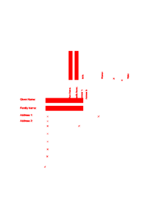
pdftopdf/filled-2/booklet-on.pdfbooklet=on
page count 2 -> 1
page 1: CropBox [0.0, 0.0, 841.9, 595.3] -> [0.0, 0.0, 595.3, 841.9], MediaBox [0.0, 0.0, 841.9, 595.3] -> [0.0, 0.0, 595.3, 841.9], rot 270 -> 0, size 841.89 x 595.276 -> 595.276 x 841.89
p1: 2.12% pixels changed; deep compare failed: ufunc 'arctan2' not supported for the input types, and the inputs could not be safely coerced to any supported types according to the casting rule ''safe''
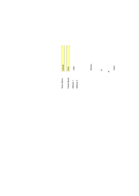


pdftopdf/filled-2/collate-false-copies2.pdfcollate=false
page count 1 -> 2
p1: 0.94% pixels changed; deep compare failed: ufunc 'arctan2' not supported for the input types, and the inputs could not be safely coerced to any supported types according to the casting rule ''safe''


pdftopdf/filled-2/crop-to-fit-true.pdfcrop-to-fit=true
page 1: CropBox [0.0, 0.0, 595.0, 842.0] -> [0.0, 0.0, 595.3, 841.9], MediaBox [0.0, 0.0, 595.0, 842.0] -> [0.0, 0.0, 595.3, 841.9], size 595 x 842 -> 595.276 x 841.89
p1: rendered size 595x842 -> 596x842


pdftopdf/filled-2/default-copies2.pdfpage count 1 -> 2
p1: 0.94% pixels changed; deep compare failed: ufunc 'arctan2' not supported for the input types, and the inputs could not be safely coerced to any supported types according to the casting rule ''safe''


pdftopdf/filled-2/imposition-template-booklet.pdfimposition-template=booklet
page count 1 -> 2
p1: 2.39% pixels changed; deep compare failed: ufunc 'arctan2' not supported for the input types, and the inputs could not be safely coerced to any supported types according to the casting rule ''safe''

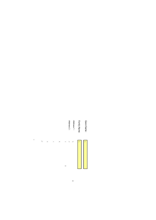
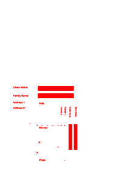
pdftopdf/filled-2/landscape-true.pdflandscape=true
page 1: CropBox [0.0, 0.0, 841.9, 595.3] -> [0.0, 0.0, 595.3, 841.9], MediaBox [0.0, 0.0, 841.9, 595.3] -> [0.0, 0.0, 595.3, 841.9], rot 270 -> 0, size 841.89 x 595.276 -> 595.276 x 841.89
p1: 2.62% pixels changed; deep compare failed: ufunc 'arctan2' not supported for the input types, and the inputs could not be safely coerced to any supported types according to the casting rule ''safe''
pdftopdf/filled-2/media-na-legal-8-5x14in.pdfmedia=na_legal_8.5x14in
page 1: CropBox [0.0, 0.0, 595.3, 841.9] -> [0.0, 0.0, 612.0, 1008.0], MediaBox [0.0, 0.0, 595.3, 841.9] -> [0.0, 0.0, 612.0, 1008.0], size 595.276 x 841.89 -> 612 x 1008
p1: rendered size 596x842 -> 612x1008


pdftopdf/filled-2/media-na-letter-8-5x11in.pdfmedia=na_letter_8.5x11in
page 1: CropBox [0.0, 0.0, 595.3, 841.9] -> [0.0, 0.0, 612.0, 792.0], MediaBox [0.0, 0.0, 595.3, 841.9] -> [0.0, 0.0, 612.0, 792.0], size 595.276 x 841.89 -> 612 x 792
p1: rendered size 596x842 -> 612x792


pdftopdf/filled-2/number-up-10.pdfnumber-up=10
page 1: CropBox [0.0, 0.0, 841.9, 595.3] -> [0.0, 0.0, 595.3, 841.9], MediaBox [0.0, 0.0, 841.9, 595.3] -> [0.0, 0.0, 595.3, 841.9], rot 270 -> 0, size 841.89 x 595.276 -> 595.276 x 841.89
p1: 0.31% pixels changed; deep compare failed: ufunc 'arctan2' not supported for the input types, and the inputs could not be safely coerced to any supported types according to the casting rule ''safe''
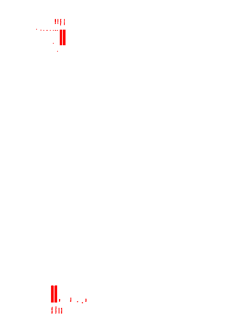
pdftopdf/filled-2/number-up-15.pdfnumber-up=15
page 1: CropBox [0.0, 0.0, 841.9, 595.3] -> [0.0, 0.0, 595.3, 841.9], MediaBox [0.0, 0.0, 841.9, 595.3] -> [0.0, 0.0, 595.3, 841.9], rot 270 -> 0, size 841.89 x 595.276 -> 595.276 x 841.89
p1: 0.21% pixels changed; deep compare failed: ufunc 'arctan2' not supported for the input types, and the inputs could not be safely coerced to any supported types according to the casting rule ''safe''
pdftopdf/filled-2/number-up-2-orientation-requested-4-print-scaling--ce78b144.pdfnumber-up=2 orientation-requested=4 print-scaling=fill page-set=odd sides=two-sided-long-edge mirror=true media=na_letter_8.5x11in output-order=reverse
page count 2 -> 1
page 1: CropBox [0.0, 0.0, 595.3, 841.9] -> [0.0, 0.0, 612.0, 792.0], MediaBox [0.0, 0.0, 595.3, 841.9] -> [0.0, 0.0, 612.0, 792.0], size 595.276 x 841.89 -> 612 x 792
p1: rendered size 596x842 -> 612x792

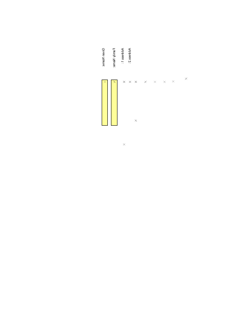

pdftopdf/filled-2/number-up-2-orientation-requested-5-print-scaling--abb7f6e0.pdfnumber-up=2 orientation-requested=5 print-scaling=none page-set=odd sides=two-sided-short-edge page-border=single media=na_letter_8.5x11in
page 1: CropBox [0.0, 0.0, 595.3, 841.9] -> [0.0, 0.0, 612.0, 792.0], MediaBox [0.0, 0.0, 595.3, 841.9] -> [0.0, 0.0, 612.0, 792.0], rot 180 -> 0, size 595.276 x 841.89 -> 612 x 792
p1: rendered size 596x842 -> 612x792
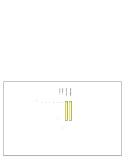

pdftopdf/filled-2/number-up-2-orientation-requested-6-page-set-even--e8135f6f.pdfnumber-up=2 orientation-requested=6 page-set=even media=na_letter_8.5x11in output-order=reverse
output could not be parsed
pdftopdf/filled-2/number-up-2-page-border-double-thick.pdfnumber-up=2 page-border=double-thick
page 1: CropBox [0.0, 0.0, 841.9, 595.3] -> [0.0, 0.0, 595.3, 841.9], MediaBox [0.0, 0.0, 841.9, 595.3] -> [0.0, 0.0, 595.3, 841.9], rot 270 -> 0, size 841.89 x 595.276 -> 595.276 x 841.89
p1: 4.40% pixels changed; deep compare failed: ufunc 'arctan2' not supported for the input types, and the inputs could not be safely coerced to any supported types according to the casting rule ''safe''
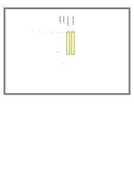
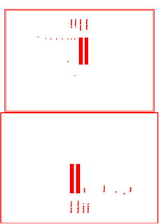
pdftopdf/filled-2/number-up-2-page-border-double.pdfnumber-up=2 page-border=double
page 1: CropBox [0.0, 0.0, 841.9, 595.3] -> [0.0, 0.0, 595.3, 841.9], MediaBox [0.0, 0.0, 841.9, 595.3] -> [0.0, 0.0, 595.3, 841.9], rot 270 -> 0, size 841.89 x 595.276 -> 595.276 x 841.89
p1: 3.26% pixels changed; deep compare failed: ufunc 'arctan2' not supported for the input types, and the inputs could not be safely coerced to any supported types according to the casting rule ''safe''
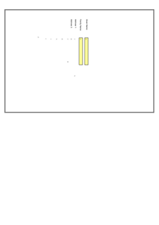
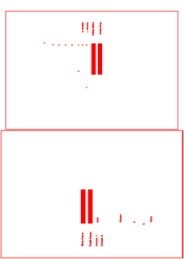
pdftopdf/filled-2/number-up-2-page-border-single-thick.pdfnumber-up=2 page-border=single-thick
page 1: CropBox [0.0, 0.0, 841.9, 595.3] -> [0.0, 0.0, 595.3, 841.9], MediaBox [0.0, 0.0, 841.9, 595.3] -> [0.0, 0.0, 595.3, 841.9], rot 270 -> 0, size 841.89 x 595.276 -> 595.276 x 841.89
p1: 2.98% pixels changed; deep compare failed: ufunc 'arctan2' not supported for the input types, and the inputs could not be safely coerced to any supported types according to the casting rule ''safe''
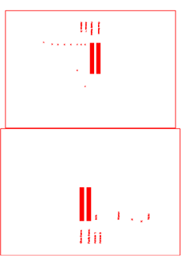
pdftopdf/filled-2/number-up-2-page-border-single.pdfnumber-up=2 page-border=single
page 1: CropBox [0.0, 0.0, 841.9, 595.3] -> [0.0, 0.0, 595.3, 841.9], MediaBox [0.0, 0.0, 841.9, 595.3] -> [0.0, 0.0, 595.3, 841.9], rot 270 -> 0, size 841.89 x 595.276 -> 595.276 x 841.89
p1: 2.40% pixels changed; deep compare failed: ufunc 'arctan2' not supported for the input types, and the inputs could not be safely coerced to any supported types according to the casting rule ''safe''
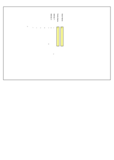
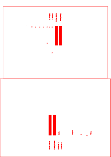
pdftopdf/filled-2/number-up-2-print-scaling-fit-sides-two-sided-long-576d7fb6.pdfnumber-up=2 print-scaling=fit sides=two-sided-long-edge page-border=single
page 1: CropBox [0.0, 0.0, 841.9, 595.3] -> [0.0, 0.0, 595.3, 841.9], MediaBox [0.0, 0.0, 841.9, 595.3] -> [0.0, 0.0, 595.3, 841.9], rot 270 -> 0, size 841.89 x 595.276 -> 595.276 x 841.89
p1: 2.26% pixels changed; deep compare failed: ufunc 'arctan2' not supported for the input types, and the inputs could not be safely coerced to any supported types according to the casting rule ''safe''

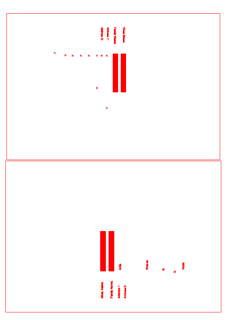
pdftopdf/filled-2/number-up-2.pdfnumber-up=2
page 1: CropBox [0.0, 0.0, 841.9, 595.3] -> [0.0, 0.0, 595.3, 841.9], MediaBox [0.0, 0.0, 841.9, 595.3] -> [0.0, 0.0, 595.3, 841.9], rot 270 -> 0, size 841.89 x 595.276 -> 595.276 x 841.89
p1: 1.54% pixels changed; deep compare failed: ufunc 'arctan2' not supported for the input types, and the inputs could not be safely coerced to any supported types according to the casting rule ''safe''
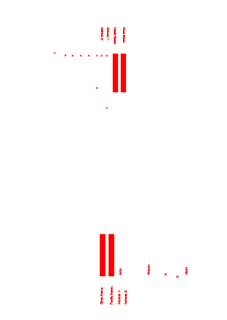
pdftopdf/filled-2/number-up-3.pdfnumber-up=3
page 1: CropBox [0.0, 0.0, 841.9, 595.3] -> [0.0, 0.0, 595.3, 841.9], MediaBox [0.0, 0.0, 841.9, 595.3] -> [0.0, 0.0, 595.3, 841.9], rot 270 -> 0, size 841.89 x 595.276 -> 595.276 x 841.89
p1: 0.71% pixels changed; deep compare failed: ufunc 'arctan2' not supported for the input types, and the inputs could not be safely coerced to any supported types according to the casting rule ''safe''
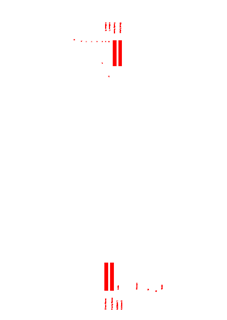
pdftopdf/filled-2/number-up-4-orientation-requested-4-print-scaling--50b0bedf.pdfnumber-up=4 orientation-requested=4 print-scaling=fit page-set=odd mirror=true page-border=single output-order=reverse
page 1: CropBox [0.0, 0.0, 841.9, 595.3] -> [0.0, 0.0, 595.3, 841.9], MediaBox [0.0, 0.0, 841.9, 595.3] -> [0.0, 0.0, 595.3, 841.9], rot 270 -> 0, size 841.89 x 595.276 -> 595.276 x 841.89
p1: 0.84% pixels changed; deep compare failed: ufunc 'arctan2' not supported for the input types, and the inputs could not be safely coerced to any supported types according to the casting rule ''safe''

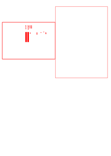
pdftopdf/filled-2/number-up-4-orientation-requested-5.pdfnumber-up=4 orientation-requested=5
page 1: CropBox [0.0, 0.0, 841.9, 595.3] -> [0.0, 0.0, 595.3, 841.9], MediaBox [0.0, 0.0, 841.9, 595.3] -> [0.0, 0.0, 595.3, 841.9], rot 90 -> 0, size 841.89 x 595.276 -> 595.276 x 841.89
p1: 0.80% pixels changed; deep compare failed: ufunc 'arctan2' not supported for the input types, and the inputs could not be safely coerced to any supported types according to the casting rule ''safe''
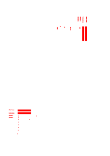
pdftopdf/filled-2/number-up-4-orientation-requested-6-print-scaling--9dfdcd8c.pdfnumber-up=4 orientation-requested=6 print-scaling=none page-set=even sides=two-sided-long-edge media=na_letter_8.5x11in
page 1: CropBox [0.0, 0.0, 595.3, 841.9] -> [0.0, 0.0, 612.0, 792.0], MediaBox [0.0, 0.0, 595.3, 841.9] -> [0.0, 0.0, 612.0, 792.0], size 595.276 x 841.89 -> 612 x 792
p1: rendered size 596x842 -> 612x792


pdftopdf/filled-2/number-up-4-print-scaling-none-sides-two-sided-sho-2a337940.pdfnumber-up=4 print-scaling=none sides=two-sided-short-edge mirror=true media=na_letter_8.5x11in output-order=reverse
page count 2 -> 1
page 1: CropBox [0.0, 0.0, 595.3, 841.9] -> [0.0, 0.0, 612.0, 792.0], MediaBox [0.0, 0.0, 595.3, 841.9] -> [0.0, 0.0, 612.0, 792.0], size 595.276 x 841.89 -> 612 x 792
p1: rendered size 596x842 -> 612x792


pdftopdf/filled-2/number-up-6-orientation-requested-5-print-scaling--87124e38.pdfnumber-up=6 orientation-requested=5 print-scaling=fit page-set=even sides=two-sided-short-edge mirror=true page-border=single media=na_letter_8.5x11in
page 1: CropBox [0.0, 0.0, 595.3, 841.9] -> [0.0, 0.0, 612.0, 792.0], MediaBox [0.0, 0.0, 595.3, 841.9] -> [0.0, 0.0, 612.0, 792.0], size 595.276 x 841.89 -> 612 x 792
p1: rendered size 596x842 -> 612x792


pdftopdf/filled-2/number-up-6-orientation-requested-6-print-scaling--a2e6d38e.pdfnumber-up=6 orientation-requested=6 print-scaling=none page-set=odd page-border=single media=na_letter_8.5x11in output-order=reverse
page 1: CropBox [0.0, 0.0, 841.9, 595.3] -> [0.0, 0.0, 612.0, 792.0], MediaBox [0.0, 0.0, 841.9, 595.3] -> [0.0, 0.0, 612.0, 792.0], rot 90 -> 0, size 841.89 x 595.276 -> 612 x 792
p1: rendered size 596x842 -> 612x792
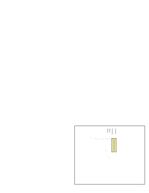

pdftopdf/filled-2/number-up-6-page-set-even-sides-two-sided-long-edg-63dc2368.pdfnumber-up=6 page-set=even sides=two-sided-long-edge mirror=true media=na_letter_8.5x11in output-order=reverse
page 1: CropBox [0.0, 0.0, 841.9, 595.3] -> [0.0, 0.0, 612.0, 792.0], MediaBox [0.0, 0.0, 841.9, 595.3] -> [0.0, 0.0, 612.0, 792.0], size 841.89 x 595.276 -> 612 x 792
p1: rendered size 842x596 -> 612x792


pdftopdf/filled-2/number-up-6.pdfnumber-up=6
page 1: CropBox [0.0, 0.0, 841.9, 595.3] -> [0.0, 0.0, 595.3, 841.9], MediaBox [0.0, 0.0, 841.9, 595.3] -> [0.0, 0.0, 595.3, 841.9], rot 270 -> 0, size 841.89 x 595.276 -> 595.276 x 841.89
p1: 0.41% pixels changed; deep compare failed: ufunc 'arctan2' not supported for the input types, and the inputs could not be safely coerced to any supported types according to the casting rule ''safe''
pdftopdf/filled-2/number-up-8.pdfnumber-up=8
page 1: CropBox [0.0, 0.0, 841.9, 595.3] -> [0.0, 0.0, 595.3, 841.9], MediaBox [0.0, 0.0, 841.9, 595.3] -> [0.0, 0.0, 595.3, 841.9], rot 270 -> 0, size 841.89 x 595.276 -> 595.276 x 841.89
p1: 0.44% pixels changed; deep compare failed: ufunc 'arctan2' not supported for the input types, and the inputs could not be safely coerced to any supported types according to the casting rule ''safe''
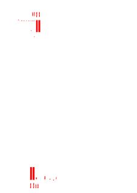
pdftopdf/filled-2/orientation-requested-4-page-set-even-sides-two-si-db0f91eb.pdforientation-requested=4 page-set=even sides=two-sided-long-edge
page 1: CropBox [0.0, 0.0, 841.9, 595.3] -> [0.0, 0.0, 595.3, 841.9], MediaBox [0.0, 0.0, 841.9, 595.3] -> [0.0, 0.0, 595.3, 841.9], size 841.89 x 595.276 -> 595.276 x 841.89
p1: rendered size 842x596 -> 596x842


pdftopdf/filled-2/orientation-requested-4-print-scaling-none-mirror-true.pdforientation-requested=4 print-scaling=none mirror=true
page 1: CropBox [0.0, 0.0, 595.0, 842.0] -> [0.0, 0.0, 595.3, 841.9], MediaBox [0.0, 0.0, 595.0, 842.0] -> [0.0, 0.0, 595.3, 841.9], rot 270 -> 0, size 595 x 842 -> 595.276 x 841.89
p1: rendered size 842x595 -> 596x842
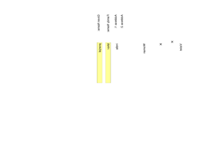
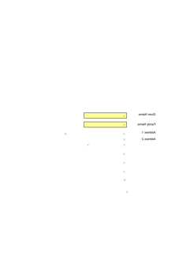

pdftopdf/filled-2/orientation-requested-4.pdforientation-requested=4
page 1: CropBox [0.0, 0.0, 841.9, 595.3] -> [0.0, 0.0, 595.3, 841.9], MediaBox [0.0, 0.0, 841.9, 595.3] -> [0.0, 0.0, 595.3, 841.9], rot 270 -> 0, size 841.89 x 595.276 -> 595.276 x 841.89
p1: 2.62% pixels changed; deep compare failed: ufunc 'arctan2' not supported for the input types, and the inputs could not be safely coerced to any supported types according to the casting rule ''safe''


pdftopdf/filled-2/orientation-requested-5-print-scaling-fit-page-set-aabd8fa3.pdforientation-requested=5 print-scaling=fit page-set=even sides=two-sided-long-edge media=na_letter_8.5x11in output-order=reverse
page 1: CropBox [0.0, 0.0, 841.9, 595.3] -> [0.0, 0.0, 612.0, 792.0], MediaBox [0.0, 0.0, 841.9, 595.3] -> [0.0, 0.0, 612.0, 792.0], size 841.89 x 595.276 -> 612 x 792
p1: rendered size 842x596 -> 612x792


pdftopdf/filled-2/orientation-requested-5.pdforientation-requested=5
page 1: CropBox [0.0, 0.0, 841.9, 595.3] -> [0.0, 0.0, 595.3, 841.9], MediaBox [0.0, 0.0, 841.9, 595.3] -> [0.0, 0.0, 595.3, 841.9], rot 90 -> 0, size 841.89 x 595.276 -> 595.276 x 841.89
p1: 2.61% pixels changed; deep compare failed: ufunc 'arctan2' not supported for the input types, and the inputs could not be safely coerced to any supported types according to the casting rule ''safe''
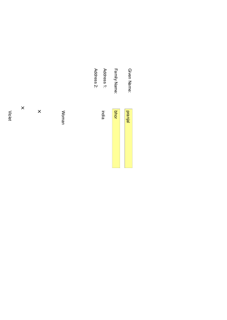

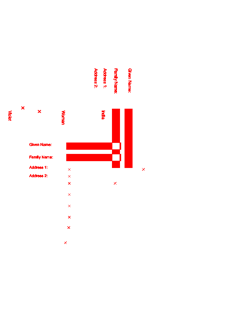
pdftopdf/filled-2/orientation-requested-6-print-scaling-fit-mirror-t-84e2532f.pdforientation-requested=6 print-scaling=fit mirror=true media=na_letter_8.5x11in output-order=reverse
page 1: CropBox [0.0, 0.0, 595.3, 841.9] -> [0.0, 0.0, 612.0, 792.0], MediaBox [0.0, 0.0, 595.3, 841.9] -> [0.0, 0.0, 612.0, 792.0], rot 180 -> 0, size 595.276 x 841.89 -> 612 x 792
p1: rendered size 596x842 -> 612x792
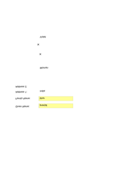
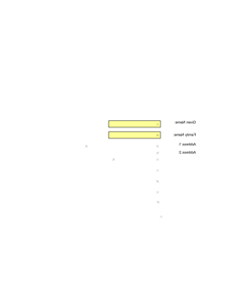

pdftopdf/filled-2/orientation-requested-6.pdforientation-requested=6
page 1: rot 180 -> 0
p1: 2.80% pixels changed; deep compare failed: ufunc 'arctan2' not supported for the input types, and the inputs could not be safely coerced to any supported types according to the casting rule ''safe''
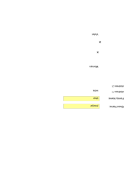

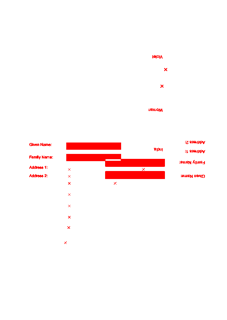
pdftopdf/filled-2/page-ranges-2-3.pdfpage-ranges=2-3
output could not be parsed
pdftopdf/filled-2/page-ranges-2.pdfpage-ranges=2-
output could not be parsed
pdftopdf/filled-2/page-set-even.pdfpage-set=even
output could not be parsed
pdftopdf/filled-2/page-set-odd-sides-two-sided-short-edge-mirror-tru-88f44847.pdfpage-set=odd sides=two-sided-short-edge mirror=true page-border=single media=na_letter_8.5x11in output-order=reverse
page count 2 -> 1
page 1: CropBox [0.0, 0.0, 595.3, 841.9] -> [0.0, 0.0, 612.0, 792.0], MediaBox [0.0, 0.0, 595.3, 841.9] -> [0.0, 0.0, 612.0, 792.0], size 595.276 x 841.89 -> 612 x 792
p1: rendered size 596x842 -> 612x792

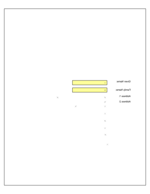

pdftopdf/filled-2/print-scaling-none.pdfprint-scaling=none
page 1: CropBox [0.0, 0.0, 595.0, 842.0] -> [0.0, 0.0, 595.3, 841.9], MediaBox [0.0, 0.0, 595.0, 842.0] -> [0.0, 0.0, 595.3, 841.9], size 595 x 842 -> 595.276 x 841.89
p1: rendered size 595x842 -> 596x842


pdftopdf/filled-2/sides-two-sided-long-edge.pdfsides=two-sided-long-edge
page count 1 -> 2
p1: 0.94% pixels changed; deep compare failed: ufunc 'arctan2' not supported for the input types, and the inputs could not be safely coerced to any supported types according to the casting rule ''safe''


pdftopdf/filled-2/sides-two-sided-short-edge.pdfsides=two-sided-short-edge
page count 1 -> 2
p1: 0.94% pixels changed; deep compare failed: ufunc 'arctan2' not supported for the input types, and the inputs could not be safely coerced to any supported types according to the casting rule ''safe''


pdftopdf/form_english/booklet-on-sides-two-sided-short-edge.pdfbooklet=on sides=two-sided-short-edge
page 1: CropBox [0.0, 0.0, 841.9, 595.3] -> [0.0, 0.0, 595.3, 841.9], MediaBox [0.0, 0.0, 841.9, 595.3] -> [0.0, 0.0, 595.3, 841.9], rot 270 -> 0, size 841.89 x 595.276 -> 595.276 x 841.89
page 2: CropBox [0.0, 0.0, 841.9, 595.3] -> [0.0, 0.0, 595.3, 841.9], MediaBox [0.0, 0.0, 841.9, 595.3] -> [0.0, 0.0, 595.3, 841.9], rot 270 -> 0, size 841.89 x 595.276 -> 595.276 x 841.89
p1: 8.02% pixels changed; deep compare failed: ufunc 'arctan2' not supported for the input types, and the inputs could not be safely coerced to any supported types according to the casting rule ''safe''


pdftopdf/form_english/booklet-on.pdfbooklet=on
page count 2 -> 1
page 1: CropBox [0.0, 0.0, 841.9, 595.3] -> [0.0, 0.0, 595.3, 841.9], MediaBox [0.0, 0.0, 841.9, 595.3] -> [0.0, 0.0, 595.3, 841.9], rot 270 -> 0, size 841.89 x 595.276 -> 595.276 x 841.89
p1: 8.02% pixels changed; deep compare failed: ufunc 'arctan2' not supported for the input types, and the inputs could not be safely coerced to any supported types according to the casting rule ''safe''
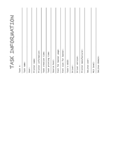

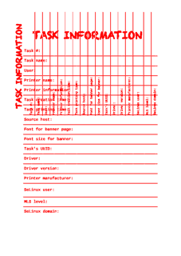
pdftopdf/form_english/collate-false-copies2.pdfcollate=false
page count 1 -> 2
p1: 9.97% pixels changed; deep compare failed: ufunc 'arctan2' not supported for the input types, and the inputs could not be safely coerced to any supported types according to the casting rule ''safe''


pdftopdf/form_english/crop-to-fit-true.pdfcrop-to-fit=true
page 1: CropBox [0.0, 0.0, 595.0, 842.0] -> [0.0, 0.0, 595.3, 841.9], MediaBox [0.0, 0.0, 595.0, 842.0] -> [0.0, 0.0, 595.3, 841.9], size 595 x 842 -> 595.276 x 841.89
p1: rendered size 595x842 -> 596x842


pdftopdf/form_english/default-copies2.pdfpage count 1 -> 2
p1: 9.97% pixels changed; deep compare failed: ufunc 'arctan2' not supported for the input types, and the inputs could not be safely coerced to any supported types according to the casting rule ''safe''


pdftopdf/form_english/imposition-template-booklet.pdfimposition-template=booklet
page count 1 -> 2
p1: 8.67% pixels changed; deep compare failed: ufunc 'arctan2' not supported for the input types, and the inputs could not be safely coerced to any supported types according to the casting rule ''safe''

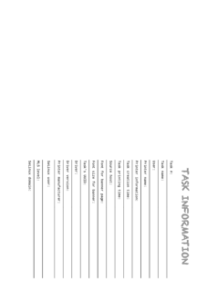
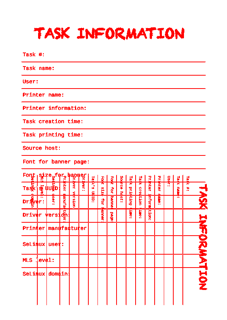
pdftopdf/form_english/landscape-true.pdflandscape=true
page 1: CropBox [0.0, 0.0, 841.9, 595.3] -> [0.0, 0.0, 595.3, 841.9], MediaBox [0.0, 0.0, 841.9, 595.3] -> [0.0, 0.0, 595.3, 841.9], rot 270 -> 0, size 841.89 x 595.276 -> 595.276 x 841.89
p1: 8.74% pixels changed; deep compare failed: ufunc 'arctan2' not supported for the input types, and the inputs could not be safely coerced to any supported types according to the casting rule ''safe''


pdftopdf/form_english/media-na-legal-8-5x14in.pdfmedia=na_legal_8.5x14in
page 1: CropBox [0.0, 0.0, 595.3, 841.9] -> [0.0, 0.0, 612.0, 1008.0], MediaBox [0.0, 0.0, 595.3, 841.9] -> [0.0, 0.0, 612.0, 1008.0], size 595.276 x 841.89 -> 612 x 1008
p1: rendered size 596x842 -> 612x1008

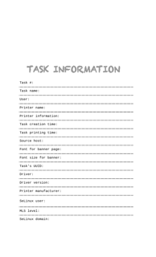

pdftopdf/form_english/media-na-letter-8-5x11in.pdfmedia=na_letter_8.5x11in
page 1: CropBox [0.0, 0.0, 595.3, 841.9] -> [0.0, 0.0, 612.0, 792.0], MediaBox [0.0, 0.0, 595.3, 841.9] -> [0.0, 0.0, 612.0, 792.0], size 595.276 x 841.89 -> 612 x 792
p1: rendered size 596x842 -> 612x792

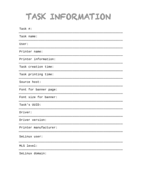

pdftopdf/form_english/number-up-10.pdfnumber-up=10
page 1: CropBox [0.0, 0.0, 841.9, 595.3] -> [0.0, 0.0, 595.3, 841.9], MediaBox [0.0, 0.0, 841.9, 595.3] -> [0.0, 0.0, 595.3, 841.9], rot 270 -> 0, size 841.89 x 595.276 -> 595.276 x 841.89
p1: 1.63% pixels changed; deep compare failed: ufunc 'arctan2' not supported for the input types, and the inputs could not be safely coerced to any supported types according to the casting rule ''safe''
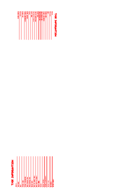
pdftopdf/form_english/number-up-15.pdfnumber-up=15
page 1: CropBox [0.0, 0.0, 841.9, 595.3] -> [0.0, 0.0, 595.3, 841.9], MediaBox [0.0, 0.0, 841.9, 595.3] -> [0.0, 0.0, 595.3, 841.9], rot 270 -> 0, size 841.89 x 595.276 -> 595.276 x 841.89
p1: 1.34% pixels changed; deep compare failed: ufunc 'arctan2' not supported for the input types, and the inputs could not be safely coerced to any supported types according to the casting rule ''safe''
pdftopdf/form_english/number-up-2-orientation-requested-4-print-scaling--ce78b144.pdfnumber-up=2 orientation-requested=4 print-scaling=fill page-set=odd sides=two-sided-long-edge mirror=true media=na_letter_8.5x11in output-order=reverse
page count 2 -> 1
page 1: CropBox [0.0, 0.0, 595.3, 841.9] -> [0.0, 0.0, 612.0, 792.0], MediaBox [0.0, 0.0, 595.3, 841.9] -> [0.0, 0.0, 612.0, 792.0], size 595.276 x 841.89 -> 612 x 792
p1: rendered size 596x842 -> 612x792

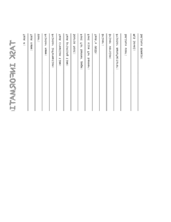

pdftopdf/form_english/number-up-2-orientation-requested-5-print-scaling--abb7f6e0.pdfnumber-up=2 orientation-requested=5 print-scaling=none page-set=odd sides=two-sided-short-edge page-border=single media=na_letter_8.5x11in
page 1: CropBox [0.0, 0.0, 595.3, 841.9] -> [0.0, 0.0, 612.0, 792.0], MediaBox [0.0, 0.0, 595.3, 841.9] -> [0.0, 0.0, 612.0, 792.0], rot 180 -> 0, size 595.276 x 841.89 -> 612 x 792
p1: rendered size 596x842 -> 612x792
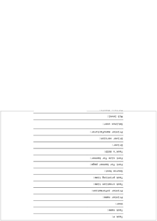
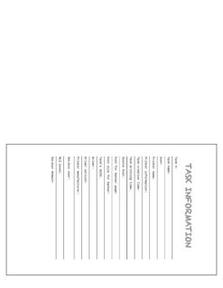

pdftopdf/form_english/number-up-2-orientation-requested-6-page-set-even--e8135f6f.pdfnumber-up=2 orientation-requested=6 page-set=even media=na_letter_8.5x11in output-order=reverse
output could not be parsed
pdftopdf/form_english/number-up-2-page-border-double-thick.pdfnumber-up=2 page-border=double-thick
page 1: CropBox [0.0, 0.0, 841.9, 595.3] -> [0.0, 0.0, 595.3, 841.9], MediaBox [0.0, 0.0, 841.9, 595.3] -> [0.0, 0.0, 595.3, 841.9], rot 270 -> 0, size 841.89 x 595.276 -> 595.276 x 841.89
p1: 9.38% pixels changed; deep compare failed: ufunc 'arctan2' not supported for the input types, and the inputs could not be safely coerced to any supported types according to the casting rule ''safe''
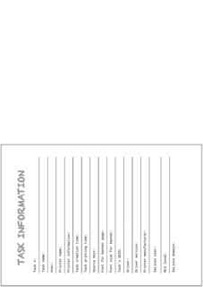
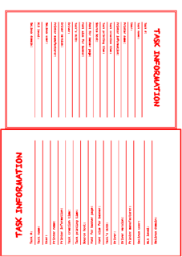
pdftopdf/form_english/number-up-2-page-border-double.pdfnumber-up=2 page-border=double
page 1: CropBox [0.0, 0.0, 841.9, 595.3] -> [0.0, 0.0, 595.3, 841.9], MediaBox [0.0, 0.0, 841.9, 595.3] -> [0.0, 0.0, 595.3, 841.9], rot 270 -> 0, size 841.89 x 595.276 -> 595.276 x 841.89
p1: 8.24% pixels changed; deep compare failed: ufunc 'arctan2' not supported for the input types, and the inputs could not be safely coerced to any supported types according to the casting rule ''safe''
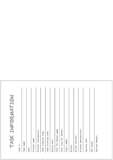
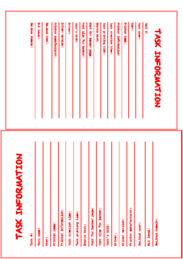
pdftopdf/form_english/number-up-2-page-border-single-thick.pdfnumber-up=2 page-border=single-thick
page 1: CropBox [0.0, 0.0, 841.9, 595.3] -> [0.0, 0.0, 595.3, 841.9], MediaBox [0.0, 0.0, 841.9, 595.3] -> [0.0, 0.0, 595.3, 841.9], rot 270 -> 0, size 841.89 x 595.276 -> 595.276 x 841.89
p1: 7.96% pixels changed; deep compare failed: ufunc 'arctan2' not supported for the input types, and the inputs could not be safely coerced to any supported types according to the casting rule ''safe''
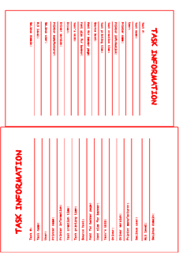
pdftopdf/form_english/number-up-2-page-border-single.pdfnumber-up=2 page-border=single
page 1: CropBox [0.0, 0.0, 841.9, 595.3] -> [0.0, 0.0, 595.3, 841.9], MediaBox [0.0, 0.0, 841.9, 595.3] -> [0.0, 0.0, 595.3, 841.9], rot 270 -> 0, size 841.89 x 595.276 -> 595.276 x 841.89
p1: 7.38% pixels changed; deep compare failed: ufunc 'arctan2' not supported for the input types, and the inputs could not be safely coerced to any supported types according to the casting rule ''safe''

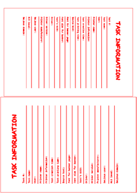
pdftopdf/form_english/number-up-2-print-scaling-fit-sides-two-sided-long-576d7fb6.pdfnumber-up=2 print-scaling=fit sides=two-sided-long-edge page-border=single
page 1: CropBox [0.0, 0.0, 841.9, 595.3] -> [0.0, 0.0, 595.3, 841.9], MediaBox [0.0, 0.0, 841.9, 595.3] -> [0.0, 0.0, 595.3, 841.9], rot 270 -> 0, size 841.89 x 595.276 -> 595.276 x 841.89
p1: 7.04% pixels changed; deep compare failed: ufunc 'arctan2' not supported for the input types, and the inputs could not be safely coerced to any supported types according to the casting rule ''safe''
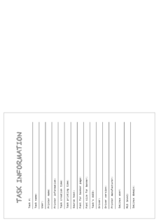
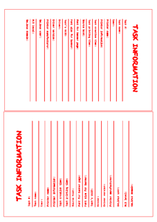
pdftopdf/form_english/number-up-2.pdfnumber-up=2
page 1: CropBox [0.0, 0.0, 841.9, 595.3] -> [0.0, 0.0, 595.3, 841.9], MediaBox [0.0, 0.0, 841.9, 595.3] -> [0.0, 0.0, 595.3, 841.9], rot 270 -> 0, size 841.89 x 595.276 -> 595.276 x 841.89
p1: 6.52% pixels changed; deep compare failed: ufunc 'arctan2' not supported for the input types, and the inputs could not be safely coerced to any supported types according to the casting rule ''safe''
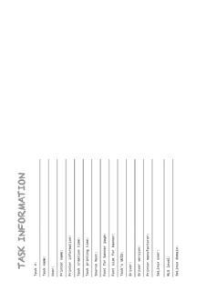
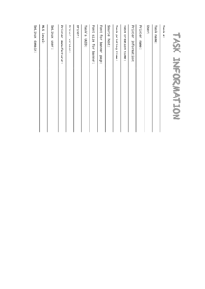
pdftopdf/form_english/number-up-3.pdfnumber-up=3
page 1: CropBox [0.0, 0.0, 841.9, 595.3] -> [0.0, 0.0, 595.3, 841.9], MediaBox [0.0, 0.0, 841.9, 595.3] -> [0.0, 0.0, 595.3, 841.9], rot 270 -> 0, size 841.89 x 595.276 -> 595.276 x 841.89
p1: 3.68% pixels changed; deep compare failed: ufunc 'arctan2' not supported for the input types, and the inputs could not be safely coerced to any supported types according to the casting rule ''safe''
pdftopdf/form_english/number-up-4-orientation-requested-4-print-scaling--50b0bedf.pdfnumber-up=4 orientation-requested=4 print-scaling=fit page-set=odd mirror=true page-border=single output-order=reverse
page 1: CropBox [0.0, 0.0, 841.9, 595.3] -> [0.0, 0.0, 595.3, 841.9], MediaBox [0.0, 0.0, 841.9, 595.3] -> [0.0, 0.0, 595.3, 841.9], rot 270 -> 0, size 841.89 x 595.276 -> 595.276 x 841.89
p1: 1.60% pixels changed; deep compare failed: ufunc 'arctan2' not supported for the input types, and the inputs could not be safely coerced to any supported types according to the casting rule ''safe''

pdftopdf/form_english/number-up-4-orientation-requested-5.pdfnumber-up=4 orientation-requested=5
page 1: CropBox [0.0, 0.0, 841.9, 595.3] -> [0.0, 0.0, 595.3, 841.9], MediaBox [0.0, 0.0, 841.9, 595.3] -> [0.0, 0.0, 595.3, 841.9], rot 90 -> 0, size 841.89 x 595.276 -> 595.276 x 841.89
p1: 3.51% pixels changed; deep compare failed: ufunc 'arctan2' not supported for the input types, and the inputs could not be safely coerced to any supported types according to the casting rule ''safe''
pdftopdf/form_english/number-up-4-orientation-requested-6-print-scaling--9dfdcd8c.pdfnumber-up=4 orientation-requested=6 print-scaling=none page-set=even sides=two-sided-long-edge media=na_letter_8.5x11in
page 1: CropBox [0.0, 0.0, 595.3, 841.9] -> [0.0, 0.0, 612.0, 792.0], MediaBox [0.0, 0.0, 595.3, 841.9] -> [0.0, 0.0, 612.0, 792.0], size 595.276 x 841.89 -> 612 x 792
p1: rendered size 596x842 -> 612x792


pdftopdf/form_english/number-up-4-print-scaling-none-sides-two-sided-sho-2a337940.pdfnumber-up=4 print-scaling=none sides=two-sided-short-edge mirror=true media=na_letter_8.5x11in output-order=reverse
page count 2 -> 1
page 1: CropBox [0.0, 0.0, 595.3, 841.9] -> [0.0, 0.0, 612.0, 792.0], MediaBox [0.0, 0.0, 595.3, 841.9] -> [0.0, 0.0, 612.0, 792.0], size 595.276 x 841.89 -> 612 x 792
p1: rendered size 596x842 -> 612x792


pdftopdf/form_english/number-up-6-orientation-requested-5-print-scaling--87124e38.pdfnumber-up=6 orientation-requested=5 print-scaling=fit page-set=even sides=two-sided-short-edge mirror=true page-border=single media=na_letter_8.5x11in
page 1: CropBox [0.0, 0.0, 595.3, 841.9] -> [0.0, 0.0, 612.0, 792.0], MediaBox [0.0, 0.0, 595.3, 841.9] -> [0.0, 0.0, 612.0, 792.0], size 595.276 x 841.89 -> 612 x 792
p1: rendered size 596x842 -> 612x792


pdftopdf/form_english/number-up-6-orientation-requested-6-print-scaling--a2e6d38e.pdfnumber-up=6 orientation-requested=6 print-scaling=none page-set=odd page-border=single media=na_letter_8.5x11in output-order=reverse
page 1: CropBox [0.0, 0.0, 841.9, 595.3] -> [0.0, 0.0, 612.0, 792.0], MediaBox [0.0, 0.0, 841.9, 595.3] -> [0.0, 0.0, 612.0, 792.0], rot 90 -> 0, size 841.89 x 595.276 -> 612 x 792
p1: rendered size 596x842 -> 612x792

pdftopdf/form_english/number-up-6-page-set-even-sides-two-sided-long-edg-63dc2368.pdfnumber-up=6 page-set=even sides=two-sided-long-edge mirror=true media=na_letter_8.5x11in output-order=reverse
page 1: CropBox [0.0, 0.0, 841.9, 595.3] -> [0.0, 0.0, 612.0, 792.0], MediaBox [0.0, 0.0, 841.9, 595.3] -> [0.0, 0.0, 612.0, 792.0], size 841.89 x 595.276 -> 612 x 792
p1: rendered size 842x596 -> 612x792


pdftopdf/form_english/number-up-6.pdfnumber-up=6
page 1: CropBox [0.0, 0.0, 841.9, 595.3] -> [0.0, 0.0, 595.3, 841.9], MediaBox [0.0, 0.0, 841.9, 595.3] -> [0.0, 0.0, 595.3, 841.9], rot 270 -> 0, size 841.89 x 595.276 -> 595.276 x 841.89
p1: 2.28% pixels changed; deep compare failed: ufunc 'arctan2' not supported for the input types, and the inputs could not be safely coerced to any supported types according to the casting rule ''safe''
pdftopdf/form_english/number-up-8.pdfnumber-up=8
page 1: CropBox [0.0, 0.0, 841.9, 595.3] -> [0.0, 0.0, 595.3, 841.9], MediaBox [0.0, 0.0, 841.9, 595.3] -> [0.0, 0.0, 595.3, 841.9], rot 270 -> 0, size 841.89 x 595.276 -> 595.276 x 841.89
p1: 2.40% pixels changed; deep compare failed: ufunc 'arctan2' not supported for the input types, and the inputs could not be safely coerced to any supported types according to the casting rule ''safe''
pdftopdf/form_english/orientation-requested-4-page-set-even-sides-two-si-db0f91eb.pdforientation-requested=4 page-set=even sides=two-sided-long-edge
page 1: CropBox [0.0, 0.0, 841.9, 595.3] -> [0.0, 0.0, 595.3, 841.9], MediaBox [0.0, 0.0, 841.9, 595.3] -> [0.0, 0.0, 595.3, 841.9], size 841.89 x 595.276 -> 595.276 x 841.89
p1: rendered size 842x596 -> 596x842


pdftopdf/form_english/orientation-requested-4-print-scaling-none-mirror-true.pdforientation-requested=4 print-scaling=none mirror=true
page 1: CropBox [0.0, 0.0, 595.0, 842.0] -> [0.0, 0.0, 595.3, 841.9], MediaBox [0.0, 0.0, 595.0, 842.0] -> [0.0, 0.0, 595.3, 841.9], rot 270 -> 0, size 595 x 842 -> 595.276 x 841.89
p1: rendered size 842x595 -> 596x842

pdftopdf/form_english/orientation-requested-4.pdforientation-requested=4
page 1: CropBox [0.0, 0.0, 841.9, 595.3] -> [0.0, 0.0, 595.3, 841.9], MediaBox [0.0, 0.0, 841.9, 595.3] -> [0.0, 0.0, 595.3, 841.9], rot 270 -> 0, size 841.89 x 595.276 -> 595.276 x 841.89
p1: 8.74% pixels changed; deep compare failed: ufunc 'arctan2' not supported for the input types, and the inputs could not be safely coerced to any supported types according to the casting rule ''safe''

pdftopdf/form_english/orientation-requested-5-print-scaling-fit-page-set-aabd8fa3.pdforientation-requested=5 print-scaling=fit page-set=even sides=two-sided-long-edge media=na_letter_8.5x11in output-order=reverse
page 1: CropBox [0.0, 0.0, 841.9, 595.3] -> [0.0, 0.0, 612.0, 792.0], MediaBox [0.0, 0.0, 841.9, 595.3] -> [0.0, 0.0, 612.0, 792.0], size 841.89 x 595.276 -> 612 x 792
p1: rendered size 842x596 -> 612x792


pdftopdf/form_english/orientation-requested-5.pdforientation-requested=5
page 1: CropBox [0.0, 0.0, 841.9, 595.3] -> [0.0, 0.0, 595.3, 841.9], MediaBox [0.0, 0.0, 841.9, 595.3] -> [0.0, 0.0, 595.3, 841.9], rot 90 -> 0, size 841.89 x 595.276 -> 595.276 x 841.89
p1: 8.76% pixels changed; deep compare failed: ufunc 'arctan2' not supported for the input types, and the inputs could not be safely coerced to any supported types according to the casting rule ''safe''

pdftopdf/form_english/orientation-requested-6-print-scaling-fit-mirror-t-84e2532f.pdforientation-requested=6 print-scaling=fit mirror=true media=na_letter_8.5x11in output-order=reverse
page 1: CropBox [0.0, 0.0, 595.3, 841.9] -> [0.0, 0.0, 612.0, 792.0], MediaBox [0.0, 0.0, 595.3, 841.9] -> [0.0, 0.0, 612.0, 792.0], rot 180 -> 0, size 595.276 x 841.89 -> 612 x 792
p1: rendered size 596x842 -> 612x792

pdftopdf/form_english/orientation-requested-6.pdforientation-requested=6
page 1: rot 180 -> 0
p1: 9.91% pixels changed; deep compare failed: ufunc 'arctan2' not supported for the input types, and the inputs could not be safely coerced to any supported types according to the casting rule ''safe''

pdftopdf/form_english/page-ranges-2-3.pdfpage-ranges=2-3
output could not be parsed
pdftopdf/form_english/page-ranges-2.pdfpage-ranges=2-
output could not be parsed
pdftopdf/form_english/page-set-even.pdfpage-set=even
output could not be parsed
pdftopdf/form_english/page-set-odd-sides-two-sided-short-edge-mirror-tru-88f44847.pdfpage-set=odd sides=two-sided-short-edge mirror=true page-border=single media=na_letter_8.5x11in output-order=reverse
page count 2 -> 1
page 1: CropBox [0.0, 0.0, 595.3, 841.9] -> [0.0, 0.0, 612.0, 792.0], MediaBox [0.0, 0.0, 595.3, 841.9] -> [0.0, 0.0, 612.0, 792.0], size 595.276 x 841.89 -> 612 x 792
p1: rendered size 596x842 -> 612x792


pdftopdf/form_english/print-scaling-none.pdfprint-scaling=none
page 1: CropBox [0.0, 0.0, 595.0, 842.0] -> [0.0, 0.0, 595.3, 841.9], MediaBox [0.0, 0.0, 595.0, 842.0] -> [0.0, 0.0, 595.3, 841.9], size 595 x 842 -> 595.276 x 841.89
p1: rendered size 595x842 -> 596x842


pdftopdf/form_english/sides-two-sided-long-edge.pdfsides=two-sided-long-edge
page count 1 -> 2
p1: 9.97% pixels changed; deep compare failed: ufunc 'arctan2' not supported for the input types, and the inputs could not be safely coerced to any supported types according to the casting rule ''safe''


pdftopdf/form_english/sides-two-sided-short-edge.pdfsides=two-sided-short-edge
page count 1 -> 2
p1: 9.97% pixels changed; deep compare failed: ufunc 'arctan2' not supported for the input types, and the inputs could not be safely coerced to any supported types according to the casting rule ''safe''


pdftopdf/inherited_mediabox/booklet-on-sides-two-sided-short-edge.pdfbooklet=on sides=two-sided-short-edge
page 1: CropBox [0.0, 0.0, 841.9, 595.3] -> [0.0, 0.0, 595.3, 841.9], MediaBox [0.0, 0.0, 841.9, 595.3] -> [0.0, 0.0, 595.3, 841.9], rot 270 -> 0, size 841.89 x 595.276 -> 595.276 x 841.89
page 2: CropBox [0.0, 0.0, 841.9, 595.3] -> [0.0, 0.0, 595.3, 841.9], MediaBox [0.0, 0.0, 841.9, 595.3] -> [0.0, 0.0, 595.3, 841.9], rot 270 -> 0, size 841.89 x 595.276 -> 595.276 x 841.89
p1: 6.75% pixels changed; deep compare failed: ufunc 'arctan2' not supported for the input types, and the inputs could not be safely coerced to any supported types according to the casting rule ''safe''


pdftopdf/inherited_mediabox/booklet-on.pdfbooklet=on
page count 2 -> 1
page 1: CropBox [0.0, 0.0, 841.9, 595.3] -> [0.0, 0.0, 595.3, 841.9], MediaBox [0.0, 0.0, 841.9, 595.3] -> [0.0, 0.0, 595.3, 841.9], rot 270 -> 0, size 841.89 x 595.276 -> 595.276 x 841.89
p1: 6.75% pixels changed; deep compare failed: ufunc 'arctan2' not supported for the input types, and the inputs could not be safely coerced to any supported types according to the casting rule ''safe''


pdftopdf/inherited_mediabox/collate-false-copies2.pdfcollate=false
page count 1 -> 2
p1: 5.49% pixels changed; deep compare failed: ufunc 'arctan2' not supported for the input types, and the inputs could not be safely coerced to any supported types according to the casting rule ''safe''


pdftopdf/inherited_mediabox/crop-to-fit-true.pdfcrop-to-fit=true
page 1: CropBox [0.0, 0.0, 2100.0, 2970.0] -> [0.0, 0.0, 595.3, 841.9], MediaBox [0.0, 0.0, 2100.0, 2970.0] -> [0.0, 0.0, 595.3, 841.9], size 2100 x 2970 -> 595.276 x 841.89
p1: rendered size 2100x2970 -> 596x842


pdftopdf/inherited_mediabox/default-copies2.pdfpage count 1 -> 2
p1: 5.49% pixels changed; deep compare failed: ufunc 'arctan2' not supported for the input types, and the inputs could not be safely coerced to any supported types according to the casting rule ''safe''


pdftopdf/inherited_mediabox/imposition-template-booklet.pdfimposition-template=booklet
page count 1 -> 2
p1: 7.56% pixels changed; deep compare failed: ufunc 'arctan2' not supported for the input types, and the inputs could not be safely coerced to any supported types according to the casting rule ''safe''

pdftopdf/inherited_mediabox/landscape-true.pdflandscape=true
page 1: CropBox [0.0, 0.0, 841.9, 595.3] -> [0.0, 0.0, 595.3, 841.9], MediaBox [0.0, 0.0, 841.9, 595.3] -> [0.0, 0.0, 595.3, 841.9], rot 270 -> 0, size 841.89 x 595.276 -> 595.276 x 841.89
p1: 5.49% pixels changed; deep compare failed: ufunc 'arctan2' not supported for the input types, and the inputs could not be safely coerced to any supported types according to the casting rule ''safe''

pdftopdf/inherited_mediabox/media-na-legal-8-5x14in.pdfmedia=na_legal_8.5x14in
page 1: CropBox [0.0, 0.0, 595.3, 841.9] -> [0.0, 0.0, 612.0, 1008.0], MediaBox [0.0, 0.0, 595.3, 841.9] -> [0.0, 0.0, 612.0, 1008.0], size 595.276 x 841.89 -> 612 x 1008
p1: rendered size 596x842 -> 612x1008


pdftopdf/inherited_mediabox/media-na-letter-8-5x11in.pdfmedia=na_letter_8.5x11in
page 1: CropBox [0.0, 0.0, 595.3, 841.9] -> [0.0, 0.0, 612.0, 792.0], MediaBox [0.0, 0.0, 595.3, 841.9] -> [0.0, 0.0, 612.0, 792.0], size 595.276 x 841.89 -> 612 x 792
p1: rendered size 596x842 -> 612x792


pdftopdf/inherited_mediabox/number-up-10.pdfnumber-up=10
page 1: CropBox [0.0, 0.0, 841.9, 595.3] -> [0.0, 0.0, 595.3, 841.9], MediaBox [0.0, 0.0, 841.9, 595.3] -> [0.0, 0.0, 595.3, 841.9], rot 270 -> 0, size 841.89 x 595.276 -> 595.276 x 841.89
p1: 0.96% pixels changed; deep compare failed: ufunc 'arctan2' not supported for the input types, and the inputs could not be safely coerced to any supported types according to the casting rule ''safe''
pdftopdf/inherited_mediabox/number-up-15.pdfnumber-up=15
page 1: CropBox [0.0, 0.0, 841.9, 595.3] -> [0.0, 0.0, 595.3, 841.9], MediaBox [0.0, 0.0, 841.9, 595.3] -> [0.0, 0.0, 595.3, 841.9], rot 270 -> 0, size 841.89 x 595.276 -> 595.276 x 841.89
p1: 0.75% pixels changed; deep compare failed: ufunc 'arctan2' not supported for the input types, and the inputs could not be safely coerced to any supported types according to the casting rule ''safe''
pdftopdf/inherited_mediabox/number-up-2-orientation-requested-4-print-scaling--ce78b144.pdfnumber-up=2 orientation-requested=4 print-scaling=fill page-set=odd sides=two-sided-long-edge mirror=true media=na_letter_8.5x11in output-order=reverse
page count 2 -> 1
page 1: CropBox [0.0, 0.0, 595.3, 841.9] -> [0.0, 0.0, 612.0, 792.0], MediaBox [0.0, 0.0, 595.3, 841.9] -> [0.0, 0.0, 612.0, 792.0], size 595.276 x 841.89 -> 612 x 792
p1: rendered size 596x842 -> 612x792


pdftopdf/inherited_mediabox/number-up-2-orientation-requested-5-print-scaling--abb7f6e0.pdfnumber-up=2 orientation-requested=5 print-scaling=none page-set=odd sides=two-sided-short-edge page-border=single media=na_letter_8.5x11in
page 1: CropBox [0.0, 0.0, 595.3, 841.9] -> [0.0, 0.0, 612.0, 792.0], MediaBox [0.0, 0.0, 595.3, 841.9] -> [0.0, 0.0, 612.0, 792.0], rot 180 -> 0, size 595.276 x 841.89 -> 612 x 792
p1: rendered size 596x842 -> 612x792

pdftopdf/inherited_mediabox/number-up-2-orientation-requested-6-page-set-even--e8135f6f.pdfnumber-up=2 orientation-requested=6 page-set=even media=na_letter_8.5x11in output-order=reverse
output could not be parsed
pdftopdf/inherited_mediabox/number-up-2-page-border-double-thick.pdfnumber-up=2 page-border=double-thick
page 1: CropBox [0.0, 0.0, 841.9, 595.3] -> [0.0, 0.0, 595.3, 841.9], MediaBox [0.0, 0.0, 841.9, 595.3] -> [0.0, 0.0, 595.3, 841.9], rot 270 -> 0, size 841.89 x 595.276 -> 595.276 x 841.89
p1: 6.35% pixels changed; deep compare failed: ufunc 'arctan2' not supported for the input types, and the inputs could not be safely coerced to any supported types according to the casting rule ''safe''
pdftopdf/inherited_mediabox/number-up-2-page-border-double.pdfnumber-up=2 page-border=double
page 1: CropBox [0.0, 0.0, 841.9, 595.3] -> [0.0, 0.0, 595.3, 841.9], MediaBox [0.0, 0.0, 841.9, 595.3] -> [0.0, 0.0, 595.3, 841.9], rot 270 -> 0, size 841.89 x 595.276 -> 595.276 x 841.89
p1: 5.94% pixels changed; deep compare failed: ufunc 'arctan2' not supported for the input types, and the inputs could not be safely coerced to any supported types according to the casting rule ''safe''
pdftopdf/inherited_mediabox/number-up-2-page-border-single-thick.pdfnumber-up=2 page-border=single-thick
page 1: CropBox [0.0, 0.0, 841.9, 595.3] -> [0.0, 0.0, 595.3, 841.9], MediaBox [0.0, 0.0, 841.9, 595.3] -> [0.0, 0.0, 595.3, 841.9], rot 270 -> 0, size 841.89 x 595.276 -> 595.276 x 841.89
p1: 5.87% pixels changed; deep compare failed: ufunc 'arctan2' not supported for the input types, and the inputs could not be safely coerced to any supported types according to the casting rule ''safe''
pdftopdf/inherited_mediabox/number-up-2-page-border-single.pdfnumber-up=2 page-border=single
page 1: CropBox [0.0, 0.0, 841.9, 595.3] -> [0.0, 0.0, 595.3, 841.9], MediaBox [0.0, 0.0, 841.9, 595.3] -> [0.0, 0.0, 595.3, 841.9], rot 270 -> 0, size 841.89 x 595.276 -> 595.276 x 841.89
p1: 5.50% pixels changed; deep compare failed: ufunc 'arctan2' not supported for the input types, and the inputs could not be safely coerced to any supported types according to the casting rule ''safe''


pdftopdf/inherited_mediabox/number-up-2-print-scaling-fit-sides-two-sided-long-576d7fb6.pdfnumber-up=2 print-scaling=fit sides=two-sided-long-edge page-border=single
page 1: CropBox [0.0, 0.0, 841.9, 595.3] -> [0.0, 0.0, 595.3, 841.9], MediaBox [0.0, 0.0, 841.9, 595.3] -> [0.0, 0.0, 595.3, 841.9], rot 270 -> 0, size 841.89 x 595.276 -> 595.276 x 841.89
p1: 5.50% pixels changed; deep compare failed: ufunc 'arctan2' not supported for the input types, and the inputs could not be safely coerced to any supported types according to the casting rule ''safe''

pdftopdf/inherited_mediabox/number-up-2.pdfnumber-up=2
page 1: CropBox [0.0, 0.0, 841.9, 595.3] -> [0.0, 0.0, 595.3, 841.9], MediaBox [0.0, 0.0, 841.9, 595.3] -> [0.0, 0.0, 595.3, 841.9], rot 270 -> 0, size 841.89 x 595.276 -> 595.276 x 841.89
p1: 4.74% pixels changed; deep compare failed: ufunc 'arctan2' not supported for the input types, and the inputs could not be safely coerced to any supported types according to the casting rule ''safe''
pdftopdf/inherited_mediabox/number-up-3.pdfnumber-up=3
page 1: CropBox [0.0, 0.0, 841.9, 595.3] -> [0.0, 0.0, 595.3, 841.9], MediaBox [0.0, 0.0, 841.9, 595.3] -> [0.0, 0.0, 595.3, 841.9], rot 270 -> 0, size 841.89 x 595.276 -> 595.276 x 841.89
p1: 2.19% pixels changed; deep compare failed: ufunc 'arctan2' not supported for the input types, and the inputs could not be safely coerced to any supported types according to the casting rule ''safe''
pdftopdf/inherited_mediabox/number-up-4-orientation-requested-4-print-scaling--50b0bedf.pdfnumber-up=4 orientation-requested=4 print-scaling=fit page-set=odd mirror=true page-border=single output-order=reverse
page 1: CropBox [0.0, 0.0, 841.9, 595.3] -> [0.0, 0.0, 595.3, 841.9], MediaBox [0.0, 0.0, 841.9, 595.3] -> [0.0, 0.0, 595.3, 841.9], rot 270 -> 0, size 841.89 x 595.276 -> 595.276 x 841.89
p1: 1.65% pixels changed; deep compare failed: ufunc 'arctan2' not supported for the input types, and the inputs could not be safely coerced to any supported types according to the casting rule ''safe''
pdftopdf/inherited_mediabox/number-up-4-orientation-requested-5.pdfnumber-up=4 orientation-requested=5
page 1: CropBox [0.0, 0.0, 841.9, 595.3] -> [0.0, 0.0, 595.3, 841.9], MediaBox [0.0, 0.0, 841.9, 595.3] -> [0.0, 0.0, 595.3, 841.9], rot 90 -> 0, size 841.89 x 595.276 -> 595.276 x 841.89
p1: 2.47% pixels changed; deep compare failed: ufunc 'arctan2' not supported for the input types, and the inputs could not be safely coerced to any supported types according to the casting rule ''safe''
pdftopdf/inherited_mediabox/number-up-4-orientation-requested-6-print-scaling--9dfdcd8c.pdfnumber-up=4 orientation-requested=6 print-scaling=none page-set=even sides=two-sided-long-edge media=na_letter_8.5x11in
page 1: CropBox [0.0, 0.0, 595.3, 841.9] -> [0.0, 0.0, 612.0, 792.0], MediaBox [0.0, 0.0, 595.3, 841.9] -> [0.0, 0.0, 612.0, 792.0], size 595.276 x 841.89 -> 612 x 792
p1: rendered size 596x842 -> 612x792


pdftopdf/inherited_mediabox/number-up-4-print-scaling-none-sides-two-sided-sho-2a337940.pdfnumber-up=4 print-scaling=none sides=two-sided-short-edge mirror=true media=na_letter_8.5x11in output-order=reverse
page count 2 -> 1
page 1: CropBox [0.0, 0.0, 595.3, 841.9] -> [0.0, 0.0, 612.0, 792.0], MediaBox [0.0, 0.0, 595.3, 841.9] -> [0.0, 0.0, 612.0, 792.0], size 595.276 x 841.89 -> 612 x 792
p1: rendered size 596x842 -> 612x792


pdftopdf/inherited_mediabox/number-up-6-orientation-requested-5-print-scaling--87124e38.pdfnumber-up=6 orientation-requested=5 print-scaling=fit page-set=even sides=two-sided-short-edge mirror=true page-border=single media=na_letter_8.5x11in
page 1: CropBox [0.0, 0.0, 595.3, 841.9] -> [0.0, 0.0, 612.0, 792.0], MediaBox [0.0, 0.0, 595.3, 841.9] -> [0.0, 0.0, 612.0, 792.0], size 595.276 x 841.89 -> 612 x 792
p1: rendered size 596x842 -> 612x792


pdftopdf/inherited_mediabox/number-up-6-orientation-requested-6-print-scaling--a2e6d38e.pdfnumber-up=6 orientation-requested=6 print-scaling=none page-set=odd page-border=single media=na_letter_8.5x11in output-order=reverse
page 1: CropBox [0.0, 0.0, 841.9, 595.3] -> [0.0, 0.0, 612.0, 792.0], MediaBox [0.0, 0.0, 841.9, 595.3] -> [0.0, 0.0, 612.0, 792.0], rot 90 -> 0, size 841.89 x 595.276 -> 612 x 792
p1: rendered size 596x842 -> 612x792

pdftopdf/inherited_mediabox/number-up-6-page-set-even-sides-two-sided-long-edg-63dc2368.pdfnumber-up=6 page-set=even sides=two-sided-long-edge mirror=true media=na_letter_8.5x11in output-order=reverse
page 1: CropBox [0.0, 0.0, 841.9, 595.3] -> [0.0, 0.0, 612.0, 792.0], MediaBox [0.0, 0.0, 841.9, 595.3] -> [0.0, 0.0, 612.0, 792.0], size 841.89 x 595.276 -> 612 x 792
p1: rendered size 842x596 -> 612x792


pdftopdf/inherited_mediabox/number-up-6.pdfnumber-up=6
page 1: CropBox [0.0, 0.0, 841.9, 595.3] -> [0.0, 0.0, 595.3, 841.9], MediaBox [0.0, 0.0, 841.9, 595.3] -> [0.0, 0.0, 595.3, 841.9], rot 270 -> 0, size 841.89 x 595.276 -> 595.276 x 841.89
p1: 1.41% pixels changed; deep compare failed: ufunc 'arctan2' not supported for the input types, and the inputs could not be safely coerced to any supported types according to the casting rule ''safe''
pdftopdf/inherited_mediabox/number-up-8.pdfnumber-up=8
page 1: CropBox [0.0, 0.0, 841.9, 595.3] -> [0.0, 0.0, 595.3, 841.9], MediaBox [0.0, 0.0, 841.9, 595.3] -> [0.0, 0.0, 595.3, 841.9], rot 270 -> 0, size 841.89 x 595.276 -> 595.276 x 841.89
p1: 1.36% pixels changed; deep compare failed: ufunc 'arctan2' not supported for the input types, and the inputs could not be safely coerced to any supported types according to the casting rule ''safe''
pdftopdf/inherited_mediabox/orientation-requested-4-page-set-even-sides-two-si-db0f91eb.pdforientation-requested=4 page-set=even sides=two-sided-long-edge
page 1: CropBox [0.0, 0.0, 841.9, 595.3] -> [0.0, 0.0, 595.3, 841.9], MediaBox [0.0, 0.0, 841.9, 595.3] -> [0.0, 0.0, 595.3, 841.9], size 841.89 x 595.276 -> 595.276 x 841.89
p1: rendered size 842x596 -> 596x842


pdftopdf/inherited_mediabox/orientation-requested-4-print-scaling-none-mirror-true.pdforientation-requested=4 print-scaling=none mirror=true
page 1: CropBox [0.0, 0.0, 2970.0, 2100.0] -> [0.0, 0.0, 595.3, 841.9], MediaBox [0.0, 0.0, 2970.0, 2100.0] -> [0.0, 0.0, 595.3, 841.9], rot 270 -> 0, size 2970 x 2100 -> 595.276 x 841.89
p1: rendered size 2100x2970 -> 596x842

pdftopdf/inherited_mediabox/orientation-requested-4.pdforientation-requested=4
page 1: CropBox [0.0, 0.0, 841.9, 595.3] -> [0.0, 0.0, 595.3, 841.9], MediaBox [0.0, 0.0, 841.9, 595.3] -> [0.0, 0.0, 595.3, 841.9], rot 270 -> 0, size 841.89 x 595.276 -> 595.276 x 841.89
p1: 5.49% pixels changed; deep compare failed: ufunc 'arctan2' not supported for the input types, and the inputs could not be safely coerced to any supported types according to the casting rule ''safe''


pdftopdf/inherited_mediabox/orientation-requested-5-print-scaling-fit-page-set-aabd8fa3.pdforientation-requested=5 print-scaling=fit page-set=even sides=two-sided-long-edge media=na_letter_8.5x11in output-order=reverse
page 1: CropBox [0.0, 0.0, 841.9, 595.3] -> [0.0, 0.0, 612.0, 792.0], MediaBox [0.0, 0.0, 841.9, 595.3] -> [0.0, 0.0, 612.0, 792.0], size 841.89 x 595.276 -> 612 x 792
p1: rendered size 842x596 -> 612x792


pdftopdf/inherited_mediabox/orientation-requested-5.pdforientation-requested=5
page 1: CropBox [0.0, 0.0, 841.9, 595.3] -> [0.0, 0.0, 595.3, 841.9], MediaBox [0.0, 0.0, 841.9, 595.3] -> [0.0, 0.0, 595.3, 841.9], rot 90 -> 0, size 841.89 x 595.276 -> 595.276 x 841.89
p1: 3.72% pixels changed; deep compare failed: ufunc 'arctan2' not supported for the input types, and the inputs could not be safely coerced to any supported types according to the casting rule ''safe''

pdftopdf/inherited_mediabox/orientation-requested-6-print-scaling-fit-mirror-t-84e2532f.pdforientation-requested=6 print-scaling=fit mirror=true media=na_letter_8.5x11in output-order=reverse
page 1: CropBox [0.0, 0.0, 595.3, 841.9] -> [0.0, 0.0, 612.0, 792.0], MediaBox [0.0, 0.0, 595.3, 841.9] -> [0.0, 0.0, 612.0, 792.0], rot 180 -> 0, size 595.276 x 841.89 -> 612 x 792
p1: rendered size 596x842 -> 612x792

pdftopdf/inherited_mediabox/orientation-requested-6.pdforientation-requested=6
page 1: rot 180 -> 0
p1: 6.76% pixels changed; deep compare failed: ufunc 'arctan2' not supported for the input types, and the inputs could not be safely coerced to any supported types according to the casting rule ''safe''

pdftopdf/inherited_mediabox/page-ranges-2-3.pdfpage-ranges=2-3
output could not be parsed
pdftopdf/inherited_mediabox/page-ranges-2.pdfpage-ranges=2-
output could not be parsed
pdftopdf/inherited_mediabox/page-set-even.pdfpage-set=even
output could not be parsed
pdftopdf/inherited_mediabox/page-set-odd-sides-two-sided-short-edge-mirror-tru-88f44847.pdfpage-set=odd sides=two-sided-short-edge mirror=true page-border=single media=na_letter_8.5x11in output-order=reverse
page count 2 -> 1
page 1: CropBox [0.0, 0.0, 595.3, 841.9] -> [0.0, 0.0, 612.0, 792.0], MediaBox [0.0, 0.0, 595.3, 841.9] -> [0.0, 0.0, 612.0, 792.0], size 595.276 x 841.89 -> 612 x 792
p1: rendered size 596x842 -> 612x792


pdftopdf/inherited_mediabox/print-scaling-none.pdfprint-scaling=none
page 1: CropBox [0.0, 0.0, 2100.0, 2970.0] -> [0.0, 0.0, 2970.0, 2100.0], MediaBox [0.0, 0.0, 2100.0, 2970.0] -> [0.0, 0.0, 2970.0, 2100.0], size 2100 x 2970 -> 2970 x 2100
p1: rendered size 2100x2970 -> 2970x2100

pdftopdf/inherited_mediabox/sides-two-sided-long-edge.pdfsides=two-sided-long-edge
page count 1 -> 2
p1: 5.49% pixels changed; deep compare failed: ufunc 'arctan2' not supported for the input types, and the inputs could not be safely coerced to any supported types according to the casting rule ''safe''


pdftopdf/inherited_mediabox/sides-two-sided-short-edge.pdfsides=two-sided-short-edge
page count 1 -> 2
p1: 5.49% pixels changed; deep compare failed: ufunc 'arctan2' not supported for the input types, and the inputs could not be safely coerced to any supported types according to the casting rule ''safe''


pdftopdf/test_file_1pg/booklet-on-sides-two-sided-short-edge.pdfbooklet=on sides=two-sided-short-edge
page 1: CropBox [0.0, 0.0, 841.9, 595.3] -> [0.0, 0.0, 595.3, 841.9], MediaBox [0.0, 0.0, 841.9, 595.3] -> [0.0, 0.0, 595.3, 841.9], rot 270 -> 0, size 841.89 x 595.276 -> 595.276 x 841.89
page 2: CropBox [0.0, 0.0, 841.9, 595.3] -> [0.0, 0.0, 595.3, 841.9], MediaBox [0.0, 0.0, 841.9, 595.3] -> [0.0, 0.0, 595.3, 841.9], rot 270 -> 0, size 841.89 x 595.276 -> 595.276 x 841.89
p1: 32.09% pixels changed; deep compare failed: ufunc 'arctan2' not supported for the input types, and the inputs could not be safely coerced to any supported types according to the casting rule ''safe''


pdftopdf/test_file_1pg/booklet-on.pdfbooklet=on
page count 2 -> 1
page 1: CropBox [0.0, 0.0, 841.9, 595.3] -> [0.0, 0.0, 595.3, 841.9], MediaBox [0.0, 0.0, 841.9, 595.3] -> [0.0, 0.0, 595.3, 841.9], rot 270 -> 0, size 841.89 x 595.276 -> 595.276 x 841.89
p1: 32.09% pixels changed; deep compare failed: ufunc 'arctan2' not supported for the input types, and the inputs could not be safely coerced to any supported types according to the casting rule ''safe''


pdftopdf/test_file_1pg/collate-false-copies2.pdfcollate=false
page count 1 -> 2
p1: 32.39% pixels changed; deep compare failed: ufunc 'arctan2' not supported for the input types, and the inputs could not be safely coerced to any supported types according to the casting rule ''safe''


pdftopdf/test_file_1pg/crop-to-fit-true.pdfcrop-to-fit=true
page 1: size 595.28 x 841.89 -> 595.276 x 841.89
p1: 32.43% pixels changed; deep compare failed: ufunc 'arctan2' not supported for the input types, and the inputs could not be safely coerced to any supported types according to the casting rule ''safe''

pdftopdf/test_file_1pg/default-copies2.pdfpage count 1 -> 2
p1: 32.39% pixels changed; deep compare failed: ufunc 'arctan2' not supported for the input types, and the inputs could not be safely coerced to any supported types according to the casting rule ''safe''


pdftopdf/test_file_1pg/imposition-template-booklet.pdfimposition-template=booklet
page count 1 -> 2
p1: 33.58% pixels changed; deep compare failed: ufunc 'arctan2' not supported for the input types, and the inputs could not be safely coerced to any supported types according to the casting rule ''safe''

pdftopdf/test_file_1pg/landscape-true.pdflandscape=true
page 1: CropBox [0.0, 0.0, 841.9, 595.3] -> [0.0, 0.0, 595.3, 841.9], MediaBox [0.0, 0.0, 841.9, 595.3] -> [0.0, 0.0, 595.3, 841.9], rot 270 -> 0, size 841.89 x 595.276 -> 595.276 x 841.89
p1: 33.45% pixels changed; deep compare failed: ufunc 'arctan2' not supported for the input types, and the inputs could not be safely coerced to any supported types according to the casting rule ''safe''


pdftopdf/test_file_1pg/media-na-legal-8-5x14in.pdfmedia=na_legal_8.5x14in
page 1: CropBox [0.0, 0.0, 595.3, 841.9] -> [0.0, 0.0, 612.0, 1008.0], MediaBox [0.0, 0.0, 595.3, 841.9] -> [0.0, 0.0, 612.0, 1008.0], size 595.276 x 841.89 -> 612 x 1008
p1: rendered size 596x842 -> 612x1008


pdftopdf/test_file_1pg/media-na-letter-8-5x11in.pdfmedia=na_letter_8.5x11in
page 1: CropBox [0.0, 0.0, 595.3, 841.9] -> [0.0, 0.0, 612.0, 792.0], MediaBox [0.0, 0.0, 595.3, 841.9] -> [0.0, 0.0, 612.0, 792.0], size 595.276 x 841.89 -> 612 x 792
p1: rendered size 596x842 -> 612x792


pdftopdf/test_file_1pg/number-up-10.pdfnumber-up=10
page 1: CropBox [0.0, 0.0, 841.9, 595.3] -> [0.0, 0.0, 595.3, 841.9], MediaBox [0.0, 0.0, 841.9, 595.3] -> [0.0, 0.0, 595.3, 841.9], rot 270 -> 0, size 841.89 x 595.276 -> 595.276 x 841.89
p1: 5.16% pixels changed; deep compare failed: ufunc 'arctan2' not supported for the input types, and the inputs could not be safely coerced to any supported types according to the casting rule ''safe''
pdftopdf/test_file_1pg/number-up-15.pdfnumber-up=15
page 1: CropBox [0.0, 0.0, 841.9, 595.3] -> [0.0, 0.0, 595.3, 841.9], MediaBox [0.0, 0.0, 841.9, 595.3] -> [0.0, 0.0, 595.3, 841.9], rot 270 -> 0, size 841.89 x 595.276 -> 595.276 x 841.89
p1: 3.88% pixels changed; deep compare failed: ufunc 'arctan2' not supported for the input types, and the inputs could not be safely coerced to any supported types according to the casting rule ''safe''
pdftopdf/test_file_1pg/number-up-2-orientation-requested-4-print-scaling--ce78b144.pdfnumber-up=2 orientation-requested=4 print-scaling=fill page-set=odd sides=two-sided-long-edge mirror=true media=na_letter_8.5x11in output-order=reverse
page count 2 -> 1
page 1: CropBox [0.0, 0.0, 595.3, 841.9] -> [0.0, 0.0, 612.0, 792.0], MediaBox [0.0, 0.0, 595.3, 841.9] -> [0.0, 0.0, 612.0, 792.0], size 595.276 x 841.89 -> 612 x 792
p1: rendered size 596x842 -> 612x792


pdftopdf/test_file_1pg/number-up-2-orientation-requested-5-print-scaling--abb7f6e0.pdfnumber-up=2 orientation-requested=5 print-scaling=none page-set=odd sides=two-sided-short-edge page-border=single media=na_letter_8.5x11in
page 1: CropBox [0.0, 0.0, 595.3, 841.9] -> [0.0, 0.0, 612.0, 792.0], MediaBox [0.0, 0.0, 595.3, 841.9] -> [0.0, 0.0, 612.0, 792.0], rot 180 -> 0, size 595.276 x 841.89 -> 612 x 792
p1: rendered size 596x842 -> 612x792

pdftopdf/test_file_1pg/number-up-2-orientation-requested-6-page-set-even--e8135f6f.pdfnumber-up=2 orientation-requested=6 page-set=even media=na_letter_8.5x11in output-order=reverse
output could not be parsed
pdftopdf/test_file_1pg/number-up-2-page-border-double-thick.pdfnumber-up=2 page-border=double-thick
page 1: CropBox [0.0, 0.0, 841.9, 595.3] -> [0.0, 0.0, 595.3, 841.9], MediaBox [0.0, 0.0, 841.9, 595.3] -> [0.0, 0.0, 595.3, 841.9], rot 270 -> 0, size 841.89 x 595.276 -> 595.276 x 841.89
p1: 27.90% pixels changed; deep compare failed: ufunc 'arctan2' not supported for the input types, and the inputs could not be safely coerced to any supported types according to the casting rule ''safe''

pdftopdf/test_file_1pg/number-up-2-page-border-double.pdfnumber-up=2 page-border=double
page 1: CropBox [0.0, 0.0, 841.9, 595.3] -> [0.0, 0.0, 595.3, 841.9], MediaBox [0.0, 0.0, 841.9, 595.3] -> [0.0, 0.0, 595.3, 841.9], rot 270 -> 0, size 841.89 x 595.276 -> 595.276 x 841.89
p1: 27.16% pixels changed; deep compare failed: ufunc 'arctan2' not supported for the input types, and the inputs could not be safely coerced to any supported types according to the casting rule ''safe''
pdftopdf/test_file_1pg/number-up-2-page-border-single-thick.pdfnumber-up=2 page-border=single-thick
page 1: CropBox [0.0, 0.0, 841.9, 595.3] -> [0.0, 0.0, 595.3, 841.9], MediaBox [0.0, 0.0, 841.9, 595.3] -> [0.0, 0.0, 595.3, 841.9], rot 270 -> 0, size 841.89 x 595.276 -> 595.276 x 841.89
p1: 26.76% pixels changed; deep compare failed: ufunc 'arctan2' not supported for the input types, and the inputs could not be safely coerced to any supported types according to the casting rule ''safe''

pdftopdf/test_file_1pg/number-up-2-page-border-single.pdfnumber-up=2 page-border=single
page 1: CropBox [0.0, 0.0, 841.9, 595.3] -> [0.0, 0.0, 595.3, 841.9], MediaBox [0.0, 0.0, 841.9, 595.3] -> [0.0, 0.0, 595.3, 841.9], rot 270 -> 0, size 841.89 x 595.276 -> 595.276 x 841.89
p1: 26.38% pixels changed; deep compare failed: ufunc 'arctan2' not supported for the input types, and the inputs could not be safely coerced to any supported types according to the casting rule ''safe''
pdftopdf/test_file_1pg/number-up-2-print-scaling-fit-sides-two-sided-long-576d7fb6.pdfnumber-up=2 print-scaling=fit sides=two-sided-long-edge page-border=single
page 1: CropBox [0.0, 0.0, 841.9, 595.3] -> [0.0, 0.0, 595.3, 841.9], MediaBox [0.0, 0.0, 841.9, 595.3] -> [0.0, 0.0, 595.3, 841.9], rot 270 -> 0, size 841.89 x 595.276 -> 595.276 x 841.89
p1: 24.92% pixels changed; deep compare failed: ufunc 'arctan2' not supported for the input types, and the inputs could not be safely coerced to any supported types according to the casting rule ''safe''

pdftopdf/test_file_1pg/number-up-2.pdfnumber-up=2
page 1: CropBox [0.0, 0.0, 841.9, 595.3] -> [0.0, 0.0, 595.3, 841.9], MediaBox [0.0, 0.0, 841.9, 595.3] -> [0.0, 0.0, 595.3, 841.9], rot 270 -> 0, size 841.89 x 595.276 -> 595.276 x 841.89
p1: 25.61% pixels changed; deep compare failed: ufunc 'arctan2' not supported for the input types, and the inputs could not be safely coerced to any supported types according to the casting rule ''safe''
pdftopdf/test_file_1pg/number-up-3.pdfnumber-up=3
page 1: CropBox [0.0, 0.0, 841.9, 595.3] -> [0.0, 0.0, 595.3, 841.9], MediaBox [0.0, 0.0, 841.9, 595.3] -> [0.0, 0.0, 595.3, 841.9], rot 270 -> 0, size 841.89 x 595.276 -> 595.276 x 841.89
p1: 11.77% pixels changed; deep compare failed: ufunc 'arctan2' not supported for the input types, and the inputs could not be safely coerced to any supported types according to the casting rule ''safe''
pdftopdf/test_file_1pg/number-up-4-orientation-requested-4-print-scaling--50b0bedf.pdfnumber-up=4 orientation-requested=4 print-scaling=fit page-set=odd mirror=true page-border=single output-order=reverse
page 1: CropBox [0.0, 0.0, 841.9, 595.3] -> [0.0, 0.0, 595.3, 841.9], MediaBox [0.0, 0.0, 841.9, 595.3] -> [0.0, 0.0, 595.3, 841.9], rot 270 -> 0, size 841.89 x 595.276 -> 595.276 x 841.89
p1: 3.91% pixels changed; deep compare failed: ufunc 'arctan2' not supported for the input types, and the inputs could not be safely coerced to any supported types according to the casting rule ''safe''

pdftopdf/test_file_1pg/number-up-4-orientation-requested-5.pdfnumber-up=4 orientation-requested=5
page 1: CropBox [0.0, 0.0, 841.9, 595.3] -> [0.0, 0.0, 595.3, 841.9], MediaBox [0.0, 0.0, 841.9, 595.3] -> [0.0, 0.0, 595.3, 841.9], rot 90 -> 0, size 841.89 x 595.276 -> 595.276 x 841.89
p1: 10.52% pixels changed; deep compare failed: ufunc 'arctan2' not supported for the input types, and the inputs could not be safely coerced to any supported types according to the casting rule ''safe''
pdftopdf/test_file_1pg/number-up-4-orientation-requested-6-print-scaling--9dfdcd8c.pdfnumber-up=4 orientation-requested=6 print-scaling=none page-set=even sides=two-sided-long-edge media=na_letter_8.5x11in
page 1: CropBox [0.0, 0.0, 595.3, 841.9] -> [0.0, 0.0, 612.0, 792.0], MediaBox [0.0, 0.0, 595.3, 841.9] -> [0.0, 0.0, 612.0, 792.0], size 595.276 x 841.89 -> 612 x 792
p1: rendered size 596x842 -> 612x792


pdftopdf/test_file_1pg/number-up-4-print-scaling-none-sides-two-sided-sho-2a337940.pdfnumber-up=4 print-scaling=none sides=two-sided-short-edge mirror=true media=na_letter_8.5x11in output-order=reverse
page count 2 -> 1
page 1: CropBox [0.0, 0.0, 595.3, 841.9] -> [0.0, 0.0, 612.0, 792.0], MediaBox [0.0, 0.0, 595.3, 841.9] -> [0.0, 0.0, 612.0, 792.0], size 595.276 x 841.89 -> 612 x 792
p1: rendered size 596x842 -> 612x792


pdftopdf/test_file_1pg/number-up-6-orientation-requested-5-print-scaling--87124e38.pdfnumber-up=6 orientation-requested=5 print-scaling=fit page-set=even sides=two-sided-short-edge mirror=true page-border=single media=na_letter_8.5x11in
page 1: CropBox [0.0, 0.0, 595.3, 841.9] -> [0.0, 0.0, 612.0, 792.0], MediaBox [0.0, 0.0, 595.3, 841.9] -> [0.0, 0.0, 612.0, 792.0], size 595.276 x 841.89 -> 612 x 792
p1: rendered size 596x842 -> 612x792


pdftopdf/test_file_1pg/number-up-6-orientation-requested-6-print-scaling--a2e6d38e.pdfnumber-up=6 orientation-requested=6 print-scaling=none page-set=odd page-border=single media=na_letter_8.5x11in output-order=reverse
page 1: CropBox [0.0, 0.0, 841.9, 595.3] -> [0.0, 0.0, 612.0, 792.0], MediaBox [0.0, 0.0, 841.9, 595.3] -> [0.0, 0.0, 612.0, 792.0], rot 90 -> 0, size 841.89 x 595.276 -> 612 x 792
p1: rendered size 596x842 -> 612x792

pdftopdf/test_file_1pg/number-up-6-page-set-even-sides-two-sided-long-edg-63dc2368.pdfnumber-up=6 page-set=even sides=two-sided-long-edge mirror=true media=na_letter_8.5x11in output-order=reverse
page 1: CropBox [0.0, 0.0, 841.9, 595.3] -> [0.0, 0.0, 612.0, 792.0], MediaBox [0.0, 0.0, 841.9, 595.3] -> [0.0, 0.0, 612.0, 792.0], size 841.89 x 595.276 -> 612 x 792
p1: rendered size 842x596 -> 612x792


pdftopdf/test_file_1pg/number-up-6.pdfnumber-up=6
page 1: CropBox [0.0, 0.0, 841.9, 595.3] -> [0.0, 0.0, 595.3, 841.9], MediaBox [0.0, 0.0, 841.9, 595.3] -> [0.0, 0.0, 595.3, 841.9], rot 270 -> 0, size 841.89 x 595.276 -> 595.276 x 841.89
p1: 6.64% pixels changed; deep compare failed: ufunc 'arctan2' not supported for the input types, and the inputs could not be safely coerced to any supported types according to the casting rule ''safe''
pdftopdf/test_file_1pg/number-up-8.pdfnumber-up=8
page 1: CropBox [0.0, 0.0, 841.9, 595.3] -> [0.0, 0.0, 595.3, 841.9], MediaBox [0.0, 0.0, 841.9, 595.3] -> [0.0, 0.0, 595.3, 841.9], rot 270 -> 0, size 841.89 x 595.276 -> 595.276 x 841.89
p1: 6.93% pixels changed; deep compare failed: ufunc 'arctan2' not supported for the input types, and the inputs could not be safely coerced to any supported types according to the casting rule ''safe''
pdftopdf/test_file_1pg/orientation-requested-4-page-set-even-sides-two-si-db0f91eb.pdforientation-requested=4 page-set=even sides=two-sided-long-edge
page 1: CropBox [0.0, 0.0, 841.9, 595.3] -> [0.0, 0.0, 595.3, 841.9], MediaBox [0.0, 0.0, 841.9, 595.3] -> [0.0, 0.0, 595.3, 841.9], size 841.89 x 595.276 -> 595.276 x 841.89
p1: rendered size 842x596 -> 596x842


pdftopdf/test_file_1pg/orientation-requested-4-print-scaling-none-mirror-true.pdforientation-requested=4 print-scaling=none mirror=true
page 1: rot 270 -> 0, size 595.28 x 841.89 -> 595.276 x 841.89
p1: rendered size 842x596 -> 596x842


pdftopdf/test_file_1pg/orientation-requested-4.pdforientation-requested=4
page 1: CropBox [0.0, 0.0, 841.9, 595.3] -> [0.0, 0.0, 595.3, 841.9], MediaBox [0.0, 0.0, 841.9, 595.3] -> [0.0, 0.0, 595.3, 841.9], rot 270 -> 0, size 841.89 x 595.276 -> 595.276 x 841.89
p1: 33.45% pixels changed; deep compare failed: ufunc 'arctan2' not supported for the input types, and the inputs could not be safely coerced to any supported types according to the casting rule ''safe''

pdftopdf/test_file_1pg/orientation-requested-5-print-scaling-fit-page-set-aabd8fa3.pdforientation-requested=5 print-scaling=fit page-set=even sides=two-sided-long-edge media=na_letter_8.5x11in output-order=reverse
page 1: CropBox [0.0, 0.0, 841.9, 595.3] -> [0.0, 0.0, 612.0, 792.0], MediaBox [0.0, 0.0, 841.9, 595.3] -> [0.0, 0.0, 612.0, 792.0], size 841.89 x 595.276 -> 612 x 792
p1: rendered size 842x596 -> 612x792


pdftopdf/test_file_1pg/orientation-requested-5.pdforientation-requested=5
page 1: CropBox [0.0, 0.0, 841.9, 595.3] -> [0.0, 0.0, 595.3, 841.9], MediaBox [0.0, 0.0, 841.9, 595.3] -> [0.0, 0.0, 595.3, 841.9], rot 90 -> 0, size 841.89 x 595.276 -> 595.276 x 841.89
p1: 33.22% pixels changed; deep compare failed: ufunc 'arctan2' not supported for the input types, and the inputs could not be safely coerced to any supported types according to the casting rule ''safe''

pdftopdf/test_file_1pg/orientation-requested-6-print-scaling-fit-mirror-t-84e2532f.pdforientation-requested=6 print-scaling=fit mirror=true media=na_letter_8.5x11in output-order=reverse
page 1: CropBox [0.0, 0.0, 595.3, 841.9] -> [0.0, 0.0, 612.0, 792.0], MediaBox [0.0, 0.0, 595.3, 841.9] -> [0.0, 0.0, 612.0, 792.0], rot 180 -> 0, size 595.276 x 841.89 -> 612 x 792
p1: rendered size 596x842 -> 612x792

pdftopdf/test_file_1pg/orientation-requested-6.pdforientation-requested=6
page 1: rot 180 -> 0
p1: 38.70% pixels changed; deep compare failed: ufunc 'arctan2' not supported for the input types, and the inputs could not be safely coerced to any supported types according to the casting rule ''safe''

pdftopdf/test_file_1pg/page-ranges-2-3.pdfpage-ranges=2-3
output could not be parsed
pdftopdf/test_file_1pg/page-ranges-2.pdfpage-ranges=2-
output could not be parsed
pdftopdf/test_file_1pg/page-set-even.pdfpage-set=even
output could not be parsed
pdftopdf/test_file_1pg/page-set-odd-sides-two-sided-short-edge-mirror-tru-88f44847.pdfpage-set=odd sides=two-sided-short-edge mirror=true page-border=single media=na_letter_8.5x11in output-order=reverse
page count 2 -> 1
page 1: CropBox [0.0, 0.0, 595.3, 841.9] -> [0.0, 0.0, 612.0, 792.0], MediaBox [0.0, 0.0, 595.3, 841.9] -> [0.0, 0.0, 612.0, 792.0], size 595.276 x 841.89 -> 612 x 792
p1: rendered size 596x842 -> 612x792


pdftopdf/test_file_1pg/sides-two-sided-long-edge.pdfsides=two-sided-long-edge
page count 1 -> 2
p1: 32.39% pixels changed; deep compare failed: ufunc 'arctan2' not supported for the input types, and the inputs could not be safely coerced to any supported types according to the casting rule ''safe''


pdftopdf/test_file_1pg/sides-two-sided-short-edge.pdfsides=two-sided-short-edge
page count 1 -> 2
p1: 32.39% pixels changed; deep compare failed: ufunc 'arctan2' not supported for the input types, and the inputs could not be safely coerced to any supported types according to the casting rule ''safe''


pdftopdf/test_file_4pg/booklet-on-sides-two-sided-short-edge.pdfbooklet=on sides=two-sided-short-edge
page count 2 -> 4
page 1: CropBox [0.0, 0.0, 841.9, 595.3] -> [0.0, 0.0, 595.3, 841.9], MediaBox [0.0, 0.0, 841.9, 595.3] -> [0.0, 0.0, 595.3, 841.9], rot 270 -> 0, size 841.89 x 595.276 -> 595.276 x 841.89
page 2: CropBox [0.0, 0.0, 841.9, 595.3] -> [0.0, 0.0, 595.3, 841.9], MediaBox [0.0, 0.0, 841.9, 595.3] -> [0.0, 0.0, 595.3, 841.9], rot 270 -> 0, size 841.89 x 595.276 -> 595.276 x 841.89
p1: 41.07% pixels changed; deep compare failed: ufunc 'arctan2' not supported for the input types, and the inputs could not be safely coerced to any supported types according to the casting rule ''safe''
p2: 37.82% pixels changed; deep compare failed: ufunc 'arctan2' not supported for the input types, and the inputs could not be safely coerced to any supported types according to the casting rule ''safe''


pdftopdf/test_file_4pg/booklet-on.pdfbooklet=on
page count 2 -> 4
page 1: CropBox [0.0, 0.0, 841.9, 595.3] -> [0.0, 0.0, 595.3, 841.9], MediaBox [0.0, 0.0, 841.9, 595.3] -> [0.0, 0.0, 595.3, 841.9], rot 270 -> 0, size 841.89 x 595.276 -> 595.276 x 841.89
page 2: CropBox [0.0, 0.0, 841.9, 595.3] -> [0.0, 0.0, 595.3, 841.9], MediaBox [0.0, 0.0, 841.9, 595.3] -> [0.0, 0.0, 595.3, 841.9], rot 270 -> 0, size 841.89 x 595.276 -> 595.276 x 841.89
p1: 41.07% pixels changed; deep compare failed: ufunc 'arctan2' not supported for the input types, and the inputs could not be safely coerced to any supported types according to the casting rule ''safe''
p2: 37.82% pixels changed; deep compare failed: ufunc 'arctan2' not supported for the input types, and the inputs could not be safely coerced to any supported types according to the casting rule ''safe''


pdftopdf/test_file_4pg/collate-false-copies2.pdfcollate=false
page count 4 -> 8
p1: 33.96% pixels changed; deep compare failed: ufunc 'arctan2' not supported for the input types, and the inputs could not be safely coerced to any supported types according to the casting rule ''safe''
p2: 31.61% pixels changed; deep compare failed: ufunc 'arctan2' not supported for the input types, and the inputs could not be safely coerced to any supported types according to the casting rule ''safe''
p3: 26.99% pixels changed; deep compare failed: ufunc 'arctan2' not supported for the input types, and the inputs could not be safely coerced to any supported types according to the casting rule ''safe''
p4: 27.57% pixels changed; deep compare failed: ufunc 'arctan2' not supported for the input types, and the inputs could not be safely coerced to any supported types according to the casting rule ''safe''


pdftopdf/test_file_4pg/crop-to-fit-true.pdfcrop-to-fit=true
page 1: size 595.28 x 841.89 -> 595.276 x 841.89
page 2: size 595.28 x 841.89 -> 595.276 x 841.89
page 3: size 595.28 x 841.89 -> 595.276 x 841.89
page 4: size 595.28 x 841.89 -> 595.276 x 841.89
p1: 33.99% pixels changed; deep compare failed: ufunc 'arctan2' not supported for the input types, and the inputs could not be safely coerced to any supported types according to the casting rule ''safe''
p2: 31.42% pixels changed; deep compare failed: ufunc 'arctan2' not supported for the input types, and the inputs could not be safely coerced to any supported types according to the casting rule ''safe''
p3: 27.25% pixels changed; deep compare failed: ufunc 'arctan2' not supported for the input types, and the inputs could not be safely coerced to any supported types according to the casting rule ''safe''
p4: 27.56% pixels changed; deep compare failed: ufunc 'arctan2' not supported for the input types, and the inputs could not be safely coerced to any supported types according to the casting rule ''safe''

pdftopdf/test_file_4pg/default-copies2.pdfpage count 4 -> 8
p1: 33.96% pixels changed; deep compare failed: ufunc 'arctan2' not supported for the input types, and the inputs could not be safely coerced to any supported types according to the casting rule ''safe''
p2: 31.61% pixels changed; deep compare failed: ufunc 'arctan2' not supported for the input types, and the inputs could not be safely coerced to any supported types according to the casting rule ''safe''
p3: 26.99% pixels changed; deep compare failed: ufunc 'arctan2' not supported for the input types, and the inputs could not be safely coerced to any supported types according to the casting rule ''safe''
p4: 27.57% pixels changed; deep compare failed: ufunc 'arctan2' not supported for the input types, and the inputs could not be safely coerced to any supported types according to the casting rule ''safe''


pdftopdf/test_file_4pg/imposition-template-booklet.pdfimposition-template=booklet
page count 4 -> 2
p1: 43.73% pixels changed; deep compare failed: ufunc 'arctan2' not supported for the input types, and the inputs could not be safely coerced to any supported types according to the casting rule ''safe''
p2: 39.64% pixels changed; deep compare failed: ufunc 'arctan2' not supported for the input types, and the inputs could not be safely coerced to any supported types according to the casting rule ''safe''

pdftopdf/test_file_4pg/landscape-true.pdflandscape=true
page 1: CropBox [0.0, 0.0, 841.9, 595.3] -> [0.0, 0.0, 595.3, 841.9], MediaBox [0.0, 0.0, 841.9, 595.3] -> [0.0, 0.0, 595.3, 841.9], rot 270 -> 0, size 841.89 x 595.276 -> 595.276 x 841.89
page 2: CropBox [0.0, 0.0, 841.9, 595.3] -> [0.0, 0.0, 595.3, 841.9], MediaBox [0.0, 0.0, 841.9, 595.3] -> [0.0, 0.0, 595.3, 841.9], rot 270 -> 0, size 841.89 x 595.276 -> 595.276 x 841.89
page 3: CropBox [0.0, 0.0, 841.9, 595.3] -> [0.0, 0.0, 595.3, 841.9], MediaBox [0.0, 0.0, 841.9, 595.3] -> [0.0, 0.0, 595.3, 841.9], rot 270 -> 0, size 841.89 x 595.276 -> 595.276 x 841.89
page 4: CropBox [0.0, 0.0, 841.9, 595.3] -> [0.0, 0.0, 595.3, 841.9], MediaBox [0.0, 0.0, 841.9, 595.3] -> [0.0, 0.0, 595.3, 841.9], rot 270 -> 0, size 841.89 x 595.276 -> 595.276 x 841.89
p1: 39.06% pixels changed; deep compare failed: ufunc 'arctan2' not supported for the input types, and the inputs could not be safely coerced to any supported types according to the casting rule ''safe''
p2: 33.66% pixels changed; deep compare failed: ufunc 'arctan2' not supported for the input types, and the inputs could not be safely coerced to any supported types according to the casting rule ''safe''
p3: 32.43% pixels changed; deep compare failed: ufunc 'arctan2' not supported for the input types, and the inputs could not be safely coerced to any supported types according to the casting rule ''safe''
p4: 26.08% pixels changed; deep compare failed: ufunc 'arctan2' not supported for the input types, and the inputs could not be safely coerced to any supported types according to the casting rule ''safe''


pdftopdf/test_file_4pg/media-na-legal-8-5x14in.pdfmedia=na_legal_8.5x14in
page 1: CropBox [0.0, 0.0, 595.3, 841.9] -> [0.0, 0.0, 612.0, 1008.0], MediaBox [0.0, 0.0, 595.3, 841.9] -> [0.0, 0.0, 612.0, 1008.0], size 595.276 x 841.89 -> 612 x 1008
page 2: CropBox [0.0, 0.0, 595.3, 841.9] -> [0.0, 0.0, 612.0, 1008.0], MediaBox [0.0, 0.0, 595.3, 841.9] -> [0.0, 0.0, 612.0, 1008.0], size 595.276 x 841.89 -> 612 x 1008
page 3: CropBox [0.0, 0.0, 595.3, 841.9] -> [0.0, 0.0, 612.0, 1008.0], MediaBox [0.0, 0.0, 595.3, 841.9] -> [0.0, 0.0, 612.0, 1008.0], size 595.276 x 841.89 -> 612 x 1008
page 4: CropBox [0.0, 0.0, 595.3, 841.9] -> [0.0, 0.0, 612.0, 1008.0], MediaBox [0.0, 0.0, 595.3, 841.9] -> [0.0, 0.0, 612.0, 1008.0], size 595.276 x 841.89 -> 612 x 1008
p1: rendered size 596x842 -> 612x1008
p2: rendered size 596x842 -> 612x1008
p3: rendered size 596x842 -> 612x1008
p4: rendered size 596x842 -> 612x1008

pdftopdf/test_file_4pg/media-na-letter-8-5x11in.pdfmedia=na_letter_8.5x11in
page 1: CropBox [0.0, 0.0, 595.3, 841.9] -> [0.0, 0.0, 612.0, 792.0], MediaBox [0.0, 0.0, 595.3, 841.9] -> [0.0, 0.0, 612.0, 792.0], size 595.276 x 841.89 -> 612 x 792
page 2: CropBox [0.0, 0.0, 595.3, 841.9] -> [0.0, 0.0, 612.0, 792.0], MediaBox [0.0, 0.0, 595.3, 841.9] -> [0.0, 0.0, 612.0, 792.0], size 595.276 x 841.89 -> 612 x 792
page 3: CropBox [0.0, 0.0, 595.3, 841.9] -> [0.0, 0.0, 612.0, 792.0], MediaBox [0.0, 0.0, 595.3, 841.9] -> [0.0, 0.0, 612.0, 792.0], size 595.276 x 841.89 -> 612 x 792
page 4: CropBox [0.0, 0.0, 595.3, 841.9] -> [0.0, 0.0, 612.0, 792.0], MediaBox [0.0, 0.0, 595.3, 841.9] -> [0.0, 0.0, 612.0, 792.0], size 595.276 x 841.89 -> 612 x 792
p1: rendered size 596x842 -> 612x792
p2: rendered size 596x842 -> 612x792
p3: rendered size 596x842 -> 612x792
p4: rendered size 596x842 -> 612x792


pdftopdf/test_file_4pg/number-up-10.pdfnumber-up=10
page 1: CropBox [0.0, 0.0, 841.9, 595.3] -> [0.0, 0.0, 595.3, 841.9], MediaBox [0.0, 0.0, 841.9, 595.3] -> [0.0, 0.0, 595.3, 841.9], rot 270 -> 0, size 841.89 x 595.276 -> 595.276 x 841.89
p1: 17.77% pixels changed; deep compare failed: ufunc 'arctan2' not supported for the input types, and the inputs could not be safely coerced to any supported types according to the casting rule ''safe''
pdftopdf/test_file_4pg/number-up-15.pdfnumber-up=15
page 1: CropBox [0.0, 0.0, 841.9, 595.3] -> [0.0, 0.0, 595.3, 841.9], MediaBox [0.0, 0.0, 841.9, 595.3] -> [0.0, 0.0, 595.3, 841.9], rot 270 -> 0, size 841.89 x 595.276 -> 595.276 x 841.89
p1: 13.36% pixels changed; deep compare failed: ufunc 'arctan2' not supported for the input types, and the inputs could not be safely coerced to any supported types according to the casting rule ''safe''
pdftopdf/test_file_4pg/number-up-2-orientation-requested-4-print-scaling--ce78b144.pdfnumber-up=2 orientation-requested=4 print-scaling=fill page-set=odd sides=two-sided-long-edge mirror=true media=na_letter_8.5x11in output-order=reverse
page 1: CropBox [0.0, 0.0, 595.3, 841.9] -> [0.0, 0.0, 612.0, 792.0], MediaBox [0.0, 0.0, 595.3, 841.9] -> [0.0, 0.0, 612.0, 792.0], size 595.276 x 841.89 -> 612 x 792
p1: rendered size 596x842 -> 612x792

pdftopdf/test_file_4pg/number-up-2-orientation-requested-5-print-scaling--abb7f6e0.pdfnumber-up=2 orientation-requested=5 print-scaling=none page-set=odd sides=two-sided-short-edge page-border=single media=na_letter_8.5x11in
page 1: CropBox [0.0, 0.0, 595.3, 841.9] -> [0.0, 0.0, 612.0, 792.0], MediaBox [0.0, 0.0, 595.3, 841.9] -> [0.0, 0.0, 612.0, 792.0], rot 180 -> 0, size 595.276 x 841.89 -> 612 x 792
p1: rendered size 596x842 -> 612x792

pdftopdf/test_file_4pg/number-up-2-orientation-requested-5-print-scaling--c36ee955.pdfnumber-up=2 orientation-requested=5 print-scaling=fill page-set=even sides=two-sided-long-edge mirror=true
page 1: rot 180 -> 0
p1: 32.90% pixels changed; deep compare failed: ufunc 'arctan2' not supported for the input types, and the inputs could not be safely coerced to any supported types according to the casting rule ''safe''
pdftopdf/test_file_4pg/number-up-2-orientation-requested-6-page-set-even--e8135f6f.pdfnumber-up=2 orientation-requested=6 page-set=even media=na_letter_8.5x11in output-order=reverse
page 1: CropBox [0.0, 0.0, 841.9, 595.3] -> [0.0, 0.0, 612.0, 792.0], MediaBox [0.0, 0.0, 841.9, 595.3] -> [0.0, 0.0, 612.0, 792.0], rot 90 -> 0, size 841.89 x 595.276 -> 612 x 792
p1: rendered size 596x842 -> 612x792

pdftopdf/test_file_4pg/number-up-2-page-border-double-thick.pdfnumber-up=2 page-border=double-thick
page 1: CropBox [0.0, 0.0, 841.9, 595.3] -> [0.0, 0.0, 595.3, 841.9], MediaBox [0.0, 0.0, 841.9, 595.3] -> [0.0, 0.0, 595.3, 841.9], rot 270 -> 0, size 841.89 x 595.276 -> 595.276 x 841.89
page 2: CropBox [0.0, 0.0, 841.9, 595.3] -> [0.0, 0.0, 595.3, 841.9], MediaBox [0.0, 0.0, 841.9, 595.3] -> [0.0, 0.0, 595.3, 841.9], rot 270 -> 0, size 841.89 x 595.276 -> 595.276 x 841.89
p1: 45.18% pixels changed; deep compare failed: ufunc 'arctan2' not supported for the input types, and the inputs could not be safely coerced to any supported types according to the casting rule ''safe''
p2: 37.83% pixels changed; deep compare failed: ufunc 'arctan2' not supported for the input types, and the inputs could not be safely coerced to any supported types according to the casting rule ''safe''
pdftopdf/test_file_4pg/number-up-2-page-border-double.pdfnumber-up=2 page-border=double
page 1: CropBox [0.0, 0.0, 841.9, 595.3] -> [0.0, 0.0, 595.3, 841.9], MediaBox [0.0, 0.0, 841.9, 595.3] -> [0.0, 0.0, 595.3, 841.9], rot 270 -> 0, size 841.89 x 595.276 -> 595.276 x 841.89
page 2: CropBox [0.0, 0.0, 841.9, 595.3] -> [0.0, 0.0, 595.3, 841.9], MediaBox [0.0, 0.0, 841.9, 595.3] -> [0.0, 0.0, 595.3, 841.9], rot 270 -> 0, size 841.89 x 595.276 -> 595.276 x 841.89
p1: 43.80% pixels changed; deep compare failed: ufunc 'arctan2' not supported for the input types, and the inputs could not be safely coerced to any supported types according to the casting rule ''safe''
p2: 36.46% pixels changed; deep compare failed: ufunc 'arctan2' not supported for the input types, and the inputs could not be safely coerced to any supported types according to the casting rule ''safe''
pdftopdf/test_file_4pg/number-up-2-page-border-single-thick.pdfnumber-up=2 page-border=single-thick
page 1: CropBox [0.0, 0.0, 841.9, 595.3] -> [0.0, 0.0, 595.3, 841.9], MediaBox [0.0, 0.0, 841.9, 595.3] -> [0.0, 0.0, 595.3, 841.9], rot 270 -> 0, size 841.89 x 595.276 -> 595.276 x 841.89
page 2: CropBox [0.0, 0.0, 841.9, 595.3] -> [0.0, 0.0, 595.3, 841.9], MediaBox [0.0, 0.0, 841.9, 595.3] -> [0.0, 0.0, 595.3, 841.9], rot 270 -> 0, size 841.89 x 595.276 -> 595.276 x 841.89
p1: 43.34% pixels changed; deep compare failed: ufunc 'arctan2' not supported for the input types, and the inputs could not be safely coerced to any supported types according to the casting rule ''safe''
p2: 36.00% pixels changed; deep compare failed: ufunc 'arctan2' not supported for the input types, and the inputs could not be safely coerced to any supported types according to the casting rule ''safe''
pdftopdf/test_file_4pg/number-up-2-page-border-single.pdfnumber-up=2 page-border=single
page 1: CropBox [0.0, 0.0, 841.9, 595.3] -> [0.0, 0.0, 595.3, 841.9], MediaBox [0.0, 0.0, 841.9, 595.3] -> [0.0, 0.0, 595.3, 841.9], rot 270 -> 0, size 841.89 x 595.276 -> 595.276 x 841.89
page 2: CropBox [0.0, 0.0, 841.9, 595.3] -> [0.0, 0.0, 595.3, 841.9], MediaBox [0.0, 0.0, 841.9, 595.3] -> [0.0, 0.0, 595.3, 841.9], rot 270 -> 0, size 841.89 x 595.276 -> 595.276 x 841.89
p1: 42.70% pixels changed; deep compare failed: ufunc 'arctan2' not supported for the input types, and the inputs could not be safely coerced to any supported types according to the casting rule ''safe''
p2: 35.36% pixels changed; deep compare failed: ufunc 'arctan2' not supported for the input types, and the inputs could not be safely coerced to any supported types according to the casting rule ''safe''
pdftopdf/test_file_4pg/number-up-2-print-scaling-fit-sides-two-sided-long-576d7fb6.pdfnumber-up=2 print-scaling=fit sides=two-sided-long-edge page-border=single
page 1: CropBox [0.0, 0.0, 841.9, 595.3] -> [0.0, 0.0, 595.3, 841.9], MediaBox [0.0, 0.0, 841.9, 595.3] -> [0.0, 0.0, 595.3, 841.9], rot 270 -> 0, size 841.89 x 595.276 -> 595.276 x 841.89
page 2: CropBox [0.0, 0.0, 841.9, 595.3] -> [0.0, 0.0, 595.3, 841.9], MediaBox [0.0, 0.0, 841.9, 595.3] -> [0.0, 0.0, 595.3, 841.9], rot 270 -> 0, size 841.89 x 595.276 -> 595.276 x 841.89
p1: 41.15% pixels changed; deep compare failed: ufunc 'arctan2' not supported for the input types, and the inputs could not be safely coerced to any supported types according to the casting rule ''safe''
p2: 27.75% pixels changed; deep compare failed: ufunc 'arctan2' not supported for the input types, and the inputs could not be safely coerced to any supported types according to the casting rule ''safe''

pdftopdf/test_file_4pg/number-up-2.pdfnumber-up=2
page 1: CropBox [0.0, 0.0, 841.9, 595.3] -> [0.0, 0.0, 595.3, 841.9], MediaBox [0.0, 0.0, 841.9, 595.3] -> [0.0, 0.0, 595.3, 841.9], rot 270 -> 0, size 841.89 x 595.276 -> 595.276 x 841.89
page 2: CropBox [0.0, 0.0, 841.9, 595.3] -> [0.0, 0.0, 595.3, 841.9], MediaBox [0.0, 0.0, 841.9, 595.3] -> [0.0, 0.0, 595.3, 841.9], rot 270 -> 0, size 841.89 x 595.276 -> 595.276 x 841.89
p1: 41.26% pixels changed; deep compare failed: ufunc 'arctan2' not supported for the input types, and the inputs could not be safely coerced to any supported types according to the casting rule ''safe''
p2: 33.92% pixels changed; deep compare failed: ufunc 'arctan2' not supported for the input types, and the inputs could not be safely coerced to any supported types according to the casting rule ''safe''
pdftopdf/test_file_4pg/number-up-3.pdfnumber-up=3
page 1: CropBox [0.0, 0.0, 841.9, 595.3] -> [0.0, 0.0, 595.3, 841.9], MediaBox [0.0, 0.0, 841.9, 595.3] -> [0.0, 0.0, 595.3, 841.9], rot 270 -> 0, size 841.89 x 595.276 -> 595.276 x 841.89
page 2: CropBox [0.0, 0.0, 841.9, 595.3] -> [0.0, 0.0, 595.3, 841.9], MediaBox [0.0, 0.0, 841.9, 595.3] -> [0.0, 0.0, 595.3, 841.9], rot 270 -> 0, size 841.89 x 595.276 -> 595.276 x 841.89
p1: 26.99% pixels changed; deep compare failed: ufunc 'arctan2' not supported for the input types, and the inputs could not be safely coerced to any supported types according to the casting rule ''safe''
p2: 8.73% pixels changed; deep compare failed: ufunc 'arctan2' not supported for the input types, and the inputs could not be safely coerced to any supported types according to the casting rule ''safe''
pdftopdf/test_file_4pg/number-up-4-orientation-requested-4-print-scaling--50b0bedf.pdfnumber-up=4 orientation-requested=4 print-scaling=fit page-set=odd mirror=true page-border=single output-order=reverse
page 1: CropBox [0.0, 0.0, 841.9, 595.3] -> [0.0, 0.0, 595.3, 841.9], MediaBox [0.0, 0.0, 841.9, 595.3] -> [0.0, 0.0, 595.3, 841.9], rot 270 -> 0, size 841.89 x 595.276 -> 595.276 x 841.89
p1: 13.68% pixels changed; deep compare failed: ufunc 'arctan2' not supported for the input types, and the inputs could not be safely coerced to any supported types according to the casting rule ''safe''
pdftopdf/test_file_4pg/number-up-4-orientation-requested-5.pdfnumber-up=4 orientation-requested=5
page 1: CropBox [0.0, 0.0, 841.9, 595.3] -> [0.0, 0.0, 595.3, 841.9], MediaBox [0.0, 0.0, 841.9, 595.3] -> [0.0, 0.0, 595.3, 841.9], rot 90 -> 0, size 841.89 x 595.276 -> 595.276 x 841.89
p1: 35.72% pixels changed; deep compare failed: ufunc 'arctan2' not supported for the input types, and the inputs could not be safely coerced to any supported types according to the casting rule ''safe''
pdftopdf/test_file_4pg/number-up-4-orientation-requested-6-print-scaling--9dfdcd8c.pdfnumber-up=4 orientation-requested=6 print-scaling=none page-set=even sides=two-sided-long-edge media=na_letter_8.5x11in
page 1: CropBox [0.0, 0.0, 595.3, 841.9] -> [0.0, 0.0, 612.0, 792.0], MediaBox [0.0, 0.0, 595.3, 841.9] -> [0.0, 0.0, 612.0, 792.0], size 595.276 x 841.89 -> 612 x 792
p1: rendered size 596x842 -> 612x792


pdftopdf/test_file_4pg/number-up-4-print-scaling-none-sides-two-sided-sho-2a337940.pdfnumber-up=4 print-scaling=none sides=two-sided-short-edge mirror=true media=na_letter_8.5x11in output-order=reverse
page count 2 -> 1
page 1: CropBox [0.0, 0.0, 595.3, 841.9] -> [0.0, 0.0, 612.0, 792.0], MediaBox [0.0, 0.0, 595.3, 841.9] -> [0.0, 0.0, 612.0, 792.0], size 595.276 x 841.89 -> 612 x 792
p1: rendered size 596x842 -> 612x792


pdftopdf/test_file_4pg/number-up-6-orientation-requested-5-print-scaling--87124e38.pdfnumber-up=6 orientation-requested=5 print-scaling=fit page-set=even sides=two-sided-short-edge mirror=true page-border=single media=na_letter_8.5x11in
page 1: CropBox [0.0, 0.0, 595.3, 841.9] -> [0.0, 0.0, 612.0, 792.0], MediaBox [0.0, 0.0, 595.3, 841.9] -> [0.0, 0.0, 612.0, 792.0], size 595.276 x 841.89 -> 612 x 792
p1: rendered size 596x842 -> 612x792


pdftopdf/test_file_4pg/number-up-6-orientation-requested-6-print-scaling--a2e6d38e.pdfnumber-up=6 orientation-requested=6 print-scaling=none page-set=odd page-border=single media=na_letter_8.5x11in output-order=reverse
page 1: CropBox [0.0, 0.0, 841.9, 595.3] -> [0.0, 0.0, 612.0, 792.0], MediaBox [0.0, 0.0, 841.9, 595.3] -> [0.0, 0.0, 612.0, 792.0], rot 90 -> 0, size 841.89 x 595.276 -> 612 x 792
p1: rendered size 596x842 -> 612x792

pdftopdf/test_file_4pg/number-up-6-page-set-even-sides-two-sided-long-edg-63dc2368.pdfnumber-up=6 page-set=even sides=two-sided-long-edge mirror=true media=na_letter_8.5x11in output-order=reverse
page 1: CropBox [0.0, 0.0, 841.9, 595.3] -> [0.0, 0.0, 612.0, 792.0], MediaBox [0.0, 0.0, 841.9, 595.3] -> [0.0, 0.0, 612.0, 792.0], size 841.89 x 595.276 -> 612 x 792
p1: rendered size 842x596 -> 612x792


pdftopdf/test_file_4pg/number-up-6.pdfnumber-up=6
page 1: CropBox [0.0, 0.0, 841.9, 595.3] -> [0.0, 0.0, 595.3, 841.9], MediaBox [0.0, 0.0, 841.9, 595.3] -> [0.0, 0.0, 595.3, 841.9], rot 270 -> 0, size 841.89 x 595.276 -> 595.276 x 841.89
p1: 22.32% pixels changed; deep compare failed: ufunc 'arctan2' not supported for the input types, and the inputs could not be safely coerced to any supported types according to the casting rule ''safe''
pdftopdf/test_file_4pg/number-up-8.pdfnumber-up=8
page 1: CropBox [0.0, 0.0, 841.9, 595.3] -> [0.0, 0.0, 595.3, 841.9], MediaBox [0.0, 0.0, 841.9, 595.3] -> [0.0, 0.0, 595.3, 841.9], rot 270 -> 0, size 841.89 x 595.276 -> 595.276 x 841.89
p1: 22.93% pixels changed; deep compare failed: ufunc 'arctan2' not supported for the input types, and the inputs could not be safely coerced to any supported types according to the casting rule ''safe''
pdftopdf/test_file_4pg/orientation-requested-4-page-set-even-sides-two-si-db0f91eb.pdforientation-requested=4 page-set=even sides=two-sided-long-edge
page 1: CropBox [0.0, 0.0, 841.9, 595.3] -> [0.0, 0.0, 595.3, 841.9], MediaBox [0.0, 0.0, 841.9, 595.3] -> [0.0, 0.0, 595.3, 841.9], rot 270 -> 0, size 841.89 x 595.276 -> 595.276 x 841.89
page 2: CropBox [0.0, 0.0, 841.9, 595.3] -> [0.0, 0.0, 595.3, 841.9], MediaBox [0.0, 0.0, 841.9, 595.3] -> [0.0, 0.0, 595.3, 841.9], rot 270 -> 0, size 841.89 x 595.276 -> 595.276 x 841.89
p1: 33.66% pixels changed; deep compare failed: ufunc 'arctan2' not supported for the input types, and the inputs could not be safely coerced to any supported types according to the casting rule ''safe''
p2: 26.30% pixels changed; deep compare failed: ufunc 'arctan2' not supported for the input types, and the inputs could not be safely coerced to any supported types according to the casting rule ''safe''

pdftopdf/test_file_4pg/orientation-requested-4-print-scaling-none-mirror-true.pdforientation-requested=4 print-scaling=none mirror=true
page 1: rot 270 -> 0, size 595.28 x 841.89 -> 595.276 x 841.89
page 2: rot 270 -> 0, size 595.28 x 841.89 -> 595.276 x 841.89
page 3: rot 270 -> 0, size 595.28 x 841.89 -> 595.276 x 841.89
page 4: rot 270 -> 0, size 595.28 x 841.89 -> 595.276 x 841.89
p1: rendered size 842x596 -> 596x842
p2: rendered size 842x596 -> 596x842
p3: rendered size 842x596 -> 596x842
p4: rendered size 842x596 -> 596x842


pdftopdf/test_file_4pg/orientation-requested-4.pdforientation-requested=4
page 1: CropBox [0.0, 0.0, 841.9, 595.3] -> [0.0, 0.0, 595.3, 841.9], MediaBox [0.0, 0.0, 841.9, 595.3] -> [0.0, 0.0, 595.3, 841.9], rot 270 -> 0, size 841.89 x 595.276 -> 595.276 x 841.89
page 2: CropBox [0.0, 0.0, 841.9, 595.3] -> [0.0, 0.0, 595.3, 841.9], MediaBox [0.0, 0.0, 841.9, 595.3] -> [0.0, 0.0, 595.3, 841.9], rot 270 -> 0, size 841.89 x 595.276 -> 595.276 x 841.89
page 3: CropBox [0.0, 0.0, 841.9, 595.3] -> [0.0, 0.0, 595.3, 841.9], MediaBox [0.0, 0.0, 841.9, 595.3] -> [0.0, 0.0, 595.3, 841.9], rot 270 -> 0, size 841.89 x 595.276 -> 595.276 x 841.89
page 4: CropBox [0.0, 0.0, 841.9, 595.3] -> [0.0, 0.0, 595.3, 841.9], MediaBox [0.0, 0.0, 841.9, 595.3] -> [0.0, 0.0, 595.3, 841.9], rot 270 -> 0, size 841.89 x 595.276 -> 595.276 x 841.89
p1: 39.06% pixels changed; deep compare failed: ufunc 'arctan2' not supported for the input types, and the inputs could not be safely coerced to any supported types according to the casting rule ''safe''
p2: 33.66% pixels changed; deep compare failed: ufunc 'arctan2' not supported for the input types, and the inputs could not be safely coerced to any supported types according to the casting rule ''safe''
p3: 32.43% pixels changed; deep compare failed: ufunc 'arctan2' not supported for the input types, and the inputs could not be safely coerced to any supported types according to the casting rule ''safe''
p4: 26.08% pixels changed; deep compare failed: ufunc 'arctan2' not supported for the input types, and the inputs could not be safely coerced to any supported types according to the casting rule ''safe''


pdftopdf/test_file_4pg/orientation-requested-5-print-scaling-fit-page-set-aabd8fa3.pdforientation-requested=5 print-scaling=fit page-set=even sides=two-sided-long-edge media=na_letter_8.5x11in output-order=reverse
page 1: CropBox [0.0, 0.0, 841.9, 595.3] -> [0.0, 0.0, 612.0, 792.0], MediaBox [0.0, 0.0, 841.9, 595.3] -> [0.0, 0.0, 612.0, 792.0], rot 90 -> 0, size 841.89 x 595.276 -> 612 x 792
page 2: CropBox [0.0, 0.0, 841.9, 595.3] -> [0.0, 0.0, 612.0, 792.0], MediaBox [0.0, 0.0, 841.9, 595.3] -> [0.0, 0.0, 612.0, 792.0], rot 90 -> 0, size 841.89 x 595.276 -> 612 x 792
p1: rendered size 596x842 -> 612x792
p2: rendered size 596x842 -> 612x792

pdftopdf/test_file_4pg/orientation-requested-5.pdforientation-requested=5
page 1: CropBox [0.0, 0.0, 841.9, 595.3] -> [0.0, 0.0, 595.3, 841.9], MediaBox [0.0, 0.0, 841.9, 595.3] -> [0.0, 0.0, 595.3, 841.9], rot 90 -> 0, size 841.89 x 595.276 -> 595.276 x 841.89
page 2: CropBox [0.0, 0.0, 841.9, 595.3] -> [0.0, 0.0, 595.3, 841.9], MediaBox [0.0, 0.0, 841.9, 595.3] -> [0.0, 0.0, 595.3, 841.9], rot 90 -> 0, size 841.89 x 595.276 -> 595.276 x 841.89
page 3: CropBox [0.0, 0.0, 841.9, 595.3] -> [0.0, 0.0, 595.3, 841.9], MediaBox [0.0, 0.0, 841.9, 595.3] -> [0.0, 0.0, 595.3, 841.9], rot 90 -> 0, size 841.89 x 595.276 -> 595.276 x 841.89
page 4: CropBox [0.0, 0.0, 841.9, 595.3] -> [0.0, 0.0, 595.3, 841.9], MediaBox [0.0, 0.0, 841.9, 595.3] -> [0.0, 0.0, 595.3, 841.9], rot 90 -> 0, size 841.89 x 595.276 -> 595.276 x 841.89
p1: 38.76% pixels changed; deep compare failed: ufunc 'arctan2' not supported for the input types, and the inputs could not be safely coerced to any supported types according to the casting rule ''safe''
p2: 33.29% pixels changed; deep compare failed: ufunc 'arctan2' not supported for the input types, and the inputs could not be safely coerced to any supported types according to the casting rule ''safe''
p3: 32.22% pixels changed; deep compare failed: ufunc 'arctan2' not supported for the input types, and the inputs could not be safely coerced to any supported types according to the casting rule ''safe''
p4: 25.96% pixels changed; deep compare failed: ufunc 'arctan2' not supported for the input types, and the inputs could not be safely coerced to any supported types according to the casting rule ''safe''

pdftopdf/test_file_4pg/orientation-requested-6-print-scaling-fill-page-se-8c7a4ecd.pdforientation-requested=6 print-scaling=fill page-set=even sides=two-sided-short-edge mirror=true page-border=single
page 1: rot 180 -> 0
page 2: rot 180 -> 0
p1: 35.90% pixels changed; deep compare failed: ufunc 'arctan2' not supported for the input types, and the inputs could not be safely coerced to any supported types according to the casting rule ''safe''
p2: 27.23% pixels changed; deep compare failed: ufunc 'arctan2' not supported for the input types, and the inputs could not be safely coerced to any supported types according to the casting rule ''safe''
pdftopdf/test_file_4pg/orientation-requested-6-print-scaling-fit-mirror-t-84e2532f.pdforientation-requested=6 print-scaling=fit mirror=true media=na_letter_8.5x11in output-order=reverse
page 1: CropBox [0.0, 0.0, 595.3, 841.9] -> [0.0, 0.0, 612.0, 792.0], MediaBox [0.0, 0.0, 595.3, 841.9] -> [0.0, 0.0, 612.0, 792.0], rot 180 -> 0, size 595.276 x 841.89 -> 612 x 792
page 2: CropBox [0.0, 0.0, 595.3, 841.9] -> [0.0, 0.0, 612.0, 792.0], MediaBox [0.0, 0.0, 595.3, 841.9] -> [0.0, 0.0, 612.0, 792.0], rot 180 -> 0, size 595.276 x 841.89 -> 612 x 792
page 3: CropBox [0.0, 0.0, 595.3, 841.9] -> [0.0, 0.0, 612.0, 792.0], MediaBox [0.0, 0.0, 595.3, 841.9] -> [0.0, 0.0, 612.0, 792.0], rot 180 -> 0, size 595.276 x 841.89 -> 612 x 792
page 4: CropBox [0.0, 0.0, 595.3, 841.9] -> [0.0, 0.0, 612.0, 792.0], MediaBox [0.0, 0.0, 595.3, 841.9] -> [0.0, 0.0, 612.0, 792.0], rot 180 -> 0, size 595.276 x 841.89 -> 612 x 792
p1: rendered size 596x842 -> 612x792
p2: rendered size 596x842 -> 612x792
p3: rendered size 596x842 -> 612x792
p4: rendered size 596x842 -> 612x792

pdftopdf/test_file_4pg/orientation-requested-6.pdforientation-requested=6
page 1: rot 180 -> 0
page 2: rot 180 -> 0
page 3: rot 180 -> 0
page 4: rot 180 -> 0
p1: 42.18% pixels changed; deep compare failed: ufunc 'arctan2' not supported for the input types, and the inputs could not be safely coerced to any supported types according to the casting rule ''safe''
p2: 36.11% pixels changed; deep compare failed: ufunc 'arctan2' not supported for the input types, and the inputs could not be safely coerced to any supported types according to the casting rule ''safe''
p3: 33.29% pixels changed; deep compare failed: ufunc 'arctan2' not supported for the input types, and the inputs could not be safely coerced to any supported types according to the casting rule ''safe''
p4: 28.54% pixels changed; deep compare failed: ufunc 'arctan2' not supported for the input types, and the inputs could not be safely coerced to any supported types according to the casting rule ''safe''

pdftopdf/test_file_4pg/page-ranges-2.pdfpage-ranges=2-
output could not be parsed
pdftopdf/test_file_4pg/page-set-odd-sides-two-sided-short-edge-mirror-tru-88f44847.pdfpage-set=odd sides=two-sided-short-edge mirror=true page-border=single media=na_letter_8.5x11in output-order=reverse
page 1: CropBox [0.0, 0.0, 595.3, 841.9] -> [0.0, 0.0, 612.0, 792.0], MediaBox [0.0, 0.0, 595.3, 841.9] -> [0.0, 0.0, 612.0, 792.0], size 595.276 x 841.89 -> 612 x 792
page 2: CropBox [0.0, 0.0, 595.3, 841.9] -> [0.0, 0.0, 612.0, 792.0], MediaBox [0.0, 0.0, 595.3, 841.9] -> [0.0, 0.0, 612.0, 792.0], size 595.276 x 841.89 -> 612 x 792
p1: rendered size 596x842 -> 612x792
p2: rendered size 596x842 -> 612x792

pdftopdf/test_file_8pg/booklet-on-sides-two-sided-short-edge.pdfbooklet=on sides=two-sided-short-edge
page count 4 -> 8
page 1: CropBox [0.0, 0.0, 841.9, 595.3] -> [0.0, 0.0, 595.3, 841.9], MediaBox [0.0, 0.0, 841.9, 595.3] -> [0.0, 0.0, 595.3, 841.9], rot 270 -> 0, size 841.89 x 595.276 -> 595.276 x 841.89
page 2: CropBox [0.0, 0.0, 841.9, 595.3] -> [0.0, 0.0, 595.3, 841.9], MediaBox [0.0, 0.0, 841.9, 595.3] -> [0.0, 0.0, 595.3, 841.9], rot 270 -> 0, size 841.89 x 595.276 -> 595.276 x 841.89
page 3: CropBox [0.0, 0.0, 841.9, 595.3] -> [0.0, 0.0, 595.3, 841.9], MediaBox [0.0, 0.0, 841.9, 595.3] -> [0.0, 0.0, 595.3, 841.9], rot 270 -> 0, size 841.89 x 595.276 -> 595.276 x 841.89
page 4: CropBox [0.0, 0.0, 841.9, 595.3] -> [0.0, 0.0, 595.3, 841.9], MediaBox [0.0, 0.0, 841.9, 595.3] -> [0.0, 0.0, 595.3, 841.9], rot 270 -> 0, size 841.89 x 595.276 -> 595.276 x 841.89
p1: 17.27% pixels changed; deep compare failed: ufunc 'arctan2' not supported for the input types, and the inputs could not be safely coerced to any supported types according to the casting rule ''safe''
p2: 17.39% pixels changed; deep compare failed: ufunc 'arctan2' not supported for the input types, and the inputs could not be safely coerced to any supported types according to the casting rule ''safe''
p3: 19.90% pixels changed; deep compare failed: ufunc 'arctan2' not supported for the input types, and the inputs could not be safely coerced to any supported types according to the casting rule ''safe''
p4: 15.93% pixels changed; deep compare failed: ufunc 'arctan2' not supported for the input types, and the inputs could not be safely coerced to any supported types according to the casting rule ''safe''


pdftopdf/test_file_8pg/booklet-on.pdfbooklet=on
page count 4 -> 8
page 1: CropBox [0.0, 0.0, 841.9, 595.3] -> [0.0, 0.0, 595.3, 841.9], MediaBox [0.0, 0.0, 841.9, 595.3] -> [0.0, 0.0, 595.3, 841.9], rot 270 -> 0, size 841.89 x 595.276 -> 595.276 x 841.89
page 2: CropBox [0.0, 0.0, 841.9, 595.3] -> [0.0, 0.0, 595.3, 841.9], MediaBox [0.0, 0.0, 841.9, 595.3] -> [0.0, 0.0, 595.3, 841.9], rot 270 -> 0, size 841.89 x 595.276 -> 595.276 x 841.89
page 3: CropBox [0.0, 0.0, 841.9, 595.3] -> [0.0, 0.0, 595.3, 841.9], MediaBox [0.0, 0.0, 841.9, 595.3] -> [0.0, 0.0, 595.3, 841.9], rot 270 -> 0, size 841.89 x 595.276 -> 595.276 x 841.89
page 4: CropBox [0.0, 0.0, 841.9, 595.3] -> [0.0, 0.0, 595.3, 841.9], MediaBox [0.0, 0.0, 841.9, 595.3] -> [0.0, 0.0, 595.3, 841.9], rot 270 -> 0, size 841.89 x 595.276 -> 595.276 x 841.89
p1: 17.27% pixels changed; deep compare failed: ufunc 'arctan2' not supported for the input types, and the inputs could not be safely coerced to any supported types according to the casting rule ''safe''
p2: 17.39% pixels changed; deep compare failed: ufunc 'arctan2' not supported for the input types, and the inputs could not be safely coerced to any supported types according to the casting rule ''safe''
p3: 19.90% pixels changed; deep compare failed: ufunc 'arctan2' not supported for the input types, and the inputs could not be safely coerced to any supported types according to the casting rule ''safe''
p4: 15.93% pixels changed; deep compare failed: ufunc 'arctan2' not supported for the input types, and the inputs could not be safely coerced to any supported types according to the casting rule ''safe''

pdftopdf/test_file_8pg/collate-false-copies2.pdfcollate=false
page count 8 -> 16
p1: 17.95% pixels changed; deep compare failed: ufunc 'arctan2' not supported for the input types, and the inputs could not be safely coerced to any supported types according to the casting rule ''safe''
p2: 13.97% pixels changed; deep compare failed: ufunc 'arctan2' not supported for the input types, and the inputs could not be safely coerced to any supported types according to the casting rule ''safe''
p3: 16.38% pixels changed; deep compare failed: ufunc 'arctan2' not supported for the input types, and the inputs could not be safely coerced to any supported types according to the casting rule ''safe''
p4: 12.44% pixels changed; deep compare failed: ufunc 'arctan2' not supported for the input types, and the inputs could not be safely coerced to any supported types according to the casting rule ''safe''
p5: 14.10% pixels changed; deep compare failed: ufunc 'arctan2' not supported for the input types, and the inputs could not be safely coerced to any supported types according to the casting rule ''safe''
p6: 15.97% pixels changed; deep compare failed: ufunc 'arctan2' not supported for the input types, and the inputs could not be safely coerced to any supported types according to the casting rule ''safe''
p7: 10.16% pixels changed; deep compare failed: ufunc 'arctan2' not supported for the input types, and the inputs could not be safely coerced to any supported types according to the casting rule ''safe''
p8: 4.70% pixels changed; deep compare failed: ufunc 'arctan2' not supported for the input types, and the inputs could not be safely coerced to any supported types according to the casting rule ''safe''


pdftopdf/test_file_8pg/crop-to-fit-true.pdfcrop-to-fit=true
page 1: CropBox [0.0, 0.0, 595.0, 792.0] -> [0.0, 0.0, 595.3, 841.9], MediaBox [0.0, 0.0, 595.0, 792.0] -> [0.0, 0.0, 595.3, 841.9], size 595 x 792 -> 595.276 x 841.89
page 2: CropBox [0.0, 0.0, 595.0, 792.0] -> [0.0, 0.0, 595.3, 841.9], MediaBox [0.0, 0.0, 595.0, 792.0] -> [0.0, 0.0, 595.3, 841.9], size 595 x 792 -> 595.276 x 841.89
page 3: CropBox [0.0, 0.0, 595.0, 792.0] -> [0.0, 0.0, 595.3, 841.9], MediaBox [0.0, 0.0, 595.0, 792.0] -> [0.0, 0.0, 595.3, 841.9], size 595 x 792 -> 595.276 x 841.89
page 4: CropBox [0.0, 0.0, 595.0, 792.0] -> [0.0, 0.0, 595.3, 841.9], MediaBox [0.0, 0.0, 595.0, 792.0] -> [0.0, 0.0, 595.3, 841.9], size 595 x 792 -> 595.276 x 841.89
page 5: CropBox [0.0, 0.0, 595.0, 792.0] -> [0.0, 0.0, 595.3, 841.9], MediaBox [0.0, 0.0, 595.0, 792.0] -> [0.0, 0.0, 595.3, 841.9], size 595 x 792 -> 595.276 x 841.89
page 6: CropBox [0.0, 0.0, 595.0, 792.0] -> [0.0, 0.0, 595.3, 841.9], MediaBox [0.0, 0.0, 595.0, 792.0] -> [0.0, 0.0, 595.3, 841.9], size 595 x 792 -> 595.276 x 841.89
page 7: CropBox [0.0, 0.0, 595.0, 792.0] -> [0.0, 0.0, 595.3, 841.9], MediaBox [0.0, 0.0, 595.0, 792.0] -> [0.0, 0.0, 595.3, 841.9], size 595 x 792 -> 595.276 x 841.89
page 8: CropBox [0.0, 0.0, 595.0, 792.0] -> [0.0, 0.0, 595.3, 841.9], MediaBox [0.0, 0.0, 595.0, 792.0] -> [0.0, 0.0, 595.3, 841.9], size 595 x 792 -> 595.276 x 841.89
p1: rendered size 595x792 -> 596x842
p2: rendered size 595x792 -> 596x842
p3: rendered size 595x792 -> 596x842
p4: rendered size 595x792 -> 596x842
p5: rendered size 595x792 -> 596x842
p6: rendered size 595x792 -> 596x842
p7: rendered size 595x792 -> 596x842
p8: rendered size 595x792 -> 596x842


pdftopdf/test_file_8pg/default-copies2.pdfpage count 8 -> 16
p1: 17.95% pixels changed; deep compare failed: ufunc 'arctan2' not supported for the input types, and the inputs could not be safely coerced to any supported types according to the casting rule ''safe''
p2: 13.97% pixels changed; deep compare failed: ufunc 'arctan2' not supported for the input types, and the inputs could not be safely coerced to any supported types according to the casting rule ''safe''
p3: 16.38% pixels changed; deep compare failed: ufunc 'arctan2' not supported for the input types, and the inputs could not be safely coerced to any supported types according to the casting rule ''safe''
p4: 12.44% pixels changed; deep compare failed: ufunc 'arctan2' not supported for the input types, and the inputs could not be safely coerced to any supported types according to the casting rule ''safe''
p5: 14.10% pixels changed; deep compare failed: ufunc 'arctan2' not supported for the input types, and the inputs could not be safely coerced to any supported types according to the casting rule ''safe''
p6: 15.97% pixels changed; deep compare failed: ufunc 'arctan2' not supported for the input types, and the inputs could not be safely coerced to any supported types according to the casting rule ''safe''
p7: 10.16% pixels changed; deep compare failed: ufunc 'arctan2' not supported for the input types, and the inputs could not be safely coerced to any supported types according to the casting rule ''safe''
p8: 4.70% pixels changed; deep compare failed: ufunc 'arctan2' not supported for the input types, and the inputs could not be safely coerced to any supported types according to the casting rule ''safe''


pdftopdf/test_file_8pg/imposition-template-booklet.pdfimposition-template=booklet
page count 8 -> 4
p1: 18.10% pixels changed; deep compare failed: ufunc 'arctan2' not supported for the input types, and the inputs could not be safely coerced to any supported types according to the casting rule ''safe''
p2: 18.69% pixels changed; deep compare failed: ufunc 'arctan2' not supported for the input types, and the inputs could not be safely coerced to any supported types according to the casting rule ''safe''
p3: 20.44% pixels changed; deep compare failed: ufunc 'arctan2' not supported for the input types, and the inputs could not be safely coerced to any supported types according to the casting rule ''safe''
p4: 16.86% pixels changed; deep compare failed: ufunc 'arctan2' not supported for the input types, and the inputs could not be safely coerced to any supported types according to the casting rule ''safe''

pdftopdf/test_file_8pg/landscape-true.pdflandscape=true
page 1: CropBox [0.0, 0.0, 841.9, 595.3] -> [0.0, 0.0, 595.3, 841.9], MediaBox [0.0, 0.0, 841.9, 595.3] -> [0.0, 0.0, 595.3, 841.9], rot 270 -> 0, size 841.89 x 595.276 -> 595.276 x 841.89
page 2: CropBox [0.0, 0.0, 841.9, 595.3] -> [0.0, 0.0, 595.3, 841.9], MediaBox [0.0, 0.0, 841.9, 595.3] -> [0.0, 0.0, 595.3, 841.9], rot 270 -> 0, size 841.89 x 595.276 -> 595.276 x 841.89
page 3: CropBox [0.0, 0.0, 841.9, 595.3] -> [0.0, 0.0, 595.3, 841.9], MediaBox [0.0, 0.0, 841.9, 595.3] -> [0.0, 0.0, 595.3, 841.9], rot 270 -> 0, size 841.89 x 595.276 -> 595.276 x 841.89
page 4: CropBox [0.0, 0.0, 841.9, 595.3] -> [0.0, 0.0, 595.3, 841.9], MediaBox [0.0, 0.0, 841.9, 595.3] -> [0.0, 0.0, 595.3, 841.9], rot 270 -> 0, size 841.89 x 595.276 -> 595.276 x 841.89
page 5: CropBox [0.0, 0.0, 841.9, 595.3] -> [0.0, 0.0, 595.3, 841.9], MediaBox [0.0, 0.0, 841.9, 595.3] -> [0.0, 0.0, 595.3, 841.9], rot 270 -> 0, size 841.89 x 595.276 -> 595.276 x 841.89
page 6: CropBox [0.0, 0.0, 841.9, 595.3] -> [0.0, 0.0, 595.3, 841.9], MediaBox [0.0, 0.0, 841.9, 595.3] -> [0.0, 0.0, 595.3, 841.9], rot 270 -> 0, size 841.89 x 595.276 -> 595.276 x 841.89
page 7: CropBox [0.0, 0.0, 841.9, 595.3] -> [0.0, 0.0, 595.3, 841.9], MediaBox [0.0, 0.0, 841.9, 595.3] -> [0.0, 0.0, 595.3, 841.9], rot 270 -> 0, size 841.89 x 595.276 -> 595.276 x 841.89
page 8: CropBox [0.0, 0.0, 841.9, 595.3] -> [0.0, 0.0, 595.3, 841.9], MediaBox [0.0, 0.0, 841.9, 595.3] -> [0.0, 0.0, 595.3, 841.9], rot 270 -> 0, size 841.89 x 595.276 -> 595.276 x 841.89
p1: 17.42% pixels changed; deep compare failed: ufunc 'arctan2' not supported for the input types, and the inputs could not be safely coerced to any supported types according to the casting rule ''safe''
p2: 16.71% pixels changed; deep compare failed: ufunc 'arctan2' not supported for the input types, and the inputs could not be safely coerced to any supported types according to the casting rule ''safe''
p3: 16.40% pixels changed; deep compare failed: ufunc 'arctan2' not supported for the input types, and the inputs could not be safely coerced to any supported types according to the casting rule ''safe''
p4: 12.47% pixels changed; deep compare failed: ufunc 'arctan2' not supported for the input types, and the inputs could not be safely coerced to any supported types according to the casting rule ''safe''
p5: 13.76% pixels changed; deep compare failed: ufunc 'arctan2' not supported for the input types, and the inputs could not be safely coerced to any supported types according to the casting rule ''safe''
p6: 15.25% pixels changed; deep compare failed: ufunc 'arctan2' not supported for the input types, and the inputs could not be safely coerced to any supported types according to the casting rule ''safe''
p7: 9.93% pixels changed; deep compare failed: ufunc 'arctan2' not supported for the input types, and the inputs could not be safely coerced to any supported types according to the casting rule ''safe''
p8: 4.40% pixels changed; deep compare failed: ufunc 'arctan2' not supported for the input types, and the inputs could not be safely coerced to any supported types according to the casting rule ''safe''


pdftopdf/test_file_8pg/media-na-legal-8-5x14in.pdfmedia=na_legal_8.5x14in
page 1: CropBox [0.0, 0.0, 595.3, 841.9] -> [0.0, 0.0, 612.0, 1008.0], MediaBox [0.0, 0.0, 595.3, 841.9] -> [0.0, 0.0, 612.0, 1008.0], size 595.276 x 841.89 -> 612 x 1008
page 2: CropBox [0.0, 0.0, 595.3, 841.9] -> [0.0, 0.0, 612.0, 1008.0], MediaBox [0.0, 0.0, 595.3, 841.9] -> [0.0, 0.0, 612.0, 1008.0], size 595.276 x 841.89 -> 612 x 1008
page 3: CropBox [0.0, 0.0, 595.3, 841.9] -> [0.0, 0.0, 612.0, 1008.0], MediaBox [0.0, 0.0, 595.3, 841.9] -> [0.0, 0.0, 612.0, 1008.0], size 595.276 x 841.89 -> 612 x 1008
page 4: CropBox [0.0, 0.0, 595.3, 841.9] -> [0.0, 0.0, 612.0, 1008.0], MediaBox [0.0, 0.0, 595.3, 841.9] -> [0.0, 0.0, 612.0, 1008.0], size 595.276 x 841.89 -> 612 x 1008
page 5: CropBox [0.0, 0.0, 595.3, 841.9] -> [0.0, 0.0, 612.0, 1008.0], MediaBox [0.0, 0.0, 595.3, 841.9] -> [0.0, 0.0, 612.0, 1008.0], size 595.276 x 841.89 -> 612 x 1008
page 6: CropBox [0.0, 0.0, 595.3, 841.9] -> [0.0, 0.0, 612.0, 1008.0], MediaBox [0.0, 0.0, 595.3, 841.9] -> [0.0, 0.0, 612.0, 1008.0], size 595.276 x 841.89 -> 612 x 1008
page 7: CropBox [0.0, 0.0, 595.3, 841.9] -> [0.0, 0.0, 612.0, 1008.0], MediaBox [0.0, 0.0, 595.3, 841.9] -> [0.0, 0.0, 612.0, 1008.0], size 595.276 x 841.89 -> 612 x 1008
page 8: CropBox [0.0, 0.0, 595.3, 841.9] -> [0.0, 0.0, 612.0, 1008.0], MediaBox [0.0, 0.0, 595.3, 841.9] -> [0.0, 0.0, 612.0, 1008.0], size 595.276 x 841.89 -> 612 x 1008
p1: rendered size 596x842 -> 612x1008
p2: rendered size 596x842 -> 612x1008
p3: rendered size 596x842 -> 612x1008
p4: rendered size 596x842 -> 612x1008
p5: rendered size 596x842 -> 612x1008
p6: rendered size 596x842 -> 612x1008
p7: rendered size 596x842 -> 612x1008
p8: rendered size 596x842 -> 612x1008


pdftopdf/test_file_8pg/media-na-letter-8-5x11in.pdfmedia=na_letter_8.5x11in
page 1: CropBox [0.0, 0.0, 595.3, 841.9] -> [0.0, 0.0, 612.0, 792.0], MediaBox [0.0, 0.0, 595.3, 841.9] -> [0.0, 0.0, 612.0, 792.0], size 595.276 x 841.89 -> 612 x 792
page 2: CropBox [0.0, 0.0, 595.3, 841.9] -> [0.0, 0.0, 612.0, 792.0], MediaBox [0.0, 0.0, 595.3, 841.9] -> [0.0, 0.0, 612.0, 792.0], size 595.276 x 841.89 -> 612 x 792
page 3: CropBox [0.0, 0.0, 595.3, 841.9] -> [0.0, 0.0, 612.0, 792.0], MediaBox [0.0, 0.0, 595.3, 841.9] -> [0.0, 0.0, 612.0, 792.0], size 595.276 x 841.89 -> 612 x 792
page 4: CropBox [0.0, 0.0, 595.3, 841.9] -> [0.0, 0.0, 612.0, 792.0], MediaBox [0.0, 0.0, 595.3, 841.9] -> [0.0, 0.0, 612.0, 792.0], size 595.276 x 841.89 -> 612 x 792
page 5: CropBox [0.0, 0.0, 595.3, 841.9] -> [0.0, 0.0, 612.0, 792.0], MediaBox [0.0, 0.0, 595.3, 841.9] -> [0.0, 0.0, 612.0, 792.0], size 595.276 x 841.89 -> 612 x 792
page 6: CropBox [0.0, 0.0, 595.3, 841.9] -> [0.0, 0.0, 612.0, 792.0], MediaBox [0.0, 0.0, 595.3, 841.9] -> [0.0, 0.0, 612.0, 792.0], size 595.276 x 841.89 -> 612 x 792
page 7: CropBox [0.0, 0.0, 595.3, 841.9] -> [0.0, 0.0, 612.0, 792.0], MediaBox [0.0, 0.0, 595.3, 841.9] -> [0.0, 0.0, 612.0, 792.0], size 595.276 x 841.89 -> 612 x 792
page 8: CropBox [0.0, 0.0, 595.3, 841.9] -> [0.0, 0.0, 612.0, 792.0], MediaBox [0.0, 0.0, 595.3, 841.9] -> [0.0, 0.0, 612.0, 792.0], size 595.276 x 841.89 -> 612 x 792
p1: rendered size 596x842 -> 612x792
p2: rendered size 596x842 -> 612x792
p3: rendered size 596x842 -> 612x792
p4: rendered size 596x842 -> 612x792
p5: rendered size 596x842 -> 612x792
p6: rendered size 596x842 -> 612x792
p7: rendered size 596x842 -> 612x792
p8: rendered size 596x842 -> 612x792


pdftopdf/test_file_8pg/number-up-10.pdfnumber-up=10
page 1: CropBox [0.0, 0.0, 841.9, 595.3] -> [0.0, 0.0, 595.3, 841.9], MediaBox [0.0, 0.0, 841.9, 595.3] -> [0.0, 0.0, 595.3, 841.9], rot 270 -> 0, size 841.89 x 595.276 -> 595.276 x 841.89
p1: 15.00% pixels changed; deep compare failed: ufunc 'arctan2' not supported for the input types, and the inputs could not be safely coerced to any supported types according to the casting rule ''safe''
pdftopdf/test_file_8pg/number-up-15.pdfnumber-up=15
page 1: CropBox [0.0, 0.0, 841.9, 595.3] -> [0.0, 0.0, 595.3, 841.9], MediaBox [0.0, 0.0, 841.9, 595.3] -> [0.0, 0.0, 595.3, 841.9], rot 270 -> 0, size 841.89 x 595.276 -> 595.276 x 841.89
p1: 12.01% pixels changed; deep compare failed: ufunc 'arctan2' not supported for the input types, and the inputs could not be safely coerced to any supported types according to the casting rule ''safe''
pdftopdf/test_file_8pg/number-up-2-orientation-requested-4-print-scaling--ce78b144.pdfnumber-up=2 orientation-requested=4 print-scaling=fill page-set=odd sides=two-sided-long-edge mirror=true media=na_letter_8.5x11in output-order=reverse
page 1: CropBox [0.0, 0.0, 595.3, 841.9] -> [0.0, 0.0, 612.0, 792.0], MediaBox [0.0, 0.0, 595.3, 841.9] -> [0.0, 0.0, 612.0, 792.0], size 595.276 x 841.89 -> 612 x 792
page 2: CropBox [0.0, 0.0, 595.3, 841.9] -> [0.0, 0.0, 612.0, 792.0], MediaBox [0.0, 0.0, 595.3, 841.9] -> [0.0, 0.0, 612.0, 792.0], size 595.276 x 841.89 -> 612 x 792
p1: rendered size 596x842 -> 612x792
p2: rendered size 596x842 -> 612x792

pdftopdf/test_file_8pg/number-up-2-orientation-requested-5-print-scaling--abb7f6e0.pdfnumber-up=2 orientation-requested=5 print-scaling=none page-set=odd sides=two-sided-short-edge page-border=single media=na_letter_8.5x11in
page 1: CropBox [0.0, 0.0, 595.3, 841.9] -> [0.0, 0.0, 612.0, 792.0], MediaBox [0.0, 0.0, 595.3, 841.9] -> [0.0, 0.0, 612.0, 792.0], rot 180 -> 0, size 595.276 x 841.89 -> 612 x 792
page 2: CropBox [0.0, 0.0, 595.3, 841.9] -> [0.0, 0.0, 612.0, 792.0], MediaBox [0.0, 0.0, 595.3, 841.9] -> [0.0, 0.0, 612.0, 792.0], rot 180 -> 0, size 595.276 x 841.89 -> 612 x 792
p1: rendered size 596x842 -> 612x792
p2: rendered size 596x842 -> 612x792

pdftopdf/test_file_8pg/number-up-2-orientation-requested-5-print-scaling--c36ee955.pdfnumber-up=2 orientation-requested=5 print-scaling=fill page-set=even sides=two-sided-long-edge mirror=true
page 1: rot 180 -> 0
page 2: rot 180 -> 0
p1: 19.25% pixels changed; deep compare failed: ufunc 'arctan2' not supported for the input types, and the inputs could not be safely coerced to any supported types according to the casting rule ''safe''
p2: 12.16% pixels changed; deep compare failed: ufunc 'arctan2' not supported for the input types, and the inputs could not be safely coerced to any supported types according to the casting rule ''safe''
pdftopdf/test_file_8pg/number-up-2-orientation-requested-6-page-set-even--e8135f6f.pdfnumber-up=2 orientation-requested=6 page-set=even media=na_letter_8.5x11in output-order=reverse
page 1: CropBox [0.0, 0.0, 841.9, 595.3] -> [0.0, 0.0, 612.0, 792.0], MediaBox [0.0, 0.0, 841.9, 595.3] -> [0.0, 0.0, 612.0, 792.0], rot 90 -> 0, size 841.89 x 595.276 -> 612 x 792
page 2: CropBox [0.0, 0.0, 841.9, 595.3] -> [0.0, 0.0, 612.0, 792.0], MediaBox [0.0, 0.0, 841.9, 595.3] -> [0.0, 0.0, 612.0, 792.0], rot 90 -> 0, size 841.89 x 595.276 -> 612 x 792
p1: rendered size 596x842 -> 612x792
p2: rendered size 596x842 -> 612x792

pdftopdf/test_file_8pg/number-up-2-page-border-double-thick.pdfnumber-up=2 page-border=double-thick
page 1: CropBox [0.0, 0.0, 841.9, 595.3] -> [0.0, 0.0, 595.3, 841.9], MediaBox [0.0, 0.0, 841.9, 595.3] -> [0.0, 0.0, 595.3, 841.9], rot 270 -> 0, size 841.89 x 595.276 -> 595.276 x 841.89
page 2: CropBox [0.0, 0.0, 841.9, 595.3] -> [0.0, 0.0, 595.3, 841.9], MediaBox [0.0, 0.0, 841.9, 595.3] -> [0.0, 0.0, 595.3, 841.9], rot 270 -> 0, size 841.89 x 595.276 -> 595.276 x 841.89
page 3: CropBox [0.0, 0.0, 841.9, 595.3] -> [0.0, 0.0, 595.3, 841.9], MediaBox [0.0, 0.0, 841.9, 595.3] -> [0.0, 0.0, 595.3, 841.9], rot 270 -> 0, size 841.89 x 595.276 -> 595.276 x 841.89
page 4: CropBox [0.0, 0.0, 841.9, 595.3] -> [0.0, 0.0, 595.3, 841.9], MediaBox [0.0, 0.0, 841.9, 595.3] -> [0.0, 0.0, 595.3, 841.9], rot 270 -> 0, size 841.89 x 595.276 -> 595.276 x 841.89
p1: 25.24% pixels changed; deep compare failed: ufunc 'arctan2' not supported for the input types, and the inputs could not be safely coerced to any supported types according to the casting rule ''safe''
p2: 23.50% pixels changed; deep compare failed: ufunc 'arctan2' not supported for the input types, and the inputs could not be safely coerced to any supported types according to the casting rule ''safe''
p3: 23.12% pixels changed; deep compare failed: ufunc 'arctan2' not supported for the input types, and the inputs could not be safely coerced to any supported types according to the casting rule ''safe''
p4: 13.97% pixels changed; deep compare failed: ufunc 'arctan2' not supported for the input types, and the inputs could not be safely coerced to any supported types according to the casting rule ''safe''
pdftopdf/test_file_8pg/number-up-2-page-border-double.pdfnumber-up=2 page-border=double
page 1: CropBox [0.0, 0.0, 841.9, 595.3] -> [0.0, 0.0, 595.3, 841.9], MediaBox [0.0, 0.0, 841.9, 595.3] -> [0.0, 0.0, 595.3, 841.9], rot 270 -> 0, size 841.89 x 595.276 -> 595.276 x 841.89
page 2: CropBox [0.0, 0.0, 841.9, 595.3] -> [0.0, 0.0, 595.3, 841.9], MediaBox [0.0, 0.0, 841.9, 595.3] -> [0.0, 0.0, 595.3, 841.9], rot 270 -> 0, size 841.89 x 595.276 -> 595.276 x 841.89
page 3: CropBox [0.0, 0.0, 841.9, 595.3] -> [0.0, 0.0, 595.3, 841.9], MediaBox [0.0, 0.0, 841.9, 595.3] -> [0.0, 0.0, 595.3, 841.9], rot 270 -> 0, size 841.89 x 595.276 -> 595.276 x 841.89
page 4: CropBox [0.0, 0.0, 841.9, 595.3] -> [0.0, 0.0, 595.3, 841.9], MediaBox [0.0, 0.0, 841.9, 595.3] -> [0.0, 0.0, 595.3, 841.9], rot 270 -> 0, size 841.89 x 595.276 -> 595.276 x 841.89
p1: 23.86% pixels changed; deep compare failed: ufunc 'arctan2' not supported for the input types, and the inputs could not be safely coerced to any supported types according to the casting rule ''safe''
p2: 22.12% pixels changed; deep compare failed: ufunc 'arctan2' not supported for the input types, and the inputs could not be safely coerced to any supported types according to the casting rule ''safe''
p3: 21.74% pixels changed; deep compare failed: ufunc 'arctan2' not supported for the input types, and the inputs could not be safely coerced to any supported types according to the casting rule ''safe''
p4: 12.60% pixels changed; deep compare failed: ufunc 'arctan2' not supported for the input types, and the inputs could not be safely coerced to any supported types according to the casting rule ''safe''
pdftopdf/test_file_8pg/number-up-2-page-border-single-thick.pdfnumber-up=2 page-border=single-thick
page 1: CropBox [0.0, 0.0, 841.9, 595.3] -> [0.0, 0.0, 595.3, 841.9], MediaBox [0.0, 0.0, 841.9, 595.3] -> [0.0, 0.0, 595.3, 841.9], rot 270 -> 0, size 841.89 x 595.276 -> 595.276 x 841.89
page 2: CropBox [0.0, 0.0, 841.9, 595.3] -> [0.0, 0.0, 595.3, 841.9], MediaBox [0.0, 0.0, 841.9, 595.3] -> [0.0, 0.0, 595.3, 841.9], rot 270 -> 0, size 841.89 x 595.276 -> 595.276 x 841.89
page 3: CropBox [0.0, 0.0, 841.9, 595.3] -> [0.0, 0.0, 595.3, 841.9], MediaBox [0.0, 0.0, 841.9, 595.3] -> [0.0, 0.0, 595.3, 841.9], rot 270 -> 0, size 841.89 x 595.276 -> 595.276 x 841.89
page 4: CropBox [0.0, 0.0, 841.9, 595.3] -> [0.0, 0.0, 595.3, 841.9], MediaBox [0.0, 0.0, 841.9, 595.3] -> [0.0, 0.0, 595.3, 841.9], rot 270 -> 0, size 841.89 x 595.276 -> 595.276 x 841.89
p1: 23.41% pixels changed; deep compare failed: ufunc 'arctan2' not supported for the input types, and the inputs could not be safely coerced to any supported types according to the casting rule ''safe''
p2: 21.66% pixels changed; deep compare failed: ufunc 'arctan2' not supported for the input types, and the inputs could not be safely coerced to any supported types according to the casting rule ''safe''
p3: 21.29% pixels changed; deep compare failed: ufunc 'arctan2' not supported for the input types, and the inputs could not be safely coerced to any supported types according to the casting rule ''safe''
p4: 12.14% pixels changed; deep compare failed: ufunc 'arctan2' not supported for the input types, and the inputs could not be safely coerced to any supported types according to the casting rule ''safe''
pdftopdf/test_file_8pg/number-up-2-page-border-single.pdfnumber-up=2 page-border=single
page 1: CropBox [0.0, 0.0, 841.9, 595.3] -> [0.0, 0.0, 595.3, 841.9], MediaBox [0.0, 0.0, 841.9, 595.3] -> [0.0, 0.0, 595.3, 841.9], rot 270 -> 0, size 841.89 x 595.276 -> 595.276 x 841.89
page 2: CropBox [0.0, 0.0, 841.9, 595.3] -> [0.0, 0.0, 595.3, 841.9], MediaBox [0.0, 0.0, 841.9, 595.3] -> [0.0, 0.0, 595.3, 841.9], rot 270 -> 0, size 841.89 x 595.276 -> 595.276 x 841.89
page 3: CropBox [0.0, 0.0, 841.9, 595.3] -> [0.0, 0.0, 595.3, 841.9], MediaBox [0.0, 0.0, 841.9, 595.3] -> [0.0, 0.0, 595.3, 841.9], rot 270 -> 0, size 841.89 x 595.276 -> 595.276 x 841.89
page 4: CropBox [0.0, 0.0, 841.9, 595.3] -> [0.0, 0.0, 595.3, 841.9], MediaBox [0.0, 0.0, 841.9, 595.3] -> [0.0, 0.0, 595.3, 841.9], rot 270 -> 0, size 841.89 x 595.276 -> 595.276 x 841.89
p1: 22.77% pixels changed; deep compare failed: ufunc 'arctan2' not supported for the input types, and the inputs could not be safely coerced to any supported types according to the casting rule ''safe''
p2: 21.02% pixels changed; deep compare failed: ufunc 'arctan2' not supported for the input types, and the inputs could not be safely coerced to any supported types according to the casting rule ''safe''
p3: 20.65% pixels changed; deep compare failed: ufunc 'arctan2' not supported for the input types, and the inputs could not be safely coerced to any supported types according to the casting rule ''safe''
p4: 11.50% pixels changed; deep compare failed: ufunc 'arctan2' not supported for the input types, and the inputs could not be safely coerced to any supported types according to the casting rule ''safe''
pdftopdf/test_file_8pg/number-up-2-print-scaling-fit-sides-two-sided-long-576d7fb6.pdfnumber-up=2 print-scaling=fit sides=two-sided-long-edge page-border=single
page 1: CropBox [0.0, 0.0, 841.9, 595.3] -> [0.0, 0.0, 595.3, 841.9], MediaBox [0.0, 0.0, 841.9, 595.3] -> [0.0, 0.0, 595.3, 841.9], rot 270 -> 0, size 841.89 x 595.276 -> 595.276 x 841.89
page 2: CropBox [0.0, 0.0, 841.9, 595.3] -> [0.0, 0.0, 595.3, 841.9], MediaBox [0.0, 0.0, 841.9, 595.3] -> [0.0, 0.0, 595.3, 841.9], rot 270 -> 0, size 841.89 x 595.276 -> 595.276 x 841.89
page 3: CropBox [0.0, 0.0, 841.9, 595.3] -> [0.0, 0.0, 595.3, 841.9], MediaBox [0.0, 0.0, 841.9, 595.3] -> [0.0, 0.0, 595.3, 841.9], rot 270 -> 0, size 841.89 x 595.276 -> 595.276 x 841.89
page 4: CropBox [0.0, 0.0, 841.9, 595.3] -> [0.0, 0.0, 595.3, 841.9], MediaBox [0.0, 0.0, 841.9, 595.3] -> [0.0, 0.0, 595.3, 841.9], rot 270 -> 0, size 841.89 x 595.276 -> 595.276 x 841.89
p1: 22.19% pixels changed; deep compare failed: ufunc 'arctan2' not supported for the input types, and the inputs could not be safely coerced to any supported types according to the casting rule ''safe''
p2: 17.98% pixels changed; deep compare failed: ufunc 'arctan2' not supported for the input types, and the inputs could not be safely coerced to any supported types according to the casting rule ''safe''
p3: 19.30% pixels changed; deep compare failed: ufunc 'arctan2' not supported for the input types, and the inputs could not be safely coerced to any supported types according to the casting rule ''safe''
p4: 9.89% pixels changed; deep compare failed: ufunc 'arctan2' not supported for the input types, and the inputs could not be safely coerced to any supported types according to the casting rule ''safe''

pdftopdf/test_file_8pg/number-up-2.pdfnumber-up=2
page 1: CropBox [0.0, 0.0, 841.9, 595.3] -> [0.0, 0.0, 595.3, 841.9], MediaBox [0.0, 0.0, 841.9, 595.3] -> [0.0, 0.0, 595.3, 841.9], rot 270 -> 0, size 841.89 x 595.276 -> 595.276 x 841.89
page 2: CropBox [0.0, 0.0, 841.9, 595.3] -> [0.0, 0.0, 595.3, 841.9], MediaBox [0.0, 0.0, 841.9, 595.3] -> [0.0, 0.0, 595.3, 841.9], rot 270 -> 0, size 841.89 x 595.276 -> 595.276 x 841.89
page 3: CropBox [0.0, 0.0, 841.9, 595.3] -> [0.0, 0.0, 595.3, 841.9], MediaBox [0.0, 0.0, 841.9, 595.3] -> [0.0, 0.0, 595.3, 841.9], rot 270 -> 0, size 841.89 x 595.276 -> 595.276 x 841.89
page 4: CropBox [0.0, 0.0, 841.9, 595.3] -> [0.0, 0.0, 595.3, 841.9], MediaBox [0.0, 0.0, 841.9, 595.3] -> [0.0, 0.0, 595.3, 841.9], rot 270 -> 0, size 841.89 x 595.276 -> 595.276 x 841.89
p1: 21.32% pixels changed; deep compare failed: ufunc 'arctan2' not supported for the input types, and the inputs could not be safely coerced to any supported types according to the casting rule ''safe''
p2: 19.58% pixels changed; deep compare failed: ufunc 'arctan2' not supported for the input types, and the inputs could not be safely coerced to any supported types according to the casting rule ''safe''
p3: 19.20% pixels changed; deep compare failed: ufunc 'arctan2' not supported for the input types, and the inputs could not be safely coerced to any supported types according to the casting rule ''safe''
p4: 10.06% pixels changed; deep compare failed: ufunc 'arctan2' not supported for the input types, and the inputs could not be safely coerced to any supported types according to the casting rule ''safe''
pdftopdf/test_file_8pg/number-up-3.pdfnumber-up=3
page 1: CropBox [0.0, 0.0, 841.9, 595.3] -> [0.0, 0.0, 595.3, 841.9], MediaBox [0.0, 0.0, 841.9, 595.3] -> [0.0, 0.0, 595.3, 841.9], rot 270 -> 0, size 841.89 x 595.276 -> 595.276 x 841.89
page 2: CropBox [0.0, 0.0, 841.9, 595.3] -> [0.0, 0.0, 595.3, 841.9], MediaBox [0.0, 0.0, 841.9, 595.3] -> [0.0, 0.0, 595.3, 841.9], rot 270 -> 0, size 841.89 x 595.276 -> 595.276 x 841.89
page 3: CropBox [0.0, 0.0, 841.9, 595.3] -> [0.0, 0.0, 595.3, 841.9], MediaBox [0.0, 0.0, 841.9, 595.3] -> [0.0, 0.0, 595.3, 841.9], rot 270 -> 0, size 841.89 x 595.276 -> 595.276 x 841.89
p1: 15.51% pixels changed; deep compare failed: ufunc 'arctan2' not supported for the input types, and the inputs could not be safely coerced to any supported types according to the casting rule ''safe''
p2: 13.34% pixels changed; deep compare failed: ufunc 'arctan2' not supported for the input types, and the inputs could not be safely coerced to any supported types according to the casting rule ''safe''
p3: 4.96% pixels changed; deep compare failed: ufunc 'arctan2' not supported for the input types, and the inputs could not be safely coerced to any supported types according to the casting rule ''safe''
pdftopdf/test_file_8pg/number-up-4-orientation-requested-4-print-scaling--50b0bedf.pdfnumber-up=4 orientation-requested=4 print-scaling=fit page-set=odd mirror=true page-border=single output-order=reverse
page 1: CropBox [0.0, 0.0, 841.9, 595.3] -> [0.0, 0.0, 595.3, 841.9], MediaBox [0.0, 0.0, 841.9, 595.3] -> [0.0, 0.0, 595.3, 841.9], rot 270 -> 0, size 841.89 x 595.276 -> 595.276 x 841.89
p1: 9.76% pixels changed; deep compare failed: ufunc 'arctan2' not supported for the input types, and the inputs could not be safely coerced to any supported types according to the casting rule ''safe''
pdftopdf/test_file_8pg/number-up-4-orientation-requested-5.pdfnumber-up=4 orientation-requested=5
page 1: CropBox [0.0, 0.0, 841.9, 595.3] -> [0.0, 0.0, 595.3, 841.9], MediaBox [0.0, 0.0, 841.9, 595.3] -> [0.0, 0.0, 595.3, 841.9], rot 90 -> 0, size 841.89 x 595.276 -> 595.276 x 841.89
page 2: CropBox [0.0, 0.0, 841.9, 595.3] -> [0.0, 0.0, 595.3, 841.9], MediaBox [0.0, 0.0, 841.9, 595.3] -> [0.0, 0.0, 595.3, 841.9], rot 90 -> 0, size 841.89 x 595.276 -> 595.276 x 841.89
p1: 20.86% pixels changed; deep compare failed: ufunc 'arctan2' not supported for the input types, and the inputs could not be safely coerced to any supported types according to the casting rule ''safe''
p2: 15.10% pixels changed; deep compare failed: ufunc 'arctan2' not supported for the input types, and the inputs could not be safely coerced to any supported types according to the casting rule ''safe''
pdftopdf/test_file_8pg/number-up-4-orientation-requested-6-print-scaling--9dfdcd8c.pdfnumber-up=4 orientation-requested=6 print-scaling=none page-set=even sides=two-sided-long-edge media=na_letter_8.5x11in
page 1: CropBox [0.0, 0.0, 595.3, 841.9] -> [0.0, 0.0, 612.0, 792.0], MediaBox [0.0, 0.0, 595.3, 841.9] -> [0.0, 0.0, 612.0, 792.0], rot 180 -> 0, size 595.276 x 841.89 -> 612 x 792
p1: rendered size 596x842 -> 612x792

pdftopdf/test_file_8pg/number-up-4-print-scaling-none-sides-two-sided-sho-2a337940.pdfnumber-up=4 print-scaling=none sides=two-sided-short-edge mirror=true media=na_letter_8.5x11in output-order=reverse
page 1: CropBox [0.0, 0.0, 595.3, 841.9] -> [0.0, 0.0, 612.0, 792.0], MediaBox [0.0, 0.0, 595.3, 841.9] -> [0.0, 0.0, 612.0, 792.0], size 595.276 x 841.89 -> 612 x 792
page 2: CropBox [0.0, 0.0, 595.3, 841.9] -> [0.0, 0.0, 612.0, 792.0], MediaBox [0.0, 0.0, 595.3, 841.9] -> [0.0, 0.0, 612.0, 792.0], size 595.276 x 841.89 -> 612 x 792
p1: rendered size 596x842 -> 612x792
p2: rendered size 596x842 -> 612x792


pdftopdf/test_file_8pg/number-up-6-orientation-requested-5-print-scaling--87124e38.pdfnumber-up=6 orientation-requested=5 print-scaling=fit page-set=even sides=two-sided-short-edge mirror=true page-border=single media=na_letter_8.5x11in
page 1: CropBox [0.0, 0.0, 595.3, 841.9] -> [0.0, 0.0, 612.0, 792.0], MediaBox [0.0, 0.0, 595.3, 841.9] -> [0.0, 0.0, 612.0, 792.0], rot 180 -> 0, size 595.276 x 841.89 -> 612 x 792
p1: rendered size 596x842 -> 612x792

pdftopdf/test_file_8pg/number-up-6-orientation-requested-6-print-scaling--a2e6d38e.pdfnumber-up=6 orientation-requested=6 print-scaling=none page-set=odd page-border=single media=na_letter_8.5x11in output-order=reverse
page 1: CropBox [0.0, 0.0, 841.9, 595.3] -> [0.0, 0.0, 612.0, 792.0], MediaBox [0.0, 0.0, 841.9, 595.3] -> [0.0, 0.0, 612.0, 792.0], rot 90 -> 0, size 841.89 x 595.276 -> 612 x 792
p1: rendered size 596x842 -> 612x792

pdftopdf/test_file_8pg/number-up-6-page-set-even-sides-two-sided-long-edg-63dc2368.pdfnumber-up=6 page-set=even sides=two-sided-long-edge mirror=true media=na_letter_8.5x11in output-order=reverse
page 1: CropBox [0.0, 0.0, 841.9, 595.3] -> [0.0, 0.0, 612.0, 792.0], MediaBox [0.0, 0.0, 841.9, 595.3] -> [0.0, 0.0, 612.0, 792.0], rot 270 -> 0, size 841.89 x 595.276 -> 612 x 792
p1: rendered size 596x842 -> 612x792


pdftopdf/test_file_8pg/number-up-6.pdfnumber-up=6
page 1: CropBox [0.0, 0.0, 841.9, 595.3] -> [0.0, 0.0, 595.3, 841.9], MediaBox [0.0, 0.0, 841.9, 595.3] -> [0.0, 0.0, 595.3, 841.9], rot 270 -> 0, size 841.89 x 595.276 -> 595.276 x 841.89
page 2: CropBox [0.0, 0.0, 841.9, 595.3] -> [0.0, 0.0, 595.3, 841.9], MediaBox [0.0, 0.0, 841.9, 595.3] -> [0.0, 0.0, 595.3, 841.9], rot 270 -> 0, size 841.89 x 595.276 -> 595.276 x 841.89
p1: 20.26% pixels changed; deep compare failed: ufunc 'arctan2' not supported for the input types, and the inputs could not be safely coerced to any supported types according to the casting rule ''safe''
p2: 3.42% pixels changed; deep compare failed: ufunc 'arctan2' not supported for the input types, and the inputs could not be safely coerced to any supported types according to the casting rule ''safe''
pdftopdf/test_file_8pg/number-up-8.pdfnumber-up=8
page 1: CropBox [0.0, 0.0, 841.9, 595.3] -> [0.0, 0.0, 595.3, 841.9], MediaBox [0.0, 0.0, 841.9, 595.3] -> [0.0, 0.0, 595.3, 841.9], rot 270 -> 0, size 841.89 x 595.276 -> 595.276 x 841.89
p1: 21.15% pixels changed; deep compare failed: ufunc 'arctan2' not supported for the input types, and the inputs could not be safely coerced to any supported types according to the casting rule ''safe''
pdftopdf/test_file_8pg/orientation-requested-4-page-set-even-sides-two-si-db0f91eb.pdforientation-requested=4 page-set=even sides=two-sided-long-edge
page 1: CropBox [0.0, 0.0, 841.9, 595.3] -> [0.0, 0.0, 595.3, 841.9], MediaBox [0.0, 0.0, 841.9, 595.3] -> [0.0, 0.0, 595.3, 841.9], rot 270 -> 0, size 841.89 x 595.276 -> 595.276 x 841.89
page 2: CropBox [0.0, 0.0, 841.9, 595.3] -> [0.0, 0.0, 595.3, 841.9], MediaBox [0.0, 0.0, 841.9, 595.3] -> [0.0, 0.0, 595.3, 841.9], rot 270 -> 0, size 841.89 x 595.276 -> 595.276 x 841.89
page 3: CropBox [0.0, 0.0, 841.9, 595.3] -> [0.0, 0.0, 595.3, 841.9], MediaBox [0.0, 0.0, 841.9, 595.3] -> [0.0, 0.0, 595.3, 841.9], rot 270 -> 0, size 841.89 x 595.276 -> 595.276 x 841.89
page 4: CropBox [0.0, 0.0, 841.9, 595.3] -> [0.0, 0.0, 595.3, 841.9], MediaBox [0.0, 0.0, 841.9, 595.3] -> [0.0, 0.0, 595.3, 841.9], rot 270 -> 0, size 841.89 x 595.276 -> 595.276 x 841.89
p1: 16.71% pixels changed; deep compare failed: ufunc 'arctan2' not supported for the input types, and the inputs could not be safely coerced to any supported types according to the casting rule ''safe''
p2: 12.40% pixels changed; deep compare failed: ufunc 'arctan2' not supported for the input types, and the inputs could not be safely coerced to any supported types according to the casting rule ''safe''
p3: 15.25% pixels changed; deep compare failed: ufunc 'arctan2' not supported for the input types, and the inputs could not be safely coerced to any supported types according to the casting rule ''safe''
p4: 4.40% pixels changed; deep compare failed: ufunc 'arctan2' not supported for the input types, and the inputs could not be safely coerced to any supported types according to the casting rule ''safe''
pdftopdf/test_file_8pg/orientation-requested-4-print-scaling-none-mirror-true.pdforientation-requested=4 print-scaling=none mirror=true
page 1: CropBox [0.0, 0.0, 595.0, 792.0] -> [0.0, 0.0, 595.3, 841.9], MediaBox [0.0, 0.0, 595.0, 792.0] -> [0.0, 0.0, 595.3, 841.9], rot 270 -> 0, size 595 x 792 -> 595.276 x 841.89
page 2: CropBox [0.0, 0.0, 595.0, 792.0] -> [0.0, 0.0, 595.3, 841.9], MediaBox [0.0, 0.0, 595.0, 792.0] -> [0.0, 0.0, 595.3, 841.9], rot 270 -> 0, size 595 x 792 -> 595.276 x 841.89
page 3: CropBox [0.0, 0.0, 595.0, 792.0] -> [0.0, 0.0, 595.3, 841.9], MediaBox [0.0, 0.0, 595.0, 792.0] -> [0.0, 0.0, 595.3, 841.9], rot 270 -> 0, size 595 x 792 -> 595.276 x 841.89
page 4: CropBox [0.0, 0.0, 595.0, 792.0] -> [0.0, 0.0, 595.3, 841.9], MediaBox [0.0, 0.0, 595.0, 792.0] -> [0.0, 0.0, 595.3, 841.9], rot 270 -> 0, size 595 x 792 -> 595.276 x 841.89
page 5: CropBox [0.0, 0.0, 595.0, 792.0] -> [0.0, 0.0, 595.3, 841.9], MediaBox [0.0, 0.0, 595.0, 792.0] -> [0.0, 0.0, 595.3, 841.9], rot 270 -> 0, size 595 x 792 -> 595.276 x 841.89
page 6: CropBox [0.0, 0.0, 595.0, 792.0] -> [0.0, 0.0, 595.3, 841.9], MediaBox [0.0, 0.0, 595.0, 792.0] -> [0.0, 0.0, 595.3, 841.9], rot 270 -> 0, size 595 x 792 -> 595.276 x 841.89
page 7: CropBox [0.0, 0.0, 595.0, 792.0] -> [0.0, 0.0, 595.3, 841.9], MediaBox [0.0, 0.0, 595.0, 792.0] -> [0.0, 0.0, 595.3, 841.9], rot 270 -> 0, size 595 x 792 -> 595.276 x 841.89
page 8: CropBox [0.0, 0.0, 595.0, 792.0] -> [0.0, 0.0, 595.3, 841.9], MediaBox [0.0, 0.0, 595.0, 792.0] -> [0.0, 0.0, 595.3, 841.9], rot 270 -> 0, size 595 x 792 -> 595.276 x 841.89
p1: rendered size 792x595 -> 596x842
p2: rendered size 792x595 -> 596x842
p3: rendered size 792x595 -> 596x842
p4: rendered size 792x595 -> 596x842
p5: rendered size 792x595 -> 596x842
p6: rendered size 792x595 -> 596x842
p7: rendered size 792x595 -> 596x842
p8: rendered size 792x595 -> 596x842


pdftopdf/test_file_8pg/orientation-requested-4.pdforientation-requested=4
page 1: CropBox [0.0, 0.0, 841.9, 595.3] -> [0.0, 0.0, 595.3, 841.9], MediaBox [0.0, 0.0, 841.9, 595.3] -> [0.0, 0.0, 595.3, 841.9], rot 270 -> 0, size 841.89 x 595.276 -> 595.276 x 841.89
page 2: CropBox [0.0, 0.0, 841.9, 595.3] -> [0.0, 0.0, 595.3, 841.9], MediaBox [0.0, 0.0, 841.9, 595.3] -> [0.0, 0.0, 595.3, 841.9], rot 270 -> 0, size 841.89 x 595.276 -> 595.276 x 841.89
page 3: CropBox [0.0, 0.0, 841.9, 595.3] -> [0.0, 0.0, 595.3, 841.9], MediaBox [0.0, 0.0, 841.9, 595.3] -> [0.0, 0.0, 595.3, 841.9], rot 270 -> 0, size 841.89 x 595.276 -> 595.276 x 841.89
page 4: CropBox [0.0, 0.0, 841.9, 595.3] -> [0.0, 0.0, 595.3, 841.9], MediaBox [0.0, 0.0, 841.9, 595.3] -> [0.0, 0.0, 595.3, 841.9], rot 270 -> 0, size 841.89 x 595.276 -> 595.276 x 841.89
page 5: CropBox [0.0, 0.0, 841.9, 595.3] -> [0.0, 0.0, 595.3, 841.9], MediaBox [0.0, 0.0, 841.9, 595.3] -> [0.0, 0.0, 595.3, 841.9], rot 270 -> 0, size 841.89 x 595.276 -> 595.276 x 841.89
page 6: CropBox [0.0, 0.0, 841.9, 595.3] -> [0.0, 0.0, 595.3, 841.9], MediaBox [0.0, 0.0, 841.9, 595.3] -> [0.0, 0.0, 595.3, 841.9], rot 270 -> 0, size 841.89 x 595.276 -> 595.276 x 841.89
page 7: CropBox [0.0, 0.0, 841.9, 595.3] -> [0.0, 0.0, 595.3, 841.9], MediaBox [0.0, 0.0, 841.9, 595.3] -> [0.0, 0.0, 595.3, 841.9], rot 270 -> 0, size 841.89 x 595.276 -> 595.276 x 841.89
page 8: CropBox [0.0, 0.0, 841.9, 595.3] -> [0.0, 0.0, 595.3, 841.9], MediaBox [0.0, 0.0, 841.9, 595.3] -> [0.0, 0.0, 595.3, 841.9], rot 270 -> 0, size 841.89 x 595.276 -> 595.276 x 841.89
p1: 17.42% pixels changed; deep compare failed: ufunc 'arctan2' not supported for the input types, and the inputs could not be safely coerced to any supported types according to the casting rule ''safe''
p2: 16.71% pixels changed; deep compare failed: ufunc 'arctan2' not supported for the input types, and the inputs could not be safely coerced to any supported types according to the casting rule ''safe''
p3: 16.40% pixels changed; deep compare failed: ufunc 'arctan2' not supported for the input types, and the inputs could not be safely coerced to any supported types according to the casting rule ''safe''
p4: 12.47% pixels changed; deep compare failed: ufunc 'arctan2' not supported for the input types, and the inputs could not be safely coerced to any supported types according to the casting rule ''safe''
p5: 13.76% pixels changed; deep compare failed: ufunc 'arctan2' not supported for the input types, and the inputs could not be safely coerced to any supported types according to the casting rule ''safe''
p6: 15.25% pixels changed; deep compare failed: ufunc 'arctan2' not supported for the input types, and the inputs could not be safely coerced to any supported types according to the casting rule ''safe''
p7: 9.93% pixels changed; deep compare failed: ufunc 'arctan2' not supported for the input types, and the inputs could not be safely coerced to any supported types according to the casting rule ''safe''
p8: 4.40% pixels changed; deep compare failed: ufunc 'arctan2' not supported for the input types, and the inputs could not be safely coerced to any supported types according to the casting rule ''safe''


pdftopdf/test_file_8pg/orientation-requested-5-print-scaling-fit-page-set-aabd8fa3.pdforientation-requested=5 print-scaling=fit page-set=even sides=two-sided-long-edge media=na_letter_8.5x11in output-order=reverse
page 1: CropBox [0.0, 0.0, 841.9, 595.3] -> [0.0, 0.0, 612.0, 792.0], MediaBox [0.0, 0.0, 841.9, 595.3] -> [0.0, 0.0, 612.0, 792.0], rot 90 -> 0, size 841.89 x 595.276 -> 612 x 792
page 2: CropBox [0.0, 0.0, 841.9, 595.3] -> [0.0, 0.0, 612.0, 792.0], MediaBox [0.0, 0.0, 841.9, 595.3] -> [0.0, 0.0, 612.0, 792.0], rot 90 -> 0, size 841.89 x 595.276 -> 612 x 792
page 3: CropBox [0.0, 0.0, 841.9, 595.3] -> [0.0, 0.0, 612.0, 792.0], MediaBox [0.0, 0.0, 841.9, 595.3] -> [0.0, 0.0, 612.0, 792.0], rot 90 -> 0, size 841.89 x 595.276 -> 612 x 792
page 4: CropBox [0.0, 0.0, 841.9, 595.3] -> [0.0, 0.0, 612.0, 792.0], MediaBox [0.0, 0.0, 841.9, 595.3] -> [0.0, 0.0, 612.0, 792.0], rot 90 -> 0, size 841.89 x 595.276 -> 612 x 792
p1: rendered size 596x842 -> 612x792
p2: rendered size 596x842 -> 612x792
p3: rendered size 596x842 -> 612x792
p4: rendered size 596x842 -> 612x792

pdftopdf/test_file_8pg/orientation-requested-5.pdforientation-requested=5
page 1: CropBox [0.0, 0.0, 841.9, 595.3] -> [0.0, 0.0, 595.3, 841.9], MediaBox [0.0, 0.0, 841.9, 595.3] -> [0.0, 0.0, 595.3, 841.9], rot 90 -> 0, size 841.89 x 595.276 -> 595.276 x 841.89
page 2: CropBox [0.0, 0.0, 841.9, 595.3] -> [0.0, 0.0, 595.3, 841.9], MediaBox [0.0, 0.0, 841.9, 595.3] -> [0.0, 0.0, 595.3, 841.9], rot 90 -> 0, size 841.89 x 595.276 -> 595.276 x 841.89
page 3: CropBox [0.0, 0.0, 841.9, 595.3] -> [0.0, 0.0, 595.3, 841.9], MediaBox [0.0, 0.0, 841.9, 595.3] -> [0.0, 0.0, 595.3, 841.9], rot 90 -> 0, size 841.89 x 595.276 -> 595.276 x 841.89
page 4: CropBox [0.0, 0.0, 841.9, 595.3] -> [0.0, 0.0, 595.3, 841.9], MediaBox [0.0, 0.0, 841.9, 595.3] -> [0.0, 0.0, 595.3, 841.9], rot 90 -> 0, size 841.89 x 595.276 -> 595.276 x 841.89
page 5: CropBox [0.0, 0.0, 841.9, 595.3] -> [0.0, 0.0, 595.3, 841.9], MediaBox [0.0, 0.0, 841.9, 595.3] -> [0.0, 0.0, 595.3, 841.9], rot 90 -> 0, size 841.89 x 595.276 -> 595.276 x 841.89
page 6: CropBox [0.0, 0.0, 841.9, 595.3] -> [0.0, 0.0, 595.3, 841.9], MediaBox [0.0, 0.0, 841.9, 595.3] -> [0.0, 0.0, 595.3, 841.9], rot 90 -> 0, size 841.89 x 595.276 -> 595.276 x 841.89
page 7: CropBox [0.0, 0.0, 841.9, 595.3] -> [0.0, 0.0, 595.3, 841.9], MediaBox [0.0, 0.0, 841.9, 595.3] -> [0.0, 0.0, 595.3, 841.9], rot 90 -> 0, size 841.89 x 595.276 -> 595.276 x 841.89
page 8: CropBox [0.0, 0.0, 841.9, 595.3] -> [0.0, 0.0, 595.3, 841.9], MediaBox [0.0, 0.0, 841.9, 595.3] -> [0.0, 0.0, 595.3, 841.9], rot 90 -> 0, size 841.89 x 595.276 -> 595.276 x 841.89
p1: 17.59% pixels changed; deep compare failed: ufunc 'arctan2' not supported for the input types, and the inputs could not be safely coerced to any supported types according to the casting rule ''safe''
p2: 16.84% pixels changed; deep compare failed: ufunc 'arctan2' not supported for the input types, and the inputs could not be safely coerced to any supported types according to the casting rule ''safe''
p3: 16.41% pixels changed; deep compare failed: ufunc 'arctan2' not supported for the input types, and the inputs could not be safely coerced to any supported types according to the casting rule ''safe''
p4: 12.49% pixels changed; deep compare failed: ufunc 'arctan2' not supported for the input types, and the inputs could not be safely coerced to any supported types according to the casting rule ''safe''
p5: 13.90% pixels changed; deep compare failed: ufunc 'arctan2' not supported for the input types, and the inputs could not be safely coerced to any supported types according to the casting rule ''safe''
p6: 15.16% pixels changed; deep compare failed: ufunc 'arctan2' not supported for the input types, and the inputs could not be safely coerced to any supported types according to the casting rule ''safe''
p7: 9.91% pixels changed; deep compare failed: ufunc 'arctan2' not supported for the input types, and the inputs could not be safely coerced to any supported types according to the casting rule ''safe''
p8: 4.41% pixels changed; deep compare failed: ufunc 'arctan2' not supported for the input types, and the inputs could not be safely coerced to any supported types according to the casting rule ''safe''

pdftopdf/test_file_8pg/orientation-requested-6-print-scaling-fill-page-se-8c7a4ecd.pdforientation-requested=6 print-scaling=fill page-set=even sides=two-sided-short-edge mirror=true page-border=single
page 1: rot 180 -> 0
page 2: rot 180 -> 0
page 3: rot 180 -> 0
page 4: rot 180 -> 0
p1: 19.94% pixels changed; deep compare failed: ufunc 'arctan2' not supported for the input types, and the inputs could not be safely coerced to any supported types according to the casting rule ''safe''
p2: 15.19% pixels changed; deep compare failed: ufunc 'arctan2' not supported for the input types, and the inputs could not be safely coerced to any supported types according to the casting rule ''safe''
p3: 17.63% pixels changed; deep compare failed: ufunc 'arctan2' not supported for the input types, and the inputs could not be safely coerced to any supported types according to the casting rule ''safe''
p4: 6.01% pixels changed; deep compare failed: ufunc 'arctan2' not supported for the input types, and the inputs could not be safely coerced to any supported types according to the casting rule ''safe''
pdftopdf/test_file_8pg/orientation-requested-6-print-scaling-fit-mirror-t-84e2532f.pdforientation-requested=6 print-scaling=fit mirror=true media=na_letter_8.5x11in output-order=reverse
page 1: CropBox [0.0, 0.0, 595.3, 841.9] -> [0.0, 0.0, 612.0, 792.0], MediaBox [0.0, 0.0, 595.3, 841.9] -> [0.0, 0.0, 612.0, 792.0], rot 180 -> 0, size 595.276 x 841.89 -> 612 x 792
page 2: CropBox [0.0, 0.0, 595.3, 841.9] -> [0.0, 0.0, 612.0, 792.0], MediaBox [0.0, 0.0, 595.3, 841.9] -> [0.0, 0.0, 612.0, 792.0], rot 180 -> 0, size 595.276 x 841.89 -> 612 x 792
page 3: CropBox [0.0, 0.0, 595.3, 841.9] -> [0.0, 0.0, 612.0, 792.0], MediaBox [0.0, 0.0, 595.3, 841.9] -> [0.0, 0.0, 612.0, 792.0], rot 180 -> 0, size 595.276 x 841.89 -> 612 x 792
page 4: CropBox [0.0, 0.0, 595.3, 841.9] -> [0.0, 0.0, 612.0, 792.0], MediaBox [0.0, 0.0, 595.3, 841.9] -> [0.0, 0.0, 612.0, 792.0], rot 180 -> 0, size 595.276 x 841.89 -> 612 x 792
page 5: CropBox [0.0, 0.0, 595.3, 841.9] -> [0.0, 0.0, 612.0, 792.0], MediaBox [0.0, 0.0, 595.3, 841.9] -> [0.0, 0.0, 612.0, 792.0], rot 180 -> 0, size 595.276 x 841.89 -> 612 x 792
page 6: CropBox [0.0, 0.0, 595.3, 841.9] -> [0.0, 0.0, 612.0, 792.0], MediaBox [0.0, 0.0, 595.3, 841.9] -> [0.0, 0.0, 612.0, 792.0], rot 180 -> 0, size 595.276 x 841.89 -> 612 x 792
page 7: CropBox [0.0, 0.0, 595.3, 841.9] -> [0.0, 0.0, 612.0, 792.0], MediaBox [0.0, 0.0, 595.3, 841.9] -> [0.0, 0.0, 612.0, 792.0], rot 180 -> 0, size 595.276 x 841.89 -> 612 x 792
page 8: CropBox [0.0, 0.0, 595.3, 841.9] -> [0.0, 0.0, 612.0, 792.0], MediaBox [0.0, 0.0, 595.3, 841.9] -> [0.0, 0.0, 612.0, 792.0], rot 180 -> 0, size 595.276 x 841.89 -> 612 x 792
p1: rendered size 596x842 -> 612x792
p2: rendered size 596x842 -> 612x792
p3: rendered size 596x842 -> 612x792
p4: rendered size 596x842 -> 612x792
p5: rendered size 596x842 -> 612x792
p6: rendered size 596x842 -> 612x792
p7: rendered size 596x842 -> 612x792
p8: rendered size 596x842 -> 612x792

pdftopdf/test_file_8pg/orientation-requested-6.pdforientation-requested=6
page 1: rot 180 -> 0
page 2: rot 180 -> 0
page 3: rot 180 -> 0
page 4: rot 180 -> 0
page 5: rot 180 -> 0
page 6: rot 180 -> 0
page 7: rot 180 -> 0
page 8: rot 180 -> 0
p1: 18.71% pixels changed; deep compare failed: ufunc 'arctan2' not supported for the input types, and the inputs could not be safely coerced to any supported types according to the casting rule ''safe''
p2: 18.15% pixels changed; deep compare failed: ufunc 'arctan2' not supported for the input types, and the inputs could not be safely coerced to any supported types according to the casting rule ''safe''
p3: 17.33% pixels changed; deep compare failed: ufunc 'arctan2' not supported for the input types, and the inputs could not be safely coerced to any supported types according to the casting rule ''safe''
p4: 13.76% pixels changed; deep compare failed: ufunc 'arctan2' not supported for the input types, and the inputs could not be safely coerced to any supported types according to the casting rule ''safe''
p5: 14.62% pixels changed; deep compare failed: ufunc 'arctan2' not supported for the input types, and the inputs could not be safely coerced to any supported types according to the casting rule ''safe''
p6: 16.84% pixels changed; deep compare failed: ufunc 'arctan2' not supported for the input types, and the inputs could not be safely coerced to any supported types according to the casting rule ''safe''
p7: 10.63% pixels changed; deep compare failed: ufunc 'arctan2' not supported for the input types, and the inputs could not be safely coerced to any supported types according to the casting rule ''safe''
p8: 4.80% pixels changed; deep compare failed: ufunc 'arctan2' not supported for the input types, and the inputs could not be safely coerced to any supported types according to the casting rule ''safe''

pdftopdf/test_file_8pg/page-ranges-2.pdfpage-ranges=2-
output could not be parsed
pdftopdf/test_file_8pg/page-set-odd-sides-two-sided-short-edge-mirror-tru-88f44847.pdfpage-set=odd sides=two-sided-short-edge mirror=true page-border=single media=na_letter_8.5x11in output-order=reverse
page 1: CropBox [0.0, 0.0, 595.3, 841.9] -> [0.0, 0.0, 612.0, 792.0], MediaBox [0.0, 0.0, 595.3, 841.9] -> [0.0, 0.0, 612.0, 792.0], size 595.276 x 841.89 -> 612 x 792
page 2: CropBox [0.0, 0.0, 595.3, 841.9] -> [0.0, 0.0, 612.0, 792.0], MediaBox [0.0, 0.0, 595.3, 841.9] -> [0.0, 0.0, 612.0, 792.0], size 595.276 x 841.89 -> 612 x 792
page 3: CropBox [0.0, 0.0, 595.3, 841.9] -> [0.0, 0.0, 612.0, 792.0], MediaBox [0.0, 0.0, 595.3, 841.9] -> [0.0, 0.0, 612.0, 792.0], size 595.276 x 841.89 -> 612 x 792
page 4: CropBox [0.0, 0.0, 595.3, 841.9] -> [0.0, 0.0, 612.0, 792.0], MediaBox [0.0, 0.0, 595.3, 841.9] -> [0.0, 0.0, 612.0, 792.0], size 595.276 x 841.89 -> 612 x 792
p1: rendered size 596x842 -> 612x792
p2: rendered size 596x842 -> 612x792
p3: rendered size 596x842 -> 612x792
p4: rendered size 596x842 -> 612x792

pdftoraster/filled-2/sides-two-sided-long-edge.pwgsides=two-sided-long-edge
page count 1 -> 2
p1: 0.94% pixels changed; deep compare failed: ufunc 'arctan2' not supported for the input types, and the inputs could not be safely coerced to any supported types according to the casting rule ''safe''


pdftoraster/filled-2/sides-two-sided-short-edge.pwgsides=two-sided-short-edge
page count 1 -> 2
p1: 0.94% pixels changed; deep compare failed: ufunc 'arctan2' not supported for the input types, and the inputs could not be safely coerced to any supported types according to the casting rule ''safe''


pdftoraster/form_english/sides-two-sided-long-edge.pwgsides=two-sided-long-edge
page count 1 -> 2
p1: 8.84% pixels changed; deep compare failed: ufunc 'arctan2' not supported for the input types, and the inputs could not be safely coerced to any supported types according to the casting rule ''safe''


pdftoraster/form_english/sides-two-sided-short-edge.pwgsides=two-sided-short-edge
page count 1 -> 2
p1: 8.84% pixels changed; deep compare failed: ufunc 'arctan2' not supported for the input types, and the inputs could not be safely coerced to any supported types according to the casting rule ''safe''

pdftoraster/inherited_mediabox/sides-two-sided-long-edge.pwgsides=two-sided-long-edge
page count 1 -> 2
p1: 6.22% pixels changed; deep compare failed: ufunc 'arctan2' not supported for the input types, and the inputs could not be safely coerced to any supported types according to the casting rule ''safe''


pdftoraster/inherited_mediabox/sides-two-sided-short-edge.pwgsides=two-sided-short-edge
page count 1 -> 2
p1: 6.22% pixels changed; deep compare failed: ufunc 'arctan2' not supported for the input types, and the inputs could not be safely coerced to any supported types according to the casting rule ''safe''


pdftoraster/test_file_1pg/sides-two-sided-long-edge.pwgsides=two-sided-long-edge
page count 1 -> 2
p1: 31.95% pixels changed; deep compare failed: ufunc 'arctan2' not supported for the input types, and the inputs could not be safely coerced to any supported types according to the casting rule ''safe''


pdftoraster/test_file_1pg/sides-two-sided-short-edge.pwgsides=two-sided-short-edge
page count 1 -> 2
p1: 31.95% pixels changed; deep compare failed: ufunc 'arctan2' not supported for the input types, and the inputs could not be safely coerced to any supported types according to the casting rule ''safe''


pwg-pclm/filled-2/default.pclmoutput could not be parsed
pwg-pclm/filled-2/print-color-mode-monochrome.pclmprint-color-mode=monochrome
output could not be parsed
pwg-pclm/form_english/default.pclmoutput could not be parsed
pwg-pclm/form_english/print-color-mode-monochrome.pclmprint-color-mode=monochrome
output could not be parsed
pwg-pclm/inherited_mediabox/default.pclmoutput could not be parsed
pwg-pclm/inherited_mediabox/print-color-mode-monochrome.pclmprint-color-mode=monochrome
output could not be parsed
pwg-pclm/onepage-a4-adobe-rgb-8-150dpi/default.pclmoutput could not be parsed
pwg-pclm/onepage-a4-adobe-rgb-8-150dpi/print-color-mode-monochrome.pclmprint-color-mode=monochrome
output could not be parsed
pwg-pclm/test_file_1pg/default.pclmoutput could not be parsed
pwg-pclm/test_file_1pg/print-color-mode-monochrome.pclmprint-color-mode=monochrome
output could not be parsed
pwg-pclm/test_file_4pg/print-color-mode-monochrome.pclmprint-color-mode=monochrome
output could not be parsed
pwg-pclm/test_file_8pg/print-color-mode-monochrome.pclmprint-color-mode=monochrome
output could not be parsed
pwg-pclm/urf_test_file_4pg/default.pclmoutput could not be parsed
pwg-pclm/urf_test_file_4pg/print-color-mode-monochrome.pclmprint-color-mode=monochrome
output could not be parsed
text-banner-image/classified/default.pdfpage 1: CropBox [0.0, 0.0, 595.3, 841.9] -> [0.0, 0.0, 595.3, 792.0], MediaBox [0.0, 0.0, 595.3, 841.9] -> [0.0, 0.0, 612.0, 792.0], size 595.276 x 841.89 -> 595.276 x 792
p1: rendered size 596x842 -> 612x792

text-banner-image/confidential/default.pdfpage 1: CropBox [0.0, 0.0, 595.3, 841.9] -> [0.0, 0.0, 595.3, 792.0], MediaBox [0.0, 0.0, 595.3, 841.9] -> [0.0, 0.0, 612.0, 792.0], size 595.276 x 841.89 -> 595.276 x 792
p1: rendered size 596x842 -> 612x792

text-banner-image/form/default.pdfpage 1: CropBox [0.0, 0.0, 595.3, 841.9] -> [0.0, 0.0, 595.0, 841.9], MediaBox [0.0, 0.0, 595.3, 841.9] -> [0.0, 0.0, 595.0, 842.0], size 595.276 x 841.89 -> 595 x 841.89
p1: rendered size 596x842 -> 595x842

text-banner-image/secret/default.pdfpage 1: CropBox [0.0, 0.0, 595.3, 841.9] -> [0.0, 0.0, 595.3, 792.0], MediaBox [0.0, 0.0, 595.3, 841.9] -> [0.0, 0.0, 612.0, 792.0], size 595.276 x 841.89 -> 595.276 x 792
p1: rendered size 596x842 -> 612x792

text-banner-image/standard/default.pdfpage 1: CropBox [0.0, 0.0, 595.3, 841.9] -> [0.0, 0.0, 595.3, 792.0], MediaBox [0.0, 0.0, 595.3, 841.9] -> [0.0, 0.0, 612.0, 792.0], size 595.276 x 841.89 -> 595.276 x 792
p1: rendered size 596x842 -> 612x792

text-banner-image/topsecret/default.pdfpage 1: CropBox [0.0, 0.0, 595.3, 841.9] -> [0.0, 0.0, 595.3, 792.0], MediaBox [0.0, 0.0, 595.3, 841.9] -> [0.0, 0.0, 612.0, 792.0], size 595.276 x 841.89 -> 595.276 x 792
p1: rendered size 596x842 -> 612x792

text-banner-image/unclassified/default.pdfpage 1: CropBox [0.0, 0.0, 595.3, 841.9] -> [0.0, 0.0, 595.3, 792.0], MediaBox [0.0, 0.0, 595.3, 841.9] -> [0.0, 0.0, 612.0, 792.0], size 595.276 x 841.89 -> 595.276 x 792
p1: rendered size 596x842 -> 612x792

pdftopdf/filled-2/collate-false.pdfcollate=false
p1: 0.94% pixels changed; deep compare failed: ufunc 'arctan2' not supported for the input types, and the inputs could not be safely coerced to any supported types according to the casting rule ''safe''


pdftopdf/filled-2/collate-true.pdfcollate=true
p1: 0.94% pixels changed; deep compare failed: ufunc 'arctan2' not supported for the input types, and the inputs could not be safely coerced to any supported types according to the casting rule ''safe''


pdftopdf/filled-2/default-mono-printer-simplex-printer.pdfp1: 0.94% pixels changed; deep compare failed: ufunc 'arctan2' not supported for the input types, and the inputs could not be safely coerced to any supported types according to the casting rule ''safe''


pdftopdf/filled-2/default.pdfp1: 0.94% pixels changed; deep compare failed: ufunc 'arctan2' not supported for the input types, and the inputs could not be safely coerced to any supported types according to the casting rule ''safe''


pdftopdf/filled-2/fill-true.pdffill=true
p1: 0.74% pixels changed; deep compare failed: ufunc 'arctan2' not supported for the input types, and the inputs could not be safely coerced to any supported types according to the casting rule ''safe''


pdftopdf/filled-2/fit-to-page-true.pdffit-to-page=true
p1: 0.71% pixels changed; deep compare failed: ufunc 'arctan2' not supported for the input types, and the inputs could not be safely coerced to any supported types according to the casting rule ''safe''


pdftopdf/filled-2/media-iso-a3-297x420mm.pdfmedia=iso_a3_297x420mm
p1: 1.47% pixels changed; deep compare failed: ufunc 'arctan2' not supported for the input types, and the inputs could not be safely coerced to any supported types according to the casting rule ''safe''
pdftopdf/filled-2/media-iso-a5-148x210mm.pdfmedia=iso_a5_148x210mm
p1: 3.79% pixels changed; deep compare failed: ufunc 'arctan2' not supported for the input types, and the inputs could not be safely coerced to any supported types according to the casting rule ''safe''
pdftopdf/filled-2/mirror-true.pdfmirror=true
p1: 0.96% pixels changed; deep compare failed: ufunc 'arctan2' not supported for the input types, and the inputs could not be safely coerced to any supported types according to the casting rule ''safe''

pdftopdf/filled-2/multiple-document-handling-separate-documents-coll-3d1a7cf7.pdfmultiple-document-handling=separate-documents-collated-copies
p1: 0.94% pixels changed; deep compare failed: ufunc 'arctan2' not supported for the input types, and the inputs could not be safely coerced to any supported types according to the casting rule ''safe''


pdftopdf/filled-2/multiple-document-handling-separate-documents-unco-af2d881a.pdfmultiple-document-handling=separate-documents-uncollated-copies
p1: 0.94% pixels changed; deep compare failed: ufunc 'arctan2' not supported for the input types, and the inputs could not be safely coerced to any supported types according to the casting rule ''safe''


pdftopdf/filled-2/nofit-to-page-true.pdfnofit-to-page=true
p1: 0.94% pixels changed; deep compare failed: ufunc 'arctan2' not supported for the input types, and the inputs could not be safely coerced to any supported types according to the casting rule ''safe''


pdftopdf/filled-2/nopdfAutoRotate-true.pdfnopdfAutoRotate=true
p1: 0.94% pixels changed; deep compare failed: ufunc 'arctan2' not supported for the input types, and the inputs could not be safely coerced to any supported types according to the casting rule ''safe''


pdftopdf/filled-2/number-up-12.pdfnumber-up=12
p1: 0.23% pixels changed; deep compare failed: ufunc 'arctan2' not supported for the input types, and the inputs could not be safely coerced to any supported types according to the casting rule ''safe''
pdftopdf/filled-2/number-up-16.pdfnumber-up=16
p1: 0.23% pixels changed; deep compare failed: ufunc 'arctan2' not supported for the input types, and the inputs could not be safely coerced to any supported types according to the casting rule ''safe''
pdftopdf/filled-2/number-up-4-number-up-layout-btlr.pdfnumber-up=4 number-up-layout=btlr
p1: 0.80% pixels changed; deep compare failed: ufunc 'arctan2' not supported for the input types, and the inputs could not be safely coerced to any supported types according to the casting rule ''safe''


pdftopdf/filled-2/number-up-4-number-up-layout-btrl.pdfnumber-up=4 number-up-layout=btrl
p1: 0.80% pixels changed; deep compare failed: ufunc 'arctan2' not supported for the input types, and the inputs could not be safely coerced to any supported types according to the casting rule ''safe''


pdftopdf/filled-2/number-up-4-number-up-layout-lrbt.pdfnumber-up=4 number-up-layout=lrbt
p1: 0.80% pixels changed; deep compare failed: ufunc 'arctan2' not supported for the input types, and the inputs could not be safely coerced to any supported types according to the casting rule ''safe''

pdftopdf/filled-2/number-up-4-number-up-layout-lrtb.pdfnumber-up=4 number-up-layout=lrtb
p1: 0.64% pixels changed; deep compare failed: ufunc 'arctan2' not supported for the input types, and the inputs could not be safely coerced to any supported types according to the casting rule ''safe''


pdftopdf/filled-2/number-up-4-number-up-layout-rlbt.pdfnumber-up=4 number-up-layout=rlbt
p1: 0.80% pixels changed; deep compare failed: ufunc 'arctan2' not supported for the input types, and the inputs could not be safely coerced to any supported types according to the casting rule ''safe''


pdftopdf/filled-2/number-up-4-number-up-layout-rltb.pdfnumber-up=4 number-up-layout=rltb
p1: 0.80% pixels changed; deep compare failed: ufunc 'arctan2' not supported for the input types, and the inputs could not be safely coerced to any supported types according to the casting rule ''safe''


pdftopdf/filled-2/number-up-4-number-up-layout-tblr.pdfnumber-up=4 number-up-layout=tblr
p1: 0.64% pixels changed; deep compare failed: ufunc 'arctan2' not supported for the input types, and the inputs could not be safely coerced to any supported types according to the casting rule ''safe''


pdftopdf/filled-2/number-up-4-number-up-layout-tbrl.pdfnumber-up=4 number-up-layout=tbrl
p1: 0.80% pixels changed; deep compare failed: ufunc 'arctan2' not supported for the input types, and the inputs could not be safely coerced to any supported types according to the casting rule ''safe''

pdftopdf/filled-2/number-up-4-print-scaling-fill-page-border-single.pdfnumber-up=4 print-scaling=fill page-border=single
p1: 1.28% pixels changed; deep compare failed: ufunc 'arctan2' not supported for the input types, and the inputs could not be safely coerced to any supported types according to the casting rule ''safe''
pdftopdf/filled-2/number-up-4.pdfnumber-up=4
p1: 0.64% pixels changed; deep compare failed: ufunc 'arctan2' not supported for the input types, and the inputs could not be safely coerced to any supported types according to the casting rule ''safe''


pdftopdf/filled-2/number-up-6-orientation-requested-4-print-scaling--257889da.pdfnumber-up=6 orientation-requested=4 print-scaling=fill sides=two-sided-short-edge page-border=single
p1: 1.23% pixels changed; deep compare failed: ufunc 'arctan2' not supported for the input types, and the inputs could not be safely coerced to any supported types according to the casting rule ''safe''
pdftopdf/filled-2/number-up-9.pdfnumber-up=9
p1: 0.39% pixels changed; deep compare failed: ufunc 'arctan2' not supported for the input types, and the inputs could not be safely coerced to any supported types according to the casting rule ''safe''
pdftopdf/filled-2/orientation-requested-3.pdforientation-requested=3
p1: 0.94% pixels changed; deep compare failed: ufunc 'arctan2' not supported for the input types, and the inputs could not be safely coerced to any supported types according to the casting rule ''safe''


pdftopdf/filled-2/output-order-reverse.pdfoutput-order=reverse
p1: 0.94% pixels changed; deep compare failed: ufunc 'arctan2' not supported for the input types, and the inputs could not be safely coerced to any supported types according to the casting rule ''safe''


pdftopdf/filled-2/outputorder-reverse.pdfoutputorder=reverse
p1: 0.94% pixels changed; deep compare failed: ufunc 'arctan2' not supported for the input types, and the inputs could not be safely coerced to any supported types according to the casting rule ''safe''


pdftopdf/filled-2/page-label-REGRESSION-LABEL.pdfpage-label=REGRESSION-LABEL
p1: 2.02% pixels changed; deep compare failed: ufunc 'arctan2' not supported for the input types, and the inputs could not be safely coerced to any supported types according to the casting rule ''safe''

pdftopdf/filled-2/page-left-36-page-right-36-page-top-72-page-bottom-21dfcfa5.pdfpage-left=36 page-right=36 page-top=72 page-bottom=72 fit-to-page=true
p1: 0.85% pixels changed; deep compare failed: ufunc 'arctan2' not supported for the input types, and the inputs could not be safely coerced to any supported types according to the casting rule ''safe''

pdftopdf/filled-2/page-ranges-1-2-4.pdfpage-ranges=1-2,4
p1: 0.94% pixels changed; deep compare failed: ufunc 'arctan2' not supported for the input types, and the inputs could not be safely coerced to any supported types according to the casting rule ''safe''


pdftopdf/filled-2/page-ranges-1-3.pdfpage-ranges=1,3
p1: 0.94% pixels changed; deep compare failed: ufunc 'arctan2' not supported for the input types, and the inputs could not be safely coerced to any supported types according to the casting rule ''safe''


pdftopdf/filled-2/page-ranges-1.pdfpage-ranges=1
p1: 0.94% pixels changed; deep compare failed: ufunc 'arctan2' not supported for the input types, and the inputs could not be safely coerced to any supported types according to the casting rule ''safe''


pdftopdf/filled-2/page-set-odd.pdfpage-set=odd
p1: 0.94% pixels changed; deep compare failed: ufunc 'arctan2' not supported for the input types, and the inputs could not be safely coerced to any supported types according to the casting rule ''safe''


pdftopdf/filled-2/pdfAutoRotate-false.pdfpdfAutoRotate=false
p1: 0.94% pixels changed; deep compare failed: ufunc 'arctan2' not supported for the input types, and the inputs could not be safely coerced to any supported types according to the casting rule ''safe''


pdftopdf/filled-2/position-bottom-right.pdfposition=bottom-right
p1: 0.94% pixels changed; deep compare failed: ufunc 'arctan2' not supported for the input types, and the inputs could not be safely coerced to any supported types according to the casting rule ''safe''

pdftopdf/filled-2/position-bottom.pdfposition=bottom
p1: 0.94% pixels changed; deep compare failed: ufunc 'arctan2' not supported for the input types, and the inputs could not be safely coerced to any supported types according to the casting rule ''safe''

pdftopdf/filled-2/position-center.pdfposition=center
p1: 0.94% pixels changed; deep compare failed: ufunc 'arctan2' not supported for the input types, and the inputs could not be safely coerced to any supported types according to the casting rule ''safe''


pdftopdf/filled-2/position-left.pdfposition=left
p1: 0.94% pixels changed; deep compare failed: ufunc 'arctan2' not supported for the input types, and the inputs could not be safely coerced to any supported types according to the casting rule ''safe''

pdftopdf/filled-2/position-right.pdfposition=right
p1: 0.94% pixels changed; deep compare failed: ufunc 'arctan2' not supported for the input types, and the inputs could not be safely coerced to any supported types according to the casting rule ''safe''

pdftopdf/filled-2/position-top-left.pdfposition=top-left
p1: 0.91% pixels changed; deep compare failed: ufunc 'arctan2' not supported for the input types, and the inputs could not be safely coerced to any supported types according to the casting rule ''safe''

pdftopdf/filled-2/position-top.pdfposition=top
p1: 0.91% pixels changed; deep compare failed: ufunc 'arctan2' not supported for the input types, and the inputs could not be safely coerced to any supported types according to the casting rule ''safe''

pdftopdf/filled-2/print-scaling-auto-fit.pdfprint-scaling=auto-fit
p1: 0.94% pixels changed; deep compare failed: ufunc 'arctan2' not supported for the input types, and the inputs could not be safely coerced to any supported types according to the casting rule ''safe''


pdftopdf/filled-2/print-scaling-auto.pdfprint-scaling=auto
p1: 0.94% pixels changed; deep compare failed: ufunc 'arctan2' not supported for the input types, and the inputs could not be safely coerced to any supported types according to the casting rule ''safe''


pdftopdf/filled-2/print-scaling-fill.pdfprint-scaling=fill
p1: 0.74% pixels changed; deep compare failed: ufunc 'arctan2' not supported for the input types, and the inputs could not be safely coerced to any supported types according to the casting rule ''safe''

pdftopdf/filled-2/print-scaling-fit.pdfprint-scaling=fit
p1: 0.71% pixels changed; deep compare failed: ufunc 'arctan2' not supported for the input types, and the inputs could not be safely coerced to any supported types according to the casting rule ''safe''


pdftopdf/filled-2/sides-one-sided.pdfsides=one-sided
p1: 0.94% pixels changed; deep compare failed: ufunc 'arctan2' not supported for the input types, and the inputs could not be safely coerced to any supported types according to the casting rule ''safe''


pdftopdf/filled-2/sides-two-sided-long-edge-even-duplex-true.pdfsides=two-sided-long-edge even-duplex=true
p1: 0.94% pixels changed; deep compare failed: ufunc 'arctan2' not supported for the input types, and the inputs could not be safely coerced to any supported types according to the casting rule ''safe''


pdftopdf/form_english/collate-false.pdfcollate=false
p1: 9.97% pixels changed; deep compare failed: ufunc 'arctan2' not supported for the input types, and the inputs could not be safely coerced to any supported types according to the casting rule ''safe''


pdftopdf/form_english/collate-true.pdfcollate=true
p1: 9.97% pixels changed; deep compare failed: ufunc 'arctan2' not supported for the input types, and the inputs could not be safely coerced to any supported types according to the casting rule ''safe''


pdftopdf/form_english/default-mono-printer-simplex-printer.pdfp1: 9.97% pixels changed; deep compare failed: ufunc 'arctan2' not supported for the input types, and the inputs could not be safely coerced to any supported types according to the casting rule ''safe''


pdftopdf/form_english/default.pdfp1: 9.97% pixels changed; deep compare failed: ufunc 'arctan2' not supported for the input types, and the inputs could not be safely coerced to any supported types according to the casting rule ''safe''


pdftopdf/form_english/fill-true.pdffill=true
p1: 8.77% pixels changed; deep compare failed: ufunc 'arctan2' not supported for the input types, and the inputs could not be safely coerced to any supported types according to the casting rule ''safe''


pdftopdf/form_english/fit-to-page-true.pdffit-to-page=true
p1: 9.01% pixels changed; deep compare failed: ufunc 'arctan2' not supported for the input types, and the inputs could not be safely coerced to any supported types according to the casting rule ''safe''


pdftopdf/form_english/media-iso-a3-297x420mm.pdfmedia=iso_a3_297x420mm
p1: 5.14% pixels changed; deep compare failed: ufunc 'arctan2' not supported for the input types, and the inputs could not be safely coerced to any supported types according to the casting rule ''safe''
pdftopdf/form_english/media-iso-a5-148x210mm.pdfmedia=iso_a5_148x210mm
p1: 10.88% pixels changed; deep compare failed: ufunc 'arctan2' not supported for the input types, and the inputs could not be safely coerced to any supported types according to the casting rule ''safe''
pdftopdf/form_english/mirror-true.pdfmirror=true
p1: 9.96% pixels changed; deep compare failed: ufunc 'arctan2' not supported for the input types, and the inputs could not be safely coerced to any supported types according to the casting rule ''safe''

pdftopdf/form_english/multiple-document-handling-separate-documents-coll-3d1a7cf7.pdfmultiple-document-handling=separate-documents-collated-copies
p1: 9.97% pixels changed; deep compare failed: ufunc 'arctan2' not supported for the input types, and the inputs could not be safely coerced to any supported types according to the casting rule ''safe''


pdftopdf/form_english/multiple-document-handling-separate-documents-unco-af2d881a.pdfmultiple-document-handling=separate-documents-uncollated-copies
p1: 9.97% pixels changed; deep compare failed: ufunc 'arctan2' not supported for the input types, and the inputs could not be safely coerced to any supported types according to the casting rule ''safe''


pdftopdf/form_english/nofit-to-page-true.pdfnofit-to-page=true
p1: 9.97% pixels changed; deep compare failed: ufunc 'arctan2' not supported for the input types, and the inputs could not be safely coerced to any supported types according to the casting rule ''safe''


pdftopdf/form_english/nopdfAutoRotate-true.pdfnopdfAutoRotate=true
p1: 9.97% pixels changed; deep compare failed: ufunc 'arctan2' not supported for the input types, and the inputs could not be safely coerced to any supported types according to the casting rule ''safe''


pdftopdf/form_english/number-up-12.pdfnumber-up=12
p1: 1.35% pixels changed; deep compare failed: ufunc 'arctan2' not supported for the input types, and the inputs could not be safely coerced to any supported types according to the casting rule ''safe''
pdftopdf/form_english/number-up-16.pdfnumber-up=16
p1: 1.35% pixels changed; deep compare failed: ufunc 'arctan2' not supported for the input types, and the inputs could not be safely coerced to any supported types according to the casting rule ''safe''
pdftopdf/form_english/number-up-4-number-up-layout-btlr.pdfnumber-up=4 number-up-layout=btlr
p1: 3.79% pixels changed; deep compare failed: ufunc 'arctan2' not supported for the input types, and the inputs could not be safely coerced to any supported types according to the casting rule ''safe''


pdftopdf/form_english/number-up-4-number-up-layout-btrl.pdfnumber-up=4 number-up-layout=btrl
p1: 3.82% pixels changed; deep compare failed: ufunc 'arctan2' not supported for the input types, and the inputs could not be safely coerced to any supported types according to the casting rule ''safe''

pdftopdf/form_english/number-up-4-number-up-layout-lrbt.pdfnumber-up=4 number-up-layout=lrbt
p1: 3.79% pixels changed; deep compare failed: ufunc 'arctan2' not supported for the input types, and the inputs could not be safely coerced to any supported types according to the casting rule ''safe''


pdftopdf/form_english/number-up-4-number-up-layout-lrtb.pdfnumber-up=4 number-up-layout=lrtb
p1: 3.55% pixels changed; deep compare failed: ufunc 'arctan2' not supported for the input types, and the inputs could not be safely coerced to any supported types according to the casting rule ''safe''


pdftopdf/form_english/number-up-4-number-up-layout-rlbt.pdfnumber-up=4 number-up-layout=rlbt
p1: 3.82% pixels changed; deep compare failed: ufunc 'arctan2' not supported for the input types, and the inputs could not be safely coerced to any supported types according to the casting rule ''safe''


pdftopdf/form_english/number-up-4-number-up-layout-rltb.pdfnumber-up=4 number-up-layout=rltb
p1: 3.77% pixels changed; deep compare failed: ufunc 'arctan2' not supported for the input types, and the inputs could not be safely coerced to any supported types according to the casting rule ''safe''


pdftopdf/form_english/number-up-4-number-up-layout-tblr.pdfnumber-up=4 number-up-layout=tblr
p1: 3.55% pixels changed; deep compare failed: ufunc 'arctan2' not supported for the input types, and the inputs could not be safely coerced to any supported types according to the casting rule ''safe''


pdftopdf/form_english/number-up-4-number-up-layout-tbrl.pdfnumber-up=4 number-up-layout=tbrl
p1: 3.77% pixels changed; deep compare failed: ufunc 'arctan2' not supported for the input types, and the inputs could not be safely coerced to any supported types according to the casting rule ''safe''


pdftopdf/form_english/number-up-4-print-scaling-fill-page-border-single.pdfnumber-up=4 print-scaling=fill page-border=single
p1: 3.80% pixels changed; deep compare failed: ufunc 'arctan2' not supported for the input types, and the inputs could not be safely coerced to any supported types according to the casting rule ''safe''
pdftopdf/form_english/number-up-4.pdfnumber-up=4
p1: 3.55% pixels changed; deep compare failed: ufunc 'arctan2' not supported for the input types, and the inputs could not be safely coerced to any supported types according to the casting rule ''safe''


pdftopdf/form_english/number-up-6-orientation-requested-4-print-scaling--257889da.pdfnumber-up=6 orientation-requested=4 print-scaling=fill sides=two-sided-short-edge page-border=single
p1: 2.81% pixels changed; deep compare failed: ufunc 'arctan2' not supported for the input types, and the inputs could not be safely coerced to any supported types according to the casting rule ''safe''
pdftopdf/form_english/number-up-9.pdfnumber-up=9
p1: 2.05% pixels changed; deep compare failed: ufunc 'arctan2' not supported for the input types, and the inputs could not be safely coerced to any supported types according to the casting rule ''safe''
pdftopdf/form_english/orientation-requested-3.pdforientation-requested=3
p1: 9.97% pixels changed; deep compare failed: ufunc 'arctan2' not supported for the input types, and the inputs could not be safely coerced to any supported types according to the casting rule ''safe''


pdftopdf/form_english/output-order-reverse.pdfoutput-order=reverse
p1: 9.97% pixels changed; deep compare failed: ufunc 'arctan2' not supported for the input types, and the inputs could not be safely coerced to any supported types according to the casting rule ''safe''


pdftopdf/form_english/outputorder-reverse.pdfoutputorder=reverse
p1: 9.97% pixels changed; deep compare failed: ufunc 'arctan2' not supported for the input types, and the inputs could not be safely coerced to any supported types according to the casting rule ''safe''


pdftopdf/form_english/page-label-REGRESSION-LABEL.pdfpage-label=REGRESSION-LABEL
p1: 11.04% pixels changed; deep compare failed: ufunc 'arctan2' not supported for the input types, and the inputs could not be safely coerced to any supported types according to the casting rule ''safe''

pdftopdf/form_english/page-left-36-page-right-36-page-top-72-page-bottom-21dfcfa5.pdfpage-left=36 page-right=36 page-top=72 page-bottom=72 fit-to-page=true
p1: 8.62% pixels changed; deep compare failed: ufunc 'arctan2' not supported for the input types, and the inputs could not be safely coerced to any supported types according to the casting rule ''safe''

pdftopdf/form_english/page-ranges-1-2-4.pdfpage-ranges=1-2,4
p1: 9.97% pixels changed; deep compare failed: ufunc 'arctan2' not supported for the input types, and the inputs could not be safely coerced to any supported types according to the casting rule ''safe''


pdftopdf/form_english/page-ranges-1-3.pdfpage-ranges=1,3
p1: 9.97% pixels changed; deep compare failed: ufunc 'arctan2' not supported for the input types, and the inputs could not be safely coerced to any supported types according to the casting rule ''safe''


pdftopdf/form_english/page-ranges-1.pdfpage-ranges=1
p1: 9.97% pixels changed; deep compare failed: ufunc 'arctan2' not supported for the input types, and the inputs could not be safely coerced to any supported types according to the casting rule ''safe''


pdftopdf/form_english/page-set-odd.pdfpage-set=odd
p1: 9.97% pixels changed; deep compare failed: ufunc 'arctan2' not supported for the input types, and the inputs could not be safely coerced to any supported types according to the casting rule ''safe''


pdftopdf/form_english/pdfAutoRotate-false.pdfpdfAutoRotate=false
p1: 9.97% pixels changed; deep compare failed: ufunc 'arctan2' not supported for the input types, and the inputs could not be safely coerced to any supported types according to the casting rule ''safe''


pdftopdf/form_english/position-bottom-right.pdfposition=bottom-right
p1: 10.01% pixels changed; deep compare failed: ufunc 'arctan2' not supported for the input types, and the inputs could not be safely coerced to any supported types according to the casting rule ''safe''

pdftopdf/form_english/position-bottom.pdfposition=bottom
p1: 10.01% pixels changed; deep compare failed: ufunc 'arctan2' not supported for the input types, and the inputs could not be safely coerced to any supported types according to the casting rule ''safe''

pdftopdf/form_english/position-center.pdfposition=center
p1: 9.97% pixels changed; deep compare failed: ufunc 'arctan2' not supported for the input types, and the inputs could not be safely coerced to any supported types according to the casting rule ''safe''


pdftopdf/form_english/position-left.pdfposition=left
p1: 9.96% pixels changed; deep compare failed: ufunc 'arctan2' not supported for the input types, and the inputs could not be safely coerced to any supported types according to the casting rule ''safe''

pdftopdf/form_english/position-right.pdfposition=right
p1: 9.97% pixels changed; deep compare failed: ufunc 'arctan2' not supported for the input types, and the inputs could not be safely coerced to any supported types according to the casting rule ''safe''

pdftopdf/form_english/position-top-left.pdfposition=top-left
p1: 9.92% pixels changed; deep compare failed: ufunc 'arctan2' not supported for the input types, and the inputs could not be safely coerced to any supported types according to the casting rule ''safe''

pdftopdf/form_english/position-top.pdfposition=top
p1: 9.93% pixels changed; deep compare failed: ufunc 'arctan2' not supported for the input types, and the inputs could not be safely coerced to any supported types according to the casting rule ''safe''

pdftopdf/form_english/print-scaling-auto-fit.pdfprint-scaling=auto-fit
p1: 9.97% pixels changed; deep compare failed: ufunc 'arctan2' not supported for the input types, and the inputs could not be safely coerced to any supported types according to the casting rule ''safe''


pdftopdf/form_english/print-scaling-auto.pdfprint-scaling=auto
p1: 9.97% pixels changed; deep compare failed: ufunc 'arctan2' not supported for the input types, and the inputs could not be safely coerced to any supported types according to the casting rule ''safe''


pdftopdf/form_english/print-scaling-fill.pdfprint-scaling=fill
p1: 8.77% pixels changed; deep compare failed: ufunc 'arctan2' not supported for the input types, and the inputs could not be safely coerced to any supported types according to the casting rule ''safe''

pdftopdf/form_english/print-scaling-fit.pdfprint-scaling=fit
p1: 9.01% pixels changed; deep compare failed: ufunc 'arctan2' not supported for the input types, and the inputs could not be safely coerced to any supported types according to the casting rule ''safe''


pdftopdf/form_english/sides-one-sided.pdfsides=one-sided
p1: 9.97% pixels changed; deep compare failed: ufunc 'arctan2' not supported for the input types, and the inputs could not be safely coerced to any supported types according to the casting rule ''safe''


pdftopdf/form_english/sides-two-sided-long-edge-even-duplex-true.pdfsides=two-sided-long-edge even-duplex=true
p1: 9.97% pixels changed; deep compare failed: ufunc 'arctan2' not supported for the input types, and the inputs could not be safely coerced to any supported types according to the casting rule ''safe''


pdftopdf/inherited_mediabox/collate-false.pdfcollate=false
p1: 5.49% pixels changed; deep compare failed: ufunc 'arctan2' not supported for the input types, and the inputs could not be safely coerced to any supported types according to the casting rule ''safe''


pdftopdf/inherited_mediabox/collate-true.pdfcollate=true
p1: 5.49% pixels changed; deep compare failed: ufunc 'arctan2' not supported for the input types, and the inputs could not be safely coerced to any supported types according to the casting rule ''safe''


pdftopdf/inherited_mediabox/default-mono-printer-simplex-printer.pdfp1: 5.49% pixels changed; deep compare failed: ufunc 'arctan2' not supported for the input types, and the inputs could not be safely coerced to any supported types according to the casting rule ''safe''


pdftopdf/inherited_mediabox/default.pdfp1: 5.49% pixels changed; deep compare failed: ufunc 'arctan2' not supported for the input types, and the inputs could not be safely coerced to any supported types according to the casting rule ''safe''


pdftopdf/inherited_mediabox/fill-true.pdffill=true
p1: 7.07% pixels changed; deep compare failed: ufunc 'arctan2' not supported for the input types, and the inputs could not be safely coerced to any supported types according to the casting rule ''safe''

pdftopdf/inherited_mediabox/fit-to-page-true.pdffit-to-page=true
p1: 5.49% pixels changed; deep compare failed: ufunc 'arctan2' not supported for the input types, and the inputs could not be safely coerced to any supported types according to the casting rule ''safe''


pdftopdf/inherited_mediabox/media-iso-a3-297x420mm.pdfmedia=iso_a3_297x420mm
p1: 5.01% pixels changed; deep compare failed: ufunc 'arctan2' not supported for the input types, and the inputs could not be safely coerced to any supported types according to the casting rule ''safe''
pdftopdf/inherited_mediabox/media-iso-a5-148x210mm.pdfmedia=iso_a5_148x210mm
p1: 4.99% pixels changed; deep compare failed: ufunc 'arctan2' not supported for the input types, and the inputs could not be safely coerced to any supported types according to the casting rule ''safe''
pdftopdf/inherited_mediabox/mirror-true.pdfmirror=true
p1: 5.49% pixels changed; deep compare failed: ufunc 'arctan2' not supported for the input types, and the inputs could not be safely coerced to any supported types according to the casting rule ''safe''

pdftopdf/inherited_mediabox/multiple-document-handling-separate-documents-coll-3d1a7cf7.pdfmultiple-document-handling=separate-documents-collated-copies
p1: 5.49% pixels changed; deep compare failed: ufunc 'arctan2' not supported for the input types, and the inputs could not be safely coerced to any supported types according to the casting rule ''safe''


pdftopdf/inherited_mediabox/multiple-document-handling-separate-documents-unco-af2d881a.pdfmultiple-document-handling=separate-documents-uncollated-copies
p1: 5.49% pixels changed; deep compare failed: ufunc 'arctan2' not supported for the input types, and the inputs could not be safely coerced to any supported types according to the casting rule ''safe''


pdftopdf/inherited_mediabox/nofit-to-page-true.pdfnofit-to-page=true
p1: 5.49% pixels changed; deep compare failed: ufunc 'arctan2' not supported for the input types, and the inputs could not be safely coerced to any supported types according to the casting rule ''safe''


pdftopdf/inherited_mediabox/nopdfAutoRotate-true.pdfnopdfAutoRotate=true
p1: 5.49% pixels changed; deep compare failed: ufunc 'arctan2' not supported for the input types, and the inputs could not be safely coerced to any supported types according to the casting rule ''safe''


pdftopdf/inherited_mediabox/number-up-12.pdfnumber-up=12
p1: 0.74% pixels changed; deep compare failed: ufunc 'arctan2' not supported for the input types, and the inputs could not be safely coerced to any supported types according to the casting rule ''safe''
pdftopdf/inherited_mediabox/number-up-16.pdfnumber-up=16
p1: 0.73% pixels changed; deep compare failed: ufunc 'arctan2' not supported for the input types, and the inputs could not be safely coerced to any supported types according to the casting rule ''safe''
pdftopdf/inherited_mediabox/number-up-4-number-up-layout-btlr.pdfnumber-up=4 number-up-layout=btlr
p1: 2.48% pixels changed; deep compare failed: ufunc 'arctan2' not supported for the input types, and the inputs could not be safely coerced to any supported types according to the casting rule ''safe''


pdftopdf/inherited_mediabox/number-up-4-number-up-layout-btrl.pdfnumber-up=4 number-up-layout=btrl
p1: 2.48% pixels changed; deep compare failed: ufunc 'arctan2' not supported for the input types, and the inputs could not be safely coerced to any supported types according to the casting rule ''safe''


pdftopdf/inherited_mediabox/number-up-4-number-up-layout-lrbt.pdfnumber-up=4 number-up-layout=lrbt
p1: 2.48% pixels changed; deep compare failed: ufunc 'arctan2' not supported for the input types, and the inputs could not be safely coerced to any supported types according to the casting rule ''safe''


pdftopdf/inherited_mediabox/number-up-4-number-up-layout-lrtb.pdfnumber-up=4 number-up-layout=lrtb
p1: 1.89% pixels changed; deep compare failed: ufunc 'arctan2' not supported for the input types, and the inputs could not be safely coerced to any supported types according to the casting rule ''safe''


pdftopdf/inherited_mediabox/number-up-4-number-up-layout-rlbt.pdfnumber-up=4 number-up-layout=rlbt
p1: 2.48% pixels changed; deep compare failed: ufunc 'arctan2' not supported for the input types, and the inputs could not be safely coerced to any supported types according to the casting rule ''safe''


pdftopdf/inherited_mediabox/number-up-4-number-up-layout-rltb.pdfnumber-up=4 number-up-layout=rltb
p1: 2.48% pixels changed; deep compare failed: ufunc 'arctan2' not supported for the input types, and the inputs could not be safely coerced to any supported types according to the casting rule ''safe''


pdftopdf/inherited_mediabox/number-up-4-number-up-layout-tblr.pdfnumber-up=4 number-up-layout=tblr
p1: 1.89% pixels changed; deep compare failed: ufunc 'arctan2' not supported for the input types, and the inputs could not be safely coerced to any supported types according to the casting rule ''safe''


pdftopdf/inherited_mediabox/number-up-4-number-up-layout-tbrl.pdfnumber-up=4 number-up-layout=tbrl
p1: 2.48% pixels changed; deep compare failed: ufunc 'arctan2' not supported for the input types, and the inputs could not be safely coerced to any supported types according to the casting rule ''safe''


pdftopdf/inherited_mediabox/number-up-4-print-scaling-fill-page-border-single.pdfnumber-up=4 print-scaling=fill page-border=single
p1: 2.06% pixels changed; deep compare failed: ufunc 'arctan2' not supported for the input types, and the inputs could not be safely coerced to any supported types according to the casting rule ''safe''
pdftopdf/inherited_mediabox/number-up-4.pdfnumber-up=4
p1: 1.89% pixels changed; deep compare failed: ufunc 'arctan2' not supported for the input types, and the inputs could not be safely coerced to any supported types according to the casting rule ''safe''

pdftopdf/inherited_mediabox/number-up-6-orientation-requested-4-print-scaling--257889da.pdfnumber-up=6 orientation-requested=4 print-scaling=fill sides=two-sided-short-edge page-border=single
p1: 1.37% pixels changed; deep compare failed: ufunc 'arctan2' not supported for the input types, and the inputs could not be safely coerced to any supported types according to the casting rule ''safe''
pdftopdf/inherited_mediabox/number-up-9.pdfnumber-up=9
p1: 1.08% pixels changed; deep compare failed: ufunc 'arctan2' not supported for the input types, and the inputs could not be safely coerced to any supported types according to the casting rule ''safe''
pdftopdf/inherited_mediabox/orientation-requested-3.pdforientation-requested=3
p1: 6.76% pixels changed; deep compare failed: ufunc 'arctan2' not supported for the input types, and the inputs could not be safely coerced to any supported types according to the casting rule ''safe''


pdftopdf/inherited_mediabox/output-order-reverse.pdfoutput-order=reverse
p1: 5.49% pixels changed; deep compare failed: ufunc 'arctan2' not supported for the input types, and the inputs could not be safely coerced to any supported types according to the casting rule ''safe''


pdftopdf/inherited_mediabox/outputorder-reverse.pdfoutputorder=reverse
p1: 5.49% pixels changed; deep compare failed: ufunc 'arctan2' not supported for the input types, and the inputs could not be safely coerced to any supported types according to the casting rule ''safe''


pdftopdf/inherited_mediabox/page-label-REGRESSION-LABEL.pdfpage-label=REGRESSION-LABEL
p1: 5.58% pixels changed; deep compare failed: ufunc 'arctan2' not supported for the input types, and the inputs could not be safely coerced to any supported types according to the casting rule ''safe''

pdftopdf/inherited_mediabox/page-left-36-page-right-36-page-top-72-page-bottom-21dfcfa5.pdfpage-left=36 page-right=36 page-top=72 page-bottom=72 fit-to-page=true
p1: 5.59% pixels changed; deep compare failed: ufunc 'arctan2' not supported for the input types, and the inputs could not be safely coerced to any supported types according to the casting rule ''safe''

pdftopdf/inherited_mediabox/page-ranges-1-2-4.pdfpage-ranges=1-2,4
p1: 5.49% pixels changed; deep compare failed: ufunc 'arctan2' not supported for the input types, and the inputs could not be safely coerced to any supported types according to the casting rule ''safe''


pdftopdf/inherited_mediabox/page-ranges-1-3.pdfpage-ranges=1,3
p1: 5.49% pixels changed; deep compare failed: ufunc 'arctan2' not supported for the input types, and the inputs could not be safely coerced to any supported types according to the casting rule ''safe''


pdftopdf/inherited_mediabox/page-ranges-1.pdfpage-ranges=1
p1: 5.49% pixels changed; deep compare failed: ufunc 'arctan2' not supported for the input types, and the inputs could not be safely coerced to any supported types according to the casting rule ''safe''


pdftopdf/inherited_mediabox/page-set-odd.pdfpage-set=odd
p1: 5.49% pixels changed; deep compare failed: ufunc 'arctan2' not supported for the input types, and the inputs could not be safely coerced to any supported types according to the casting rule ''safe''


pdftopdf/inherited_mediabox/pdfAutoRotate-false.pdfpdfAutoRotate=false
p1: 6.76% pixels changed; deep compare failed: ufunc 'arctan2' not supported for the input types, and the inputs could not be safely coerced to any supported types according to the casting rule ''safe''


pdftopdf/inherited_mediabox/position-bottom-right.pdfposition=bottom-right
p1: 5.49% pixels changed; deep compare failed: ufunc 'arctan2' not supported for the input types, and the inputs could not be safely coerced to any supported types according to the casting rule ''safe''


pdftopdf/inherited_mediabox/position-bottom.pdfposition=bottom
p1: 5.49% pixels changed; deep compare failed: ufunc 'arctan2' not supported for the input types, and the inputs could not be safely coerced to any supported types according to the casting rule ''safe''


pdftopdf/inherited_mediabox/position-center.pdfposition=center
p1: 5.49% pixels changed; deep compare failed: ufunc 'arctan2' not supported for the input types, and the inputs could not be safely coerced to any supported types according to the casting rule ''safe''


pdftopdf/inherited_mediabox/position-left.pdfposition=left
p1: 5.49% pixels changed; deep compare failed: ufunc 'arctan2' not supported for the input types, and the inputs could not be safely coerced to any supported types according to the casting rule ''safe''


pdftopdf/inherited_mediabox/position-right.pdfposition=right
p1: 5.49% pixels changed; deep compare failed: ufunc 'arctan2' not supported for the input types, and the inputs could not be safely coerced to any supported types according to the casting rule ''safe''


pdftopdf/inherited_mediabox/position-top-left.pdfposition=top-left
p1: 5.49% pixels changed; deep compare failed: ufunc 'arctan2' not supported for the input types, and the inputs could not be safely coerced to any supported types according to the casting rule ''safe''


pdftopdf/inherited_mediabox/position-top.pdfposition=top
p1: 5.49% pixels changed; deep compare failed: ufunc 'arctan2' not supported for the input types, and the inputs could not be safely coerced to any supported types according to the casting rule ''safe''


pdftopdf/inherited_mediabox/print-scaling-auto-fit.pdfprint-scaling=auto-fit
p1: 5.49% pixels changed; deep compare failed: ufunc 'arctan2' not supported for the input types, and the inputs could not be safely coerced to any supported types according to the casting rule ''safe''


pdftopdf/inherited_mediabox/print-scaling-auto.pdfprint-scaling=auto
p1: 5.49% pixels changed; deep compare failed: ufunc 'arctan2' not supported for the input types, and the inputs could not be safely coerced to any supported types according to the casting rule ''safe''


pdftopdf/inherited_mediabox/print-scaling-fill.pdfprint-scaling=fill
p1: 7.07% pixels changed; deep compare failed: ufunc 'arctan2' not supported for the input types, and the inputs could not be safely coerced to any supported types according to the casting rule ''safe''


pdftopdf/inherited_mediabox/print-scaling-fit.pdfprint-scaling=fit
p1: 5.49% pixels changed; deep compare failed: ufunc 'arctan2' not supported for the input types, and the inputs could not be safely coerced to any supported types according to the casting rule ''safe''


pdftopdf/inherited_mediabox/sides-one-sided.pdfsides=one-sided
p1: 5.49% pixels changed; deep compare failed: ufunc 'arctan2' not supported for the input types, and the inputs could not be safely coerced to any supported types according to the casting rule ''safe''


pdftopdf/inherited_mediabox/sides-two-sided-long-edge-even-duplex-true.pdfsides=two-sided-long-edge even-duplex=true
p1: 5.49% pixels changed; deep compare failed: ufunc 'arctan2' not supported for the input types, and the inputs could not be safely coerced to any supported types according to the casting rule ''safe''


pdftopdf/test_file_1pg/collate-false.pdfcollate=false
p1: 32.39% pixels changed; deep compare failed: ufunc 'arctan2' not supported for the input types, and the inputs could not be safely coerced to any supported types according to the casting rule ''safe''


pdftopdf/test_file_1pg/collate-true.pdfcollate=true
p1: 32.39% pixels changed; deep compare failed: ufunc 'arctan2' not supported for the input types, and the inputs could not be safely coerced to any supported types according to the casting rule ''safe''


pdftopdf/test_file_1pg/default-mono-printer-simplex-printer.pdfp1: 32.39% pixels changed; deep compare failed: ufunc 'arctan2' not supported for the input types, and the inputs could not be safely coerced to any supported types according to the casting rule ''safe''


pdftopdf/test_file_1pg/default.pdfp1: 32.39% pixels changed; deep compare failed: ufunc 'arctan2' not supported for the input types, and the inputs could not be safely coerced to any supported types according to the casting rule ''safe''


pdftopdf/test_file_1pg/fill-true.pdffill=true
p1: 27.59% pixels changed; deep compare failed: ufunc 'arctan2' not supported for the input types, and the inputs could not be safely coerced to any supported types according to the casting rule ''safe''

pdftopdf/test_file_1pg/fit-to-page-true.pdffit-to-page=true
p1: 28.51% pixels changed; deep compare failed: ufunc 'arctan2' not supported for the input types, and the inputs could not be safely coerced to any supported types according to the casting rule ''safe''

pdftopdf/test_file_1pg/media-iso-a3-297x420mm.pdfmedia=iso_a3_297x420mm
p1: 28.79% pixels changed; deep compare failed: ufunc 'arctan2' not supported for the input types, and the inputs could not be safely coerced to any supported types according to the casting rule ''safe''
pdftopdf/test_file_1pg/media-iso-a5-148x210mm.pdfmedia=iso_a5_148x210mm
p1: 29.37% pixels changed; deep compare failed: ufunc 'arctan2' not supported for the input types, and the inputs could not be safely coerced to any supported types according to the casting rule ''safe''
pdftopdf/test_file_1pg/mirror-true.pdfmirror=true
p1: 32.44% pixels changed; deep compare failed: ufunc 'arctan2' not supported for the input types, and the inputs could not be safely coerced to any supported types according to the casting rule ''safe''
pdftopdf/test_file_1pg/multiple-document-handling-separate-documents-coll-3d1a7cf7.pdfmultiple-document-handling=separate-documents-collated-copies
p1: 32.39% pixels changed; deep compare failed: ufunc 'arctan2' not supported for the input types, and the inputs could not be safely coerced to any supported types according to the casting rule ''safe''


pdftopdf/test_file_1pg/multiple-document-handling-separate-documents-unco-af2d881a.pdfmultiple-document-handling=separate-documents-uncollated-copies
p1: 32.39% pixels changed; deep compare failed: ufunc 'arctan2' not supported for the input types, and the inputs could not be safely coerced to any supported types according to the casting rule ''safe''


pdftopdf/test_file_1pg/nofit-to-page-true.pdfnofit-to-page=true
p1: 32.39% pixels changed; deep compare failed: ufunc 'arctan2' not supported for the input types, and the inputs could not be safely coerced to any supported types according to the casting rule ''safe''


pdftopdf/test_file_1pg/nopdfAutoRotate-true.pdfnopdfAutoRotate=true
p1: 32.39% pixels changed; deep compare failed: ufunc 'arctan2' not supported for the input types, and the inputs could not be safely coerced to any supported types according to the casting rule ''safe''


pdftopdf/test_file_1pg/number-up-12.pdfnumber-up=12
p1: 3.29% pixels changed; deep compare failed: ufunc 'arctan2' not supported for the input types, and the inputs could not be safely coerced to any supported types according to the casting rule ''safe''
pdftopdf/test_file_1pg/number-up-16.pdfnumber-up=16
p1: 3.32% pixels changed; deep compare failed: ufunc 'arctan2' not supported for the input types, and the inputs could not be safely coerced to any supported types according to the casting rule ''safe''
pdftopdf/test_file_1pg/number-up-4-number-up-layout-btlr.pdfnumber-up=4 number-up-layout=btlr
p1: 12.84% pixels changed; deep compare failed: ufunc 'arctan2' not supported for the input types, and the inputs could not be safely coerced to any supported types according to the casting rule ''safe''


pdftopdf/test_file_1pg/number-up-4-number-up-layout-btrl.pdfnumber-up=4 number-up-layout=btrl
p1: 12.80% pixels changed; deep compare failed: ufunc 'arctan2' not supported for the input types, and the inputs could not be safely coerced to any supported types according to the casting rule ''safe''


pdftopdf/test_file_1pg/number-up-4-number-up-layout-lrbt.pdfnumber-up=4 number-up-layout=lrbt
p1: 12.84% pixels changed; deep compare failed: ufunc 'arctan2' not supported for the input types, and the inputs could not be safely coerced to any supported types according to the casting rule ''safe''

pdftopdf/test_file_1pg/number-up-4-number-up-layout-lrtb.pdfnumber-up=4 number-up-layout=lrtb
p1: 8.74% pixels changed; deep compare failed: ufunc 'arctan2' not supported for the input types, and the inputs could not be safely coerced to any supported types according to the casting rule ''safe''


pdftopdf/test_file_1pg/number-up-4-number-up-layout-rlbt.pdfnumber-up=4 number-up-layout=rlbt
p1: 12.80% pixels changed; deep compare failed: ufunc 'arctan2' not supported for the input types, and the inputs could not be safely coerced to any supported types according to the casting rule ''safe''

pdftopdf/test_file_1pg/number-up-4-number-up-layout-rltb.pdfnumber-up=4 number-up-layout=rltb
p1: 12.80% pixels changed; deep compare failed: ufunc 'arctan2' not supported for the input types, and the inputs could not be safely coerced to any supported types according to the casting rule ''safe''

pdftopdf/test_file_1pg/number-up-4-number-up-layout-tblr.pdfnumber-up=4 number-up-layout=tblr
p1: 8.74% pixels changed; deep compare failed: ufunc 'arctan2' not supported for the input types, and the inputs could not be safely coerced to any supported types according to the casting rule ''safe''


pdftopdf/test_file_1pg/number-up-4-number-up-layout-tbrl.pdfnumber-up=4 number-up-layout=tbrl
p1: 12.80% pixels changed; deep compare failed: ufunc 'arctan2' not supported for the input types, and the inputs could not be safely coerced to any supported types according to the casting rule ''safe''


pdftopdf/test_file_1pg/number-up-4-print-scaling-fill-page-border-single.pdfnumber-up=4 print-scaling=fill page-border=single
p1: 8.79% pixels changed; deep compare failed: ufunc 'arctan2' not supported for the input types, and the inputs could not be safely coerced to any supported types according to the casting rule ''safe''
pdftopdf/test_file_1pg/number-up-4.pdfnumber-up=4
p1: 8.74% pixels changed; deep compare failed: ufunc 'arctan2' not supported for the input types, and the inputs could not be safely coerced to any supported types according to the casting rule ''safe''


pdftopdf/test_file_1pg/number-up-6-orientation-requested-4-print-scaling--257889da.pdfnumber-up=6 orientation-requested=4 print-scaling=fill sides=two-sided-short-edge page-border=single
p1: 7.69% pixels changed; deep compare failed: ufunc 'arctan2' not supported for the input types, and the inputs could not be safely coerced to any supported types according to the casting rule ''safe''
pdftopdf/test_file_1pg/number-up-9.pdfnumber-up=9
p1: 4.97% pixels changed; deep compare failed: ufunc 'arctan2' not supported for the input types, and the inputs could not be safely coerced to any supported types according to the casting rule ''safe''
pdftopdf/test_file_1pg/orientation-requested-3.pdforientation-requested=3
p1: 32.39% pixels changed; deep compare failed: ufunc 'arctan2' not supported for the input types, and the inputs could not be safely coerced to any supported types according to the casting rule ''safe''


pdftopdf/test_file_1pg/output-order-reverse.pdfoutput-order=reverse
p1: 32.39% pixels changed; deep compare failed: ufunc 'arctan2' not supported for the input types, and the inputs could not be safely coerced to any supported types according to the casting rule ''safe''


pdftopdf/test_file_1pg/outputorder-reverse.pdfoutputorder=reverse
p1: 32.39% pixels changed; deep compare failed: ufunc 'arctan2' not supported for the input types, and the inputs could not be safely coerced to any supported types according to the casting rule ''safe''


pdftopdf/test_file_1pg/page-label-REGRESSION-LABEL.pdfpage-label=REGRESSION-LABEL
p1: 33.10% pixels changed; deep compare failed: ufunc 'arctan2' not supported for the input types, and the inputs could not be safely coerced to any supported types according to the casting rule ''safe''

pdftopdf/test_file_1pg/page-left-36-page-right-36-page-top-72-page-bottom-21dfcfa5.pdfpage-left=36 page-right=36 page-top=72 page-bottom=72 fit-to-page=true
p1: 27.52% pixels changed; deep compare failed: ufunc 'arctan2' not supported for the input types, and the inputs could not be safely coerced to any supported types according to the casting rule ''safe''

pdftopdf/test_file_1pg/page-ranges-1-2-4.pdfpage-ranges=1-2,4
p1: 32.39% pixels changed; deep compare failed: ufunc 'arctan2' not supported for the input types, and the inputs could not be safely coerced to any supported types according to the casting rule ''safe''


pdftopdf/test_file_1pg/page-ranges-1-3.pdfpage-ranges=1,3
p1: 32.39% pixels changed; deep compare failed: ufunc 'arctan2' not supported for the input types, and the inputs could not be safely coerced to any supported types according to the casting rule ''safe''


pdftopdf/test_file_1pg/page-ranges-1.pdfpage-ranges=1
p1: 32.39% pixels changed; deep compare failed: ufunc 'arctan2' not supported for the input types, and the inputs could not be safely coerced to any supported types according to the casting rule ''safe''


pdftopdf/test_file_1pg/page-set-odd.pdfpage-set=odd
p1: 32.39% pixels changed; deep compare failed: ufunc 'arctan2' not supported for the input types, and the inputs could not be safely coerced to any supported types according to the casting rule ''safe''


pdftopdf/test_file_1pg/pdfAutoRotate-false.pdfpdfAutoRotate=false
p1: 32.39% pixels changed; deep compare failed: ufunc 'arctan2' not supported for the input types, and the inputs could not be safely coerced to any supported types according to the casting rule ''safe''


pdftopdf/test_file_1pg/position-bottom-right.pdfposition=bottom-right
p1: 32.31% pixels changed; deep compare failed: ufunc 'arctan2' not supported for the input types, and the inputs could not be safely coerced to any supported types according to the casting rule ''safe''

pdftopdf/test_file_1pg/position-bottom.pdfposition=bottom
p1: 32.31% pixels changed; deep compare failed: ufunc 'arctan2' not supported for the input types, and the inputs could not be safely coerced to any supported types according to the casting rule ''safe''

pdftopdf/test_file_1pg/position-center.pdfposition=center
p1: 32.39% pixels changed; deep compare failed: ufunc 'arctan2' not supported for the input types, and the inputs could not be safely coerced to any supported types according to the casting rule ''safe''


pdftopdf/test_file_1pg/position-left.pdfposition=left
p1: 32.38% pixels changed; deep compare failed: ufunc 'arctan2' not supported for the input types, and the inputs could not be safely coerced to any supported types according to the casting rule ''safe''

pdftopdf/test_file_1pg/position-right.pdfposition=right
p1: 32.39% pixels changed; deep compare failed: ufunc 'arctan2' not supported for the input types, and the inputs could not be safely coerced to any supported types according to the casting rule ''safe''

pdftopdf/test_file_1pg/position-top-left.pdfposition=top-left
p1: 32.43% pixels changed; deep compare failed: ufunc 'arctan2' not supported for the input types, and the inputs could not be safely coerced to any supported types according to the casting rule ''safe''


pdftopdf/test_file_1pg/position-top.pdfposition=top
p1: 32.43% pixels changed; deep compare failed: ufunc 'arctan2' not supported for the input types, and the inputs could not be safely coerced to any supported types according to the casting rule ''safe''

pdftopdf/test_file_1pg/print-scaling-auto-fit.pdfprint-scaling=auto-fit
p1: 32.39% pixels changed; deep compare failed: ufunc 'arctan2' not supported for the input types, and the inputs could not be safely coerced to any supported types according to the casting rule ''safe''


pdftopdf/test_file_1pg/print-scaling-auto.pdfprint-scaling=auto
p1: 32.39% pixels changed; deep compare failed: ufunc 'arctan2' not supported for the input types, and the inputs could not be safely coerced to any supported types according to the casting rule ''safe''


pdftopdf/test_file_1pg/print-scaling-fill.pdfprint-scaling=fill
p1: 27.59% pixels changed; deep compare failed: ufunc 'arctan2' not supported for the input types, and the inputs could not be safely coerced to any supported types according to the casting rule ''safe''


pdftopdf/test_file_1pg/print-scaling-fit.pdfprint-scaling=fit
p1: 28.51% pixels changed; deep compare failed: ufunc 'arctan2' not supported for the input types, and the inputs could not be safely coerced to any supported types according to the casting rule ''safe''


pdftopdf/test_file_1pg/sides-one-sided.pdfsides=one-sided
p1: 32.39% pixels changed; deep compare failed: ufunc 'arctan2' not supported for the input types, and the inputs could not be safely coerced to any supported types according to the casting rule ''safe''


pdftopdf/test_file_1pg/sides-two-sided-long-edge-even-duplex-true.pdfsides=two-sided-long-edge even-duplex=true
p1: 32.39% pixels changed; deep compare failed: ufunc 'arctan2' not supported for the input types, and the inputs could not be safely coerced to any supported types according to the casting rule ''safe''


pdftopdf/test_file_4pg/collate-false.pdfcollate=false
p1: 33.96% pixels changed; deep compare failed: ufunc 'arctan2' not supported for the input types, and the inputs could not be safely coerced to any supported types according to the casting rule ''safe''
p2: 31.61% pixels changed; deep compare failed: ufunc 'arctan2' not supported for the input types, and the inputs could not be safely coerced to any supported types according to the casting rule ''safe''
p3: 26.99% pixels changed; deep compare failed: ufunc 'arctan2' not supported for the input types, and the inputs could not be safely coerced to any supported types according to the casting rule ''safe''
p4: 27.57% pixels changed; deep compare failed: ufunc 'arctan2' not supported for the input types, and the inputs could not be safely coerced to any supported types according to the casting rule ''safe''


pdftopdf/test_file_4pg/collate-true.pdfcollate=true
p1: 33.96% pixels changed; deep compare failed: ufunc 'arctan2' not supported for the input types, and the inputs could not be safely coerced to any supported types according to the casting rule ''safe''
p2: 31.61% pixels changed; deep compare failed: ufunc 'arctan2' not supported for the input types, and the inputs could not be safely coerced to any supported types according to the casting rule ''safe''
p3: 26.99% pixels changed; deep compare failed: ufunc 'arctan2' not supported for the input types, and the inputs could not be safely coerced to any supported types according to the casting rule ''safe''
p4: 27.57% pixels changed; deep compare failed: ufunc 'arctan2' not supported for the input types, and the inputs could not be safely coerced to any supported types according to the casting rule ''safe''


pdftopdf/test_file_4pg/default-mono-printer-simplex-printer.pdfp1: 33.96% pixels changed; deep compare failed: ufunc 'arctan2' not supported for the input types, and the inputs could not be safely coerced to any supported types according to the casting rule ''safe''
p2: 31.61% pixels changed; deep compare failed: ufunc 'arctan2' not supported for the input types, and the inputs could not be safely coerced to any supported types according to the casting rule ''safe''
p3: 26.99% pixels changed; deep compare failed: ufunc 'arctan2' not supported for the input types, and the inputs could not be safely coerced to any supported types according to the casting rule ''safe''
p4: 27.57% pixels changed; deep compare failed: ufunc 'arctan2' not supported for the input types, and the inputs could not be safely coerced to any supported types according to the casting rule ''safe''


pdftopdf/test_file_4pg/default.pdfp1: 33.96% pixels changed; deep compare failed: ufunc 'arctan2' not supported for the input types, and the inputs could not be safely coerced to any supported types according to the casting rule ''safe''
p2: 31.61% pixels changed; deep compare failed: ufunc 'arctan2' not supported for the input types, and the inputs could not be safely coerced to any supported types according to the casting rule ''safe''
p3: 26.99% pixels changed; deep compare failed: ufunc 'arctan2' not supported for the input types, and the inputs could not be safely coerced to any supported types according to the casting rule ''safe''
p4: 27.57% pixels changed; deep compare failed: ufunc 'arctan2' not supported for the input types, and the inputs could not be safely coerced to any supported types according to the casting rule ''safe''


pdftopdf/test_file_4pg/fill-true.pdffill=true
p1: 27.93% pixels changed; deep compare failed: ufunc 'arctan2' not supported for the input types, and the inputs could not be safely coerced to any supported types according to the casting rule ''safe''
p2: 27.22% pixels changed; deep compare failed: ufunc 'arctan2' not supported for the input types, and the inputs could not be safely coerced to any supported types according to the casting rule ''safe''
p3: 20.72% pixels changed; deep compare failed: ufunc 'arctan2' not supported for the input types, and the inputs could not be safely coerced to any supported types according to the casting rule ''safe''
p4: 26.29% pixels changed; deep compare failed: ufunc 'arctan2' not supported for the input types, and the inputs could not be safely coerced to any supported types according to the casting rule ''safe''

pdftopdf/test_file_4pg/fit-to-page-true.pdffit-to-page=true
p1: 28.50% pixels changed; deep compare failed: ufunc 'arctan2' not supported for the input types, and the inputs could not be safely coerced to any supported types according to the casting rule ''safe''
p2: 27.13% pixels changed; deep compare failed: ufunc 'arctan2' not supported for the input types, and the inputs could not be safely coerced to any supported types according to the casting rule ''safe''
p3: 21.57% pixels changed; deep compare failed: ufunc 'arctan2' not supported for the input types, and the inputs could not be safely coerced to any supported types according to the casting rule ''safe''
p4: 25.39% pixels changed; deep compare failed: ufunc 'arctan2' not supported for the input types, and the inputs could not be safely coerced to any supported types according to the casting rule ''safe''


pdftopdf/test_file_4pg/media-iso-a3-297x420mm.pdfmedia=iso_a3_297x420mm
p1: 27.99% pixels changed; deep compare failed: ufunc 'arctan2' not supported for the input types, and the inputs could not be safely coerced to any supported types according to the casting rule ''safe''
p2: 24.23% pixels changed; deep compare failed: ufunc 'arctan2' not supported for the input types, and the inputs could not be safely coerced to any supported types according to the casting rule ''safe''
p3: 22.58% pixels changed; deep compare failed: ufunc 'arctan2' not supported for the input types, and the inputs could not be safely coerced to any supported types according to the casting rule ''safe''
p4: 19.72% pixels changed; deep compare failed: ufunc 'arctan2' not supported for the input types, and the inputs could not be safely coerced to any supported types according to the casting rule ''safe''
pdftopdf/test_file_4pg/media-iso-a5-148x210mm.pdfmedia=iso_a5_148x210mm
p1: 28.62% pixels changed; deep compare failed: ufunc 'arctan2' not supported for the input types, and the inputs could not be safely coerced to any supported types according to the casting rule ''safe''
p2: 27.92% pixels changed; deep compare failed: ufunc 'arctan2' not supported for the input types, and the inputs could not be safely coerced to any supported types according to the casting rule ''safe''
p3: 21.67% pixels changed; deep compare failed: ufunc 'arctan2' not supported for the input types, and the inputs could not be safely coerced to any supported types according to the casting rule ''safe''
p4: 27.80% pixels changed; deep compare failed: ufunc 'arctan2' not supported for the input types, and the inputs could not be safely coerced to any supported types according to the casting rule ''safe''
pdftopdf/test_file_4pg/mirror-true.pdfmirror=true
p1: 33.96% pixels changed; deep compare failed: ufunc 'arctan2' not supported for the input types, and the inputs could not be safely coerced to any supported types according to the casting rule ''safe''
p2: 31.53% pixels changed; deep compare failed: ufunc 'arctan2' not supported for the input types, and the inputs could not be safely coerced to any supported types according to the casting rule ''safe''
p3: 26.99% pixels changed; deep compare failed: ufunc 'arctan2' not supported for the input types, and the inputs could not be safely coerced to any supported types according to the casting rule ''safe''
p4: 27.57% pixels changed; deep compare failed: ufunc 'arctan2' not supported for the input types, and the inputs could not be safely coerced to any supported types according to the casting rule ''safe''
pdftopdf/test_file_4pg/multiple-document-handling-separate-documents-coll-3d1a7cf7.pdfmultiple-document-handling=separate-documents-collated-copies
p1: 33.96% pixels changed; deep compare failed: ufunc 'arctan2' not supported for the input types, and the inputs could not be safely coerced to any supported types according to the casting rule ''safe''
p2: 31.61% pixels changed; deep compare failed: ufunc 'arctan2' not supported for the input types, and the inputs could not be safely coerced to any supported types according to the casting rule ''safe''
p3: 26.99% pixels changed; deep compare failed: ufunc 'arctan2' not supported for the input types, and the inputs could not be safely coerced to any supported types according to the casting rule ''safe''
p4: 27.57% pixels changed; deep compare failed: ufunc 'arctan2' not supported for the input types, and the inputs could not be safely coerced to any supported types according to the casting rule ''safe''


pdftopdf/test_file_4pg/multiple-document-handling-separate-documents-unco-af2d881a.pdfmultiple-document-handling=separate-documents-uncollated-copies
p1: 33.96% pixels changed; deep compare failed: ufunc 'arctan2' not supported for the input types, and the inputs could not be safely coerced to any supported types according to the casting rule ''safe''
p2: 31.61% pixels changed; deep compare failed: ufunc 'arctan2' not supported for the input types, and the inputs could not be safely coerced to any supported types according to the casting rule ''safe''
p3: 26.99% pixels changed; deep compare failed: ufunc 'arctan2' not supported for the input types, and the inputs could not be safely coerced to any supported types according to the casting rule ''safe''
p4: 27.57% pixels changed; deep compare failed: ufunc 'arctan2' not supported for the input types, and the inputs could not be safely coerced to any supported types according to the casting rule ''safe''


pdftopdf/test_file_4pg/nofit-to-page-true.pdfnofit-to-page=true
p1: 33.96% pixels changed; deep compare failed: ufunc 'arctan2' not supported for the input types, and the inputs could not be safely coerced to any supported types according to the casting rule ''safe''
p2: 31.61% pixels changed; deep compare failed: ufunc 'arctan2' not supported for the input types, and the inputs could not be safely coerced to any supported types according to the casting rule ''safe''
p3: 26.99% pixels changed; deep compare failed: ufunc 'arctan2' not supported for the input types, and the inputs could not be safely coerced to any supported types according to the casting rule ''safe''
p4: 27.57% pixels changed; deep compare failed: ufunc 'arctan2' not supported for the input types, and the inputs could not be safely coerced to any supported types according to the casting rule ''safe''


pdftopdf/test_file_4pg/nopdfAutoRotate-true.pdfnopdfAutoRotate=true
p1: 33.96% pixels changed; deep compare failed: ufunc 'arctan2' not supported for the input types, and the inputs could not be safely coerced to any supported types according to the casting rule ''safe''
p2: 31.61% pixels changed; deep compare failed: ufunc 'arctan2' not supported for the input types, and the inputs could not be safely coerced to any supported types according to the casting rule ''safe''
p3: 26.99% pixels changed; deep compare failed: ufunc 'arctan2' not supported for the input types, and the inputs could not be safely coerced to any supported types according to the casting rule ''safe''
p4: 27.57% pixels changed; deep compare failed: ufunc 'arctan2' not supported for the input types, and the inputs could not be safely coerced to any supported types according to the casting rule ''safe''


pdftopdf/test_file_4pg/number-up-12.pdfnumber-up=12
p1: 11.68% pixels changed; deep compare failed: ufunc 'arctan2' not supported for the input types, and the inputs could not be safely coerced to any supported types according to the casting rule ''safe''
pdftopdf/test_file_4pg/number-up-16.pdfnumber-up=16
p1: 11.65% pixels changed; deep compare failed: ufunc 'arctan2' not supported for the input types, and the inputs could not be safely coerced to any supported types according to the casting rule ''safe''
pdftopdf/test_file_4pg/number-up-4-number-up-layout-btlr.pdfnumber-up=4 number-up-layout=btlr
p1: 38.01% pixels changed; deep compare failed: ufunc 'arctan2' not supported for the input types, and the inputs could not be safely coerced to any supported types according to the casting rule ''safe''

pdftopdf/test_file_4pg/number-up-4-number-up-layout-btrl.pdfnumber-up=4 number-up-layout=btrl
p1: 36.53% pixels changed; deep compare failed: ufunc 'arctan2' not supported for the input types, and the inputs could not be safely coerced to any supported types according to the casting rule ''safe''

pdftopdf/test_file_4pg/number-up-4-number-up-layout-lrbt.pdfnumber-up=4 number-up-layout=lrbt
p1: 37.06% pixels changed; deep compare failed: ufunc 'arctan2' not supported for the input types, and the inputs could not be safely coerced to any supported types according to the casting rule ''safe''

pdftopdf/test_file_4pg/number-up-4-number-up-layout-lrtb.pdfnumber-up=4 number-up-layout=lrtb
p1: 34.69% pixels changed; deep compare failed: ufunc 'arctan2' not supported for the input types, and the inputs could not be safely coerced to any supported types according to the casting rule ''safe''

pdftopdf/test_file_4pg/number-up-4-number-up-layout-rlbt.pdfnumber-up=4 number-up-layout=rlbt
p1: 38.16% pixels changed; deep compare failed: ufunc 'arctan2' not supported for the input types, and the inputs could not be safely coerced to any supported types according to the casting rule ''safe''
pdftopdf/test_file_4pg/number-up-4-number-up-layout-rltb.pdfnumber-up=4 number-up-layout=rltb
p1: 38.61% pixels changed; deep compare failed: ufunc 'arctan2' not supported for the input types, and the inputs could not be safely coerced to any supported types according to the casting rule ''safe''

pdftopdf/test_file_4pg/number-up-4-number-up-layout-tblr.pdfnumber-up=4 number-up-layout=tblr
p1: 36.32% pixels changed; deep compare failed: ufunc 'arctan2' not supported for the input types, and the inputs could not be safely coerced to any supported types according to the casting rule ''safe''

pdftopdf/test_file_4pg/number-up-4-number-up-layout-tbrl.pdfnumber-up=4 number-up-layout=tbrl
p1: 37.66% pixels changed; deep compare failed: ufunc 'arctan2' not supported for the input types, and the inputs could not be safely coerced to any supported types according to the casting rule ''safe''

pdftopdf/test_file_4pg/number-up-4-print-scaling-fill-page-border-single.pdfnumber-up=4 print-scaling=fill page-border=single
p1: 33.33% pixels changed; deep compare failed: ufunc 'arctan2' not supported for the input types, and the inputs could not be safely coerced to any supported types according to the casting rule ''safe''
pdftopdf/test_file_4pg/number-up-4.pdfnumber-up=4
p1: 34.69% pixels changed; deep compare failed: ufunc 'arctan2' not supported for the input types, and the inputs could not be safely coerced to any supported types according to the casting rule ''safe''


pdftopdf/test_file_4pg/number-up-6-orientation-requested-4-print-scaling--257889da.pdfnumber-up=6 orientation-requested=4 print-scaling=fill sides=two-sided-short-edge page-border=single
p1: 26.95% pixels changed; deep compare failed: ufunc 'arctan2' not supported for the input types, and the inputs could not be safely coerced to any supported types according to the casting rule ''safe''
pdftopdf/test_file_4pg/number-up-9.pdfnumber-up=9
p1: 17.39% pixels changed; deep compare failed: ufunc 'arctan2' not supported for the input types, and the inputs could not be safely coerced to any supported types according to the casting rule ''safe''
pdftopdf/test_file_4pg/orientation-requested-3.pdforientation-requested=3
p1: 33.96% pixels changed; deep compare failed: ufunc 'arctan2' not supported for the input types, and the inputs could not be safely coerced to any supported types according to the casting rule ''safe''
p2: 31.61% pixels changed; deep compare failed: ufunc 'arctan2' not supported for the input types, and the inputs could not be safely coerced to any supported types according to the casting rule ''safe''
p3: 26.99% pixels changed; deep compare failed: ufunc 'arctan2' not supported for the input types, and the inputs could not be safely coerced to any supported types according to the casting rule ''safe''
p4: 27.57% pixels changed; deep compare failed: ufunc 'arctan2' not supported for the input types, and the inputs could not be safely coerced to any supported types according to the casting rule ''safe''


pdftopdf/test_file_4pg/output-order-reverse.pdfoutput-order=reverse
p1: 27.57% pixels changed; deep compare failed: ufunc 'arctan2' not supported for the input types, and the inputs could not be safely coerced to any supported types according to the casting rule ''safe''
p2: 26.99% pixels changed; deep compare failed: ufunc 'arctan2' not supported for the input types, and the inputs could not be safely coerced to any supported types according to the casting rule ''safe''
p3: 31.61% pixels changed; deep compare failed: ufunc 'arctan2' not supported for the input types, and the inputs could not be safely coerced to any supported types according to the casting rule ''safe''
p4: 33.96% pixels changed; deep compare failed: ufunc 'arctan2' not supported for the input types, and the inputs could not be safely coerced to any supported types according to the casting rule ''safe''


pdftopdf/test_file_4pg/outputorder-reverse.pdfoutputorder=reverse
p1: 27.57% pixels changed; deep compare failed: ufunc 'arctan2' not supported for the input types, and the inputs could not be safely coerced to any supported types according to the casting rule ''safe''
p2: 26.99% pixels changed; deep compare failed: ufunc 'arctan2' not supported for the input types, and the inputs could not be safely coerced to any supported types according to the casting rule ''safe''
p3: 31.61% pixels changed; deep compare failed: ufunc 'arctan2' not supported for the input types, and the inputs could not be safely coerced to any supported types according to the casting rule ''safe''
p4: 33.96% pixels changed; deep compare failed: ufunc 'arctan2' not supported for the input types, and the inputs could not be safely coerced to any supported types according to the casting rule ''safe''

pdftopdf/test_file_4pg/page-label-REGRESSION-LABEL.pdfpage-label=REGRESSION-LABEL
p1: 34.67% pixels changed; deep compare failed: ufunc 'arctan2' not supported for the input types, and the inputs could not be safely coerced to any supported types according to the casting rule ''safe''
p2: 32.32% pixels changed; deep compare failed: ufunc 'arctan2' not supported for the input types, and the inputs could not be safely coerced to any supported types according to the casting rule ''safe''
p3: 27.70% pixels changed; deep compare failed: ufunc 'arctan2' not supported for the input types, and the inputs could not be safely coerced to any supported types according to the casting rule ''safe''
p4: 28.28% pixels changed; deep compare failed: ufunc 'arctan2' not supported for the input types, and the inputs could not be safely coerced to any supported types according to the casting rule ''safe''

pdftopdf/test_file_4pg/page-left-36-page-right-36-page-top-72-page-bottom-21dfcfa5.pdfpage-left=36 page-right=36 page-top=72 page-bottom=72 fit-to-page=true
p1: 28.77% pixels changed; deep compare failed: ufunc 'arctan2' not supported for the input types, and the inputs could not be safely coerced to any supported types according to the casting rule ''safe''
p2: 26.54% pixels changed; deep compare failed: ufunc 'arctan2' not supported for the input types, and the inputs could not be safely coerced to any supported types according to the casting rule ''safe''
p3: 23.53% pixels changed; deep compare failed: ufunc 'arctan2' not supported for the input types, and the inputs could not be safely coerced to any supported types according to the casting rule ''safe''
p4: 23.34% pixels changed; deep compare failed: ufunc 'arctan2' not supported for the input types, and the inputs could not be safely coerced to any supported types according to the casting rule ''safe''

pdftopdf/test_file_4pg/page-ranges-1-2-4.pdfpage-ranges=1-2,4
p1: 33.96% pixels changed; deep compare failed: ufunc 'arctan2' not supported for the input types, and the inputs could not be safely coerced to any supported types according to the casting rule ''safe''
p2: 31.61% pixels changed; deep compare failed: ufunc 'arctan2' not supported for the input types, and the inputs could not be safely coerced to any supported types according to the casting rule ''safe''
p3: 27.57% pixels changed; deep compare failed: ufunc 'arctan2' not supported for the input types, and the inputs could not be safely coerced to any supported types according to the casting rule ''safe''


pdftopdf/test_file_4pg/page-ranges-1-3.pdfpage-ranges=1,3
p1: 33.96% pixels changed; deep compare failed: ufunc 'arctan2' not supported for the input types, and the inputs could not be safely coerced to any supported types according to the casting rule ''safe''
p2: 26.99% pixels changed; deep compare failed: ufunc 'arctan2' not supported for the input types, and the inputs could not be safely coerced to any supported types according to the casting rule ''safe''


pdftopdf/test_file_4pg/page-ranges-1.pdfpage-ranges=1
p1: 33.96% pixels changed; deep compare failed: ufunc 'arctan2' not supported for the input types, and the inputs could not be safely coerced to any supported types according to the casting rule ''safe''


pdftopdf/test_file_4pg/page-ranges-2-3.pdfpage-ranges=2-3
p1: 31.61% pixels changed; deep compare failed: ufunc 'arctan2' not supported for the input types, and the inputs could not be safely coerced to any supported types according to the casting rule ''safe''
p2: 26.99% pixels changed; deep compare failed: ufunc 'arctan2' not supported for the input types, and the inputs could not be safely coerced to any supported types according to the casting rule ''safe''


pdftopdf/test_file_4pg/page-set-even.pdfpage-set=even
p1: 31.61% pixels changed; deep compare failed: ufunc 'arctan2' not supported for the input types, and the inputs could not be safely coerced to any supported types according to the casting rule ''safe''
p2: 27.57% pixels changed; deep compare failed: ufunc 'arctan2' not supported for the input types, and the inputs could not be safely coerced to any supported types according to the casting rule ''safe''

pdftopdf/test_file_4pg/page-set-odd.pdfpage-set=odd
p1: 33.96% pixels changed; deep compare failed: ufunc 'arctan2' not supported for the input types, and the inputs could not be safely coerced to any supported types according to the casting rule ''safe''
p2: 26.99% pixels changed; deep compare failed: ufunc 'arctan2' not supported for the input types, and the inputs could not be safely coerced to any supported types according to the casting rule ''safe''


pdftopdf/test_file_4pg/pdfAutoRotate-false.pdfpdfAutoRotate=false
p1: 33.96% pixels changed; deep compare failed: ufunc 'arctan2' not supported for the input types, and the inputs could not be safely coerced to any supported types according to the casting rule ''safe''
p2: 31.61% pixels changed; deep compare failed: ufunc 'arctan2' not supported for the input types, and the inputs could not be safely coerced to any supported types according to the casting rule ''safe''
p3: 26.99% pixels changed; deep compare failed: ufunc 'arctan2' not supported for the input types, and the inputs could not be safely coerced to any supported types according to the casting rule ''safe''
p4: 27.57% pixels changed; deep compare failed: ufunc 'arctan2' not supported for the input types, and the inputs could not be safely coerced to any supported types according to the casting rule ''safe''


pdftopdf/test_file_4pg/position-bottom-right.pdfposition=bottom-right
p1: 33.96% pixels changed; deep compare failed: ufunc 'arctan2' not supported for the input types, and the inputs could not be safely coerced to any supported types according to the casting rule ''safe''
p2: 31.61% pixels changed; deep compare failed: ufunc 'arctan2' not supported for the input types, and the inputs could not be safely coerced to any supported types according to the casting rule ''safe''
p3: 26.92% pixels changed; deep compare failed: ufunc 'arctan2' not supported for the input types, and the inputs could not be safely coerced to any supported types according to the casting rule ''safe''
p4: 27.57% pixels changed; deep compare failed: ufunc 'arctan2' not supported for the input types, and the inputs could not be safely coerced to any supported types according to the casting rule ''safe''


pdftopdf/test_file_4pg/position-bottom.pdfposition=bottom
p1: 33.96% pixels changed; deep compare failed: ufunc 'arctan2' not supported for the input types, and the inputs could not be safely coerced to any supported types according to the casting rule ''safe''
p2: 31.61% pixels changed; deep compare failed: ufunc 'arctan2' not supported for the input types, and the inputs could not be safely coerced to any supported types according to the casting rule ''safe''
p3: 26.92% pixels changed; deep compare failed: ufunc 'arctan2' not supported for the input types, and the inputs could not be safely coerced to any supported types according to the casting rule ''safe''
p4: 27.57% pixels changed; deep compare failed: ufunc 'arctan2' not supported for the input types, and the inputs could not be safely coerced to any supported types according to the casting rule ''safe''


pdftopdf/test_file_4pg/position-center.pdfposition=center
p1: 33.96% pixels changed; deep compare failed: ufunc 'arctan2' not supported for the input types, and the inputs could not be safely coerced to any supported types according to the casting rule ''safe''
p2: 31.61% pixels changed; deep compare failed: ufunc 'arctan2' not supported for the input types, and the inputs could not be safely coerced to any supported types according to the casting rule ''safe''
p3: 26.99% pixels changed; deep compare failed: ufunc 'arctan2' not supported for the input types, and the inputs could not be safely coerced to any supported types according to the casting rule ''safe''
p4: 27.57% pixels changed; deep compare failed: ufunc 'arctan2' not supported for the input types, and the inputs could not be safely coerced to any supported types according to the casting rule ''safe''


pdftopdf/test_file_4pg/position-left.pdfposition=left
p1: 34.07% pixels changed; deep compare failed: ufunc 'arctan2' not supported for the input types, and the inputs could not be safely coerced to any supported types according to the casting rule ''safe''
p2: 31.54% pixels changed; deep compare failed: ufunc 'arctan2' not supported for the input types, and the inputs could not be safely coerced to any supported types according to the casting rule ''safe''
p3: 26.97% pixels changed; deep compare failed: ufunc 'arctan2' not supported for the input types, and the inputs could not be safely coerced to any supported types according to the casting rule ''safe''
p4: 27.56% pixels changed; deep compare failed: ufunc 'arctan2' not supported for the input types, and the inputs could not be safely coerced to any supported types according to the casting rule ''safe''

pdftopdf/test_file_4pg/position-right.pdfposition=right
p1: 33.96% pixels changed; deep compare failed: ufunc 'arctan2' not supported for the input types, and the inputs could not be safely coerced to any supported types according to the casting rule ''safe''
p2: 31.61% pixels changed; deep compare failed: ufunc 'arctan2' not supported for the input types, and the inputs could not be safely coerced to any supported types according to the casting rule ''safe''
p3: 26.99% pixels changed; deep compare failed: ufunc 'arctan2' not supported for the input types, and the inputs could not be safely coerced to any supported types according to the casting rule ''safe''
p4: 27.57% pixels changed; deep compare failed: ufunc 'arctan2' not supported for the input types, and the inputs could not be safely coerced to any supported types according to the casting rule ''safe''

pdftopdf/test_file_4pg/position-top-left.pdfposition=top-left
p1: 33.99% pixels changed; deep compare failed: ufunc 'arctan2' not supported for the input types, and the inputs could not be safely coerced to any supported types according to the casting rule ''safe''
p2: 31.42% pixels changed; deep compare failed: ufunc 'arctan2' not supported for the input types, and the inputs could not be safely coerced to any supported types according to the casting rule ''safe''
p3: 27.25% pixels changed; deep compare failed: ufunc 'arctan2' not supported for the input types, and the inputs could not be safely coerced to any supported types according to the casting rule ''safe''
p4: 27.56% pixels changed; deep compare failed: ufunc 'arctan2' not supported for the input types, and the inputs could not be safely coerced to any supported types according to the casting rule ''safe''


pdftopdf/test_file_4pg/position-top.pdfposition=top
p1: 33.88% pixels changed; deep compare failed: ufunc 'arctan2' not supported for the input types, and the inputs could not be safely coerced to any supported types according to the casting rule ''safe''
p2: 31.49% pixels changed; deep compare failed: ufunc 'arctan2' not supported for the input types, and the inputs could not be safely coerced to any supported types according to the casting rule ''safe''
p3: 27.27% pixels changed; deep compare failed: ufunc 'arctan2' not supported for the input types, and the inputs could not be safely coerced to any supported types according to the casting rule ''safe''
p4: 27.57% pixels changed; deep compare failed: ufunc 'arctan2' not supported for the input types, and the inputs could not be safely coerced to any supported types according to the casting rule ''safe''

pdftopdf/test_file_4pg/print-scaling-auto-fit.pdfprint-scaling=auto-fit
p1: 33.96% pixels changed; deep compare failed: ufunc 'arctan2' not supported for the input types, and the inputs could not be safely coerced to any supported types according to the casting rule ''safe''
p2: 31.61% pixels changed; deep compare failed: ufunc 'arctan2' not supported for the input types, and the inputs could not be safely coerced to any supported types according to the casting rule ''safe''
p3: 26.99% pixels changed; deep compare failed: ufunc 'arctan2' not supported for the input types, and the inputs could not be safely coerced to any supported types according to the casting rule ''safe''
p4: 27.57% pixels changed; deep compare failed: ufunc 'arctan2' not supported for the input types, and the inputs could not be safely coerced to any supported types according to the casting rule ''safe''


pdftopdf/test_file_4pg/print-scaling-auto.pdfprint-scaling=auto
p1: 33.96% pixels changed; deep compare failed: ufunc 'arctan2' not supported for the input types, and the inputs could not be safely coerced to any supported types according to the casting rule ''safe''
p2: 31.61% pixels changed; deep compare failed: ufunc 'arctan2' not supported for the input types, and the inputs could not be safely coerced to any supported types according to the casting rule ''safe''
p3: 26.99% pixels changed; deep compare failed: ufunc 'arctan2' not supported for the input types, and the inputs could not be safely coerced to any supported types according to the casting rule ''safe''
p4: 27.57% pixels changed; deep compare failed: ufunc 'arctan2' not supported for the input types, and the inputs could not be safely coerced to any supported types according to the casting rule ''safe''


pdftopdf/test_file_4pg/print-scaling-fill.pdfprint-scaling=fill
p1: 27.93% pixels changed; deep compare failed: ufunc 'arctan2' not supported for the input types, and the inputs could not be safely coerced to any supported types according to the casting rule ''safe''
p2: 27.22% pixels changed; deep compare failed: ufunc 'arctan2' not supported for the input types, and the inputs could not be safely coerced to any supported types according to the casting rule ''safe''
p3: 20.72% pixels changed; deep compare failed: ufunc 'arctan2' not supported for the input types, and the inputs could not be safely coerced to any supported types according to the casting rule ''safe''
p4: 26.29% pixels changed; deep compare failed: ufunc 'arctan2' not supported for the input types, and the inputs could not be safely coerced to any supported types according to the casting rule ''safe''


pdftopdf/test_file_4pg/print-scaling-fit.pdfprint-scaling=fit
p1: 28.50% pixels changed; deep compare failed: ufunc 'arctan2' not supported for the input types, and the inputs could not be safely coerced to any supported types according to the casting rule ''safe''
p2: 27.13% pixels changed; deep compare failed: ufunc 'arctan2' not supported for the input types, and the inputs could not be safely coerced to any supported types according to the casting rule ''safe''
p3: 21.57% pixels changed; deep compare failed: ufunc 'arctan2' not supported for the input types, and the inputs could not be safely coerced to any supported types according to the casting rule ''safe''
p4: 25.39% pixels changed; deep compare failed: ufunc 'arctan2' not supported for the input types, and the inputs could not be safely coerced to any supported types according to the casting rule ''safe''


pdftopdf/test_file_4pg/sides-one-sided.pdfsides=one-sided
p1: 33.96% pixels changed; deep compare failed: ufunc 'arctan2' not supported for the input types, and the inputs could not be safely coerced to any supported types according to the casting rule ''safe''
p2: 31.61% pixels changed; deep compare failed: ufunc 'arctan2' not supported for the input types, and the inputs could not be safely coerced to any supported types according to the casting rule ''safe''
p3: 26.99% pixels changed; deep compare failed: ufunc 'arctan2' not supported for the input types, and the inputs could not be safely coerced to any supported types according to the casting rule ''safe''
p4: 27.57% pixels changed; deep compare failed: ufunc 'arctan2' not supported for the input types, and the inputs could not be safely coerced to any supported types according to the casting rule ''safe''


pdftopdf/test_file_4pg/sides-two-sided-long-edge-even-duplex-true.pdfsides=two-sided-long-edge even-duplex=true
p1: 33.96% pixels changed; deep compare failed: ufunc 'arctan2' not supported for the input types, and the inputs could not be safely coerced to any supported types according to the casting rule ''safe''
p2: 36.38% pixels changed; deep compare failed: ufunc 'arctan2' not supported for the input types, and the inputs could not be safely coerced to any supported types according to the casting rule ''safe''
p3: 26.99% pixels changed; deep compare failed: ufunc 'arctan2' not supported for the input types, and the inputs could not be safely coerced to any supported types according to the casting rule ''safe''
p4: 28.83% pixels changed; deep compare failed: ufunc 'arctan2' not supported for the input types, and the inputs could not be safely coerced to any supported types according to the casting rule ''safe''


pdftopdf/test_file_4pg/sides-two-sided-long-edge.pdfsides=two-sided-long-edge
p1: 33.96% pixels changed; deep compare failed: ufunc 'arctan2' not supported for the input types, and the inputs could not be safely coerced to any supported types according to the casting rule ''safe''
p2: 36.38% pixels changed; deep compare failed: ufunc 'arctan2' not supported for the input types, and the inputs could not be safely coerced to any supported types according to the casting rule ''safe''
p3: 26.99% pixels changed; deep compare failed: ufunc 'arctan2' not supported for the input types, and the inputs could not be safely coerced to any supported types according to the casting rule ''safe''
p4: 28.83% pixels changed; deep compare failed: ufunc 'arctan2' not supported for the input types, and the inputs could not be safely coerced to any supported types according to the casting rule ''safe''


pdftopdf/test_file_4pg/sides-two-sided-short-edge.pdfsides=two-sided-short-edge
p1: 33.96% pixels changed; deep compare failed: ufunc 'arctan2' not supported for the input types, and the inputs could not be safely coerced to any supported types according to the casting rule ''safe''
p2: 31.61% pixels changed; deep compare failed: ufunc 'arctan2' not supported for the input types, and the inputs could not be safely coerced to any supported types according to the casting rule ''safe''
p3: 26.99% pixels changed; deep compare failed: ufunc 'arctan2' not supported for the input types, and the inputs could not be safely coerced to any supported types according to the casting rule ''safe''
p4: 27.57% pixels changed; deep compare failed: ufunc 'arctan2' not supported for the input types, and the inputs could not be safely coerced to any supported types according to the casting rule ''safe''


pdftopdf/test_file_8pg/collate-false.pdfcollate=false
p1: 17.95% pixels changed; deep compare failed: ufunc 'arctan2' not supported for the input types, and the inputs could not be safely coerced to any supported types according to the casting rule ''safe''
p2: 13.97% pixels changed; deep compare failed: ufunc 'arctan2' not supported for the input types, and the inputs could not be safely coerced to any supported types according to the casting rule ''safe''
p3: 16.38% pixels changed; deep compare failed: ufunc 'arctan2' not supported for the input types, and the inputs could not be safely coerced to any supported types according to the casting rule ''safe''
p4: 12.44% pixels changed; deep compare failed: ufunc 'arctan2' not supported for the input types, and the inputs could not be safely coerced to any supported types according to the casting rule ''safe''
p5: 14.10% pixels changed; deep compare failed: ufunc 'arctan2' not supported for the input types, and the inputs could not be safely coerced to any supported types according to the casting rule ''safe''
p6: 15.97% pixels changed; deep compare failed: ufunc 'arctan2' not supported for the input types, and the inputs could not be safely coerced to any supported types according to the casting rule ''safe''
p7: 10.16% pixels changed; deep compare failed: ufunc 'arctan2' not supported for the input types, and the inputs could not be safely coerced to any supported types according to the casting rule ''safe''
p8: 4.70% pixels changed; deep compare failed: ufunc 'arctan2' not supported for the input types, and the inputs could not be safely coerced to any supported types according to the casting rule ''safe''


pdftopdf/test_file_8pg/collate-true.pdfcollate=true
p1: 17.95% pixels changed; deep compare failed: ufunc 'arctan2' not supported for the input types, and the inputs could not be safely coerced to any supported types according to the casting rule ''safe''
p2: 13.97% pixels changed; deep compare failed: ufunc 'arctan2' not supported for the input types, and the inputs could not be safely coerced to any supported types according to the casting rule ''safe''
p3: 16.38% pixels changed; deep compare failed: ufunc 'arctan2' not supported for the input types, and the inputs could not be safely coerced to any supported types according to the casting rule ''safe''
p4: 12.44% pixels changed; deep compare failed: ufunc 'arctan2' not supported for the input types, and the inputs could not be safely coerced to any supported types according to the casting rule ''safe''
p5: 14.10% pixels changed; deep compare failed: ufunc 'arctan2' not supported for the input types, and the inputs could not be safely coerced to any supported types according to the casting rule ''safe''
p6: 15.97% pixels changed; deep compare failed: ufunc 'arctan2' not supported for the input types, and the inputs could not be safely coerced to any supported types according to the casting rule ''safe''
p7: 10.16% pixels changed; deep compare failed: ufunc 'arctan2' not supported for the input types, and the inputs could not be safely coerced to any supported types according to the casting rule ''safe''
p8: 4.70% pixels changed; deep compare failed: ufunc 'arctan2' not supported for the input types, and the inputs could not be safely coerced to any supported types according to the casting rule ''safe''


pdftopdf/test_file_8pg/default-mono-printer-simplex-printer.pdfp1: 17.95% pixels changed; deep compare failed: ufunc 'arctan2' not supported for the input types, and the inputs could not be safely coerced to any supported types according to the casting rule ''safe''
p2: 13.97% pixels changed; deep compare failed: ufunc 'arctan2' not supported for the input types, and the inputs could not be safely coerced to any supported types according to the casting rule ''safe''
p3: 16.38% pixels changed; deep compare failed: ufunc 'arctan2' not supported for the input types, and the inputs could not be safely coerced to any supported types according to the casting rule ''safe''
p4: 12.44% pixels changed; deep compare failed: ufunc 'arctan2' not supported for the input types, and the inputs could not be safely coerced to any supported types according to the casting rule ''safe''
p5: 14.10% pixels changed; deep compare failed: ufunc 'arctan2' not supported for the input types, and the inputs could not be safely coerced to any supported types according to the casting rule ''safe''
p6: 15.97% pixels changed; deep compare failed: ufunc 'arctan2' not supported for the input types, and the inputs could not be safely coerced to any supported types according to the casting rule ''safe''
p7: 10.16% pixels changed; deep compare failed: ufunc 'arctan2' not supported for the input types, and the inputs could not be safely coerced to any supported types according to the casting rule ''safe''
p8: 4.70% pixels changed; deep compare failed: ufunc 'arctan2' not supported for the input types, and the inputs could not be safely coerced to any supported types according to the casting rule ''safe''


pdftopdf/test_file_8pg/default.pdfp1: 17.95% pixels changed; deep compare failed: ufunc 'arctan2' not supported for the input types, and the inputs could not be safely coerced to any supported types according to the casting rule ''safe''
p2: 13.97% pixels changed; deep compare failed: ufunc 'arctan2' not supported for the input types, and the inputs could not be safely coerced to any supported types according to the casting rule ''safe''
p3: 16.38% pixels changed; deep compare failed: ufunc 'arctan2' not supported for the input types, and the inputs could not be safely coerced to any supported types according to the casting rule ''safe''
p4: 12.44% pixels changed; deep compare failed: ufunc 'arctan2' not supported for the input types, and the inputs could not be safely coerced to any supported types according to the casting rule ''safe''
p5: 14.10% pixels changed; deep compare failed: ufunc 'arctan2' not supported for the input types, and the inputs could not be safely coerced to any supported types according to the casting rule ''safe''
p6: 15.97% pixels changed; deep compare failed: ufunc 'arctan2' not supported for the input types, and the inputs could not be safely coerced to any supported types according to the casting rule ''safe''
p7: 10.16% pixels changed; deep compare failed: ufunc 'arctan2' not supported for the input types, and the inputs could not be safely coerced to any supported types according to the casting rule ''safe''
p8: 4.70% pixels changed; deep compare failed: ufunc 'arctan2' not supported for the input types, and the inputs could not be safely coerced to any supported types according to the casting rule ''safe''


pdftopdf/test_file_8pg/fill-true.pdffill=true
p1: 18.86% pixels changed; deep compare failed: ufunc 'arctan2' not supported for the input types, and the inputs could not be safely coerced to any supported types according to the casting rule ''safe''
p2: 13.51% pixels changed; deep compare failed: ufunc 'arctan2' not supported for the input types, and the inputs could not be safely coerced to any supported types according to the casting rule ''safe''
p3: 16.53% pixels changed; deep compare failed: ufunc 'arctan2' not supported for the input types, and the inputs could not be safely coerced to any supported types according to the casting rule ''safe''
p4: 12.70% pixels changed; deep compare failed: ufunc 'arctan2' not supported for the input types, and the inputs could not be safely coerced to any supported types according to the casting rule ''safe''
p5: 14.30% pixels changed; deep compare failed: ufunc 'arctan2' not supported for the input types, and the inputs could not be safely coerced to any supported types according to the casting rule ''safe''
p6: 16.07% pixels changed; deep compare failed: ufunc 'arctan2' not supported for the input types, and the inputs could not be safely coerced to any supported types according to the casting rule ''safe''
p7: 10.12% pixels changed; deep compare failed: ufunc 'arctan2' not supported for the input types, and the inputs could not be safely coerced to any supported types according to the casting rule ''safe''
p8: 4.73% pixels changed; deep compare failed: ufunc 'arctan2' not supported for the input types, and the inputs could not be safely coerced to any supported types according to the casting rule ''safe''


pdftopdf/test_file_8pg/fit-to-page-true.pdffit-to-page=true
p1: 17.28% pixels changed; deep compare failed: ufunc 'arctan2' not supported for the input types, and the inputs could not be safely coerced to any supported types according to the casting rule ''safe''
p2: 12.54% pixels changed; deep compare failed: ufunc 'arctan2' not supported for the input types, and the inputs could not be safely coerced to any supported types according to the casting rule ''safe''
p3: 15.81% pixels changed; deep compare failed: ufunc 'arctan2' not supported for the input types, and the inputs could not be safely coerced to any supported types according to the casting rule ''safe''
p4: 11.80% pixels changed; deep compare failed: ufunc 'arctan2' not supported for the input types, and the inputs could not be safely coerced to any supported types according to the casting rule ''safe''
p5: 13.33% pixels changed; deep compare failed: ufunc 'arctan2' not supported for the input types, and the inputs could not be safely coerced to any supported types according to the casting rule ''safe''
p6: 14.96% pixels changed; deep compare failed: ufunc 'arctan2' not supported for the input types, and the inputs could not be safely coerced to any supported types according to the casting rule ''safe''
p7: 9.26% pixels changed; deep compare failed: ufunc 'arctan2' not supported for the input types, and the inputs could not be safely coerced to any supported types according to the casting rule ''safe''
p8: 4.27% pixels changed; deep compare failed: ufunc 'arctan2' not supported for the input types, and the inputs could not be safely coerced to any supported types according to the casting rule ''safe''


pdftopdf/test_file_8pg/media-iso-a3-297x420mm.pdfmedia=iso_a3_297x420mm
p1: 13.02% pixels changed; deep compare failed: ufunc 'arctan2' not supported for the input types, and the inputs could not be safely coerced to any supported types according to the casting rule ''safe''
p2: 12.24% pixels changed; deep compare failed: ufunc 'arctan2' not supported for the input types, and the inputs could not be safely coerced to any supported types according to the casting rule ''safe''
p3: 12.01% pixels changed; deep compare failed: ufunc 'arctan2' not supported for the input types, and the inputs could not be safely coerced to any supported types according to the casting rule ''safe''
p4: 9.15% pixels changed; deep compare failed: ufunc 'arctan2' not supported for the input types, and the inputs could not be safely coerced to any supported types according to the casting rule ''safe''
p5: 10.29% pixels changed; deep compare failed: ufunc 'arctan2' not supported for the input types, and the inputs could not be safely coerced to any supported types according to the casting rule ''safe''
p6: 11.59% pixels changed; deep compare failed: ufunc 'arctan2' not supported for the input types, and the inputs could not be safely coerced to any supported types according to the casting rule ''safe''
p7: 7.35% pixels changed; deep compare failed: ufunc 'arctan2' not supported for the input types, and the inputs could not be safely coerced to any supported types according to the casting rule ''safe''
p8: 3.19% pixels changed; deep compare failed: ufunc 'arctan2' not supported for the input types, and the inputs could not be safely coerced to any supported types according to the casting rule ''safe''
pdftopdf/test_file_8pg/media-iso-a5-148x210mm.pdfmedia=iso_a5_148x210mm
p1: 5.84% pixels changed; deep compare failed: ufunc 'arctan2' not supported for the input types, and the inputs could not be safely coerced to any supported types according to the casting rule ''safe''
p2: 4.38% pixels changed; deep compare failed: ufunc 'arctan2' not supported for the input types, and the inputs could not be safely coerced to any supported types according to the casting rule ''safe''
p3: 3.08% pixels changed; deep compare failed: ufunc 'arctan2' not supported for the input types, and the inputs could not be safely coerced to any supported types according to the casting rule ''safe''
p4: 3.42% pixels changed; deep compare failed: ufunc 'arctan2' not supported for the input types, and the inputs could not be safely coerced to any supported types according to the casting rule ''safe''
p5: 2.78% pixels changed; deep compare failed: ufunc 'arctan2' not supported for the input types, and the inputs could not be safely coerced to any supported types according to the casting rule ''safe''
p6: 4.09% pixels changed; deep compare failed: ufunc 'arctan2' not supported for the input types, and the inputs could not be safely coerced to any supported types according to the casting rule ''safe''
p7: 2.33% pixels changed; deep compare failed: ufunc 'arctan2' not supported for the input types, and the inputs could not be safely coerced to any supported types according to the casting rule ''safe''
p8: 0.86% pixels changed; deep compare failed: ufunc 'arctan2' not supported for the input types, and the inputs could not be safely coerced to any supported types according to the casting rule ''safe''
pdftopdf/test_file_8pg/mirror-true.pdfmirror=true
p1: 17.94% pixels changed; deep compare failed: ufunc 'arctan2' not supported for the input types, and the inputs could not be safely coerced to any supported types according to the casting rule ''safe''
p2: 14.01% pixels changed; deep compare failed: ufunc 'arctan2' not supported for the input types, and the inputs could not be safely coerced to any supported types according to the casting rule ''safe''
p3: 16.37% pixels changed; deep compare failed: ufunc 'arctan2' not supported for the input types, and the inputs could not be safely coerced to any supported types according to the casting rule ''safe''
p4: 12.43% pixels changed; deep compare failed: ufunc 'arctan2' not supported for the input types, and the inputs could not be safely coerced to any supported types according to the casting rule ''safe''
p5: 14.11% pixels changed; deep compare failed: ufunc 'arctan2' not supported for the input types, and the inputs could not be safely coerced to any supported types according to the casting rule ''safe''
p6: 15.96% pixels changed; deep compare failed: ufunc 'arctan2' not supported for the input types, and the inputs could not be safely coerced to any supported types according to the casting rule ''safe''
p7: 10.15% pixels changed; deep compare failed: ufunc 'arctan2' not supported for the input types, and the inputs could not be safely coerced to any supported types according to the casting rule ''safe''
p8: 4.70% pixels changed; deep compare failed: ufunc 'arctan2' not supported for the input types, and the inputs could not be safely coerced to any supported types according to the casting rule ''safe''
pdftopdf/test_file_8pg/multiple-document-handling-separate-documents-coll-3d1a7cf7.pdfmultiple-document-handling=separate-documents-collated-copies
p1: 17.95% pixels changed; deep compare failed: ufunc 'arctan2' not supported for the input types, and the inputs could not be safely coerced to any supported types according to the casting rule ''safe''
p2: 13.97% pixels changed; deep compare failed: ufunc 'arctan2' not supported for the input types, and the inputs could not be safely coerced to any supported types according to the casting rule ''safe''
p3: 16.38% pixels changed; deep compare failed: ufunc 'arctan2' not supported for the input types, and the inputs could not be safely coerced to any supported types according to the casting rule ''safe''
p4: 12.44% pixels changed; deep compare failed: ufunc 'arctan2' not supported for the input types, and the inputs could not be safely coerced to any supported types according to the casting rule ''safe''
p5: 14.10% pixels changed; deep compare failed: ufunc 'arctan2' not supported for the input types, and the inputs could not be safely coerced to any supported types according to the casting rule ''safe''
p6: 15.97% pixels changed; deep compare failed: ufunc 'arctan2' not supported for the input types, and the inputs could not be safely coerced to any supported types according to the casting rule ''safe''
p7: 10.16% pixels changed; deep compare failed: ufunc 'arctan2' not supported for the input types, and the inputs could not be safely coerced to any supported types according to the casting rule ''safe''
p8: 4.70% pixels changed; deep compare failed: ufunc 'arctan2' not supported for the input types, and the inputs could not be safely coerced to any supported types according to the casting rule ''safe''


pdftopdf/test_file_8pg/multiple-document-handling-separate-documents-unco-af2d881a.pdfmultiple-document-handling=separate-documents-uncollated-copies
p1: 17.95% pixels changed; deep compare failed: ufunc 'arctan2' not supported for the input types, and the inputs could not be safely coerced to any supported types according to the casting rule ''safe''
p2: 13.97% pixels changed; deep compare failed: ufunc 'arctan2' not supported for the input types, and the inputs could not be safely coerced to any supported types according to the casting rule ''safe''
p3: 16.38% pixels changed; deep compare failed: ufunc 'arctan2' not supported for the input types, and the inputs could not be safely coerced to any supported types according to the casting rule ''safe''
p4: 12.44% pixels changed; deep compare failed: ufunc 'arctan2' not supported for the input types, and the inputs could not be safely coerced to any supported types according to the casting rule ''safe''
p5: 14.10% pixels changed; deep compare failed: ufunc 'arctan2' not supported for the input types, and the inputs could not be safely coerced to any supported types according to the casting rule ''safe''
p6: 15.97% pixels changed; deep compare failed: ufunc 'arctan2' not supported for the input types, and the inputs could not be safely coerced to any supported types according to the casting rule ''safe''
p7: 10.16% pixels changed; deep compare failed: ufunc 'arctan2' not supported for the input types, and the inputs could not be safely coerced to any supported types according to the casting rule ''safe''
p8: 4.70% pixels changed; deep compare failed: ufunc 'arctan2' not supported for the input types, and the inputs could not be safely coerced to any supported types according to the casting rule ''safe''


pdftopdf/test_file_8pg/nofit-to-page-true.pdfnofit-to-page=true
p1: 17.95% pixels changed; deep compare failed: ufunc 'arctan2' not supported for the input types, and the inputs could not be safely coerced to any supported types according to the casting rule ''safe''
p2: 13.97% pixels changed; deep compare failed: ufunc 'arctan2' not supported for the input types, and the inputs could not be safely coerced to any supported types according to the casting rule ''safe''
p3: 16.38% pixels changed; deep compare failed: ufunc 'arctan2' not supported for the input types, and the inputs could not be safely coerced to any supported types according to the casting rule ''safe''
p4: 12.44% pixels changed; deep compare failed: ufunc 'arctan2' not supported for the input types, and the inputs could not be safely coerced to any supported types according to the casting rule ''safe''
p5: 14.10% pixels changed; deep compare failed: ufunc 'arctan2' not supported for the input types, and the inputs could not be safely coerced to any supported types according to the casting rule ''safe''
p6: 15.97% pixels changed; deep compare failed: ufunc 'arctan2' not supported for the input types, and the inputs could not be safely coerced to any supported types according to the casting rule ''safe''
p7: 10.16% pixels changed; deep compare failed: ufunc 'arctan2' not supported for the input types, and the inputs could not be safely coerced to any supported types according to the casting rule ''safe''
p8: 4.70% pixels changed; deep compare failed: ufunc 'arctan2' not supported for the input types, and the inputs could not be safely coerced to any supported types according to the casting rule ''safe''


pdftopdf/test_file_8pg/nopdfAutoRotate-true.pdfnopdfAutoRotate=true
p1: 17.95% pixels changed; deep compare failed: ufunc 'arctan2' not supported for the input types, and the inputs could not be safely coerced to any supported types according to the casting rule ''safe''
p2: 13.97% pixels changed; deep compare failed: ufunc 'arctan2' not supported for the input types, and the inputs could not be safely coerced to any supported types according to the casting rule ''safe''
p3: 16.38% pixels changed; deep compare failed: ufunc 'arctan2' not supported for the input types, and the inputs could not be safely coerced to any supported types according to the casting rule ''safe''
p4: 12.44% pixels changed; deep compare failed: ufunc 'arctan2' not supported for the input types, and the inputs could not be safely coerced to any supported types according to the casting rule ''safe''
p5: 14.10% pixels changed; deep compare failed: ufunc 'arctan2' not supported for the input types, and the inputs could not be safely coerced to any supported types according to the casting rule ''safe''
p6: 15.97% pixels changed; deep compare failed: ufunc 'arctan2' not supported for the input types, and the inputs could not be safely coerced to any supported types according to the casting rule ''safe''
p7: 10.16% pixels changed; deep compare failed: ufunc 'arctan2' not supported for the input types, and the inputs could not be safely coerced to any supported types according to the casting rule ''safe''
p8: 4.70% pixels changed; deep compare failed: ufunc 'arctan2' not supported for the input types, and the inputs could not be safely coerced to any supported types according to the casting rule ''safe''


pdftopdf/test_file_8pg/number-up-12.pdfnumber-up=12
p1: 10.99% pixels changed; deep compare failed: ufunc 'arctan2' not supported for the input types, and the inputs could not be safely coerced to any supported types according to the casting rule ''safe''
pdftopdf/test_file_8pg/number-up-16.pdfnumber-up=16
p1: 10.57% pixels changed; deep compare failed: ufunc 'arctan2' not supported for the input types, and the inputs could not be safely coerced to any supported types according to the casting rule ''safe''
pdftopdf/test_file_8pg/number-up-4-number-up-layout-btlr.pdfnumber-up=4 number-up-layout=btlr
p1: 22.30% pixels changed; deep compare failed: ufunc 'arctan2' not supported for the input types, and the inputs could not be safely coerced to any supported types according to the casting rule ''safe''
p2: 16.29% pixels changed; deep compare failed: ufunc 'arctan2' not supported for the input types, and the inputs could not be safely coerced to any supported types according to the casting rule ''safe''

pdftopdf/test_file_8pg/number-up-4-number-up-layout-btrl.pdfnumber-up=4 number-up-layout=btrl
p1: 22.91% pixels changed; deep compare failed: ufunc 'arctan2' not supported for the input types, and the inputs could not be safely coerced to any supported types according to the casting rule ''safe''
p2: 16.16% pixels changed; deep compare failed: ufunc 'arctan2' not supported for the input types, and the inputs could not be safely coerced to any supported types according to the casting rule ''safe''

pdftopdf/test_file_8pg/number-up-4-number-up-layout-lrbt.pdfnumber-up=4 number-up-layout=lrbt
p1: 22.42% pixels changed; deep compare failed: ufunc 'arctan2' not supported for the input types, and the inputs could not be safely coerced to any supported types according to the casting rule ''safe''
p2: 16.71% pixels changed; deep compare failed: ufunc 'arctan2' not supported for the input types, and the inputs could not be safely coerced to any supported types according to the casting rule ''safe''

pdftopdf/test_file_8pg/number-up-4-number-up-layout-lrtb.pdfnumber-up=4 number-up-layout=lrtb
p1: 22.52% pixels changed; deep compare failed: ufunc 'arctan2' not supported for the input types, and the inputs could not be safely coerced to any supported types according to the casting rule ''safe''
p2: 15.91% pixels changed; deep compare failed: ufunc 'arctan2' not supported for the input types, and the inputs could not be safely coerced to any supported types according to the casting rule ''safe''


pdftopdf/test_file_8pg/number-up-4-number-up-layout-rlbt.pdfnumber-up=4 number-up-layout=rlbt
p1: 23.00% pixels changed; deep compare failed: ufunc 'arctan2' not supported for the input types, and the inputs could not be safely coerced to any supported types according to the casting rule ''safe''
p2: 16.36% pixels changed; deep compare failed: ufunc 'arctan2' not supported for the input types, and the inputs could not be safely coerced to any supported types according to the casting rule ''safe''
pdftopdf/test_file_8pg/number-up-4-number-up-layout-rltb.pdfnumber-up=4 number-up-layout=rltb
p1: 22.50% pixels changed; deep compare failed: ufunc 'arctan2' not supported for the input types, and the inputs could not be safely coerced to any supported types according to the casting rule ''safe''
p2: 15.88% pixels changed; deep compare failed: ufunc 'arctan2' not supported for the input types, and the inputs could not be safely coerced to any supported types according to the casting rule ''safe''

pdftopdf/test_file_8pg/number-up-4-number-up-layout-tblr.pdfnumber-up=4 number-up-layout=tblr
p1: 22.60% pixels changed; deep compare failed: ufunc 'arctan2' not supported for the input types, and the inputs could not be safely coerced to any supported types according to the casting rule ''safe''
p2: 16.11% pixels changed; deep compare failed: ufunc 'arctan2' not supported for the input types, and the inputs could not be safely coerced to any supported types according to the casting rule ''safe''

pdftopdf/test_file_8pg/number-up-4-number-up-layout-tbrl.pdfnumber-up=4 number-up-layout=tbrl
p1: 22.62% pixels changed; deep compare failed: ufunc 'arctan2' not supported for the input types, and the inputs could not be safely coerced to any supported types according to the casting rule ''safe''
p2: 16.30% pixels changed; deep compare failed: ufunc 'arctan2' not supported for the input types, and the inputs could not be safely coerced to any supported types according to the casting rule ''safe''

pdftopdf/test_file_8pg/number-up-4-print-scaling-fill-page-border-single.pdfnumber-up=4 print-scaling=fill page-border=single
p1: 23.60% pixels changed; deep compare failed: ufunc 'arctan2' not supported for the input types, and the inputs could not be safely coerced to any supported types according to the casting rule ''safe''
p2: 18.08% pixels changed; deep compare failed: ufunc 'arctan2' not supported for the input types, and the inputs could not be safely coerced to any supported types according to the casting rule ''safe''
pdftopdf/test_file_8pg/number-up-4.pdfnumber-up=4
p1: 22.52% pixels changed; deep compare failed: ufunc 'arctan2' not supported for the input types, and the inputs could not be safely coerced to any supported types according to the casting rule ''safe''
p2: 15.91% pixels changed; deep compare failed: ufunc 'arctan2' not supported for the input types, and the inputs could not be safely coerced to any supported types according to the casting rule ''safe''


pdftopdf/test_file_8pg/number-up-6-orientation-requested-4-print-scaling--257889da.pdfnumber-up=6 orientation-requested=4 print-scaling=fill sides=two-sided-short-edge page-border=single
p1: 24.20% pixels changed; deep compare failed: ufunc 'arctan2' not supported for the input types, and the inputs could not be safely coerced to any supported types according to the casting rule ''safe''
p2: 4.47% pixels changed; deep compare failed: ufunc 'arctan2' not supported for the input types, and the inputs could not be safely coerced to any supported types according to the casting rule ''safe''
pdftopdf/test_file_8pg/number-up-9.pdfnumber-up=9
p1: 18.26% pixels changed; deep compare failed: ufunc 'arctan2' not supported for the input types, and the inputs could not be safely coerced to any supported types according to the casting rule ''safe''
pdftopdf/test_file_8pg/orientation-requested-3.pdforientation-requested=3
p1: 17.95% pixels changed; deep compare failed: ufunc 'arctan2' not supported for the input types, and the inputs could not be safely coerced to any supported types according to the casting rule ''safe''
p2: 13.97% pixels changed; deep compare failed: ufunc 'arctan2' not supported for the input types, and the inputs could not be safely coerced to any supported types according to the casting rule ''safe''
p3: 16.38% pixels changed; deep compare failed: ufunc 'arctan2' not supported for the input types, and the inputs could not be safely coerced to any supported types according to the casting rule ''safe''
p4: 12.44% pixels changed; deep compare failed: ufunc 'arctan2' not supported for the input types, and the inputs could not be safely coerced to any supported types according to the casting rule ''safe''
p5: 14.10% pixels changed; deep compare failed: ufunc 'arctan2' not supported for the input types, and the inputs could not be safely coerced to any supported types according to the casting rule ''safe''
p6: 15.97% pixels changed; deep compare failed: ufunc 'arctan2' not supported for the input types, and the inputs could not be safely coerced to any supported types according to the casting rule ''safe''
p7: 10.16% pixels changed; deep compare failed: ufunc 'arctan2' not supported for the input types, and the inputs could not be safely coerced to any supported types according to the casting rule ''safe''
p8: 4.70% pixels changed; deep compare failed: ufunc 'arctan2' not supported for the input types, and the inputs could not be safely coerced to any supported types according to the casting rule ''safe''


pdftopdf/test_file_8pg/output-order-reverse.pdfoutput-order=reverse
p1: 4.70% pixels changed; deep compare failed: ufunc 'arctan2' not supported for the input types, and the inputs could not be safely coerced to any supported types according to the casting rule ''safe''
p2: 10.16% pixels changed; deep compare failed: ufunc 'arctan2' not supported for the input types, and the inputs could not be safely coerced to any supported types according to the casting rule ''safe''
p3: 15.97% pixels changed; deep compare failed: ufunc 'arctan2' not supported for the input types, and the inputs could not be safely coerced to any supported types according to the casting rule ''safe''
p4: 14.10% pixels changed; deep compare failed: ufunc 'arctan2' not supported for the input types, and the inputs could not be safely coerced to any supported types according to the casting rule ''safe''
p5: 12.44% pixels changed; deep compare failed: ufunc 'arctan2' not supported for the input types, and the inputs could not be safely coerced to any supported types according to the casting rule ''safe''
p6: 16.38% pixels changed; deep compare failed: ufunc 'arctan2' not supported for the input types, and the inputs could not be safely coerced to any supported types according to the casting rule ''safe''
p7: 13.97% pixels changed; deep compare failed: ufunc 'arctan2' not supported for the input types, and the inputs could not be safely coerced to any supported types according to the casting rule ''safe''
p8: 17.95% pixels changed; deep compare failed: ufunc 'arctan2' not supported for the input types, and the inputs could not be safely coerced to any supported types according to the casting rule ''safe''

pdftopdf/test_file_8pg/outputorder-reverse.pdfoutputorder=reverse
p1: 4.70% pixels changed; deep compare failed: ufunc 'arctan2' not supported for the input types, and the inputs could not be safely coerced to any supported types according to the casting rule ''safe''
p2: 10.16% pixels changed; deep compare failed: ufunc 'arctan2' not supported for the input types, and the inputs could not be safely coerced to any supported types according to the casting rule ''safe''
p3: 15.97% pixels changed; deep compare failed: ufunc 'arctan2' not supported for the input types, and the inputs could not be safely coerced to any supported types according to the casting rule ''safe''
p4: 14.10% pixels changed; deep compare failed: ufunc 'arctan2' not supported for the input types, and the inputs could not be safely coerced to any supported types according to the casting rule ''safe''
p5: 12.44% pixels changed; deep compare failed: ufunc 'arctan2' not supported for the input types, and the inputs could not be safely coerced to any supported types according to the casting rule ''safe''
p6: 16.38% pixels changed; deep compare failed: ufunc 'arctan2' not supported for the input types, and the inputs could not be safely coerced to any supported types according to the casting rule ''safe''
p7: 13.97% pixels changed; deep compare failed: ufunc 'arctan2' not supported for the input types, and the inputs could not be safely coerced to any supported types according to the casting rule ''safe''
p8: 17.95% pixels changed; deep compare failed: ufunc 'arctan2' not supported for the input types, and the inputs could not be safely coerced to any supported types according to the casting rule ''safe''


pdftopdf/test_file_8pg/page-label-REGRESSION-LABEL.pdfpage-label=REGRESSION-LABEL
p1: 18.66% pixels changed; deep compare failed: ufunc 'arctan2' not supported for the input types, and the inputs could not be safely coerced to any supported types according to the casting rule ''safe''
p2: 14.68% pixels changed; deep compare failed: ufunc 'arctan2' not supported for the input types, and the inputs could not be safely coerced to any supported types according to the casting rule ''safe''
p3: 17.09% pixels changed; deep compare failed: ufunc 'arctan2' not supported for the input types, and the inputs could not be safely coerced to any supported types according to the casting rule ''safe''
p4: 13.15% pixels changed; deep compare failed: ufunc 'arctan2' not supported for the input types, and the inputs could not be safely coerced to any supported types according to the casting rule ''safe''
p5: 14.81% pixels changed; deep compare failed: ufunc 'arctan2' not supported for the input types, and the inputs could not be safely coerced to any supported types according to the casting rule ''safe''
p6: 16.68% pixels changed; deep compare failed: ufunc 'arctan2' not supported for the input types, and the inputs could not be safely coerced to any supported types according to the casting rule ''safe''
p7: 10.87% pixels changed; deep compare failed: ufunc 'arctan2' not supported for the input types, and the inputs could not be safely coerced to any supported types according to the casting rule ''safe''
p8: 5.41% pixels changed; deep compare failed: ufunc 'arctan2' not supported for the input types, and the inputs could not be safely coerced to any supported types according to the casting rule ''safe''

pdftopdf/test_file_8pg/page-left-36-page-right-36-page-top-72-page-bottom-21dfcfa5.pdfpage-left=36 page-right=36 page-top=72 page-bottom=72 fit-to-page=true
p1: 16.19% pixels changed; deep compare failed: ufunc 'arctan2' not supported for the input types, and the inputs could not be safely coerced to any supported types according to the casting rule ''safe''
p2: 12.97% pixels changed; deep compare failed: ufunc 'arctan2' not supported for the input types, and the inputs could not be safely coerced to any supported types according to the casting rule ''safe''
p3: 15.13% pixels changed; deep compare failed: ufunc 'arctan2' not supported for the input types, and the inputs could not be safely coerced to any supported types according to the casting rule ''safe''
p4: 11.60% pixels changed; deep compare failed: ufunc 'arctan2' not supported for the input types, and the inputs could not be safely coerced to any supported types according to the casting rule ''safe''
p5: 12.86% pixels changed; deep compare failed: ufunc 'arctan2' not supported for the input types, and the inputs could not be safely coerced to any supported types according to the casting rule ''safe''
p6: 14.60% pixels changed; deep compare failed: ufunc 'arctan2' not supported for the input types, and the inputs could not be safely coerced to any supported types according to the casting rule ''safe''
p7: 9.32% pixels changed; deep compare failed: ufunc 'arctan2' not supported for the input types, and the inputs could not be safely coerced to any supported types according to the casting rule ''safe''
p8: 4.28% pixels changed; deep compare failed: ufunc 'arctan2' not supported for the input types, and the inputs could not be safely coerced to any supported types according to the casting rule ''safe''

pdftopdf/test_file_8pg/page-ranges-1-2-4.pdfpage-ranges=1-2,4
p1: 17.95% pixels changed; deep compare failed: ufunc 'arctan2' not supported for the input types, and the inputs could not be safely coerced to any supported types according to the casting rule ''safe''
p2: 13.97% pixels changed; deep compare failed: ufunc 'arctan2' not supported for the input types, and the inputs could not be safely coerced to any supported types according to the casting rule ''safe''
p3: 12.44% pixels changed; deep compare failed: ufunc 'arctan2' not supported for the input types, and the inputs could not be safely coerced to any supported types according to the casting rule ''safe''


pdftopdf/test_file_8pg/page-ranges-1-3.pdfpage-ranges=1,3
p1: 17.95% pixels changed; deep compare failed: ufunc 'arctan2' not supported for the input types, and the inputs could not be safely coerced to any supported types according to the casting rule ''safe''
p2: 16.38% pixels changed; deep compare failed: ufunc 'arctan2' not supported for the input types, and the inputs could not be safely coerced to any supported types according to the casting rule ''safe''


pdftopdf/test_file_8pg/page-ranges-1.pdfpage-ranges=1
p1: 17.95% pixels changed; deep compare failed: ufunc 'arctan2' not supported for the input types, and the inputs could not be safely coerced to any supported types according to the casting rule ''safe''


pdftopdf/test_file_8pg/page-ranges-2-3.pdfpage-ranges=2-3
p1: 13.97% pixels changed; deep compare failed: ufunc 'arctan2' not supported for the input types, and the inputs could not be safely coerced to any supported types according to the casting rule ''safe''
p2: 16.38% pixels changed; deep compare failed: ufunc 'arctan2' not supported for the input types, and the inputs could not be safely coerced to any supported types according to the casting rule ''safe''


pdftopdf/test_file_8pg/page-set-even.pdfpage-set=even
p1: 13.97% pixels changed; deep compare failed: ufunc 'arctan2' not supported for the input types, and the inputs could not be safely coerced to any supported types according to the casting rule ''safe''
p2: 12.44% pixels changed; deep compare failed: ufunc 'arctan2' not supported for the input types, and the inputs could not be safely coerced to any supported types according to the casting rule ''safe''
p3: 15.97% pixels changed; deep compare failed: ufunc 'arctan2' not supported for the input types, and the inputs could not be safely coerced to any supported types according to the casting rule ''safe''
p4: 4.70% pixels changed; deep compare failed: ufunc 'arctan2' not supported for the input types, and the inputs could not be safely coerced to any supported types according to the casting rule ''safe''

pdftopdf/test_file_8pg/page-set-odd.pdfpage-set=odd
p1: 17.95% pixels changed; deep compare failed: ufunc 'arctan2' not supported for the input types, and the inputs could not be safely coerced to any supported types according to the casting rule ''safe''
p2: 16.38% pixels changed; deep compare failed: ufunc 'arctan2' not supported for the input types, and the inputs could not be safely coerced to any supported types according to the casting rule ''safe''
p3: 14.10% pixels changed; deep compare failed: ufunc 'arctan2' not supported for the input types, and the inputs could not be safely coerced to any supported types according to the casting rule ''safe''
p4: 10.16% pixels changed; deep compare failed: ufunc 'arctan2' not supported for the input types, and the inputs could not be safely coerced to any supported types according to the casting rule ''safe''


pdftopdf/test_file_8pg/pdfAutoRotate-false.pdfpdfAutoRotate=false
p1: 17.95% pixels changed; deep compare failed: ufunc 'arctan2' not supported for the input types, and the inputs could not be safely coerced to any supported types according to the casting rule ''safe''
p2: 13.97% pixels changed; deep compare failed: ufunc 'arctan2' not supported for the input types, and the inputs could not be safely coerced to any supported types according to the casting rule ''safe''
p3: 16.38% pixels changed; deep compare failed: ufunc 'arctan2' not supported for the input types, and the inputs could not be safely coerced to any supported types according to the casting rule ''safe''
p4: 12.44% pixels changed; deep compare failed: ufunc 'arctan2' not supported for the input types, and the inputs could not be safely coerced to any supported types according to the casting rule ''safe''
p5: 14.10% pixels changed; deep compare failed: ufunc 'arctan2' not supported for the input types, and the inputs could not be safely coerced to any supported types according to the casting rule ''safe''
p6: 15.97% pixels changed; deep compare failed: ufunc 'arctan2' not supported for the input types, and the inputs could not be safely coerced to any supported types according to the casting rule ''safe''
p7: 10.16% pixels changed; deep compare failed: ufunc 'arctan2' not supported for the input types, and the inputs could not be safely coerced to any supported types according to the casting rule ''safe''
p8: 4.70% pixels changed; deep compare failed: ufunc 'arctan2' not supported for the input types, and the inputs could not be safely coerced to any supported types according to the casting rule ''safe''


pdftopdf/test_file_8pg/position-bottom-right.pdfposition=bottom-right
p1: 18.58% pixels changed; deep compare failed: ufunc 'arctan2' not supported for the input types, and the inputs could not be safely coerced to any supported types according to the casting rule ''safe''
p2: 15.89% pixels changed; deep compare failed: ufunc 'arctan2' not supported for the input types, and the inputs could not be safely coerced to any supported types according to the casting rule ''safe''
p3: 17.37% pixels changed; deep compare failed: ufunc 'arctan2' not supported for the input types, and the inputs could not be safely coerced to any supported types according to the casting rule ''safe''
p4: 13.03% pixels changed; deep compare failed: ufunc 'arctan2' not supported for the input types, and the inputs could not be safely coerced to any supported types according to the casting rule ''safe''
p5: 14.71% pixels changed; deep compare failed: ufunc 'arctan2' not supported for the input types, and the inputs could not be safely coerced to any supported types according to the casting rule ''safe''
p6: 16.45% pixels changed; deep compare failed: ufunc 'arctan2' not supported for the input types, and the inputs could not be safely coerced to any supported types according to the casting rule ''safe''
p7: 10.61% pixels changed; deep compare failed: ufunc 'arctan2' not supported for the input types, and the inputs could not be safely coerced to any supported types according to the casting rule ''safe''
p8: 4.67% pixels changed; deep compare failed: ufunc 'arctan2' not supported for the input types, and the inputs could not be safely coerced to any supported types according to the casting rule ''safe''

pdftopdf/test_file_8pg/position-bottom.pdfposition=bottom
p1: 18.58% pixels changed; deep compare failed: ufunc 'arctan2' not supported for the input types, and the inputs could not be safely coerced to any supported types according to the casting rule ''safe''
p2: 15.87% pixels changed; deep compare failed: ufunc 'arctan2' not supported for the input types, and the inputs could not be safely coerced to any supported types according to the casting rule ''safe''
p3: 17.38% pixels changed; deep compare failed: ufunc 'arctan2' not supported for the input types, and the inputs could not be safely coerced to any supported types according to the casting rule ''safe''
p4: 13.02% pixels changed; deep compare failed: ufunc 'arctan2' not supported for the input types, and the inputs could not be safely coerced to any supported types according to the casting rule ''safe''
p5: 14.72% pixels changed; deep compare failed: ufunc 'arctan2' not supported for the input types, and the inputs could not be safely coerced to any supported types according to the casting rule ''safe''
p6: 16.49% pixels changed; deep compare failed: ufunc 'arctan2' not supported for the input types, and the inputs could not be safely coerced to any supported types according to the casting rule ''safe''
p7: 10.63% pixels changed; deep compare failed: ufunc 'arctan2' not supported for the input types, and the inputs could not be safely coerced to any supported types according to the casting rule ''safe''
p8: 4.68% pixels changed; deep compare failed: ufunc 'arctan2' not supported for the input types, and the inputs could not be safely coerced to any supported types according to the casting rule ''safe''

pdftopdf/test_file_8pg/position-center.pdfposition=center
p1: 17.95% pixels changed; deep compare failed: ufunc 'arctan2' not supported for the input types, and the inputs could not be safely coerced to any supported types according to the casting rule ''safe''
p2: 13.97% pixels changed; deep compare failed: ufunc 'arctan2' not supported for the input types, and the inputs could not be safely coerced to any supported types according to the casting rule ''safe''
p3: 16.38% pixels changed; deep compare failed: ufunc 'arctan2' not supported for the input types, and the inputs could not be safely coerced to any supported types according to the casting rule ''safe''
p4: 12.44% pixels changed; deep compare failed: ufunc 'arctan2' not supported for the input types, and the inputs could not be safely coerced to any supported types according to the casting rule ''safe''
p5: 14.10% pixels changed; deep compare failed: ufunc 'arctan2' not supported for the input types, and the inputs could not be safely coerced to any supported types according to the casting rule ''safe''
p6: 15.97% pixels changed; deep compare failed: ufunc 'arctan2' not supported for the input types, and the inputs could not be safely coerced to any supported types according to the casting rule ''safe''
p7: 10.16% pixels changed; deep compare failed: ufunc 'arctan2' not supported for the input types, and the inputs could not be safely coerced to any supported types according to the casting rule ''safe''
p8: 4.70% pixels changed; deep compare failed: ufunc 'arctan2' not supported for the input types, and the inputs could not be safely coerced to any supported types according to the casting rule ''safe''


pdftopdf/test_file_8pg/position-left.pdfposition=left
p1: 17.96% pixels changed; deep compare failed: ufunc 'arctan2' not supported for the input types, and the inputs could not be safely coerced to any supported types according to the casting rule ''safe''
p2: 13.97% pixels changed; deep compare failed: ufunc 'arctan2' not supported for the input types, and the inputs could not be safely coerced to any supported types according to the casting rule ''safe''
p3: 16.40% pixels changed; deep compare failed: ufunc 'arctan2' not supported for the input types, and the inputs could not be safely coerced to any supported types according to the casting rule ''safe''
p4: 12.45% pixels changed; deep compare failed: ufunc 'arctan2' not supported for the input types, and the inputs could not be safely coerced to any supported types according to the casting rule ''safe''
p5: 14.09% pixels changed; deep compare failed: ufunc 'arctan2' not supported for the input types, and the inputs could not be safely coerced to any supported types according to the casting rule ''safe''
p6: 15.94% pixels changed; deep compare failed: ufunc 'arctan2' not supported for the input types, and the inputs could not be safely coerced to any supported types according to the casting rule ''safe''
p7: 10.15% pixels changed; deep compare failed: ufunc 'arctan2' not supported for the input types, and the inputs could not be safely coerced to any supported types according to the casting rule ''safe''
p8: 4.70% pixels changed; deep compare failed: ufunc 'arctan2' not supported for the input types, and the inputs could not be safely coerced to any supported types according to the casting rule ''safe''

pdftopdf/test_file_8pg/position-right.pdfposition=right
p1: 17.94% pixels changed; deep compare failed: ufunc 'arctan2' not supported for the input types, and the inputs could not be safely coerced to any supported types according to the casting rule ''safe''
p2: 13.99% pixels changed; deep compare failed: ufunc 'arctan2' not supported for the input types, and the inputs could not be safely coerced to any supported types according to the casting rule ''safe''
p3: 16.38% pixels changed; deep compare failed: ufunc 'arctan2' not supported for the input types, and the inputs could not be safely coerced to any supported types according to the casting rule ''safe''
p4: 12.46% pixels changed; deep compare failed: ufunc 'arctan2' not supported for the input types, and the inputs could not be safely coerced to any supported types according to the casting rule ''safe''
p5: 14.08% pixels changed; deep compare failed: ufunc 'arctan2' not supported for the input types, and the inputs could not be safely coerced to any supported types according to the casting rule ''safe''
p6: 15.94% pixels changed; deep compare failed: ufunc 'arctan2' not supported for the input types, and the inputs could not be safely coerced to any supported types according to the casting rule ''safe''
p7: 10.13% pixels changed; deep compare failed: ufunc 'arctan2' not supported for the input types, and the inputs could not be safely coerced to any supported types according to the casting rule ''safe''
p8: 4.69% pixels changed; deep compare failed: ufunc 'arctan2' not supported for the input types, and the inputs could not be safely coerced to any supported types according to the casting rule ''safe''

pdftopdf/test_file_8pg/position-top-left.pdfposition=top-left
p1: 18.61% pixels changed; deep compare failed: ufunc 'arctan2' not supported for the input types, and the inputs could not be safely coerced to any supported types according to the casting rule ''safe''
p2: 16.40% pixels changed; deep compare failed: ufunc 'arctan2' not supported for the input types, and the inputs could not be safely coerced to any supported types according to the casting rule ''safe''
p3: 16.86% pixels changed; deep compare failed: ufunc 'arctan2' not supported for the input types, and the inputs could not be safely coerced to any supported types according to the casting rule ''safe''
p4: 13.08% pixels changed; deep compare failed: ufunc 'arctan2' not supported for the input types, and the inputs could not be safely coerced to any supported types according to the casting rule ''safe''
p5: 14.75% pixels changed; deep compare failed: ufunc 'arctan2' not supported for the input types, and the inputs could not be safely coerced to any supported types according to the casting rule ''safe''
p6: 16.52% pixels changed; deep compare failed: ufunc 'arctan2' not supported for the input types, and the inputs could not be safely coerced to any supported types according to the casting rule ''safe''
p7: 10.62% pixels changed; deep compare failed: ufunc 'arctan2' not supported for the input types, and the inputs could not be safely coerced to any supported types according to the casting rule ''safe''
p8: 4.70% pixels changed; deep compare failed: ufunc 'arctan2' not supported for the input types, and the inputs could not be safely coerced to any supported types according to the casting rule ''safe''

pdftopdf/test_file_8pg/position-top.pdfposition=top
p1: 18.61% pixels changed; deep compare failed: ufunc 'arctan2' not supported for the input types, and the inputs could not be safely coerced to any supported types according to the casting rule ''safe''
p2: 16.38% pixels changed; deep compare failed: ufunc 'arctan2' not supported for the input types, and the inputs could not be safely coerced to any supported types according to the casting rule ''safe''
p3: 16.86% pixels changed; deep compare failed: ufunc 'arctan2' not supported for the input types, and the inputs could not be safely coerced to any supported types according to the casting rule ''safe''
p4: 13.08% pixels changed; deep compare failed: ufunc 'arctan2' not supported for the input types, and the inputs could not be safely coerced to any supported types according to the casting rule ''safe''
p5: 14.76% pixels changed; deep compare failed: ufunc 'arctan2' not supported for the input types, and the inputs could not be safely coerced to any supported types according to the casting rule ''safe''
p6: 16.55% pixels changed; deep compare failed: ufunc 'arctan2' not supported for the input types, and the inputs could not be safely coerced to any supported types according to the casting rule ''safe''
p7: 10.64% pixels changed; deep compare failed: ufunc 'arctan2' not supported for the input types, and the inputs could not be safely coerced to any supported types according to the casting rule ''safe''
p8: 4.69% pixels changed; deep compare failed: ufunc 'arctan2' not supported for the input types, and the inputs could not be safely coerced to any supported types according to the casting rule ''safe''

pdftopdf/test_file_8pg/print-scaling-auto-fit.pdfprint-scaling=auto-fit
p1: 17.95% pixels changed; deep compare failed: ufunc 'arctan2' not supported for the input types, and the inputs could not be safely coerced to any supported types according to the casting rule ''safe''
p2: 13.97% pixels changed; deep compare failed: ufunc 'arctan2' not supported for the input types, and the inputs could not be safely coerced to any supported types according to the casting rule ''safe''
p3: 16.38% pixels changed; deep compare failed: ufunc 'arctan2' not supported for the input types, and the inputs could not be safely coerced to any supported types according to the casting rule ''safe''
p4: 12.44% pixels changed; deep compare failed: ufunc 'arctan2' not supported for the input types, and the inputs could not be safely coerced to any supported types according to the casting rule ''safe''
p5: 14.10% pixels changed; deep compare failed: ufunc 'arctan2' not supported for the input types, and the inputs could not be safely coerced to any supported types according to the casting rule ''safe''
p6: 15.97% pixels changed; deep compare failed: ufunc 'arctan2' not supported for the input types, and the inputs could not be safely coerced to any supported types according to the casting rule ''safe''
p7: 10.16% pixels changed; deep compare failed: ufunc 'arctan2' not supported for the input types, and the inputs could not be safely coerced to any supported types according to the casting rule ''safe''
p8: 4.70% pixels changed; deep compare failed: ufunc 'arctan2' not supported for the input types, and the inputs could not be safely coerced to any supported types according to the casting rule ''safe''


pdftopdf/test_file_8pg/print-scaling-auto.pdfprint-scaling=auto
p1: 17.95% pixels changed; deep compare failed: ufunc 'arctan2' not supported for the input types, and the inputs could not be safely coerced to any supported types according to the casting rule ''safe''
p2: 13.97% pixels changed; deep compare failed: ufunc 'arctan2' not supported for the input types, and the inputs could not be safely coerced to any supported types according to the casting rule ''safe''
p3: 16.38% pixels changed; deep compare failed: ufunc 'arctan2' not supported for the input types, and the inputs could not be safely coerced to any supported types according to the casting rule ''safe''
p4: 12.44% pixels changed; deep compare failed: ufunc 'arctan2' not supported for the input types, and the inputs could not be safely coerced to any supported types according to the casting rule ''safe''
p5: 14.10% pixels changed; deep compare failed: ufunc 'arctan2' not supported for the input types, and the inputs could not be safely coerced to any supported types according to the casting rule ''safe''
p6: 15.97% pixels changed; deep compare failed: ufunc 'arctan2' not supported for the input types, and the inputs could not be safely coerced to any supported types according to the casting rule ''safe''
p7: 10.16% pixels changed; deep compare failed: ufunc 'arctan2' not supported for the input types, and the inputs could not be safely coerced to any supported types according to the casting rule ''safe''
p8: 4.70% pixels changed; deep compare failed: ufunc 'arctan2' not supported for the input types, and the inputs could not be safely coerced to any supported types according to the casting rule ''safe''


pdftopdf/test_file_8pg/print-scaling-fill.pdfprint-scaling=fill
p1: 18.86% pixels changed; deep compare failed: ufunc 'arctan2' not supported for the input types, and the inputs could not be safely coerced to any supported types according to the casting rule ''safe''
p2: 13.51% pixels changed; deep compare failed: ufunc 'arctan2' not supported for the input types, and the inputs could not be safely coerced to any supported types according to the casting rule ''safe''
p3: 16.53% pixels changed; deep compare failed: ufunc 'arctan2' not supported for the input types, and the inputs could not be safely coerced to any supported types according to the casting rule ''safe''
p4: 12.70% pixels changed; deep compare failed: ufunc 'arctan2' not supported for the input types, and the inputs could not be safely coerced to any supported types according to the casting rule ''safe''
p5: 14.30% pixels changed; deep compare failed: ufunc 'arctan2' not supported for the input types, and the inputs could not be safely coerced to any supported types according to the casting rule ''safe''
p6: 16.07% pixels changed; deep compare failed: ufunc 'arctan2' not supported for the input types, and the inputs could not be safely coerced to any supported types according to the casting rule ''safe''
p7: 10.12% pixels changed; deep compare failed: ufunc 'arctan2' not supported for the input types, and the inputs could not be safely coerced to any supported types according to the casting rule ''safe''
p8: 4.73% pixels changed; deep compare failed: ufunc 'arctan2' not supported for the input types, and the inputs could not be safely coerced to any supported types according to the casting rule ''safe''

pdftopdf/test_file_8pg/print-scaling-fit.pdfprint-scaling=fit
p1: 17.28% pixels changed; deep compare failed: ufunc 'arctan2' not supported for the input types, and the inputs could not be safely coerced to any supported types according to the casting rule ''safe''
p2: 12.54% pixels changed; deep compare failed: ufunc 'arctan2' not supported for the input types, and the inputs could not be safely coerced to any supported types according to the casting rule ''safe''
p3: 15.81% pixels changed; deep compare failed: ufunc 'arctan2' not supported for the input types, and the inputs could not be safely coerced to any supported types according to the casting rule ''safe''
p4: 11.80% pixels changed; deep compare failed: ufunc 'arctan2' not supported for the input types, and the inputs could not be safely coerced to any supported types according to the casting rule ''safe''
p5: 13.33% pixels changed; deep compare failed: ufunc 'arctan2' not supported for the input types, and the inputs could not be safely coerced to any supported types according to the casting rule ''safe''
p6: 14.96% pixels changed; deep compare failed: ufunc 'arctan2' not supported for the input types, and the inputs could not be safely coerced to any supported types according to the casting rule ''safe''
p7: 9.26% pixels changed; deep compare failed: ufunc 'arctan2' not supported for the input types, and the inputs could not be safely coerced to any supported types according to the casting rule ''safe''
p8: 4.27% pixels changed; deep compare failed: ufunc 'arctan2' not supported for the input types, and the inputs could not be safely coerced to any supported types according to the casting rule ''safe''


pdftopdf/test_file_8pg/print-scaling-none.pdfprint-scaling=none
p1: 0.61% pixels changed; deep compare failed: ufunc 'arctan2' not supported for the input types, and the inputs could not be safely coerced to any supported types according to the casting rule ''safe''

pdftopdf/test_file_8pg/sides-one-sided.pdfsides=one-sided
p1: 17.95% pixels changed; deep compare failed: ufunc 'arctan2' not supported for the input types, and the inputs could not be safely coerced to any supported types according to the casting rule ''safe''
p2: 13.97% pixels changed; deep compare failed: ufunc 'arctan2' not supported for the input types, and the inputs could not be safely coerced to any supported types according to the casting rule ''safe''
p3: 16.38% pixels changed; deep compare failed: ufunc 'arctan2' not supported for the input types, and the inputs could not be safely coerced to any supported types according to the casting rule ''safe''
p4: 12.44% pixels changed; deep compare failed: ufunc 'arctan2' not supported for the input types, and the inputs could not be safely coerced to any supported types according to the casting rule ''safe''
p5: 14.10% pixels changed; deep compare failed: ufunc 'arctan2' not supported for the input types, and the inputs could not be safely coerced to any supported types according to the casting rule ''safe''
p6: 15.97% pixels changed; deep compare failed: ufunc 'arctan2' not supported for the input types, and the inputs could not be safely coerced to any supported types according to the casting rule ''safe''
p7: 10.16% pixels changed; deep compare failed: ufunc 'arctan2' not supported for the input types, and the inputs could not be safely coerced to any supported types according to the casting rule ''safe''
p8: 4.70% pixels changed; deep compare failed: ufunc 'arctan2' not supported for the input types, and the inputs could not be safely coerced to any supported types according to the casting rule ''safe''


pdftopdf/test_file_8pg/sides-two-sided-long-edge-even-duplex-true.pdfsides=two-sided-long-edge even-duplex=true
p1: 17.95% pixels changed; deep compare failed: ufunc 'arctan2' not supported for the input types, and the inputs could not be safely coerced to any supported types according to the casting rule ''safe''
p2: 18.13% pixels changed; deep compare failed: ufunc 'arctan2' not supported for the input types, and the inputs could not be safely coerced to any supported types according to the casting rule ''safe''
p3: 16.38% pixels changed; deep compare failed: ufunc 'arctan2' not supported for the input types, and the inputs could not be safely coerced to any supported types according to the casting rule ''safe''
p4: 13.70% pixels changed; deep compare failed: ufunc 'arctan2' not supported for the input types, and the inputs could not be safely coerced to any supported types according to the casting rule ''safe''
p5: 14.10% pixels changed; deep compare failed: ufunc 'arctan2' not supported for the input types, and the inputs could not be safely coerced to any supported types according to the casting rule ''safe''
p6: 16.81% pixels changed; deep compare failed: ufunc 'arctan2' not supported for the input types, and the inputs could not be safely coerced to any supported types according to the casting rule ''safe''
p7: 10.16% pixels changed; deep compare failed: ufunc 'arctan2' not supported for the input types, and the inputs could not be safely coerced to any supported types according to the casting rule ''safe''
p8: 4.80% pixels changed; deep compare failed: ufunc 'arctan2' not supported for the input types, and the inputs could not be safely coerced to any supported types according to the casting rule ''safe''


pdftopdf/test_file_8pg/sides-two-sided-long-edge.pdfsides=two-sided-long-edge
p1: 17.95% pixels changed; deep compare failed: ufunc 'arctan2' not supported for the input types, and the inputs could not be safely coerced to any supported types according to the casting rule ''safe''
p2: 18.13% pixels changed; deep compare failed: ufunc 'arctan2' not supported for the input types, and the inputs could not be safely coerced to any supported types according to the casting rule ''safe''
p3: 16.38% pixels changed; deep compare failed: ufunc 'arctan2' not supported for the input types, and the inputs could not be safely coerced to any supported types according to the casting rule ''safe''
p4: 13.70% pixels changed; deep compare failed: ufunc 'arctan2' not supported for the input types, and the inputs could not be safely coerced to any supported types according to the casting rule ''safe''
p5: 14.10% pixels changed; deep compare failed: ufunc 'arctan2' not supported for the input types, and the inputs could not be safely coerced to any supported types according to the casting rule ''safe''
p6: 16.81% pixels changed; deep compare failed: ufunc 'arctan2' not supported for the input types, and the inputs could not be safely coerced to any supported types according to the casting rule ''safe''
p7: 10.16% pixels changed; deep compare failed: ufunc 'arctan2' not supported for the input types, and the inputs could not be safely coerced to any supported types according to the casting rule ''safe''
p8: 4.80% pixels changed; deep compare failed: ufunc 'arctan2' not supported for the input types, and the inputs could not be safely coerced to any supported types according to the casting rule ''safe''


pdftopdf/test_file_8pg/sides-two-sided-short-edge.pdfsides=two-sided-short-edge
p1: 17.95% pixels changed; deep compare failed: ufunc 'arctan2' not supported for the input types, and the inputs could not be safely coerced to any supported types according to the casting rule ''safe''
p2: 13.97% pixels changed; deep compare failed: ufunc 'arctan2' not supported for the input types, and the inputs could not be safely coerced to any supported types according to the casting rule ''safe''
p3: 16.38% pixels changed; deep compare failed: ufunc 'arctan2' not supported for the input types, and the inputs could not be safely coerced to any supported types according to the casting rule ''safe''
p4: 12.44% pixels changed; deep compare failed: ufunc 'arctan2' not supported for the input types, and the inputs could not be safely coerced to any supported types according to the casting rule ''safe''
p5: 14.10% pixels changed; deep compare failed: ufunc 'arctan2' not supported for the input types, and the inputs could not be safely coerced to any supported types according to the casting rule ''safe''
p6: 15.97% pixels changed; deep compare failed: ufunc 'arctan2' not supported for the input types, and the inputs could not be safely coerced to any supported types according to the casting rule ''safe''
p7: 10.16% pixels changed; deep compare failed: ufunc 'arctan2' not supported for the input types, and the inputs could not be safely coerced to any supported types according to the casting rule ''safe''
p8: 4.70% pixels changed; deep compare failed: ufunc 'arctan2' not supported for the input types, and the inputs could not be safely coerced to any supported types according to the casting rule ''safe''


pdftoraster/filled-2/default-mono-printer.pwgp1: 0.67% pixels changed; deep compare failed: ufunc 'arctan2' not supported for the input types, and the inputs could not be safely coerced to any supported types according to the casting rule ''safe''

pdftoraster/filled-2/default.pwgp1: 0.94% pixels changed; deep compare failed: ufunc 'arctan2' not supported for the input types, and the inputs could not be safely coerced to any supported types according to the casting rule ''safe''


pdftoraster/filled-2/default.rasp1: 2.64% pixels changed; deep compare failed: ufunc 'arctan2' not supported for the input types, and the inputs could not be safely coerced to any supported types according to the casting rule ''safe''
pdftoraster/filled-2/media-na-letter-8-5x11in.pwgmedia=na_letter_8.5x11in
p1: 2.66% pixels changed; deep compare failed: ufunc 'arctan2' not supported for the input types, and the inputs could not be safely coerced to any supported types according to the casting rule ''safe''

pdftoraster/filled-2/number-up-2.pwgnumber-up=2
p1: 1.52% pixels changed; deep compare failed: ufunc 'arctan2' not supported for the input types, and the inputs could not be safely coerced to any supported types according to the casting rule ''safe''
pdftoraster/filled-2/orientation-requested-4.pwgorientation-requested=4
p1: 2.61% pixels changed; deep compare failed: ufunc 'arctan2' not supported for the input types, and the inputs could not be safely coerced to any supported types according to the casting rule ''safe''

pdftoraster/filled-2/print-color-mode-color.pwgprint-color-mode=color
p1: 0.94% pixels changed; deep compare failed: ufunc 'arctan2' not supported for the input types, and the inputs could not be safely coerced to any supported types according to the casting rule ''safe''


pdftoraster/filled-2/print-color-mode-monochrome.pwgprint-color-mode=monochrome
p1: 0.67% pixels changed; deep compare failed: ufunc 'arctan2' not supported for the input types, and the inputs could not be safely coerced to any supported types according to the casting rule ''safe''


pdftoraster/filled-2/print-quality-3.pwgprint-quality=3
p1: 0.94% pixels changed; deep compare failed: ufunc 'arctan2' not supported for the input types, and the inputs could not be safely coerced to any supported types according to the casting rule ''safe''


pdftoraster/filled-2/print-quality-5.pwgprint-quality=5
p1: 0.94% pixels changed; deep compare failed: ufunc 'arctan2' not supported for the input types, and the inputs could not be safely coerced to any supported types according to the casting rule ''safe''


pdftoraster/filled-2/print-scaling-fill.pwgprint-scaling=fill
p1: 0.65% pixels changed; deep compare failed: ufunc 'arctan2' not supported for the input types, and the inputs could not be safely coerced to any supported types according to the casting rule ''safe''
pdftoraster/filled-2/printer-resolution-600dpi.pwgprinter-resolution=600dpi
p1: 0.94% pixels changed; deep compare failed: ufunc 'arctan2' not supported for the input types, and the inputs could not be safely coerced to any supported types according to the casting rule ''safe''
pdftoraster/form_english/default-mono-printer.pwgp1: 8.73% pixels changed; deep compare failed: ufunc 'arctan2' not supported for the input types, and the inputs could not be safely coerced to any supported types according to the casting rule ''safe''
pdftoraster/form_english/default.pwgp1: 8.84% pixels changed; deep compare failed: ufunc 'arctan2' not supported for the input types, and the inputs could not be safely coerced to any supported types according to the casting rule ''safe''


pdftoraster/form_english/default.rasp1: 9.49% pixels changed; deep compare failed: ufunc 'arctan2' not supported for the input types, and the inputs could not be safely coerced to any supported types according to the casting rule ''safe''
pdftoraster/form_english/media-na-letter-8-5x11in.pwgmedia=na_letter_8.5x11in
p1: 8.49% pixels changed; deep compare failed: ufunc 'arctan2' not supported for the input types, and the inputs could not be safely coerced to any supported types according to the casting rule ''safe''

pdftoraster/form_english/number-up-2.pwgnumber-up=2
p1: 5.16% pixels changed; deep compare failed: ufunc 'arctan2' not supported for the input types, and the inputs could not be safely coerced to any supported types according to the casting rule ''safe''
pdftoraster/form_english/orientation-requested-4.pwgorientation-requested=4
p1: 7.57% pixels changed; deep compare failed: ufunc 'arctan2' not supported for the input types, and the inputs could not be safely coerced to any supported types according to the casting rule ''safe''

pdftoraster/form_english/print-color-mode-color.pwgprint-color-mode=color
p1: 8.84% pixels changed; deep compare failed: ufunc 'arctan2' not supported for the input types, and the inputs could not be safely coerced to any supported types according to the casting rule ''safe''


pdftoraster/form_english/print-color-mode-monochrome.pwgprint-color-mode=monochrome
p1: 8.73% pixels changed; deep compare failed: ufunc 'arctan2' not supported for the input types, and the inputs could not be safely coerced to any supported types according to the casting rule ''safe''


pdftoraster/form_english/print-quality-3.pwgprint-quality=3
p1: 8.84% pixels changed; deep compare failed: ufunc 'arctan2' not supported for the input types, and the inputs could not be safely coerced to any supported types according to the casting rule ''safe''


pdftoraster/form_english/print-quality-5.pwgprint-quality=5
p1: 8.84% pixels changed; deep compare failed: ufunc 'arctan2' not supported for the input types, and the inputs could not be safely coerced to any supported types according to the casting rule ''safe''


pdftoraster/form_english/print-scaling-fill.pwgprint-scaling=fill
p1: 7.63% pixels changed; deep compare failed: ufunc 'arctan2' not supported for the input types, and the inputs could not be safely coerced to any supported types according to the casting rule ''safe''
pdftoraster/form_english/printer-resolution-600dpi.pwgprinter-resolution=600dpi
p1: 8.57% pixels changed; deep compare failed: ufunc 'arctan2' not supported for the input types, and the inputs could not be safely coerced to any supported types according to the casting rule ''safe''
pdftoraster/inherited_mediabox/default-mono-printer.pwgp1: 6.08% pixels changed; deep compare failed: ufunc 'arctan2' not supported for the input types, and the inputs could not be safely coerced to any supported types according to the casting rule ''safe''
pdftoraster/inherited_mediabox/default.pwgp1: 6.22% pixels changed; deep compare failed: ufunc 'arctan2' not supported for the input types, and the inputs could not be safely coerced to any supported types according to the casting rule ''safe''


pdftoraster/inherited_mediabox/default.rasp1: 8.43% pixels changed; deep compare failed: ufunc 'arctan2' not supported for the input types, and the inputs could not be safely coerced to any supported types according to the casting rule ''safe''
pdftoraster/inherited_mediabox/media-na-letter-8-5x11in.pwgmedia=na_letter_8.5x11in
p1: 8.43% pixels changed; deep compare failed: ufunc 'arctan2' not supported for the input types, and the inputs could not be safely coerced to any supported types according to the casting rule ''safe''
pdftoraster/inherited_mediabox/number-up-2.pwgnumber-up=2
p1: 5.29% pixels changed; deep compare failed: ufunc 'arctan2' not supported for the input types, and the inputs could not be safely coerced to any supported types according to the casting rule ''safe''
pdftoraster/inherited_mediabox/orientation-requested-4.pwgorientation-requested=4
p1: 6.22% pixels changed; deep compare failed: ufunc 'arctan2' not supported for the input types, and the inputs could not be safely coerced to any supported types according to the casting rule ''safe''

pdftoraster/inherited_mediabox/print-color-mode-color.pwgprint-color-mode=color
p1: 6.22% pixels changed; deep compare failed: ufunc 'arctan2' not supported for the input types, and the inputs could not be safely coerced to any supported types according to the casting rule ''safe''


pdftoraster/inherited_mediabox/print-color-mode-monochrome.pwgprint-color-mode=monochrome
p1: 6.08% pixels changed; deep compare failed: ufunc 'arctan2' not supported for the input types, and the inputs could not be safely coerced to any supported types according to the casting rule ''safe''


pdftoraster/inherited_mediabox/print-quality-3.pwgprint-quality=3
p1: 6.22% pixels changed; deep compare failed: ufunc 'arctan2' not supported for the input types, and the inputs could not be safely coerced to any supported types according to the casting rule ''safe''


pdftoraster/inherited_mediabox/print-quality-5.pwgprint-quality=5
p1: 6.22% pixels changed; deep compare failed: ufunc 'arctan2' not supported for the input types, and the inputs could not be safely coerced to any supported types according to the casting rule ''safe''


pdftoraster/inherited_mediabox/print-scaling-fill.pwgprint-scaling=fill
p1: 7.66% pixels changed; deep compare failed: ufunc 'arctan2' not supported for the input types, and the inputs could not be safely coerced to any supported types according to the casting rule ''safe''
pdftoraster/inherited_mediabox/printer-resolution-600dpi.pwgprinter-resolution=600dpi
p1: 6.24% pixels changed; deep compare failed: ufunc 'arctan2' not supported for the input types, and the inputs could not be safely coerced to any supported types according to the casting rule ''safe''
pdftoraster/test_file_1pg/default-mono-printer.pwgp1: 31.40% pixels changed; deep compare failed: ufunc 'arctan2' not supported for the input types, and the inputs could not be safely coerced to any supported types according to the casting rule ''safe''

pdftoraster/test_file_1pg/default.pwgp1: 31.95% pixels changed; deep compare failed: ufunc 'arctan2' not supported for the input types, and the inputs could not be safely coerced to any supported types according to the casting rule ''safe''


pdftoraster/test_file_1pg/default.rasp1: 32.13% pixels changed; deep compare failed: ufunc 'arctan2' not supported for the input types, and the inputs could not be safely coerced to any supported types according to the casting rule ''safe''
pdftoraster/test_file_1pg/media-na-letter-8-5x11in.pwgmedia=na_letter_8.5x11in
p1: 36.17% pixels changed; deep compare failed: ufunc 'arctan2' not supported for the input types, and the inputs could not be safely coerced to any supported types according to the casting rule ''safe''

pdftoraster/test_file_1pg/number-up-2.pwgnumber-up=2
p1: 25.24% pixels changed; deep compare failed: ufunc 'arctan2' not supported for the input types, and the inputs could not be safely coerced to any supported types according to the casting rule ''safe''
pdftoraster/test_file_1pg/orientation-requested-4.pwgorientation-requested=4
p1: 32.31% pixels changed; deep compare failed: ufunc 'arctan2' not supported for the input types, and the inputs could not be safely coerced to any supported types according to the casting rule ''safe''

pdftoraster/test_file_1pg/print-color-mode-color.pwgprint-color-mode=color
p1: 31.95% pixels changed; deep compare failed: ufunc 'arctan2' not supported for the input types, and the inputs could not be safely coerced to any supported types according to the casting rule ''safe''


pdftoraster/test_file_1pg/print-color-mode-monochrome.pwgprint-color-mode=monochrome
p1: 31.40% pixels changed; deep compare failed: ufunc 'arctan2' not supported for the input types, and the inputs could not be safely coerced to any supported types according to the casting rule ''safe''


pdftoraster/test_file_1pg/print-quality-3.pwgprint-quality=3
p1: 31.95% pixels changed; deep compare failed: ufunc 'arctan2' not supported for the input types, and the inputs could not be safely coerced to any supported types according to the casting rule ''safe''


pdftoraster/test_file_1pg/print-quality-5.pwgprint-quality=5
p1: 31.95% pixels changed; deep compare failed: ufunc 'arctan2' not supported for the input types, and the inputs could not be safely coerced to any supported types according to the casting rule ''safe''


pdftoraster/test_file_1pg/print-scaling-fill.pwgprint-scaling=fill
p1: 27.95% pixels changed; deep compare failed: ufunc 'arctan2' not supported for the input types, and the inputs could not be safely coerced to any supported types according to the casting rule ''safe''
pdftoraster/test_file_1pg/printer-resolution-600dpi.pwgprinter-resolution=600dpi
p1: 32.09% pixels changed; deep compare failed: ufunc 'arctan2' not supported for the input types, and the inputs could not be safely coerced to any supported types according to the casting rule ''safe''
pdftoraster/test_file_4pg/default-mono-printer.pwgp1: 30.70% pixels changed; deep compare failed: ufunc 'arctan2' not supported for the input types, and the inputs could not be safely coerced to any supported types according to the casting rule ''safe''
p2: 30.33% pixels changed; deep compare failed: ufunc 'arctan2' not supported for the input types, and the inputs could not be safely coerced to any supported types according to the casting rule ''safe''
p3: 26.53% pixels changed; deep compare failed: ufunc 'arctan2' not supported for the input types, and the inputs could not be safely coerced to any supported types according to the casting rule ''safe''
p4: 26.21% pixels changed; deep compare failed: ufunc 'arctan2' not supported for the input types, and the inputs could not be safely coerced to any supported types according to the casting rule ''safe''


pdftoraster/test_file_4pg/default.pwgp1: 33.08% pixels changed; deep compare failed: ufunc 'arctan2' not supported for the input types, and the inputs could not be safely coerced to any supported types according to the casting rule ''safe''
p2: 30.54% pixels changed; deep compare failed: ufunc 'arctan2' not supported for the input types, and the inputs could not be safely coerced to any supported types according to the casting rule ''safe''
p3: 27.26% pixels changed; deep compare failed: ufunc 'arctan2' not supported for the input types, and the inputs could not be safely coerced to any supported types according to the casting rule ''safe''
p4: 26.60% pixels changed; deep compare failed: ufunc 'arctan2' not supported for the input types, and the inputs could not be safely coerced to any supported types according to the casting rule ''safe''


pdftoraster/test_file_4pg/default.rasp1: 36.81% pixels changed; deep compare failed: ufunc 'arctan2' not supported for the input types, and the inputs could not be safely coerced to any supported types according to the casting rule ''safe''
p2: 34.34% pixels changed; deep compare failed: ufunc 'arctan2' not supported for the input types, and the inputs could not be safely coerced to any supported types according to the casting rule ''safe''
p3: 23.74% pixels changed; deep compare failed: ufunc 'arctan2' not supported for the input types, and the inputs could not be safely coerced to any supported types according to the casting rule ''safe''
p4: 29.25% pixels changed; deep compare failed: ufunc 'arctan2' not supported for the input types, and the inputs could not be safely coerced to any supported types according to the casting rule ''safe''
pdftoraster/test_file_4pg/media-na-letter-8-5x11in.pwgmedia=na_letter_8.5x11in
p1: 31.88% pixels changed; deep compare failed: ufunc 'arctan2' not supported for the input types, and the inputs could not be safely coerced to any supported types according to the casting rule ''safe''
p2: 30.50% pixels changed; deep compare failed: ufunc 'arctan2' not supported for the input types, and the inputs could not be safely coerced to any supported types according to the casting rule ''safe''
p3: 29.48% pixels changed; deep compare failed: ufunc 'arctan2' not supported for the input types, and the inputs could not be safely coerced to any supported types according to the casting rule ''safe''
p4: 25.89% pixels changed; deep compare failed: ufunc 'arctan2' not supported for the input types, and the inputs could not be safely coerced to any supported types according to the casting rule ''safe''

pdftoraster/test_file_4pg/number-up-2.pwgnumber-up=2
p1: 40.90% pixels changed; deep compare failed: ufunc 'arctan2' not supported for the input types, and the inputs could not be safely coerced to any supported types according to the casting rule ''safe''
p2: 33.53% pixels changed; deep compare failed: ufunc 'arctan2' not supported for the input types, and the inputs could not be safely coerced to any supported types according to the casting rule ''safe''
pdftoraster/test_file_4pg/orientation-requested-4.pwgorientation-requested=4
p1: 37.93% pixels changed; deep compare failed: ufunc 'arctan2' not supported for the input types, and the inputs could not be safely coerced to any supported types according to the casting rule ''safe''
p2: 32.56% pixels changed; deep compare failed: ufunc 'arctan2' not supported for the input types, and the inputs could not be safely coerced to any supported types according to the casting rule ''safe''
p3: 31.81% pixels changed; deep compare failed: ufunc 'arctan2' not supported for the input types, and the inputs could not be safely coerced to any supported types according to the casting rule ''safe''
p4: 24.71% pixels changed; deep compare failed: ufunc 'arctan2' not supported for the input types, and the inputs could not be safely coerced to any supported types according to the casting rule ''safe''

pdftoraster/test_file_4pg/print-color-mode-color.pwgprint-color-mode=color
p1: 33.08% pixels changed; deep compare failed: ufunc 'arctan2' not supported for the input types, and the inputs could not be safely coerced to any supported types according to the casting rule ''safe''
p2: 30.54% pixels changed; deep compare failed: ufunc 'arctan2' not supported for the input types, and the inputs could not be safely coerced to any supported types according to the casting rule ''safe''
p3: 27.26% pixels changed; deep compare failed: ufunc 'arctan2' not supported for the input types, and the inputs could not be safely coerced to any supported types according to the casting rule ''safe''
p4: 26.60% pixels changed; deep compare failed: ufunc 'arctan2' not supported for the input types, and the inputs could not be safely coerced to any supported types according to the casting rule ''safe''


pdftoraster/test_file_4pg/print-color-mode-monochrome.pwgprint-color-mode=monochrome
p1: 30.70% pixels changed; deep compare failed: ufunc 'arctan2' not supported for the input types, and the inputs could not be safely coerced to any supported types according to the casting rule ''safe''
p2: 30.33% pixels changed; deep compare failed: ufunc 'arctan2' not supported for the input types, and the inputs could not be safely coerced to any supported types according to the casting rule ''safe''
p3: 26.53% pixels changed; deep compare failed: ufunc 'arctan2' not supported for the input types, and the inputs could not be safely coerced to any supported types according to the casting rule ''safe''
p4: 26.21% pixels changed; deep compare failed: ufunc 'arctan2' not supported for the input types, and the inputs could not be safely coerced to any supported types according to the casting rule ''safe''

pdftoraster/test_file_4pg/print-quality-3.pwgprint-quality=3
p1: 33.08% pixels changed; deep compare failed: ufunc 'arctan2' not supported for the input types, and the inputs could not be safely coerced to any supported types according to the casting rule ''safe''
p2: 30.54% pixels changed; deep compare failed: ufunc 'arctan2' not supported for the input types, and the inputs could not be safely coerced to any supported types according to the casting rule ''safe''
p3: 27.26% pixels changed; deep compare failed: ufunc 'arctan2' not supported for the input types, and the inputs could not be safely coerced to any supported types according to the casting rule ''safe''
p4: 26.60% pixels changed; deep compare failed: ufunc 'arctan2' not supported for the input types, and the inputs could not be safely coerced to any supported types according to the casting rule ''safe''


pdftoraster/test_file_4pg/print-quality-5.pwgprint-quality=5
p1: 33.08% pixels changed; deep compare failed: ufunc 'arctan2' not supported for the input types, and the inputs could not be safely coerced to any supported types according to the casting rule ''safe''
p2: 30.54% pixels changed; deep compare failed: ufunc 'arctan2' not supported for the input types, and the inputs could not be safely coerced to any supported types according to the casting rule ''safe''
p3: 27.26% pixels changed; deep compare failed: ufunc 'arctan2' not supported for the input types, and the inputs could not be safely coerced to any supported types according to the casting rule ''safe''
p4: 26.60% pixels changed; deep compare failed: ufunc 'arctan2' not supported for the input types, and the inputs could not be safely coerced to any supported types according to the casting rule ''safe''


pdftoraster/test_file_4pg/print-scaling-fill.pwgprint-scaling=fill
p1: 27.91% pixels changed; deep compare failed: ufunc 'arctan2' not supported for the input types, and the inputs could not be safely coerced to any supported types according to the casting rule ''safe''
p2: 27.25% pixels changed; deep compare failed: ufunc 'arctan2' not supported for the input types, and the inputs could not be safely coerced to any supported types according to the casting rule ''safe''
p3: 21.30% pixels changed; deep compare failed: ufunc 'arctan2' not supported for the input types, and the inputs could not be safely coerced to any supported types according to the casting rule ''safe''
p4: 26.34% pixels changed; deep compare failed: ufunc 'arctan2' not supported for the input types, and the inputs could not be safely coerced to any supported types according to the casting rule ''safe''
pdftoraster/test_file_4pg/printer-resolution-600dpi.pwgprinter-resolution=600dpi
p1: 33.25% pixels changed; deep compare failed: ufunc 'arctan2' not supported for the input types, and the inputs could not be safely coerced to any supported types according to the casting rule ''safe''
p2: 30.70% pixels changed; deep compare failed: ufunc 'arctan2' not supported for the input types, and the inputs could not be safely coerced to any supported types according to the casting rule ''safe''
p3: 27.20% pixels changed; deep compare failed: ufunc 'arctan2' not supported for the input types, and the inputs could not be safely coerced to any supported types according to the casting rule ''safe''
p4: 26.61% pixels changed; deep compare failed: ufunc 'arctan2' not supported for the input types, and the inputs could not be safely coerced to any supported types according to the casting rule ''safe''
pdftoraster/test_file_4pg/sides-two-sided-long-edge.pwgsides=two-sided-long-edge
p1: 33.08% pixels changed; deep compare failed: ufunc 'arctan2' not supported for the input types, and the inputs could not be safely coerced to any supported types according to the casting rule ''safe''
p2: 35.74% pixels changed; deep compare failed: ufunc 'arctan2' not supported for the input types, and the inputs could not be safely coerced to any supported types according to the casting rule ''safe''
p3: 27.26% pixels changed; deep compare failed: ufunc 'arctan2' not supported for the input types, and the inputs could not be safely coerced to any supported types according to the casting rule ''safe''
p4: 27.72% pixels changed; deep compare failed: ufunc 'arctan2' not supported for the input types, and the inputs could not be safely coerced to any supported types according to the casting rule ''safe''


pdftoraster/test_file_4pg/sides-two-sided-short-edge.pwgsides=two-sided-short-edge
p1: 33.08% pixels changed; deep compare failed: ufunc 'arctan2' not supported for the input types, and the inputs could not be safely coerced to any supported types according to the casting rule ''safe''
p2: 30.54% pixels changed; deep compare failed: ufunc 'arctan2' not supported for the input types, and the inputs could not be safely coerced to any supported types according to the casting rule ''safe''
p3: 27.26% pixels changed; deep compare failed: ufunc 'arctan2' not supported for the input types, and the inputs could not be safely coerced to any supported types according to the casting rule ''safe''
p4: 26.60% pixels changed; deep compare failed: ufunc 'arctan2' not supported for the input types, and the inputs could not be safely coerced to any supported types according to the casting rule ''safe''


pdftoraster/test_file_8pg/default-mono-printer.pwgp1: 18.40% pixels changed; deep compare failed: ufunc 'arctan2' not supported for the input types, and the inputs could not be safely coerced to any supported types according to the casting rule ''safe''
p2: 14.05% pixels changed; deep compare failed: ufunc 'arctan2' not supported for the input types, and the inputs could not be safely coerced to any supported types according to the casting rule ''safe''
p3: 16.84% pixels changed; deep compare failed: ufunc 'arctan2' not supported for the input types, and the inputs could not be safely coerced to any supported types according to the casting rule ''safe''
p4: 13.02% pixels changed; deep compare failed: ufunc 'arctan2' not supported for the input types, and the inputs could not be safely coerced to any supported types according to the casting rule ''safe''
p5: 14.38% pixels changed; deep compare failed: ufunc 'arctan2' not supported for the input types, and the inputs could not be safely coerced to any supported types according to the casting rule ''safe''
p6: 16.33% pixels changed; deep compare failed: ufunc 'arctan2' not supported for the input types, and the inputs could not be safely coerced to any supported types according to the casting rule ''safe''
p7: 10.47% pixels changed; deep compare failed: ufunc 'arctan2' not supported for the input types, and the inputs could not be safely coerced to any supported types according to the casting rule ''safe''
p8: 4.87% pixels changed; deep compare failed: ufunc 'arctan2' not supported for the input types, and the inputs could not be safely coerced to any supported types according to the casting rule ''safe''


pdftoraster/test_file_8pg/default.pwgp1: 18.69% pixels changed; deep compare failed: ufunc 'arctan2' not supported for the input types, and the inputs could not be safely coerced to any supported types according to the casting rule ''safe''
p2: 14.46% pixels changed; deep compare failed: ufunc 'arctan2' not supported for the input types, and the inputs could not be safely coerced to any supported types according to the casting rule ''safe''
p3: 17.18% pixels changed; deep compare failed: ufunc 'arctan2' not supported for the input types, and the inputs could not be safely coerced to any supported types according to the casting rule ''safe''
p4: 13.24% pixels changed; deep compare failed: ufunc 'arctan2' not supported for the input types, and the inputs could not be safely coerced to any supported types according to the casting rule ''safe''
p5: 14.63% pixels changed; deep compare failed: ufunc 'arctan2' not supported for the input types, and the inputs could not be safely coerced to any supported types according to the casting rule ''safe''
p6: 16.65% pixels changed; deep compare failed: ufunc 'arctan2' not supported for the input types, and the inputs could not be safely coerced to any supported types according to the casting rule ''safe''
p7: 10.65% pixels changed; deep compare failed: ufunc 'arctan2' not supported for the input types, and the inputs could not be safely coerced to any supported types according to the casting rule ''safe''
p8: 4.93% pixels changed; deep compare failed: ufunc 'arctan2' not supported for the input types, and the inputs could not be safely coerced to any supported types according to the casting rule ''safe''


pdftoraster/test_file_8pg/default.rasp1: 20.80% pixels changed; deep compare failed: ufunc 'arctan2' not supported for the input types, and the inputs could not be safely coerced to any supported types according to the casting rule ''safe''
p2: 17.66% pixels changed; deep compare failed: ufunc 'arctan2' not supported for the input types, and the inputs could not be safely coerced to any supported types according to the casting rule ''safe''
p3: 19.18% pixels changed; deep compare failed: ufunc 'arctan2' not supported for the input types, and the inputs could not be safely coerced to any supported types according to the casting rule ''safe''
p4: 14.57% pixels changed; deep compare failed: ufunc 'arctan2' not supported for the input types, and the inputs could not be safely coerced to any supported types according to the casting rule ''safe''
p5: 16.20% pixels changed; deep compare failed: ufunc 'arctan2' not supported for the input types, and the inputs could not be safely coerced to any supported types according to the casting rule ''safe''
p6: 17.94% pixels changed; deep compare failed: ufunc 'arctan2' not supported for the input types, and the inputs could not be safely coerced to any supported types according to the casting rule ''safe''
p7: 11.69% pixels changed; deep compare failed: ufunc 'arctan2' not supported for the input types, and the inputs could not be safely coerced to any supported types according to the casting rule ''safe''
p8: 5.26% pixels changed; deep compare failed: ufunc 'arctan2' not supported for the input types, and the inputs could not be safely coerced to any supported types according to the casting rule ''safe''
pdftoraster/test_file_8pg/media-na-letter-8-5x11in.pwgmedia=na_letter_8.5x11in
p1: 19.45% pixels changed; deep compare failed: ufunc 'arctan2' not supported for the input types, and the inputs could not be safely coerced to any supported types according to the casting rule ''safe''
p2: 16.34% pixels changed; deep compare failed: ufunc 'arctan2' not supported for the input types, and the inputs could not be safely coerced to any supported types according to the casting rule ''safe''
p3: 17.42% pixels changed; deep compare failed: ufunc 'arctan2' not supported for the input types, and the inputs could not be safely coerced to any supported types according to the casting rule ''safe''
p4: 13.22% pixels changed; deep compare failed: ufunc 'arctan2' not supported for the input types, and the inputs could not be safely coerced to any supported types according to the casting rule ''safe''
p5: 14.90% pixels changed; deep compare failed: ufunc 'arctan2' not supported for the input types, and the inputs could not be safely coerced to any supported types according to the casting rule ''safe''
p6: 16.50% pixels changed; deep compare failed: ufunc 'arctan2' not supported for the input types, and the inputs could not be safely coerced to any supported types according to the casting rule ''safe''
p7: 10.87% pixels changed; deep compare failed: ufunc 'arctan2' not supported for the input types, and the inputs could not be safely coerced to any supported types according to the casting rule ''safe''
p8: 4.55% pixels changed; deep compare failed: ufunc 'arctan2' not supported for the input types, and the inputs could not be safely coerced to any supported types according to the casting rule ''safe''
pdftoraster/test_file_8pg/number-up-2.pwgnumber-up=2
p1: 20.96% pixels changed; deep compare failed: ufunc 'arctan2' not supported for the input types, and the inputs could not be safely coerced to any supported types according to the casting rule ''safe''
p2: 19.02% pixels changed; deep compare failed: ufunc 'arctan2' not supported for the input types, and the inputs could not be safely coerced to any supported types according to the casting rule ''safe''
p3: 18.53% pixels changed; deep compare failed: ufunc 'arctan2' not supported for the input types, and the inputs could not be safely coerced to any supported types according to the casting rule ''safe''
p4: 9.86% pixels changed; deep compare failed: ufunc 'arctan2' not supported for the input types, and the inputs could not be safely coerced to any supported types according to the casting rule ''safe''
pdftoraster/test_file_8pg/orientation-requested-4.pwgorientation-requested=4
p1: 17.75% pixels changed; deep compare failed: ufunc 'arctan2' not supported for the input types, and the inputs could not be safely coerced to any supported types according to the casting rule ''safe''
p2: 17.05% pixels changed; deep compare failed: ufunc 'arctan2' not supported for the input types, and the inputs could not be safely coerced to any supported types according to the casting rule ''safe''
p3: 16.92% pixels changed; deep compare failed: ufunc 'arctan2' not supported for the input types, and the inputs could not be safely coerced to any supported types according to the casting rule ''safe''
p4: 13.23% pixels changed; deep compare failed: ufunc 'arctan2' not supported for the input types, and the inputs could not be safely coerced to any supported types according to the casting rule ''safe''
p5: 14.27% pixels changed; deep compare failed: ufunc 'arctan2' not supported for the input types, and the inputs could not be safely coerced to any supported types according to the casting rule ''safe''
p6: 15.78% pixels changed; deep compare failed: ufunc 'arctan2' not supported for the input types, and the inputs could not be safely coerced to any supported types according to the casting rule ''safe''
p7: 10.39% pixels changed; deep compare failed: ufunc 'arctan2' not supported for the input types, and the inputs could not be safely coerced to any supported types according to the casting rule ''safe''
p8: 4.65% pixels changed; deep compare failed: ufunc 'arctan2' not supported for the input types, and the inputs could not be safely coerced to any supported types according to the casting rule ''safe''

pdftoraster/test_file_8pg/print-color-mode-color.pwgprint-color-mode=color
p1: 18.69% pixels changed; deep compare failed: ufunc 'arctan2' not supported for the input types, and the inputs could not be safely coerced to any supported types according to the casting rule ''safe''
p2: 14.46% pixels changed; deep compare failed: ufunc 'arctan2' not supported for the input types, and the inputs could not be safely coerced to any supported types according to the casting rule ''safe''
p3: 17.18% pixels changed; deep compare failed: ufunc 'arctan2' not supported for the input types, and the inputs could not be safely coerced to any supported types according to the casting rule ''safe''
p4: 13.24% pixels changed; deep compare failed: ufunc 'arctan2' not supported for the input types, and the inputs could not be safely coerced to any supported types according to the casting rule ''safe''
p5: 14.63% pixels changed; deep compare failed: ufunc 'arctan2' not supported for the input types, and the inputs could not be safely coerced to any supported types according to the casting rule ''safe''
p6: 16.65% pixels changed; deep compare failed: ufunc 'arctan2' not supported for the input types, and the inputs could not be safely coerced to any supported types according to the casting rule ''safe''
p7: 10.65% pixels changed; deep compare failed: ufunc 'arctan2' not supported for the input types, and the inputs could not be safely coerced to any supported types according to the casting rule ''safe''
p8: 4.93% pixels changed; deep compare failed: ufunc 'arctan2' not supported for the input types, and the inputs could not be safely coerced to any supported types according to the casting rule ''safe''

pdftoraster/test_file_8pg/print-color-mode-monochrome.pwgprint-color-mode=monochrome
p1: 18.40% pixels changed; deep compare failed: ufunc 'arctan2' not supported for the input types, and the inputs could not be safely coerced to any supported types according to the casting rule ''safe''
p2: 14.05% pixels changed; deep compare failed: ufunc 'arctan2' not supported for the input types, and the inputs could not be safely coerced to any supported types according to the casting rule ''safe''
p3: 16.84% pixels changed; deep compare failed: ufunc 'arctan2' not supported for the input types, and the inputs could not be safely coerced to any supported types according to the casting rule ''safe''
p4: 13.02% pixels changed; deep compare failed: ufunc 'arctan2' not supported for the input types, and the inputs could not be safely coerced to any supported types according to the casting rule ''safe''
p5: 14.38% pixels changed; deep compare failed: ufunc 'arctan2' not supported for the input types, and the inputs could not be safely coerced to any supported types according to the casting rule ''safe''
p6: 16.33% pixels changed; deep compare failed: ufunc 'arctan2' not supported for the input types, and the inputs could not be safely coerced to any supported types according to the casting rule ''safe''
p7: 10.47% pixels changed; deep compare failed: ufunc 'arctan2' not supported for the input types, and the inputs could not be safely coerced to any supported types according to the casting rule ''safe''
p8: 4.87% pixels changed; deep compare failed: ufunc 'arctan2' not supported for the input types, and the inputs could not be safely coerced to any supported types according to the casting rule ''safe''

pdftoraster/test_file_8pg/print-quality-3.pwgprint-quality=3
p1: 18.69% pixels changed; deep compare failed: ufunc 'arctan2' not supported for the input types, and the inputs could not be safely coerced to any supported types according to the casting rule ''safe''
p2: 14.46% pixels changed; deep compare failed: ufunc 'arctan2' not supported for the input types, and the inputs could not be safely coerced to any supported types according to the casting rule ''safe''
p3: 17.18% pixels changed; deep compare failed: ufunc 'arctan2' not supported for the input types, and the inputs could not be safely coerced to any supported types according to the casting rule ''safe''
p4: 13.24% pixels changed; deep compare failed: ufunc 'arctan2' not supported for the input types, and the inputs could not be safely coerced to any supported types according to the casting rule ''safe''
p5: 14.63% pixels changed; deep compare failed: ufunc 'arctan2' not supported for the input types, and the inputs could not be safely coerced to any supported types according to the casting rule ''safe''
p6: 16.65% pixels changed; deep compare failed: ufunc 'arctan2' not supported for the input types, and the inputs could not be safely coerced to any supported types according to the casting rule ''safe''
p7: 10.65% pixels changed; deep compare failed: ufunc 'arctan2' not supported for the input types, and the inputs could not be safely coerced to any supported types according to the casting rule ''safe''
p8: 4.93% pixels changed; deep compare failed: ufunc 'arctan2' not supported for the input types, and the inputs could not be safely coerced to any supported types according to the casting rule ''safe''


pdftoraster/test_file_8pg/print-quality-5.pwgprint-quality=5
p1: 18.69% pixels changed; deep compare failed: ufunc 'arctan2' not supported for the input types, and the inputs could not be safely coerced to any supported types according to the casting rule ''safe''
p2: 14.46% pixels changed; deep compare failed: ufunc 'arctan2' not supported for the input types, and the inputs could not be safely coerced to any supported types according to the casting rule ''safe''
p3: 17.18% pixels changed; deep compare failed: ufunc 'arctan2' not supported for the input types, and the inputs could not be safely coerced to any supported types according to the casting rule ''safe''
p4: 13.24% pixels changed; deep compare failed: ufunc 'arctan2' not supported for the input types, and the inputs could not be safely coerced to any supported types according to the casting rule ''safe''
p5: 14.63% pixels changed; deep compare failed: ufunc 'arctan2' not supported for the input types, and the inputs could not be safely coerced to any supported types according to the casting rule ''safe''
p6: 16.65% pixels changed; deep compare failed: ufunc 'arctan2' not supported for the input types, and the inputs could not be safely coerced to any supported types according to the casting rule ''safe''
p7: 10.65% pixels changed; deep compare failed: ufunc 'arctan2' not supported for the input types, and the inputs could not be safely coerced to any supported types according to the casting rule ''safe''
p8: 4.93% pixels changed; deep compare failed: ufunc 'arctan2' not supported for the input types, and the inputs could not be safely coerced to any supported types according to the casting rule ''safe''


pdftoraster/test_file_8pg/print-scaling-fill.pwgprint-scaling=fill
p1: 19.79% pixels changed; deep compare failed: ufunc 'arctan2' not supported for the input types, and the inputs could not be safely coerced to any supported types according to the casting rule ''safe''
p2: 14.32% pixels changed; deep compare failed: ufunc 'arctan2' not supported for the input types, and the inputs could not be safely coerced to any supported types according to the casting rule ''safe''
p3: 17.52% pixels changed; deep compare failed: ufunc 'arctan2' not supported for the input types, and the inputs could not be safely coerced to any supported types according to the casting rule ''safe''
p4: 13.70% pixels changed; deep compare failed: ufunc 'arctan2' not supported for the input types, and the inputs could not be safely coerced to any supported types according to the casting rule ''safe''
p5: 15.07% pixels changed; deep compare failed: ufunc 'arctan2' not supported for the input types, and the inputs could not be safely coerced to any supported types according to the casting rule ''safe''
p6: 17.04% pixels changed; deep compare failed: ufunc 'arctan2' not supported for the input types, and the inputs could not be safely coerced to any supported types according to the casting rule ''safe''
p7: 10.89% pixels changed; deep compare failed: ufunc 'arctan2' not supported for the input types, and the inputs could not be safely coerced to any supported types according to the casting rule ''safe''
p8: 5.02% pixels changed; deep compare failed: ufunc 'arctan2' not supported for the input types, and the inputs could not be safely coerced to any supported types according to the casting rule ''safe''
pdftoraster/test_file_8pg/printer-resolution-600dpi.pwgprinter-resolution=600dpi
p1: 18.73% pixels changed; deep compare failed: ufunc 'arctan2' not supported for the input types, and the inputs could not be safely coerced to any supported types according to the casting rule ''safe''
p2: 14.49% pixels changed; deep compare failed: ufunc 'arctan2' not supported for the input types, and the inputs could not be safely coerced to any supported types according to the casting rule ''safe''
p3: 17.18% pixels changed; deep compare failed: ufunc 'arctan2' not supported for the input types, and the inputs could not be safely coerced to any supported types according to the casting rule ''safe''
p4: 13.32% pixels changed; deep compare failed: ufunc 'arctan2' not supported for the input types, and the inputs could not be safely coerced to any supported types according to the casting rule ''safe''
p5: 14.61% pixels changed; deep compare failed: ufunc 'arctan2' not supported for the input types, and the inputs could not be safely coerced to any supported types according to the casting rule ''safe''
p6: 16.66% pixels changed; deep compare failed: ufunc 'arctan2' not supported for the input types, and the inputs could not be safely coerced to any supported types according to the casting rule ''safe''
p7: 10.74% pixels changed; deep compare failed: ufunc 'arctan2' not supported for the input types, and the inputs could not be safely coerced to any supported types according to the casting rule ''safe''
p8: 4.95% pixels changed; deep compare failed: ufunc 'arctan2' not supported for the input types, and the inputs could not be safely coerced to any supported types according to the casting rule ''safe''
pdftoraster/test_file_8pg/sides-two-sided-long-edge.pwgsides=two-sided-long-edge
p1: 18.69% pixels changed; deep compare failed: ufunc 'arctan2' not supported for the input types, and the inputs could not be safely coerced to any supported types according to the casting rule ''safe''
p2: 18.79% pixels changed; deep compare failed: ufunc 'arctan2' not supported for the input types, and the inputs could not be safely coerced to any supported types according to the casting rule ''safe''
p3: 17.18% pixels changed; deep compare failed: ufunc 'arctan2' not supported for the input types, and the inputs could not be safely coerced to any supported types according to the casting rule ''safe''
p4: 14.61% pixels changed; deep compare failed: ufunc 'arctan2' not supported for the input types, and the inputs could not be safely coerced to any supported types according to the casting rule ''safe''
p5: 14.63% pixels changed; deep compare failed: ufunc 'arctan2' not supported for the input types, and the inputs could not be safely coerced to any supported types according to the casting rule ''safe''
p6: 17.69% pixels changed; deep compare failed: ufunc 'arctan2' not supported for the input types, and the inputs could not be safely coerced to any supported types according to the casting rule ''safe''
p7: 10.65% pixels changed; deep compare failed: ufunc 'arctan2' not supported for the input types, and the inputs could not be safely coerced to any supported types according to the casting rule ''safe''
p8: 5.04% pixels changed; deep compare failed: ufunc 'arctan2' not supported for the input types, and the inputs could not be safely coerced to any supported types according to the casting rule ''safe''


pdftoraster/test_file_8pg/sides-two-sided-short-edge.pwgsides=two-sided-short-edge
p1: 18.69% pixels changed; deep compare failed: ufunc 'arctan2' not supported for the input types, and the inputs could not be safely coerced to any supported types according to the casting rule ''safe''
p2: 14.46% pixels changed; deep compare failed: ufunc 'arctan2' not supported for the input types, and the inputs could not be safely coerced to any supported types according to the casting rule ''safe''
p3: 17.18% pixels changed; deep compare failed: ufunc 'arctan2' not supported for the input types, and the inputs could not be safely coerced to any supported types according to the casting rule ''safe''
p4: 13.24% pixels changed; deep compare failed: ufunc 'arctan2' not supported for the input types, and the inputs could not be safely coerced to any supported types according to the casting rule ''safe''
p5: 14.63% pixels changed; deep compare failed: ufunc 'arctan2' not supported for the input types, and the inputs could not be safely coerced to any supported types according to the casting rule ''safe''
p6: 16.65% pixels changed; deep compare failed: ufunc 'arctan2' not supported for the input types, and the inputs could not be safely coerced to any supported types according to the casting rule ''safe''
p7: 10.65% pixels changed; deep compare failed: ufunc 'arctan2' not supported for the input types, and the inputs could not be safely coerced to any supported types according to the casting rule ''safe''
p8: 4.93% pixels changed; deep compare failed: ufunc 'arctan2' not supported for the input types, and the inputs could not be safely coerced to any supported types according to the casting rule ''safe''


text-banner-image/test_text_arabic_rtl/columns-2.pdfcolumns=2
p1: 0.84% pixels changed; deep compare failed: ufunc 'arctan2' not supported for the input types, and the inputs could not be safely coerced to any supported types according to the casting rule ''safe''
text-banner-image/test_text_arabic_rtl/cpi-12-lpi-8.pdfcpi=12 lpi=8
p1: 0.55% pixels changed; deep compare failed: ufunc 'arctan2' not supported for the input types, and the inputs could not be safely coerced to any supported types according to the casting rule ''safe''
text-banner-image/test_text_arabic_rtl/default.pdfp1: 0.86% pixels changed; deep compare failed: ufunc 'arctan2' not supported for the input types, and the inputs could not be safely coerced to any supported types according to the casting rule ''safe''

text-banner-image/test_text_arabic_rtl/media-na-letter-8-5x11in.pdfmedia=na_letter_8.5x11in
p1: 0.89% pixels changed; deep compare failed: ufunc 'arctan2' not supported for the input types, and the inputs could not be safely coerced to any supported types according to the casting rule ''safe''
text-banner-image/test_text_arabic_rtl/orientation-requested-4.pdforientation-requested=4
p1: 0.86% pixels changed; deep compare failed: ufunc 'arctan2' not supported for the input types, and the inputs could not be safely coerced to any supported types according to the casting rule ''safe''
text-banner-image/test_text_arabic_rtl/page-left-72-page-right-72-page-top-72-page-bottom-72.pdfpage-left=72 page-right=72 page-top=72 page-bottom=72
p1: 0.86% pixels changed; deep compare failed: ufunc 'arctan2' not supported for the input types, and the inputs could not be safely coerced to any supported types according to the casting rule ''safe''


text-banner-image/test_text_arabic_rtl/prettyprint-true.pdfprettyprint=true
p1: 0.72% pixels changed; deep compare failed: ufunc 'arctan2' not supported for the input types, and the inputs could not be safely coerced to any supported types according to the casting rule ''safe''
text-banner-image/test_text_arabic_rtl/wrap-false.pdfwrap=false
p1: 0.86% pixels changed; deep compare failed: ufunc 'arctan2' not supported for the input types, and the inputs could not be safely coerced to any supported types according to the casting rule ''safe''


text-banner-image/test_text_greek/columns-2.pdfcolumns=2
p1: 1.59% pixels changed; deep compare failed: ufunc 'arctan2' not supported for the input types, and the inputs could not be safely coerced to any supported types according to the casting rule ''safe''
text-banner-image/test_text_greek/cpi-12-lpi-8.pdfcpi=12 lpi=8
p1: 0.99% pixels changed; deep compare failed: ufunc 'arctan2' not supported for the input types, and the inputs could not be safely coerced to any supported types according to the casting rule ''safe''
text-banner-image/test_text_greek/default.pdfp1: 1.55% pixels changed; deep compare failed: ufunc 'arctan2' not supported for the input types, and the inputs could not be safely coerced to any supported types according to the casting rule ''safe''

text-banner-image/test_text_greek/media-na-letter-8-5x11in.pdfmedia=na_letter_8.5x11in
p1: 1.60% pixels changed; deep compare failed: ufunc 'arctan2' not supported for the input types, and the inputs could not be safely coerced to any supported types according to the casting rule ''safe''
text-banner-image/test_text_greek/orientation-requested-4.pdforientation-requested=4
p1: 1.55% pixels changed; deep compare failed: ufunc 'arctan2' not supported for the input types, and the inputs could not be safely coerced to any supported types according to the casting rule ''safe''
text-banner-image/test_text_greek/page-left-72-page-right-72-page-top-72-page-bottom-72.pdfpage-left=72 page-right=72 page-top=72 page-bottom=72
p1: 1.55% pixels changed; deep compare failed: ufunc 'arctan2' not supported for the input types, and the inputs could not be safely coerced to any supported types according to the casting rule ''safe''


text-banner-image/test_text_greek/prettyprint-true.pdfprettyprint=true
p1: 1.12% pixels changed; deep compare failed: ufunc 'arctan2' not supported for the input types, and the inputs could not be safely coerced to any supported types according to the casting rule ''safe''
text-banner-image/test_text_greek/wrap-false.pdfwrap=false
p1: 1.38% pixels changed; deep compare failed: ufunc 'arctan2' not supported for the input types, and the inputs could not be safely coerced to any supported types according to the casting rule ''safe''
text-banner-image/test_text_russian/columns-2.pdfcolumns=2
p1: 0.67% pixels changed; deep compare failed: ufunc 'arctan2' not supported for the input types, and the inputs could not be safely coerced to any supported types according to the casting rule ''safe''
text-banner-image/test_text_russian/cpi-12-lpi-8.pdfcpi=12 lpi=8
p1: 0.42% pixels changed; deep compare failed: ufunc 'arctan2' not supported for the input types, and the inputs could not be safely coerced to any supported types according to the casting rule ''safe''
text-banner-image/test_text_russian/default.pdfp1: 0.66% pixels changed; deep compare failed: ufunc 'arctan2' not supported for the input types, and the inputs could not be safely coerced to any supported types according to the casting rule ''safe''


text-banner-image/test_text_russian/media-na-letter-8-5x11in.pdfmedia=na_letter_8.5x11in
p1: 0.68% pixels changed; deep compare failed: ufunc 'arctan2' not supported for the input types, and the inputs could not be safely coerced to any supported types according to the casting rule ''safe''
text-banner-image/test_text_russian/orientation-requested-4.pdforientation-requested=4
p1: 0.65% pixels changed; deep compare failed: ufunc 'arctan2' not supported for the input types, and the inputs could not be safely coerced to any supported types according to the casting rule ''safe''
text-banner-image/test_text_russian/page-left-72-page-right-72-page-top-72-page-bottom-72.pdfpage-left=72 page-right=72 page-top=72 page-bottom=72
p1: 0.66% pixels changed; deep compare failed: ufunc 'arctan2' not supported for the input types, and the inputs could not be safely coerced to any supported types according to the casting rule ''safe''

text-banner-image/test_text_russian/prettyprint-true.pdfprettyprint=true
p1: 0.54% pixels changed; deep compare failed: ufunc 'arctan2' not supported for the input types, and the inputs could not be safely coerced to any supported types according to the casting rule ''safe''
text-banner-image/test_text_russian/wrap-false.pdfwrap=false
p1: 0.66% pixels changed; deep compare failed: ufunc 'arctan2' not supported for the input types, and the inputs could not be safely coerced to any supported types according to the casting rule ''safe''


pdftopdf/malformed/booklet-on-sides-two-sided-short-edge.pdfbooklet=on sides=two-sided-short-edge
both builds failed
pdftopdf/malformed/booklet-on.pdfbooklet=on
both builds failed
pdftopdf/malformed/collate-false-copies2.pdfcollate=false
both builds failed
pdftopdf/malformed/collate-false.pdfcollate=false
both builds failed
pdftopdf/malformed/collate-true.pdfcollate=true
both builds failed
pdftopdf/malformed/crop-to-fit-true.pdfcrop-to-fit=true
both builds failed
pdftopdf/malformed/default-copies2.pdfboth builds failed
pdftopdf/malformed/default-mono-printer-simplex-printer.pdfboth builds failed
pdftopdf/malformed/default.pdfboth builds failed
pdftopdf/malformed/fill-true.pdffill=true
both builds failed
pdftopdf/malformed/fit-to-page-true.pdffit-to-page=true
both builds failed
pdftopdf/malformed/imposition-template-booklet.pdfimposition-template=booklet
both builds failed
pdftopdf/malformed/landscape-true.pdflandscape=true
both builds failed
pdftopdf/malformed/media-iso-a3-297x420mm.pdfmedia=iso_a3_297x420mm
both builds failed
pdftopdf/malformed/media-iso-a5-148x210mm.pdfmedia=iso_a5_148x210mm
both builds failed
pdftopdf/malformed/media-na-legal-8-5x14in.pdfmedia=na_legal_8.5x14in
both builds failed
pdftopdf/malformed/media-na-letter-8-5x11in.pdfmedia=na_letter_8.5x11in
both builds failed
pdftopdf/malformed/mirror-true.pdfmirror=true
both builds failed
pdftopdf/malformed/multiple-document-handling-separate-documents-coll-3d1a7cf7.pdfmultiple-document-handling=separate-documents-collated-copies
both builds failed
pdftopdf/malformed/multiple-document-handling-separate-documents-unco-af2d881a.pdfmultiple-document-handling=separate-documents-uncollated-copies
both builds failed
pdftopdf/malformed/nofit-to-page-true.pdfnofit-to-page=true
both builds failed
pdftopdf/malformed/nopdfAutoRotate-true.pdfnopdfAutoRotate=true
both builds failed
pdftopdf/malformed/number-up-10.pdfnumber-up=10
both builds failed
pdftopdf/malformed/number-up-12.pdfnumber-up=12
both builds failed
pdftopdf/malformed/number-up-15.pdfnumber-up=15
both builds failed
pdftopdf/malformed/number-up-16.pdfnumber-up=16
both builds failed
pdftopdf/malformed/number-up-2-orientation-requested-4-print-scaling--ce78b144.pdfnumber-up=2 orientation-requested=4 print-scaling=fill page-set=odd sides=two-sided-long-edge mirror=true media=na_letter_8.5x11in output-order=reverse
both builds failed
pdftopdf/malformed/number-up-2-orientation-requested-5-print-scaling--abb7f6e0.pdfnumber-up=2 orientation-requested=5 print-scaling=none page-set=odd sides=two-sided-short-edge page-border=single media=na_letter_8.5x11in
both builds failed
pdftopdf/malformed/number-up-2-orientation-requested-5-print-scaling--c36ee955.pdfnumber-up=2 orientation-requested=5 print-scaling=fill page-set=even sides=two-sided-long-edge mirror=true
both builds failed
pdftopdf/malformed/number-up-2-orientation-requested-6-page-set-even--e8135f6f.pdfnumber-up=2 orientation-requested=6 page-set=even media=na_letter_8.5x11in output-order=reverse
both builds failed
pdftopdf/malformed/number-up-2-page-border-double-thick.pdfnumber-up=2 page-border=double-thick
both builds failed
pdftopdf/malformed/number-up-2-page-border-double.pdfnumber-up=2 page-border=double
both builds failed
pdftopdf/malformed/number-up-2-page-border-single-thick.pdfnumber-up=2 page-border=single-thick
both builds failed
pdftopdf/malformed/number-up-2-page-border-single.pdfnumber-up=2 page-border=single
both builds failed
pdftopdf/malformed/number-up-2-print-scaling-fit-sides-two-sided-long-576d7fb6.pdfnumber-up=2 print-scaling=fit sides=two-sided-long-edge page-border=single
both builds failed
pdftopdf/malformed/number-up-2.pdfnumber-up=2
both builds failed
pdftopdf/malformed/number-up-3.pdfnumber-up=3
both builds failed
pdftopdf/malformed/number-up-4-number-up-layout-btlr.pdfnumber-up=4 number-up-layout=btlr
both builds failed
pdftopdf/malformed/number-up-4-number-up-layout-btrl.pdfnumber-up=4 number-up-layout=btrl
both builds failed
pdftopdf/malformed/number-up-4-number-up-layout-lrbt.pdfnumber-up=4 number-up-layout=lrbt
both builds failed
pdftopdf/malformed/number-up-4-number-up-layout-lrtb.pdfnumber-up=4 number-up-layout=lrtb
both builds failed
pdftopdf/malformed/number-up-4-number-up-layout-rlbt.pdfnumber-up=4 number-up-layout=rlbt
both builds failed
pdftopdf/malformed/number-up-4-number-up-layout-rltb.pdfnumber-up=4 number-up-layout=rltb
both builds failed
pdftopdf/malformed/number-up-4-number-up-layout-tblr.pdfnumber-up=4 number-up-layout=tblr
both builds failed
pdftopdf/malformed/number-up-4-number-up-layout-tbrl.pdfnumber-up=4 number-up-layout=tbrl
both builds failed
pdftopdf/malformed/number-up-4-orientation-requested-4-print-scaling--50b0bedf.pdfnumber-up=4 orientation-requested=4 print-scaling=fit page-set=odd mirror=true page-border=single output-order=reverse
both builds failed
pdftopdf/malformed/number-up-4-orientation-requested-5.pdfnumber-up=4 orientation-requested=5
both builds failed
pdftopdf/malformed/number-up-4-orientation-requested-6-print-scaling--9dfdcd8c.pdfnumber-up=4 orientation-requested=6 print-scaling=none page-set=even sides=two-sided-long-edge media=na_letter_8.5x11in
both builds failed
pdftopdf/malformed/number-up-4-print-scaling-fill-page-border-single.pdfnumber-up=4 print-scaling=fill page-border=single
both builds failed
pdftopdf/malformed/number-up-4-print-scaling-none-sides-two-sided-sho-2a337940.pdfnumber-up=4 print-scaling=none sides=two-sided-short-edge mirror=true media=na_letter_8.5x11in output-order=reverse
both builds failed
pdftopdf/malformed/number-up-4.pdfnumber-up=4
both builds failed
pdftopdf/malformed/number-up-6-orientation-requested-4-print-scaling--257889da.pdfnumber-up=6 orientation-requested=4 print-scaling=fill sides=two-sided-short-edge page-border=single
both builds failed
pdftopdf/malformed/number-up-6-orientation-requested-5-print-scaling--87124e38.pdfnumber-up=6 orientation-requested=5 print-scaling=fit page-set=even sides=two-sided-short-edge mirror=true page-border=single media=na_letter_8.5x11in
both builds failed
pdftopdf/malformed/number-up-6-orientation-requested-6-print-scaling--a2e6d38e.pdfnumber-up=6 orientation-requested=6 print-scaling=none page-set=odd page-border=single media=na_letter_8.5x11in output-order=reverse
both builds failed
pdftopdf/malformed/number-up-6-page-set-even-sides-two-sided-long-edg-63dc2368.pdfnumber-up=6 page-set=even sides=two-sided-long-edge mirror=true media=na_letter_8.5x11in output-order=reverse
both builds failed
pdftopdf/malformed/number-up-6.pdfnumber-up=6
both builds failed
pdftopdf/malformed/number-up-8.pdfnumber-up=8
both builds failed
pdftopdf/malformed/number-up-9.pdfnumber-up=9
both builds failed
pdftopdf/malformed/orientation-requested-3.pdforientation-requested=3
both builds failed
pdftopdf/malformed/orientation-requested-4-page-set-even-sides-two-si-db0f91eb.pdforientation-requested=4 page-set=even sides=two-sided-long-edge
both builds failed
pdftopdf/malformed/orientation-requested-4-print-scaling-none-mirror-true.pdforientation-requested=4 print-scaling=none mirror=true
both builds failed
pdftopdf/malformed/orientation-requested-4.pdforientation-requested=4
both builds failed
pdftopdf/malformed/orientation-requested-5-print-scaling-fit-page-set-aabd8fa3.pdforientation-requested=5 print-scaling=fit page-set=even sides=two-sided-long-edge media=na_letter_8.5x11in output-order=reverse
both builds failed
pdftopdf/malformed/orientation-requested-5.pdforientation-requested=5
both builds failed
pdftopdf/malformed/orientation-requested-6-print-scaling-fill-page-se-8c7a4ecd.pdforientation-requested=6 print-scaling=fill page-set=even sides=two-sided-short-edge mirror=true page-border=single
both builds failed
pdftopdf/malformed/orientation-requested-6-print-scaling-fit-mirror-t-84e2532f.pdforientation-requested=6 print-scaling=fit mirror=true media=na_letter_8.5x11in output-order=reverse
both builds failed
pdftopdf/malformed/orientation-requested-6.pdforientation-requested=6
both builds failed
pdftopdf/malformed/output-order-reverse.pdfoutput-order=reverse
both builds failed
pdftopdf/malformed/outputorder-reverse.pdfoutputorder=reverse
both builds failed
pdftopdf/malformed/page-label-REGRESSION-LABEL.pdfpage-label=REGRESSION-LABEL
both builds failed
pdftopdf/malformed/page-left-36-page-right-36-page-top-72-page-bottom-21dfcfa5.pdfpage-left=36 page-right=36 page-top=72 page-bottom=72 fit-to-page=true
both builds failed
pdftopdf/malformed/page-ranges-1-2-4.pdfpage-ranges=1-2,4
both builds failed
pdftopdf/malformed/page-ranges-1-3.pdfpage-ranges=1,3
both builds failed
pdftopdf/malformed/page-ranges-1.pdfpage-ranges=1
both builds failed
pdftopdf/malformed/page-ranges-2-3.pdfpage-ranges=2-3
both builds failed
pdftopdf/malformed/page-ranges-2.pdfpage-ranges=2-
both builds failed
pdftopdf/malformed/page-set-even.pdfpage-set=even
both builds failed
pdftopdf/malformed/page-set-odd-sides-two-sided-short-edge-mirror-tru-88f44847.pdfpage-set=odd sides=two-sided-short-edge mirror=true page-border=single media=na_letter_8.5x11in output-order=reverse
both builds failed
pdftopdf/malformed/page-set-odd.pdfpage-set=odd
both builds failed
pdftopdf/malformed/pdfAutoRotate-false.pdfpdfAutoRotate=false
both builds failed
pdftopdf/malformed/position-bottom-right.pdfposition=bottom-right
both builds failed
pdftopdf/malformed/position-bottom.pdfposition=bottom
both builds failed
pdftopdf/malformed/position-center.pdfposition=center
both builds failed
pdftopdf/malformed/position-left.pdfposition=left
both builds failed
pdftopdf/malformed/position-right.pdfposition=right
both builds failed
pdftopdf/malformed/position-top-left.pdfposition=top-left
both builds failed
pdftopdf/malformed/position-top.pdfposition=top
both builds failed
pdftopdf/malformed/print-scaling-auto-fit.pdfprint-scaling=auto-fit
both builds failed
pdftopdf/malformed/print-scaling-auto.pdfprint-scaling=auto
both builds failed
pdftopdf/malformed/print-scaling-fill.pdfprint-scaling=fill
both builds failed
pdftopdf/malformed/print-scaling-fit.pdfprint-scaling=fit
both builds failed
pdftopdf/malformed/print-scaling-none.pdfprint-scaling=none
both builds failed
pdftopdf/malformed/sides-one-sided.pdfsides=one-sided
both builds failed
pdftopdf/malformed/sides-two-sided-long-edge-even-duplex-true.pdfsides=two-sided-long-edge even-duplex=true
both builds failed
pdftopdf/malformed/sides-two-sided-long-edge.pdfsides=two-sided-long-edge
both builds failed
pdftopdf/malformed/sides-two-sided-short-edge.pdfsides=two-sided-short-edge
both builds failed
pdftoraster/malformed/default-mono-printer.pwgboth builds failed
pdftoraster/malformed/default.pwgboth builds failed
pdftoraster/malformed/default.rasboth builds failed
pdftoraster/malformed/default.urfboth builds failed
pdftoraster/malformed/media-na-letter-8-5x11in.pwgmedia=na_letter_8.5x11in
both builds failed
pdftoraster/malformed/number-up-2.pwgnumber-up=2
both builds failed
pdftoraster/malformed/orientation-requested-4.pwgorientation-requested=4
both builds failed
pdftoraster/malformed/print-color-mode-color.pwgprint-color-mode=color
both builds failed
pdftoraster/malformed/print-color-mode-monochrome.pwgprint-color-mode=monochrome
both builds failed
pdftoraster/malformed/print-quality-3.pwgprint-quality=3
both builds failed
pdftoraster/malformed/print-quality-5.pwgprint-quality=5
both builds failed
pdftoraster/malformed/print-scaling-fill.pwgprint-scaling=fill
both builds failed
pdftoraster/malformed/printer-resolution-600dpi.pwgprinter-resolution=600dpi
both builds failed
pdftoraster/malformed/sides-two-sided-long-edge.pwgsides=two-sided-long-edge
both builds failed
pdftoraster/malformed/sides-two-sided-short-edge.pwgsides=two-sided-short-edge
both builds failed
pwg-pclm/malformed/default.pclmboth builds failed
pwg-pclm/malformed/print-color-mode-monochrome.pclmprint-color-mode=monochrome
both builds failed
pwg-pclm/test_file_8pg/default.pclmboth builds failed